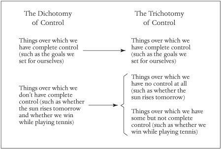
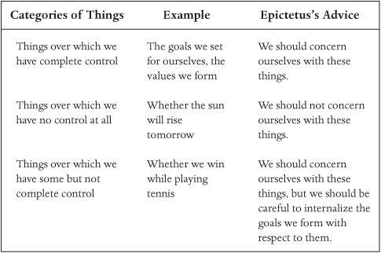

斯多葛快乐的古老艺术
威廉·B·欧文
牛津大学出版社，有限公司，出版推进牛津大学卓越目标的著作在研究、学术和教育方面。
谨献给查理·道尔，
他教会我即使在不划桨时
也要保持头部在船内。
制作一本书需要的不仅仅是一位作者。因此，请允许我感谢那些为实现这部作品做出贡献的人。
首先，感谢莱特州立大学提供的专业发展假期，在此期间写成了本书的大部分内容。也感谢我的系允许我在2005年秋季教授一门关于希腊化哲学的课程，在这门课中我得以试用本书的早期版本。
感谢那些（在大多数情况下无意中）在我的”自愿不适计划”中发挥重要作用的人，包括McCutcheon音乐的Jim McCutcheon，Inner Dance瑜伽中心的Debbie Stirsman，以及我在大代顿划船协会的伙伴们，特别感谢那些有勇气坐在我后面一个座位的人：Judy Dryer、Chris Luhn和Michael McCarty。也感谢Michael帮助我探索测功仪提供的不适世界，并就第7章中使用的术语提出宝贵建议。
感谢Cynthia King阅读并评论我的手稿。
也感谢Bill King，虽然他不愿承认对斯多葛信条的忠诚，但仍然是这位斯多葛派的灵感来源。
感谢众多匿名读者帮助我完善本书的论证。也感谢牛津大学出版社的Cybele Tom成为如此耐心和坚持不懈的文学助产士。
不过，最大的感谢要给我的妻子Jamie，她给了我写这本书的时间，特别是空间。
生活计划
你想从生活中得到什么？你可能会回答这个问题说你想要一个关爱的配偶、一份好工作和一栋漂亮的房子，但这些实际上只是你在生活中想要的一些东西。在问你想从生活中得到什么时，我是在最广泛的意义上问这个问题。我问的不是你在日常活动中形成的目标，而是你生活中的宏大目标。换句话说，在生活中你可能追求的事物中，你认为最有价值的是什么？
许多人在说出这个目标时会有困难。他们知道自己
每分每秒甚至每个十年都想要什么，但他们从未停下来思考自己人生的宏大目标。也许可以理解他们为什么没有这样做。我们的文化不鼓励人们思考这样的事情；实际上，它为他们提供了无穷无尽的干扰，这样他们就永远不必去思考了。但是人生的宏大目标是人生哲学的第一个组成部分。这意味着如果你缺乏人生的宏大目标，你就缺乏连贯的人生哲学。
为什么拥有这样的哲学很重要？因为没有它，
就存在着你将错误地生活的危险——尽管你有所有的活动，尽管你在活着的时候可能享受了所有愉快的消遣，你最终还是会过着糟糕的生活。换句话说，存在这样的危险：当你躺在临终病床上时，你会回顾过去并意识到你浪费了你唯一的生活机会。你没有将生命用于追求真正有价值的东西，而是挥霍了它，因为你让自己被生活所提供的各种花哨的东西所分散注意力。
假设你能确定你人生的宏大目标。同时假设，
你能解释为什么这个目标值得实现。即使如此，你仍然存在错误生活的危险。特别是，如果你缺乏实现目标的有效策略，你就不太可能实现它。因此，人生哲学的第二个组成部分是实现你人生宏大目标的策略。这个策略将明确你必须做什么，当你进行日常活动时，最大化你获得生命中你认为最终有价值的东西的机会。
如果我们想要采取措施避免浪费我们的财富，我们可以很容易找到专家来帮助我们。查看电话簿，我们会找到许多认证的财务规划师。这些人可以帮助我们明确我们的财务目标：例如，我们应该为退休储蓄多少？在明确这些目标后，他们可以建议我们如何实现它们。
然而，假设我们想要采取措施避免浪费的不是我们的
财富而是我们的生命。我们可能会寻求专家来指导我们：一位人生哲学家。这个人会帮助我们思考我们的人生目标，以及这些目标中哪些实际上值得追求。她会提醒我们，因为目标可能会发生冲突，我们需要决定当冲突出现时，我们的哪些目标应该优先考虑。因此，她将帮助我们整理我们的目标并将它们置于一个层次结构中。这个层次结构顶端的目标就是我所称的我们人生的宏大目标：它是我们应该不愿意为了实现其他目标而牺牲的目标。在帮助我们选择这个目标后，人生哲学家将帮助我们制定实现它的策略。
寻找人生哲学家的明显地方是当地大学的哲学
系。参观那里的教职员办公室，我们会发现专门研究形而上学、逻辑学、政治学、科学、宗教和伦理学的哲学家。我们也可能找到专门研究体育哲学、女性主义哲学甚至哲学的哲学的哲学家。但除非我们在一所不寻常的大学，否则我们不会找到我心目中的人生哲学家。
情况并非总是如此。例如，许多古希腊和古罗马
哲学家不仅认为人生哲学值得深思，而且认为哲学的存在理由(raison d’être)就是发展它们。这些哲学家通常对哲学的其他领域也有兴趣——例如逻辑学——但只是因为他们认为追求这种兴趣会帮助他们发展人生哲学。
此外，这些古代哲学家没有将他们的发现留给自己或只与他们的同行哲学家分享。相反，他们建立学校，欢迎任何希望获得人生哲学的人作为他们的学生。不同的学校对人们为了拥有美好生活必须做什么提供了不同的建议。苏格拉底的学生安提西尼建立了犬儒学派，主张苦行的生活方式。苏格拉底的另一个学生阿里斯提普建立了昔勒尼学派，主张享乐主义的生活方式。在这些极端之间，我们发现了许多其他学校，包括伊壁鸠鲁学派、怀疑学派，以及对我们这里最感兴趣的，由季蒂昂的芝诺建立的斯多葛学派。
与这些学校相关的哲学家对他们对人生哲学的兴趣毫不道歉。例如，根据伊壁鸠鲁的说法，“不能治愈人类任何痛苦的哲学家的言论都是虚无的。因为正如医学如果不能驱除身体的疾病就没有利益一样，哲学如果不能
驱除心灵的痛苦也没有利益。“而根据斯多葛哲学家塞内卡（我将在本书中大量谈到他）的说法，”与哲学家一起学习的人每天都应该带走一些好东西：他应该每天回家时成为一个更健全的人，或者在成为
更健全的人的路上。”
本书是为那些寻求人生哲学的人而写的。在接下来的页面中，我将注意力集中在一种我发现有用的哲学上，我怀疑许多读者也会发现它有用。这就是古代斯多葛主义者的哲学。斯多葛的人生哲学可能很古老，但它值得任何希望拥有既有意义又充实的生活的现代人的关注——也就是说，希望拥有美好生活的人。
换句话说，这本书提供了关于人们应该如何生活的建议。更多
确实，我将作为两千年前斯多葛哲学家们所提供建议的传达者。这是我的哲学同行们通常不愿意做的事情，但话说回来，他们对哲学的兴趣主要是”学术性的”；也就是说，他们的研究主要是理论性或历史性的。相比之下，我对斯多葛主义的兴趣是坚决实用的：我的目标是将这种哲学运用到我的生活中，并鼓励其他人将其运用到他们的生活中。我认为，古代斯多葛学者会鼓励这两种努力，但他们也会坚持认为，研究斯多葛主义的主要原因是我们能够将其付诸实践。
另一件需要认识到的事情是，尽管斯多葛主义是一种哲学，但它具有
重要的心理学成分。斯多葛学者意识到，一个被消极情绪困扰的生活——包括愤怒、焦虑、恐惧、悲伤和嫉妒——不会是美好的生活。因此，他们成为了人类心灵运作的敏锐观察者，并因此成为了古代世界最具洞察力的心理学家之一。他们继续发展技巧来预防消极情绪的产生，并在预防尝试失败时消除这些情绪。即使是那些对哲学思辨持谨慎态度的读者也应该对这些技巧感兴趣。毕竟，我们中间谁不愿意减少在日常生活中体验到的消极情绪数量呢？
我在大学和研究生院的老师从未要求我阅读斯多葛学者的作品，虽然我是一个热爱读书的人，但我觉得没有必要自己去阅读他们的作品。更广泛地说，我觉得没有必要思考人生哲学。相反，我对几乎每个人都默认的人生哲学感到满意：用一生的时间寻求财富、社会地位和快乐的有趣组合。换句话说，我的人生哲学可以被慈善地称为一种开明的享乐主义(hedonism)。
然而，在我人生的第五个十年，一些事件共同作用将我引向了
斯多葛主义。其中第一个是作家汤姆·沃尔夫(Tom Wolfe)在1998年出版的《完整的男人》(A Man in Full)。在这部小说中，一个角色意外地发现了斯多葛哲学家爱比克泰德(Epictetus)，然后开始宣扬他的哲学。我发现这既引人入胜又令人困惑。
两年后，我开始为一本关于欲望的书进行研究。作为这项研究的一部分
，我审查了数千年来在掌控欲望方面给出的建议。我首先看看宗教，包括基督教、印度教、道教、苏菲主义和佛教(特别是禅宗佛教)，对欲望有什么看法。我继续审查哲学家们在掌控欲望方面提供的建议，但发现只有相对少数的人提供过这样的建议。其中突出的是希腊化哲学家们：伊壁鸠鲁学派(Epicureans)、怀疑主义者(Skeptics)和斯多葛学者(Stoics)。
在进行欲望研究时，我有一个隐秘的动机。我长期以来对禅宗佛教很感兴趣，并想象着在与我的研究相关的更仔细观察中，我会成为一个全面的皈依者。但令我惊讶的是，我发现斯多葛主义和禅宗有某些共同之处。例如，它们都强调思考我们周围世界瞬息万变的本质的重要性，以及在可能的范围内掌控欲望的重要性。它们也建议我们追求宁静，并给我们如何获得和维持宁静的建议。此外，我开始意识到斯多葛主义比佛教更适合我的分析本性。结果，令我惊讶的是，我发现自己在考虑成为一个实践的斯多葛学者，而不是一个实践的禅宗佛教徒。
在我开始欲望研究之前，斯多葛主义对我来说作为一种人生哲学是
不可能的选择，但当我阅读斯多葛学者的作品时，我发现我以为自己了解的关于他们的几乎所有内容都是错误的。首先，我知道字典将stoic定义为”一个似乎对快乐、悲伤、愉悦或痛苦漠不关心或不受影响的人。“因此我期望大写S的斯多葛学者(Stoics)会是小写s的斯多葛式的(stoical)——他们会是情感压抑的个体。然而，我发现斯多葛学者的目标不是从生活中驱逐情感，而是驱逐消极情感。
当我阅读斯多葛学者的著作时，我遇到了对生活充满快乐和乐观的个体
(尽管他们重点花时间思考所有可能发生在他们身上的坏事)，他们完全能够享受生活的快乐(同时小心不被这些快乐所奴役)。我也惊讶地遇到了重视快乐的个体；实际上，根据塞内加(Seneca)的说法，斯多葛学者寻求发现的”是心灵如何能够始终追求稳定和有利的道路，能够对自己持善意，并能够
带着快乐看待自己的状况”。他还断言，实践斯多葛原则的人”无论他是否愿意，必然会伴随着持续的快乐和一种深刻的、从内心深处涌出的快乐，因为他在自己的资源中找到喜悦，不渴望比
[他内在快乐更大的快乐。“同样，斯多葛哲学家穆索尼乌斯·鲁弗斯(Musonius Rufus)]告诉我们，如果我们按照斯多葛原则生活，“快乐的性格和安全的快乐”会自动随之而来。
在承受世界的虐待和不公时，斯多葛主义者完全投入生活，努力让世界变得更美好。例如，考虑小卡托。(虽然他没有为斯多葛主义的文献做出贡献，但卡托是一个实践的斯多葛主义者；实际上，塞内卡称
他为完美的斯多葛主义者。)[[7]] 他的斯多葛主义并没有阻止卡托勇敢地为恢复罗马共和国而战。同样，塞内卡似乎非常有活力：除了是哲学家外，他还是一个成功的剧作家、皇帝的顾问，以及一世纪相当于投资银行家的人物。而马库斯·奥勒留除了是哲学家外，还是罗马皇帝——实际上，可以说是最伟大的罗马皇帝之一。当我阅读关于斯多葛主义者的文章时，我发现自己对他们充满了钦佩。他们勇敢、节制、理智、自律——这些都是我想要拥有的品质。他们也认为履行义务和帮助同胞很重要——这些价值观我恰好也认同。
在我对欲望的研究中，我发现深思熟虑的人们几乎一致同意
除非我们能克服不知足，否则我们不太可能拥有美好和有意义的生活。他们也一致认为，驯服我们总是想要更多的倾向的一个绝妙方法是说服自己想要我们已经拥有的东西。这似乎是一个重要的见解，但它留下了一个问题：我们到底如何才能做到这一点。我很高兴地发现，斯多葛主义者对这个问题有答案。他们开发了一种相当简单的技巧，如果实践的话，可以让我们高兴，哪怕只是暂时的，成为我们现在的人，过着我们碰巧在过的生活，几乎不管那种生活可能是什么样的。
我越研究斯多葛主义者，就越发现自己被他们的
哲学所吸引。但是当我试图与他人分享我对斯多葛主义新发现的热情时，我很快发现我并不是唯一误解这一哲学的人。朋友、亲戚，甚至我在大学的同事们似乎都认为斯多葛主义者是那些目标是压制所有情感、因此过着阴郁和被动生活的人。我意识到斯多葛主义者是不公正指控的受害者，而我自己直到最近还在帮助传播这种误解。
仅仅这种认识可能就足以激励我写
一本关于斯多葛主义者的书——一本能够澄清事实的书——但恰巧，我有了第二个甚至更强的动机。在了解斯多葛主义之后，我开始以一种低调、实验性的方式尝试将其作为我的人生哲学。这个实验到目前为止已经足够成功，我感到有必要向全世界报告我的发现，相信其他人可能从研究斯多葛主义者并采用他们的人生哲学中受益。
在古希腊和罗马，一个潜在的斯多葛主义者可以通过参加斯多葛学校来学习如何实践斯多葛主义，但这已不再可能。现代的潜在斯多葛主义者可能会作为替代，查阅古代斯多葛主义者的著作，但她在尝试这样做时会发现，这些著作中的许多——特别是希腊斯多葛主义者的著作——已经遗失。此外，如果她阅读幸存下来的作品，她会发现虽然这些作品详细讨论了斯多葛主义，但它们并没有为新手斯多葛主义者提供所谓的课程计划。我在写这本书时面临的挑战是从散布在斯多葛主义著作中的线索构建这样一个计划。
虽然这本书的其余部分为潜在的斯多葛主义者提供了详细的指导方针，
让我在这里以初步的方式描述一些我们在采用斯多葛主义作为人生哲学时想要做的事情。
我们将重新考虑我们的生活目标。特别是，我们将认真对待
斯多葛主义者的主张，即我们渴望的许多东西——最显著的是名声和财富——不值得追求。我们将转而关注追求宁静和斯多葛主义者所称的virtue。我们将发现斯多葛的virtue与人们今天所说的这个词几乎没有共同之处。我们也将发现斯多葛主义者所寻求的宁静不是那种可能通过服用镇静剂带来的宁静；换句话说，它不是僵尸般的状态。相反，它是一种以没有愤怒、悲伤、焦虑和恐惧等负面情绪为标志，并存在积极情绪——特别是喜悦——的状态。
我们将研究斯多葛主义者开发的用于获得和维持宁静的各种心理技巧，
并将在日常生活中运用这些技巧。例如，我们将小心区分我们能控制的事情和我们不能控制的事情，这样我们就不再担心我们不能控制的事情，而是将注意力集中在我们能控制的事情上。我们也将认识到其他人扰乱我们宁静是多么容易，因此我们将实践斯多葛策略来防止他们让我们烦恼。
最后，我们将成为自己生活更有思考力的观察者。我们
将在进行日常事务时观察自己，稍后反思我们所看到的，试图识别生活中痛苦的来源，并思考如何避免这种痛苦。
实践斯多葛主义显然需要付出努力，但这对所有真正的生活哲学来说都是如此。实际上，即使是”开明的享乐主义”也需要努力。开明享乐主义者的生活大目标是最大化他在一生中体验到的快乐。为了实践这种生活哲学，他会花时间发现、探索和排列快乐的来源，并调查它们可能产生的任何不良副作用。然后，开明的享乐主义者会制定策略来最大化他体验到的快乐量。(不加思考地寻求短期满足的非开明享乐主义，我认为并不是一种连贯的生活哲学。)
实践斯多葛主义所需的努力可能比实践开明享乐主义所需的努力更大，但比实践禅宗佛教所需的努力要少。禅宗佛教徒必须冥想，这是一种既耗时又(在某些形式中)在身体和精神上都具有挑战性的修行。相比之下，斯多葛主义的实践不需要我们专门留出时间来”做斯多葛主义”。它确实要求我们定期反思我们的生活，但这些反思时间通常可以挤进一天中的零碎时刻，比如当我们堵在交通中时，或者——这是塞涅卡的建议——当我们躺在床上等待睡眠降临时。
在评估与实践斯多葛主义或任何其他生活哲学相关的”成本”时，读者应该意识到没有生活哲学也是有成本的。我已经提到了这样一个成本：你可能会把日子花在追求无价值的事物上，因此浪费你的生命的危险。
在这一点上，一些读者可能想知道斯多葛主义的实践是否与他们的宗教信仰兼容。在大多数宗教的情况下，我认为是兼容的。特别是基督徒会发现斯多葛教义与他们的宗教观点产生共鸣。例如，他们会分享斯多葛派获得宁静的愿望，尽管基督徒可能称之为平安。
他们会赞赏马可·奥勒留”爱人类”的训诫。当他们遇到爱比克泰德关于有些事情取决于我们，有些事情不取决于我们的观察，以及如果我们有任何理智的话，我们将把精力集中在取决于我们的事情上时，基督徒会想起通常归功于神学家莱因霍尔德·尼布尔的”宁静祷告”。
话虽如此，我应该补充说，一个人同时成为不可知论者和实践斯多葛主义者也是可能的。
本书的其余部分分为四个部分。在第1部分中，我描述了哲学的诞生。尽管现代哲学家倾向于花时间辩论深奥的话题，但大多数古代哲学家的主要目标是帮助普通人过上更好的生活。如我们将看到的，斯多葛主义是古代最受欢迎和最成功的哲学学派之一。
在第2和第3部分中，我解释了我们为了实践斯多葛主义必须做什么。
我首先描述斯多葛派为获得并随后保持宁静而发展的心理技巧。然后我描述斯多葛派关于如何最好地处理日常生活压力的建议：例如，当有人侮辱我们时，我们应该如何回应？尽管在过去的两千年里很多事情都发生了变化，但人类心理几乎没有改变。这就是为什么我们这些生活在21世纪的人可以从塞涅卡等哲学家向1世纪罗马人提供的建议中受益。
最后，在本书的第4部分中，我为斯多葛主义辩护，反驳各种批评，并根据现代科学发现重新评估斯多葛心理学。我通过叙述我在自己的斯多葛主义实践中获得的见解来结束这本书。
我的学术同事们可能对这本书感兴趣；例如，他们可能对我对各种斯多葛言论的解释感到好奇。不过，我最感兴趣的受众是担心自己可能生活错误的普通人。这包括那些已经意识到自己缺乏连贯的生活哲学，因此在日常活动中挣扎的人：他们一天努力完成的事情只是撤销了前一天完成的事情。这也包括那些有生活哲学但担心它在某种程度上有缺陷的人。
我写这本书时心中有一个问题：如果古代斯多葛派决定为21世纪的人写一本指南书——一本告诉我们如何过上美好生活的书——那本书可能是什么样子的？接下来的页面就是我对这个问题的回答。
可能一直都有哲学家，在某种意义上。他们是那些不仅提出问题——比如世界从何而来？人从何而来？为什么有彩虹？——更重要的是，继续提出后续问题的人。例如，当被告知世界是由众神创造的时候，这些原始哲学家会意识到这个答案并没有触及事物的本质。他们会继续问众神为什么造世界，他们如何造世界，以及——对那些试图回答他们问题的人来说最令人烦恼的——谁造了众神。
无论哲学思维是如何以及何时开始的，它在
公元前六世纪出现了哲学思想的巨大飞跃。我们看到毕达哥拉斯（公元前570-500年）在意大利进行哲学思辨；泰勒斯（公元前636-546年）、阿那克西曼德（公元前641-547年）和赫拉克利特（公元前535-475年）在希腊；孔子（公元前551-479年）在中国；佛陀（公元前563-483年）在印度。尚不清楚这些人是否彼此独立地发现了哲学；也不清楚哲学影响究竟朝哪个方向流动，如果确实存在这种流动的话。
希腊传记作家第欧根尼·拉尔修从公元三世纪的视角出发，提供了一部极具可读性（但并非完全可靠）的早期哲学史。根据第欧根尼的观点，早期西方哲学有两个独立的分支。一个分支——他称之为意大利分支——始于毕达哥拉斯。如果我们追踪毕达哥拉斯的各种继承者，最终会来到伊壁鸠鲁，他自己的哲学学派是斯多葛学派的主要竞争对手。另一个分支——第欧根尼称之为爱奥尼亚分支——始于阿那克西曼德，他（在智识和教学上）培养了阿那克西美尼，阿那克西美尼培养了阿那克萨戈拉，阿那克萨戈拉培养了阿尔克劳斯，最后阿尔克劳斯培养了苏格拉底（公元前469-399年）。
苏格拉底过着非凡的生活。他的死也同样非凡：他因腐蚀雅典青年和其他被指控的罪行而受审，被同胞判为有罪，并被判处饮毒芹汁而死。他本可以通过向法庭求情或在判决下达后逃跑来避免这种惩罚。然而，他的哲学原则不允许他这样做。苏格拉底死后，他的众多追随者不仅继续从事哲学活动，还吸引了自己的追随者。他最著名的学生柏拉图创立了被称为学园派的哲学学派，阿里斯蒂普创立了昔勒尼学派，欧几里得创立了麦加拉学派，斐多创立了厄利斯学派，安提斯泰尼创立了犬儒学派。苏格拉底之前只是涓涓细流的哲学活动，在他死后成为真正的洪流。
为什么会出现这种对哲学兴趣的爆发？部分原因是苏格拉底改变了哲学探究的焦点。在苏格拉底之前，哲学家主要关心解释他们周围的世界和那个世界的现象——从事我们现在称为科学的活动。虽然苏格拉底年轻时学习过科学，但他放弃了科学，将注意力集中在人类境况上。正如罗马演说家、政治家和哲学家西塞罗所说，苏格拉底是”第一个将哲学从天上召唤下来，置于人类城市中，带入他们的家园，迫使她询问关于生活、道德以及善恶的问题”的人。古典学者弗朗西斯·麦克唐纳·康福德用类似的术语描述苏格拉底的哲学意义：“前苏格拉底哲学始于……自然的发现；苏格拉底哲学始于人类灵魂的发现。”
为什么苏格拉底在他死后二十四个世纪仍然是一个令人印象深刻的人物？这不是因为他的哲学发现；毕竟，他的哲学结论基本上是消极的：他向我们展示了我们不知道的东西。相反，这是因为他允许自己的生活方式在多大程度上受到他的哲学思辨的影响。实际上，根据哲学家路易斯·E·纳维亚的观点，“在苏格拉底身上，也许比在任何其他主要哲学家身上更多，我们遇到了一个能够在日常活动中将理论和思辨关切融入生活的人的例子。”纳维亚将他描述为”在思想和行为上都是哲学活动的真正范例”。
大概，那些被苏格拉底吸引的人中，一些人主要被他的理论化所打动，而另一些人则最被他的生活方式所打动。柏拉图属于前者；在他的学园中，柏拉图更感兴趣的是探索哲学理论，而不是提供生活方式建议。相比之下，安提斯泰尼最被苏格拉底的生活方式所打动；他创立的犬儒学派摒弃哲学理论化，转而专注于向人们建议他们必须做什么才能过上好生活。
这就好像苏格拉底在死时分裂成了柏拉图和安提斯泰尼，柏拉图继承了苏格拉底对理论的兴趣，安提斯泰尼继承了他对过好生活的关注。如果哲学的这两个方面在随后的几千年里都能蓬勃发展就太好了，因为人们既受益于哲学理论化，也受益于哲学在自己生活中的应用。不幸的是，虽然哲学的理论方面蓬勃发展，但实践方面却萎缩了。
在古代波斯这样的专制政府统治下，书写、阅读和算术能力对政府官员来说很重要，但说服他人的能力却不重要。官员只需要下达命令，那些在他们权力之下的人会毫不犹豫地服从。然而，在希腊和罗马，民主制度的兴起意味着那些能够说服他人的人最有可能在政治或法律领域取得成功的职业生涯。正是部分由于这个原因，富裕的希腊和罗马父母在孩子完成中等教育后，寻求能够培养孩子说服能力的老师。
这些父母可能会寻求智者的服务，智者的目标是教学生赢得争论。为了实现这个目标，智者教授各种说服技巧，包括理性诉求和情感诉求。特别是，他们教学生可以为任何命题进行论证或反对论证。除了培养学生的论辩技能外，智者还培养他们的演讲技能，使他们能够有效地传达他们设计的论证。
或者，父母们可能会寻求哲学家的服务。
与sophists一样，哲学家教授说服技巧，但与sophists不同的是，他们避免诉诸情感。同样与sophists不同的是，哲学家们认为除了教授学生如何说服他人，还应该教他们如何好好生活。因此，根据历史学家H. I. Marrou的说法，在他们的教学中，他们强调”教育的道德层面，个性的发展和内在生活”。在这个过程中，许多哲学家为他们的学生提供了一种人生哲学：他们教导学生生活中什么东西值得追求，以及如何最好地追求它们。
一些想要为孩子提供哲学教育的父母会雇佣一位哲学家作为住家导师；例如，亚里士多德就被马其顿国王腓力二世雇佣来教导亚历山大，亚历山大后来成为了”大帝”。负担不起私人导师的父母会把他们的儿子——但可能不是女儿——送到哲学学校。苏格拉底死后，这些学校成为雅典文化的一个突出特征，当公元前二世纪罗马受到雅典文化的影响时，哲学学校也开始在罗马出现。
如今不再有哲学学校了，这是一个遗憾。诚然，哲学仍然在学校内进行——更确切地说，在大学的哲学系内——但哲学系所扮演的文化角色与古代哲学学校所扮演的角色截然不同。首先，那些报名参加大学提供的哲学课程的人很少是出于获得人生哲学的愿望而这样做的；相反，他们上课是因为他们的顾问告诉他们如果不上就不能毕业。即使他们确实寻求人生哲学，在大多数大学里，他们也很难找到能提供这种哲学的课程。
但是，尽管哲学学校已成为过去，人们对人生哲学的需求一如既往。问题是，他们能到哪里去获得呢？如果他们去当地大学的哲学系，正如我所解释的，他们可能会失望。如果他们转而求助于当地教会呢？他们的牧师可能会告诉他们必须做什么才能成为一个好人，也就是说，他们必须做什么才能在道德上正直。例如，他们可能会被教导不要偷窃或说谎或（在某些宗教中）堕胎。他们的牧师也可能会解释他们必须做什么才能拥有美好的来世：他们应该定期参加礼拜，祈祷，以及（在某些宗教中）捐献什一税。但他们的牧师对于他们必须做什么才能拥有美好的生活可能相对较少涉及。事实上，大多数宗教在告诉信徒他们必须做什么才能在道德上正直并进入天堂后，就让他们自己去决定生活中什么东西值得或不值得追求。这些宗教认为，信徒努力工作以便能负担得起巨大的豪宅和昂贵的跑车，只要他在这样做时不违反任何法律，就没有什么不对；他们也不认为信徒放弃豪宅选择小屋、放弃汽车选择自行车有什么不对。
如果宗教确实为信徒提供关于生活中什么东西值得或不值得追求的建议，它们往往以如此低调的方式提供建议，以至于信徒可能将其视为建议而不是关于如何生活的指令，因此可能会忽略这些建议。可以想象，这就是为什么各种宗教的信徒，尽管他们的宗教信仰不同，最终却拥有相同的即兴人生哲学，即一种开明的享乐主义。因此，尽管路德教徒、浸信会教徒、犹太教徒、摩门教徒和天主教徒持有不同的宗教观点，但当在教堂或犹太会堂外遇到他们时，他们却惊人地相似。他们从事类似的工作，有着类似的职业抱负。他们住在类似的房子里，以类似的方式装修。他们对当前流行的任何消费品都有着同样程度的渴望。
宗教显然有可能要求其信徒采用特定的人生哲学。以Hutterite宗教为例，该宗教教导其信徒，生活中最有价值的事情之一是社区感。因此，Hutterite教徒被禁止拥有私人财产，其理由是这种所有权会引起嫉妒情绪，进而破坏Hutterite教徒所珍视的社区感。（当然，我们可以质疑这是否是一种合理的人生哲学。）
然而，大多数宗教并不要求其信徒采用特定的人生哲学。只要信徒不伤害他人，不做激怒上帝的事情，他们就可以自由地按照自己的意愿生活。事实上，如果Hutterite宗教对大多数人来说既极端又奇特，那是因为他们无法想象属于一个告诉他们如何生活的宗教。
这意味着，如今完全有可能某个人在宗教环境中长大，在大学里上过哲学课程，但仍然缺乏人生哲学。（事实上，这正是我大多数学生所处的情况。）那么，那些寻求人生哲学的人应该做什么呢？也许他们最好的选择是通过阅读那些经营古代学校的哲学家的著作，为自己创建一个虚拟的哲学学校。无论如何，这就是我在接下来的篇幅中要鼓励读者去做的事情。
在古希腊，当哲学学派仍是文化景观中的突出特征时，父母可以选择将孩子送往众多学派中的任何一个。假设我们能够穿越时空回到公元前300年，以一个有思考能力的人的身份在雅典进行徒步游览。我们可以从市集广场(Agora)开始我们的游览，一个世纪前苏格拉底曾在这里与雅典市民进行哲学思辨。在市集广场的北侧，我们会看到彩绘门廊(Stoa Poikile)，斯多噶学派哲学的创始人芝诺(Zeno of Citium)可能正在那里滔滔不绝地讲授。这个”门廊”实际上是一个装饰着壁画的柱廊。
当我们穿行雅典时，可能会遇到犬儒学派哲学家克拉底(Crates)，芝诺曾经参加过他的哲学学派。尽管最早的犬儒学派在犬座体育馆(Cynosarges)附近聚会——这也是他们名称的由来——但在雅典的任何地方都能找到他们，他们试图吸引（如有必要，可以说是拖拽）普通民众参与哲学讨论。此外，虽然父母可能愿意送他们的孩子去向芝诺学习，但他们不太可能鼓励孩子成为犬儒学派，因为犬儒学派的教义如果成功内化，将保证他们的孩子过上可耻贫困的生活。
向西北方向前进，从双重门(Dipylon Gate)离开城市，我们会来到伊壁鸠鲁学派的花园，由伊壁鸠鲁(Epicurus)本人主持。彩绘门廊位于城市环境中，斯多噶学派的讲座可以想象会被街道的噪音或路人的评论定期打断，而伊壁鸠鲁的花园则有着明显的乡村感觉。花园实际上是一个运作中的花园，伊壁鸠鲁学派在其中种植自己的蔬菜。
继续向西北方向前进，距离市集广场约一英里处，我们会来到学园(Academy)，这是柏拉图(Plato)于公元前387年创立的哲学学派，比苏格拉底去世晚了十多年。与伊壁鸠鲁的花园一样，学园是一个进行哲学思辨的绝佳场所。它是一个公园般的隐居地，配有步道和喷泉。学园内有建筑物，由柏拉图和他的朋友们出资建造。在公元前300年，可能是波勒蒙(Polemo)在那里滔滔不绝地讲授，他继承了学派掌门人的位置。（正如我们将要看到的，斯多噶哲学家芝诺曾在波勒蒙的学派学习过一段时间。）
折返，再次穿过城市，从城门进入雅典东部郊区，我们会来到吕克昂(Lyceum)。在这个树木繁茂的地区，靠近阿波罗·吕刻俄斯(Apollo Lykeios)神殿，我们可以看到逍遥学派(Peripatetics)——亚里士多德(Aristotle)的弟子们——边走边谈，队伍的领头人可能是泰奥弗拉斯托斯(Theophrastus)。
但这只是古代父母可选择教育选项的开始。除了我们徒步游览中提到的学派外，还有前面提到的昔兰尼学派、怀疑论学派、麦加拉学派和埃利斯学派，还可以加上第欧根尼·拉尔修(Diogenes Laertius)提到的其他几个学派，包括厄勒特里亚学派、安尼刻瑞学派和忒奥多瑞学派，以及由至福论者(Eudaemonists)、真理爱好者(Truth-lovers)、反驳论者(Refutationists)、类比推理者(Reasoners from Analogy)、物理学家(Physicists)、道德学家(Moralists)和辩证法学者(Dialecticians)经营的学派。
碰巧的是，年轻男子（以及很少的年轻女子）并不是参加哲学学派的唯一群体。有时父亲与儿子一起学习。在其他情况下，成年人独自参加学派的讲座。这些成年人中的一些人只是对哲学感兴趣；也许他们年轻时参加过某个学派，现在寻求在该学派所教授的人生哲学中”继续教育”。其他成年人虽然从未隶属于某个学派，但可能作为客人参加其讲座。他们的动机很可能与现代人参加公开讲座的动机非常相似：他们寻求启发和娱乐。
还有一些成年人参加哲学学派有着不可告人的动机：他们想要创办自己的学派，聆听成功学派掌门人的讲座，以便借用可用于自己教学的哲学思想。芝诺就被指控做过这样的事情：波勒蒙抱怨芝诺参加学园讲座的动机是偷取他的教义。
各个敌对的哲学学派在所教授的科目上有所不同。例如，早期的斯多噶学派不仅对人生哲学感兴趣，而且对物理学和逻辑学也感兴趣，原因很简单，他们认为这些研究领域本质上是相互交织的。伊壁鸠鲁学派与斯多噶学派一样对物理学感兴趣（尽管他们对物理世界的观点与斯多噶学派不同），但同样不分享他们对逻辑学的兴趣。昔兰尼学派和犬儒学派对物理学和逻辑学都不感兴趣；在他们的学派中，所教授的全部内容就是人生哲学。
那些为学生提供人生哲学的学派在所推荐的哲学上有所不同。例如，昔兰尼学派认为生活的宏大目标是体验快乐，因此主张利用每一个体验快乐的机会。犬儒学派主张苦行的生活方式：如果你想要美好的生活，他们论证说，你必须学会几乎什么都不想要。斯多噶学派介于昔兰尼学派和犬儒学派之间：他们认为人们应该享受生活所提供的美好事物，包括友谊和财富，但前提是他们不要执着于这些美好的事物。确实，他们认为我们应该定期中断对生活所提供之物的享受，花时间思考失去我们正在享受的任何东西。
隶属于某个哲学学派是一件严肃的事情。根据历史学家西蒙·普莱斯(Simon Price)的说法，“对哲学派别的归属不仅仅是思想上的问题，也不是单纯的智识时尚的结果。那些认真对待哲学的人试图过那种
每日的哲学”[8] 正如现代人的宗教可以成为其个人身份的关键要素——想想重生的基督徒——古希腊人或罗马人的哲学派别也成为了他是谁的重要组成部分。历史学家保罗·维纳(Paul Veyne)认为，“真正成为一名哲学家意味着要践行该派别的教义，让自己的行为（甚至着装）与之相符，必要时为之而死。”[9]
本书的读者应该牢记，虽然我在倡导斯多葛主义(Stoicism)作为一种生活哲学，但它并不是寻求这种哲学的人们唯一可选的选项。此外，虽然斯多葛学派认为他们可以证明他们的是正确的生活哲学，但我（正如我们将在第21章中看到的）不认为这样的证明是可能的。相反，我认为一个人应该选择哪种生活哲学取决于她的个性和环境。
但在承认这一点的同时，让我补充说，我认为有很多人的个性和环境使他们成为践行斯多葛主义的绝佳候选者。此外，无论一个人最终采用什么样的生活哲学，她的生活都可能比那些试图生活——如许多人所做的——没有连贯的生活哲学的情况要好。
芝诺(Zeno)（公元前333-261年）是第一个斯多葛学派。（我指的是基蒂昂的芝诺(Zeno of Citium)，不要与埃利亚的芝诺(Zeno of Elea)混淆，后者因涉及阿喀琉斯(Achilles)和乌龟的悖论而闻名，也不要与第欧根尼·拉尔修(Diogenes Laertius)在其传记素描中提到的其他七个芝诺混淆。）芝诺的父亲是一名紫色染料商人，经常从旅行中带回书籍给芝诺阅读。其中包括在雅典购买的哲学书籍。这些书籍激起了芝诺对哲学和雅典的兴趣。
由于一次海难，芝诺发现自己身在雅典，在那里，他决定利用这座城市提供的哲学资源。他去了一家书店，询问在哪里可以找到像苏格拉底这样的人。就在这时，犬儒派的克拉特斯(Crates the Cynic)正好路过。书商指着他说：“跟着那个人走。”据说，就这样芝诺成了克拉特斯的学生。回顾他生命中的这段时光，芝诺评论道：“当我遭遇海难时，我进行了一次成功的航行。”[1]
犬儒派对哲学理论化没有什么兴趣。相反，他们提倡一种相当极端的哲学生活方式。他们是苦行者。从社会角度来说，他们相当于我们今天所说的无家可归者：他们生活在街头，睡在地上。他们只拥有身上的衣服，通常是一件破烂的斗篷，古人称之为”犬儒装束”。他们过着朝不保夕、手到口到的生活。
当有人告诉爱比克泰德(Epictetus)——他虽然自己是斯多葛学派，但对犬儒主义很熟悉——说他正在考虑加入犬儒学派时，爱比克泰德解释了成为犬儒派会面临什么：“你必须彻底摒弃获得的意愿，必须只避免那些在你意志范围内的事物：你不能怀有愤怒、暴怒、嫉妒、怜悯：美丽的少女、美好的名声、宠儿或甜美的蛋糕，对你来说都必须毫无意义。”他解释说，犬儒派”必须具备如此程度的耐心精神，以至于在民众看来像石头一样无情。辱骂、殴打或侮辱对他来说都不算什么。“[2] 人们可以想象，很少有人有勇气和耐力过犬儒派的生活。
犬儒派以其机智和智慧而闻名。例如，当有人问男人应该娶什么样的女人时，安提西尼(Antisthenes)回答说，无论他选择什么样的女人作妻子，他都会后悔结婚：“如果她美丽，你不会独占她；如果她丑陋，你会为此付出沉重代价。”关于我们与他人的交往，他评论说，“与乌鸦结交比与奉承者结交更好；因为前者在你死后才吞噬你，后者在你活着时就吞噬你。”他还建议听众”关注你的敌人，因为他们最先发现你的错误。“尽管或许正因为他的尖锐机智，安提西尼被描述为”在谈话中最令人愉快的人”。[3]
锡诺普的第欧根尼(Diogenes of Sinope)（不要与写了他和其他哲学家传记素描的第欧根尼·拉尔修混淆）是安提西尼的学生，后来成为最著名的犬儒派。为了为简单生活辩护，第欧根尼观察到”诸神给了人们轻松生活的手段，但这些手段被忽视了，因为我们需要蜂蜜蛋糕、香油等等。“他说，人类的疯狂就在于，当他们有能力满足时却选择痛苦。问题是”坏人服从他们的欲望，就像仆人服从主人一样”，因为他们无法控制自己的欲望，所以永远无法找到满足。[4]
第欧根尼坚持认为，人类的价值观已经被腐蚀。他举例指出，一座雕像，其唯一功能是悦目，可能价值三千德拉克马，而一夸脱大麦面粉，食用后可以维持我们的生命，只需两个铜币就能买到。[5] 他认为饥饿是最好的开胃菜，因为他等到饥饿或口渴时才进食或饮水，“他享用大麦饼的乐趣比其他人享用最昂贵食物的乐趣更大，从流水溪流中饮水比其他人饮用他们的塔索斯(Thasian)酒更享受。”[6] 当被问及缺少住所时，第欧根尼会回答说他在每个城市都能进入最伟大的房子——即它们的神庙和体育馆。当被问及他从哲学中学到了什么时，第欧根尼回答：“为每一种情况做好准备。”
[fortune.”[7] 正如我们将看到的，这个回答预示了斯多葛主义的一个重要主题。
犬儒学派不是在郊区环境中从事他们的工作，如伊壁鸠鲁和柏拉图那样，而是在雅典的街头，就像苏格拉底所做的那样。和苏格拉底一样，犬儒学派不仅试图教导那些主动求学的人，而是教导任何人，包括那些不愿意被教导的人。实际上，犬儒学派的克拉特斯——正如我们所见，他是斯多葛哲学家芝诺的第一位哲学老师——不满足于仅仅纠缠他在街上遇到的人；他还会不请自来地进入人们的家中训诫里面的人。由于这个习惯，他被称为”开门者”。[8]
芝诺决定自己比克拉特斯更感兴趣的是理论。因此他想出了一个主意，不仅关注哲学生活方式或哲学理论，而是将生活方式与理论结合起来，就像苏格拉底所做的那样。[9] 十九世纪德国哲学家亚瑟·叔本华通过观察斯多葛哲学家从犬儒学派”将实践转变为理论”来总结犬儒主义与斯多葛主义之间的关系。[10]
因此芝诺开始学习哲学理论。他去跟随麦加拉学派的斯蒂尔波学习。（克拉特斯的反应是试图用武力把他拖走。）他还在学院派跟随波勒莫学习，大约在公元前300年，他创立了自己的哲学学派。在他的教学中，他似乎将克拉特斯的生活方式建议与波勒莫的理论哲学相结合。（据波勒莫说，芝诺只不过是给学院派的学说”化了个腓尼基妆”。）[11] 在这个混合体中，他融入了麦加拉学派对逻辑和悖论的兴趣。
芝诺的哲学学派立即获得了成功。[12] 他的追随者最初被称为芝诺派，但因为他习惯在彩色柱廊(Stoa Poikile)讲课，他们后来被称为斯多葛派——顺便说一下，以前经常在那里闲逛的诗人也是这样被称呼的。[13]
使斯多葛主义有吸引力的一个特点是它摒弃了犬儒派的苦行主义：斯多葛派支持一种虽然简朴但允许生活舒适的生活方式。斯多葛派为这种摒弃进行辩护，论证说如果他们像犬儒派那样避免”好东西”，他们因此证明了这些东西确实是好的——是如果他们不对自己隐瞒的话就会渴望的东西。斯多葛派享受任何恰好可得的”好东西”，但即使在这样做时，他们也准备好放弃这些东西。
芝诺的哲学有伦理学、物理学和逻辑学三个组成部分。那些跟随他学习斯多葛主义的人从逻辑学开始，然后是物理学，最后是伦理学。[14]
虽然斯多葛派不是第一批研究逻辑的人——例如，亚里士多德在他们之前就研究过，麦加拉学派也是如此——斯多葛逻辑显示出前所未有的复杂程度。斯多葛派对逻辑的兴趣是他们相信人的显著特征是理性的自然结果。毕竟，逻辑是对推理正确使用的研究。斯多葛派成为论证形式的专家，比如”如果A，那么B；但A，因此B”或”要么A要么B；但不是A，因此B”。这些论证形式分别被称为肯定前件式和否定选言式，至今仍被逻辑学家使用。
要理解斯多葛派对逻辑的兴趣，有助于记住家长们把孩子送到哲学学校，不仅是为了让他们学会如何好好生活，也是为了让他们磨练说服技巧。通过教授学生逻辑，斯多葛派帮助他们发展这些技能：懂得逻辑的学生能够发现他人犯的谬误，从而在论证中战胜他们。
物理学是芝诺斯多葛主义的第二个组成部分。生活在没有科学的时代，芝诺的学生无疑欣赏对周围世界的解释。除了像现代物理学那样提供自然现象的解释外，斯多葛物理学还关注我们所说的神学。例如，芝诺试图解释诸如神的存在和本质、神为什么创造我们的宇宙及其居民、神在决定事件结果中扮演的角色，以及人与神之间的适当关系等问题。
伦理学是芝诺斯多葛主义的第三个也是最重要的组成部分。读者应该意识到，斯多葛的伦理学概念不同于我们现代的概念。我们将伦理学视为对道德对错的研究。现代伦理学家可能会思考，例如，堕胎在道德上是否允许，如果是的话，在什么情况下允许。相比之下，斯多葛伦理学是所谓的幸福主义伦理学，来自希腊语eu意思是”好”，daimon意思是”精神”。它关注的不是道德对错，而是拥有”好精神”，也就是说，过好的、幸福的生活，或有时被称为道德智慧的东西。[15] 正如哲学家劳伦斯·C·贝克尔所说，“斯多葛伦理学是幸福主义的一种。它的核心组织关切是关于我们应该做什么或成为什么以过好生活——以繁荣发展。”[16] 用史学家保罗·韦纳的话来说，“斯多葛主义与其说是一种伦理学，不如说是一个矛盾的幸福配方。”[17]
现代读者很容易误解斯多葛派所说的”美好生活”的含义。许多读者会将美好生活等同于谋得好生计——也就是拥有一份高薪工作。然而，斯多葛派认为，一个人完全可能在谋得很好的生计的同时过着糟糕的生活。比如，假设他憎恨自己的高薪工作，或者假设这份工作要求他做一些他知道是错误的事情，从而在内心产生冲突。
那么，一个人必须做什么才能拥有斯多葛派所说的美好生活呢？要有美德！但是，“美德”这个词同样容易引起误解。告诉现代读者斯多葛派主张她要过有美德的生活，她可能会翻白眼；事实上，对这个读者来说，修女会是有美德个体的典型例子，而使她们有美德的是她们的贞洁、谦逊和善良。那么，斯多葛派是在主张我们要像修女一样生活吗？
实际上，这完全不是斯多葛派在谈论美德时所想的。对斯多葛派来说，一个人的美德不依赖于，比如说，她的性经历。相反，它依赖于她作为人的卓越——依赖于她在履行人类被设计的功能方面表现得如何。就像一把”有美德的”（或优秀的）锤子是指能够很好地履行它被设计的功能——即敲钉子——的锤子一样，有美德的个体是指能够很好地履行人类被设计的功能的人。因此，要有美德，就是要按照我们被设计的方式生活；正如芝诺所说，就是按照自然生活。斯多葛派还会补充说，如果我们这样做，我们就会拥有美好的生活。
那么，人被设计来履行什么功能呢？斯多葛派认为，要回答这个问题，我们只需要审视自己。这样做时，我们会发现我们有某些本能，就像所有动物一样。我们体验饥饿；这是自然让我们滋养自己的方式。我们也体验欲望；这是自然让我们繁殖的方式。但我们在一个重要方面与其他动物不同：我们有推理的能力。芝诺会断言，从这一点我们可以得出结论，我们被设计成要讲道理的。
如果我们运用我们的理性，我们会进一步得出结论，我们被设计来做某些事情，我们有某些义务。最重要的是，既然自然意图让我们成为社会性生物，我们对同胞就有义务。比如，我们应该孝敬父母，对朋友友善，关心同胞的利益。正是这种社会义务感促使斯多葛派卡托积极参与罗马政治，尽管这样做让他付出了生命的代价。
虽然如我所说，斯多葛派的主要关注点是伦理学——过有美德的生活，从而拥有美好的生活——他们也对逻辑学和物理学感兴趣。通过研究逻辑学，他们希望能够很好地履行我们被设计的功能之一；即以理性的方式行为。通过研究物理学，他们希望深入了解我们被设计的目的。斯多葛派提出了各种比喻来解释他们哲学三个组成部分之间的关系。比如，他们断言，斯多葛哲学就像一片肥沃的田地，“逻辑学是围绕的篱笆，伦理学是庄稼，物理学是土壤”。这个比喻清楚地表明了伦理学在他们哲学中的核心作用：如果不会产生庄稼，为什么要关心土壤，为什么要建篱笆呢？
如果我们完全按照自然生活——也就是说，如果我们完美地实践斯多葛主义——我们就会成为斯多葛派所说的智者或圣人。根据第欧根尼·拉尔修的说法，斯多葛圣人”不虚荣；因为他对好的或坏的名声都无所谓”。他从不感到悲伤，因为他认识到悲伤是”灵魂的非理性收缩”。他的行为是模范的。他不让任何事情阻止他履行职责。虽然他喝酒，但他不是为了喝醉而喝酒。简而言之，斯多葛圣人是”神一般的”。
斯多葛派会首先承认，这种神性是极其罕见的。然而，对斯多葛派来说，成为圣人几乎不可能并不是一个问题。他们谈论圣人主要是为了有一个模型来指导他们实践斯多葛主义。圣人是他们瞄准的目标，尽管他们可能无法击中它。换句话说，圣人之于斯多葛主义，就像佛陀之于佛教。大多数佛教徒永远不可能希望变得像佛陀一样开悟，但是，反思佛陀的完美可以帮助他们获得一定程度的开悟。
克里安西斯（公元前331-232年）是芝诺斯多葛学派的学生，当芝诺去世时，他继承了学派的领导权。然而，当克里安西斯年老时，他开始向其他学派流失学生，斯多葛主义的前景看起来很黯淡。他去世后，斯多葛学派的领导权传给了他的学生克吕西波斯（约公元前282-206年），在他的领导下，学派恢复了昔日的声望。
在克吕西波斯去世后，斯多葛学派在一系列领导者的带领下继续繁荣，包括罗德岛的帕内修斯，他在斯多葛主义史册中被记住不是作为创新者，而是作为这一哲学的出口者。当帕内修斯在约公元前140年前往罗马时，他把斯多葛主义带了过去。他与西庇阿·阿非利加努斯和其他罗马绅士交朋友，让他们对哲学产生兴趣，从而成为了罗马斯多葛主义的创始人。
在引入斯多葛主义后，罗马人调整了这一学说以适应他们的需要。首先，他们对逻辑学和物理学的兴趣不如希腊人那么浓厚。事实上，到了马可·奥勒留——最后一位伟大的罗马斯多葛派——的时代，逻辑学和物理学基本上已经被抛弃了：在《沉思录》中，我们发现马可为自己没有浪费时间而自我祝贺。
研究这些学科的时间。[[22]]
罗马人还对希腊斯多葛派的伦理纲领做了微妙的改变。正如我们所看到的，希腊斯多葛派的主要伦理目标是获得美德。罗马斯多葛派保留了这个目标，但我们发现他们还反复提出第二个目标：获得宁静。他们所说的宁静并不是指僵尸般的状态。（毕竟，倡导那种宁静，将是对斯多葛派认为对有德生活至关重要的理性的拒绝。）相反，斯多葛式的宁静是一种心理状态，其特征是没有负面情绪，如悲伤、愤怒和焦虑，并且存在积极情绪，如快乐。
对于罗马斯多葛派来说，获得宁静和获得美德的目标是相互关联的，因此，当他们讨论美德时，也很可能讨论宁静。特别是，他们很可能指出，获得美德的一个好处是我们随之会体验到宁静。因此，在他的《论说集》(Discourses)早期，爱比克泰德(Epictetus)建议我们追求美德，但立即提醒我们，美德”承诺……创造幸福、平静和宁静”，并且”向美德的进步就是向这些心理状态的进步。“实际上，他甚至
[将宁静确定为美德所追求的结果。[23]]
由于罗马斯多葛派花费了如此多的时间讨论宁静（作为有德生活的副产品），他们给人留下了对美德不感兴趣的印象。例如，考虑爱比克泰德的《手册》(Handbook)，也被称为他的《手册》(Manual)或《摘要》(Encheiridion)。阿里安(Arrian)（爱比克泰德的学生之一）编撰了这部作品，目标是为二世纪的罗马读者提供一个容易理解的斯多葛主义入门介绍。尽管《手册》充满了关于根据爱比克泰德的观点，如果我们希望获得并保持宁静必须做什么的建议，但阿里安认为没有必要提及美德。
关于罗马斯多葛派获得美德目标与获得宁静目标之间的联系，最后需要说明一点。除了断言追求美德会给我们带来宁静之外，我认为罗马斯多葛派还会论证，获得宁静将帮助我们追求美德。一个不宁静的人——也就是说，被愤怒或悲伤等负面情绪分散注意力的人——可能会发现很难做理性告诉他要做的事情：他的情绪会战胜他的理智。因此，这个人可能会对什么事物真正是好的感到困惑，结果可能无法追求它们，并且因此可能无法获得美德。因此，对于罗马斯多葛派来说，追求美德和追求宁静是一个良性循环的组成部分——实际上，是一个双重良性循环：追求美德带来一定程度的宁静，这反过来又使我们更容易追求美德。
为什么罗马斯多葛派比他们的希腊前辈给予获得宁静更突出的地位？我认为，这个问题的部分答案是罗马斯多葛派对纯理性激励人们的力量不如希腊人那样有信心。希腊斯多葛派认为让人们追求美德的最好方法是让他们理解什么事物是好的：如果一个人理解了什么是真正好的事物，他作为理性的人，必然会追求它们，从而变得有德。因此，希腊斯多葛派认为几乎不需要提及追求美德的有益副产品，包括最重要的是获得宁静。
相比之下，罗马斯多葛派显然认为，为什么他们的罗马同胞应该追求美德并不明显。他们还认识到，普通罗马人会本能地重视宁静，因此会接受获得宁静的策略。因此，罗马斯多葛派似乎得出结论，通过用宁静来美化美德——更准确地说，通过指出人们通过追求美德将获得的宁静——他们将使斯多葛学说对普通罗马人更有吸引力。
此外，穆索尼乌斯·鲁弗斯(Musonius Rufus)和爱比克泰德等斯多葛派教师还有另一个强调宁静的原因：通过这样做，他们使他们的学校对潜在学生更有吸引力。我们应该记住，在古代世界，哲学学校彼此直接竞争。如果一个学校教授人们认为有吸引力的哲学，它就获得了”市场份额”，但如果一个学校的哲学不再受到潜在学生的青睐，这个学校可能会沉入遗忘——正如我们所看到的，斯多葛学校在克里安忒斯(Cleanthes)领导下几乎发生了这种情况。
为了获得和留住学生，学校愿意在他们教授的哲学学说上保持灵活性。例如，有人建议，在公元前三世纪中期，学院派(Academic)和斯多葛派哲学学校，因为他们正在向竞争对手伊壁鸠鲁派(Epicurean)学校流失学生，决定结成哲学联盟并相应地修改他们的学说，共同目的是吸引学生离开
伊壁鸠鲁派。[[24] 沿着类似的思路，可以想象罗马斯多葛派]通过在他们的哲学中强调宁静，可能试图吸引学生离开伊壁鸠鲁派，后者也在学生面前晃动宁静的前景。
如果古代哲学家会为了吸引学生而”弯曲”哲学学说似乎不太可信，我们应该记住，这正是许多古代哲学学校开始的方式。例如，当亚历山大的波塔莫(Potamo of Alexandria)决定创办一个哲学学校时，他有一个营销天才的想法：他认为吸引学生的最好方法是从各种哲学学说中精心挑选
[竞争学派。[25]] 那些加入他所谓的Eclectic学派的人，他认为，可以获得每个竞争学派所能提供的最好的东西。更重要的是，我们应该记住，Zeno本人为了创造希腊Stoicism，融合并混合了(至少)三个不同哲学学派的教义：Cynics、Megarians和Academy。
通过在其哲学中强调宁静，Stoics不仅使其对古罗马人更具吸引力，我认为，也使其对现代人更具吸引力。毕竟，对现代人来说，有兴趣变得更加有德（在古代意义上）是不寻常的。（我们可能应该有兴趣变得更加有德，但残酷的事实是我们大多数人并没有。）因此，告诉某人你拥有并愿意与他分享一个获得美德的古代策略，你很可能会遇到打哈欠。但是告诉他你拥有并愿意分享一个获得宁静的古代策略，他的耳朵很可能会竖起来；在大多数情况下，人们不需要被说服宁静的价值。事实上，如果被问及，他可能会详细讲述他的生活如何被破坏宁静的负面情绪所困扰。
正是由于这个原因，在接下来的页面中，我将注意力集中在罗马而非希腊Stoics上，正是由于这个原因，我对罗马Stoics的考察的主要焦点不是他们关于如何获得美德的建议，而是他们关于如何获得和保持宁静的建议。话虽如此，我应该补充说，遵循罗马Stoic关于获得宁静建议的读者可能因此也获得美德。如果发生这种情况，那就更好了！
罗马Stoicism
最重要的罗马Stoics——我认为现代人从中获益最多的Stoics——是Seneca、Musonius Rufus、Epictetus和Marcus Aurelius。[1] 这四人对罗马Stoicism的贡献很好地互补。Seneca是其中最好的作家，他的散文和给Lucilius的信形成了罗马Stoicism相当易懂的介绍。Musonius以其实用主义而著名：他就实践Stoics应该如何饮食、应该穿什么、应该如何对待父母，甚至应该如何进行性生活提供了详细建议。Epictetus的专长是分析：他解释了为什么实践Stoicism可以给我们带来宁静等问题。最后，在Marcus的Meditations中，写作如日记一般，我们得以了解一个实践Stoic的思想：我们看到他寻找Stoic解决方案来解决日常生活的问题以及他作为罗马皇帝遇到的问题。
Lucius Annaeus Seneca，也被称为小Seneca，出生于公元前4年到1年之间的西班牙Corduba。虽然我们拥有的他的哲学著作比任何其他Stoic的都多，但他不是Stoics中最多产的。（Chrysippus是非常多产的，但他的作品没有保存下来。）他也不是特别原创。然而，他的Stoic著作非常精彩。他的散文和信件充满了对人类境况的洞察。在这些著作中，Seneca谈论通常使人不快乐的事情——如悲伤、愤怒、衰老和社交焦虑——以及我们可以做什么来使我们的生活不仅仅是可以忍受的，而是快乐的。
Seneca，像我将讨论的其他罗马Stoics一样，并没有stoically地顺从于生活；他反而是生活的积极参与者。像这些其他Stoics一样，他是一个复杂的个体。事实上，即使Seneca从未写过一句哲学，他也会因为其他三个原因载入史册。他会被记住为一位成功的剧作家。他会因其金融事业被记住：他似乎是一个原型的投资银行家，主要因为他的金融敏锐度而变得极其富有。最后，他会因为在一世纪罗马政治中扮演的角色被记住；除了是一名参议员外，他还是皇帝Nero的导师和随后的主要顾问。
Seneca与皇室的牵连给他带来了麻烦。当Claudius成为皇帝时，他以（据说）与Claudius的侄女Julia Livilla通奸为由判Seneca死刑。判决被减为流放并没收所有财产，因此在41年，Seneca，当时四十多岁，被送到我们称为Corsica的”贫瘠多刺的岩石”上。在此期间，他阅读、写作、研究这个岛屿——并且大概实践他的Stoicism。
49年，Agrippina嫁给了Claudius，并说服他召回Seneca，让他担任她儿子Nero的导师，Nero当时十一或十二岁。因此，经过八年的流放，Seneca返回了罗马。再次融入罗马社会后，据我们所知，他成为”他那个时代最著名的公民：散文和诗歌方面最伟大的在世作家，自本世纪初黄金时代以来文学界最伟大的名字，专横皇后的宠儿。“[3] Seneca对他在生活中的成功感到和任何人一样惊讶：”是我吗，“他问，”出生在一个简单骑士和外省人的地位，却被列入王国显贵之中？“[4]
当Nero成为皇帝时，Seneca被提升为
advisor。实际上，他和近卫军长官塞克斯图斯·阿弗拉尼乌斯·布鲁斯一起，成为了尼禄的核心圈子。起初，塞内卡和布鲁斯在抑制尼禄的放纵倾向方面做得很好，罗马帝国享受了五年的良政。塞内卡在这一时期也很兴盛：他变得极其富有。这种财富引起了人们对塞内卡伪善的指控，说他提倡斯多葛派的克制，却过着极度富裕的生活。不过，读者需要记住，与犬儒主义不同，斯多葛主义并不要求其信徒采用苦行的生活方式。相反，斯多葛派认为享受生活所提供的美好事物并没有什么错，只要我们在享受的方式上小心谨慎。特别是，如果我们的环境发生变化，我们必须准备好毫无遗憾地放弃这些美好的事物。
59年阿格里皮娜死后——尼禄让人杀死了她——尼禄开始对塞内卡和布鲁斯的指导感到厌烦。62年，布鲁斯死了，要么死于疾病，要么是被毒死的。塞内卡意识到他在宫廷的日子屈指可数，于是他试图退出政治，以健康不佳和年老为理由。尼禄最终同意让他退休，但这次退休是短暂的。接替塞内卡的顾问们说服尼禄，塞内卡参与了反对他的阴谋，65年，尼禄下令处死塞内卡。
当在场的朋友们为他的命运哭泣时，塞内卡斥责了他们。他问，他们的斯多葛主义到哪里去了？然后他拥抱了他的妻子。他胳膊上的动脉被割开，但由于年老体弱，他出血缓慢，所以他腿部和膝部的动脉也被切开了。他仍然没有死。他请朋友拿来毒药，他喝了下去，但没有致命的后果。然后他被抬进浴室，蒸汽使他窒息而死。
塞内卡的散文《论幸福生活》是为他的哥哥加利奥而写的——顺便说一下，就是《新约全书》使徒行传18:12-16中提到的那个加利奥，因为他拒绝在科林斯审判圣保罗。在这篇散文中，塞内卡解释了如何最好地追求宁静。基本上，我们需要运用我们的推理能力来驱散”所有令我们兴奋或恐惧的东西”。如果我们能够做到这一点，就会产生”不间断的宁静和持久的自由”，我们将体验到”无限的、坚定不变的喜悦”。实际上，他声称（正如我们所看到的）一个实践斯多葛原则的人”无论他愿意与否，都必然伴随着持续的愉快和深深发自内心的喜悦，因为他在自己的资源中找到快乐，不渴望比内心的喜悦更大的快乐”。此外，与这些喜悦相比，肉体的快乐是”微不足道的、琐碎的和短暂的”。
在别处，我们发现塞内卡告诉他的朋友卢西利乌斯，如果他想实践斯多葛主义，他就必须以”学会如何感受喜悦”为己任。他补充说，他希望卢西利乌斯实践斯多葛主义的原因之一是因为他不希望卢西利乌斯”永远被剥夺快乐”。那些习惯于认为斯多葛派是一群阴郁之人的人可能会对这样的评论感到惊讶，但这些和其他言论清楚地表明，“快乐的斯多葛派”这个短语并不是一个矛盾修辞。
盖乌斯·穆索尼乌斯·鲁弗斯，四大罗马斯多葛派中最不知名的一位，大约生于公元30年。由于他家族的地位，穆索尼乌斯本可以在政治上走得很远，但他却创办了一所哲学学校。我们对穆索尼乌斯了解甚少，部分原因是他像苏格拉底一样，不费心把自己的哲学思想写下来。幸运的是，穆索尼乌斯有一个学生卢西乌斯，在讲座期间做笔记。在这些笔记中，卢西乌斯经常以谈论”他”，也就是穆索尼乌斯，如何回应某些问题来开始。因此，似乎穆索尼乌斯在他学校里的讲座不是独白；相反，他与学生进行双向的苏格拉底式对话。穆索尼乌斯很可能既用这些对话来指导学生，也用来评估他们的哲学进步。
穆索尼乌斯在尼禄皇帝时期处于声名和影响力的顶峰。他显然与尼禄的敌人站在一边——或者更确切地说，与尼禄认为是敌人的人站在一边。尼禄将他囚禁，随后放逐了他。（根据塔西佗的说法，尼禄放逐穆索尼乌斯的真正原因是嫉妒穆索尼乌斯作为哲学家的名声。）
就放逐而言，穆索尼乌斯的放逐特别残酷。公元65年，他被送到位于爱琴海希腊东南部基克拉泽斯群岛中的吉亚拉岛（或吉亚罗斯岛）。这个岛屿荒凉、贫瘠、多岩石，几乎没有水。希腊地理学家和历史学家斯特拉博将其描述为”毫无价值”，塞内卡在他列出的最糟糕的流放地名单中提到了它。（有趣的是，这个岛屿在二十世纪仍被用作流放地；这是希腊将军们在1970年代初送政治对手的地方。）
然而，被流放后，穆索尼乌斯并没有陷入绝望。他反而对吉亚拉岛及其居民（主要是渔民）产生了兴趣。他很快在岛上发现了一处泉水，从而使岛屿更加适宜居住。而且，他在那里可能经历的任何孤独都因哲学门徒的涌入而得到了缓解。
尼禄死后，穆索尼乌斯回到了罗马。不久之后，韦斯帕西安皇帝将所有哲学家从罗马放逐，但似乎豁免了穆索尼乌斯。不过，后来穆索尼乌斯再次被流放。他于公元100年左右去世。
根据穆索尼乌斯的观点，我们应该学习哲学，因为否则如何
我们能否希望生活得好？此外，他说研究哲学应该对我们产生个人的、深刻的影响；确实，当一位哲学家讲课时，他的话应该让听众颤抖并感到羞愧，当他讲完后，听众应该陷入沉默，而不是为他鼓掌。根据爱比克泰德的说法，穆索尼乌斯本人显然拥有让听众陷入沉默的能力，因为当他讲话时，他的听众感觉好像他发现并在他们面前展示了那些他们暗中感到羞愧的特质。
穆索尼乌斯还认为哲学的实践要求人们不能像伊壁鸠鲁派建议的那样退出世界，而是要积极参与公共事务。因此，穆索尼乌斯教导他的学生如何在参与的同时保持斯多葛式的宁静。
除了认为哲学应该是实用的之外，穆索尼乌斯还认为哲学的学习应该是普遍的。实际上，他论证说男性和女性都”从众神那里获得了同样的推理能力”。因此，女性和男性一样，可以从教育和哲学研究中受益。因为他在那个时代持有这些观点，穆索尼乌斯受到了现代女权主义者的赞赏。
爱比克泰德是穆索尼乌斯最著名的学生，大约在公元50年到60年间出生为奴隶。他后来被尼禄皇帝的秘书、后来也是多米蒂安的秘书埃帕弗罗狄图斯收购。这必然让爱比克泰德接触到了帝国朝廷。这也意味着爱比克泰德虽然是奴隶，但是一个”白领”奴隶。罗马人重视那些表现出智慧和主动性迹象的奴隶。他们培训这些奴隶以便最好地利用他们的天赋，随后让奴隶从事教师、顾问和管理员的工作。
爱比克泰德似乎很早就对哲学产生了兴趣。据说，他年轻时四处询问人们他们的灵魂是否健康。如果人们不理他，他会坚持不断地询问，直到他们威胁要打他。可以肯定的是，这种行为表明爱比克泰德最初被犬儒主义而非斯多葛主义所吸引；正如我们所见，犬儒学派以斯多葛派所没有的方式进行传教。即使在他成熟的哲学中，我们也能发现他对犬儒学派的尊重。
尼禄死后，爱比克泰德显然获得了自由。他创办了一所哲学学校，但后来与罗马所有其他哲学家一起被多米蒂安流放。他将学校迁至现在希腊西部的尼科波利斯。多米蒂安被暗杀后，斯多葛主义重新获得了声望，甚至在罗马人中变得时髦。爱比克泰德当时是领先的斯多葛教师。他本可以搬回罗马，但选择留在尼科波利斯。尽管地处偏远，他的学校仍吸引了来自整个罗马帝国的学生。
根据古典学者安东尼·A·朗的说法，爱比克泰德期望他的学生满足两个条件：“(1)想要从哲学中受益，(2)理解对哲学的承诺意味着什么。”爱比克泰德知道，对于那些还不认识到自身不足或不愿意采取必要步骤来解决这些不足的学生，他的话将是浪费。他将理想的学生描述为那些如果能够”生活得不受束缚、不受困扰”就会满足的人，那些寻求”宁静和免于动乱”的人。
这些学生在爱比克泰德的讲座中所能期待的不是从爱比克泰德到学生的单向交流，讨论深奥的哲学理论。相反，他希望学生将他的讲座当作个人的事情。他希望他的话能触及要害。因此他告诉学生，斯多葛学校应该像医生的诊室，病人离开时应该感觉糟糕而不是感觉良好，这个想法是，任何可能治愈病人的治疗也可能使他感到不适。因此，根据朗的说法，他的讲座是”辩证的课程——邀请他的听众审视自己”。
根据爱比克泰德的观点，哲学的主要关注应该是生活的艺术：正如木材是木匠的媒介，青铜是雕塑家的媒介一样，你的生活就是你练习生活艺术的媒介。此外，就像一位大师木匠通过向学徒展示可用于用木材建造东西的技术来教导学徒一样，爱比克泰德通过向学生展示可用于让他们的生活有所作为的技术来教授他们生活的艺术。所讨论的技术相当实用，完全适用于学生的日常生活。他教导他们如何回应侮辱、如何对付不称职的仆人、如何对付愤怒的兄弟、如何处理失去所爱之人，以及如何面对流放等等。爱比克泰德承诺，如果他们能够掌握这些技术，他们将体验到充满目标和尊严的生活，更重要的是，他们将获得宁静。此外，无论生活随后可能给他们带来什么困难，他们都将保持尊严和宁静。
那些阅读爱比克泰德著作的人不能不注意到他频繁提及宗教。实际上，除了苏格拉底之外，宙斯被提及的次数最多。为了更好地理解宙斯在斯多葛主义中的作用，考虑一下爱比克泰德学校中一个潜在学生的情况。如果这个人问要实践斯多葛主义必须做什么，爱比克泰德可能会描述斯多葛派倡导的各种技术。如果他问为什么应该练习这些技术，爱比克泰德可能会回答说，这样做将使他能够获得宁静。
到目前为止还好，但假设这个学生看过其他学校
哲学并想知道为什么Epictetus的学派比他们更好。更准确地说，假设他问Epictetus有什么理由相信Stoics倡导的技巧能让他获得tranquility。在回答这个问题时，Epictetus会开始谈论Zeus。
他会告诉学生，我们是由Zeus创造的。他的学生很可能会接受这个说法，因为无神论在古罗马似乎很少见。（话说回来，Epictetus提到Zeus时的想法可能与大多数罗马人的想法不同。特别是，Epictetus可能将Zeus与自然等同起来。）[[25]] Epictetus会继续解释，Zeus让我们在一个重要方面与其他动物不同：我们是理性的，就像诸神一样。因此我们是一个奇特的混合体，半动物半神。
Zeus碰巧是一个深思熟虑、善良和慈爱的神，当他创造我们时，他心中想的是我们的最佳利益。但遗憾的是，他似乎并非全能，所以在创造我们时，他能做的有限。在他的《论述》中，Epictetus想象与Zeus对话，Zeus用以下方式解释他的困境：“Epictetus，如果可能的话，我本来会让你这副可怜的身躯和这点微薄的财产都自由无阻碍。…然而既然我不能给你这些，我们就给了你我们自身的一部分，这种选择和拒绝、欲望和厌恶的能力。”他补充说，如果Epictetus学会正确使用这种能力，他将永远不会感到挫折或不满。[[26] 换句话说，他]将保持他的tranquility——甚至体验到快乐——尽管命运可能给他打击。
在《论述》的其他地方，Epictetus暗示即使Zeus可以让我们”自由无阻碍”，他也会选择不这样做。Epictetus向我们呈现了Zeus作为体育教练的形象：“是困难显示了人是什么样的。因此，当困难降临时，记住神，就像体能训练师一样，让你与一个强悍的年轻人较量。”为什么这样做？为了锻炼和强化你，这样你就能成为”奥运冠军”[[27]——换句话说，这样你就能拥有最好的]生活。顺便提一下，Seneca的论证类似：他说，神”不会溺爱一个好人；他考验他、锻炼他，让他适合为自己服务。“特别是，我们经历的逆境算作”纯粹的训练”，“那些我们都战栗和恐惧的事情，对于经历它们的人本身来说是好的”。[[28]]
然后Epictetus会告诉这位未来的学生，如果他希望拥有美好的生活，他必须考虑自己的天性和神创造他的目的，并据此生活；他必须，正如Zeno所说，依据自然而生活。这样做的人不会像动物那样单纯追求快乐；相反，他会运用自己的推理能力反思人类的处境。然后他会发现我们被创造的原因以及我们在宇宙图式中扮演的角色。他会意识到，要拥有美好的生活，他需要很好地履行人类的功能，即Zeus设计他要履行的功能。因此他会追求virtue(美德)，按照这个词的古代含义，这意味着他会努力成为一个优秀的人。他也会意识到，如果他依据自然而生活，他将得到Zeus承诺给我们的tranquility作为奖赏。
这种解释在Epictetus的时代可能会让人满意，但对现代人来说可能令人反感，因为现代人几乎没有人相信Zeus的存在，而且许多人不相信我们是由一个希望我们好的神圣存在创造的。因此许多读者在这一点上会想：“如果我必须相信Zeus和神圣创造才能实践Stoicism，那么Stoicism对我来说就是不可能的。”因此读者应该意识到，完全有可能实践Stoicism——特别是运用Stoic策略来获得tranquility——而不需要相信Zeus或者说神圣创造。在[第20章]中我会更多地讨论如何做到这一点。
“每天开始时都要告诉自己：今天我将遇到干扰、忘恩负义、傲慢、不忠、恶意和自私——所有这些都是因为冒犯者不知道什么是好或[恶]。”[[29]] 这些话不是由像Epictetus那样的奴隶写的，我们自然会期待他遇到傲慢和恶意；这些话是由当时世界上最有权势的人写的：Marcus Aurelius，罗马皇帝。
因为他是重要人物，我们对Marcus的了解比对其他任何罗马Stoics的了解都多。由于他与导师Cornelius Fronto的通信，也由于他的《沉思录》（在其中他反思生活和自己对生活的回应），我们对他内心思想的洞察也非常深入。
Marcus生于121年。他似乎很早就对哲学产生了兴趣。一位传记作家将他描述为一个”严肃的孩子”，并记载”一旦他超越了在保姆照料下养育的年龄，他就被交给高级教师并获得了哲学知识。“[[30] 十二岁时]Marcus师从画家兼哲学家Diognetus，他开始尝试听起来像Cynicism的东西：他穿粗糙的衣服，开始睡在地上。[[31] 他的母亲随后说服他]改为睡在铺着兽皮的长椅上。[[32]]
作为少年，Marcus师从Stoic哲学家Apollonius
根据Marcus的记录，正是Apollonius给他留下了需要果断和理性的深刻印象，教会他如何将充满紧张活动的日子与放松时光相结合，并教会他如何”以同样不变的镇定”承受疾病和痛苦——特别是，Marcus指出，如何承受他后来因失去儿子而经历的精神痛苦。对Marcus另一个重要的影响是Quintus Junius Rusticus，值得注意的是，他借给Marcus一本
Epictetus的《语录》。Epictetus随后成为对Marcus最重要的单一影响。
像Epictetus一样，Marcus对Stoic伦理学——即其生活哲学——远比对Stoic物理学或逻辑学更感兴趣。确实，在《沉思录》中他断言，即使我们没有掌握逻辑和物理学，也可能实现”自由、自尊、无私和对神意志的服从”。
当Marcus十六岁时，皇帝Hadrian收养了Marcus的舅舅Antoninus，而Antoninus又收养了Marcus。（Marcus的父亲在Marcus很小的时候就去世了。）从Marcus进入宫廷生活开始，他就拥有政治权力，当Antoninus成为皇帝时，Marcus实际上担任了共同皇帝。不过，他没有让这种权力冲昏头脑；在担任Antoninus首席副手的十三年中，他没有给人留下渴望独自统治的印象。此外，当Antoninus去世，Marcus获得权力时，他任命Lucius Verus为联合皇帝。这是罗马帝国第一次有两位皇帝。
就罗马皇帝而言，Marcus是非常出色的。首先，他在使用权力时表现出极大的克制。我们被告知，没有皇帝比Marcus更尊重元老院。他小心不浪费公共资金。尽管他不需要征求元老院的同意就能花钱，但他习惯性地这样做，并在一次演讲中提醒他们，他居住的皇宫不是他的，而是他们的。为了资助战争，他拍卖了皇室财产，包括雕像、绘画、金花瓶，以及他妻子的一些珠宝和衣物，而不是提高税收。
历史学家Edward Gibbon写道，Marcus是五位贤帝中的最后一位（其他四位是Nerva、Trajan、Hadrian和Antoninus），他们统治时期从96年到180年，带来了”世界历史上人类状况最幸福和繁荣的时期”。十九世纪历史学家W. E. H. Lecky写道，这个时期”展现了任何其他专制君主制都无法比拟的良政统一性。当时统治的五位皇帝中的每一位都应该被列入有史以来最好的统治者之列。“换句话说，Marcus是哲学家国王的罕见例子，也许是唯一一个臣民希望拥有他作为国王的哲学家。
像其他罗马Stoic学者一样，Marcus不觉得有必要证明宁静值得追求。相反，他认为它的价值是显而易见的。如果有人告诉Marcus他认为凡人的生活能提供比”心灵平静”更好的东西，Marcus不会试图说服他改变想法；相反，他会建议这个人”用你的整个灵魂”转向那个东西，“为你找到的奖赏而欢欣”。
作为成年人，Marcus非常需要Stoicism能够提供的宁静。他生病了，可能患有溃疡。他的家庭生活是痛苦的来源：他的妻子似乎对他不忠，在她为他生的至少十四个孩子中，只有六个存活下来。除此之外，还有统治帝国带来的压力。在他的统治期间，有众多边境起义，Marcus经常亲自前往监督对抗叛乱部落的战役。他自己的官员——最著名的是叙利亚总督Avidius Cassius——背叛了他。他的下属对他无礼，他以”不受干扰的性情”承受了这种无礼。公民拿他开玩笑，并因此不受惩罚。在他统治期间，帝国还经历了瘟疫、饥荒和自然灾害，如士麦那的地震。因此，Marcus在他的《沉思录》中观察到”生活的艺术更像摔跤而不是舞蹈”是有充分理由的。
罗马历史学家Cassius Dio这样概括了Marcus的困境：“他没有得到应得的好运，因为他身体不强壮，在几乎整个统治期间都卷入了众多麻烦。但就我而言，我因为这个原因更加钦佩他，因为在不寻常和非凡的困难中，他既保全了自己，也保全了帝国。”Dio补充说，从他作为Antoninus顾问的第一天到他作为皇帝的最后一天，“他保持不变，一点也没有改变”。
在180年，Marcus病重。他拒绝吃喝，试图加速死亡。他于当年3月17日去世，享年58岁。他的死亡引发了公众悲伤的爆发。特别是他的士兵对他的去世深受感动。
就像罗马皇帝Constantine的皈依对基督教是一个恩惠一样，Marcus的Stoicism本来可能对那种哲学是一个恩惠。然而，Marcus没有宣扬Stoicism。他没有向他的罗马同胞讲授实践Stoicism的好处；也没有让他们接触他的哲学著作。（《沉思录》是一本私人日记——原标题是《致自己》——只在Marcus死后才出版。）尽管Marcus对Stoicism的兴趣似乎已经引导了许多
[罗马人自认为斯多葛主义者，大概是为了讨好他，[50]] 但这并没有引发对这一哲学的广泛兴趣。从某种意义上说，马可·奥勒留代表了斯多葛主义的巅峰。
斯多葛主义已经走过了辉煌时代，这是显而易见的。在你的人生历程中，是否遇到过哪怕一个践行斯多葛主义的人？人们很容易将这种受欢迎程度的下降归咎于斯多葛哲学的某种缺陷。不过，我想提出的是，斯多葛主义的不受欢迎并不是由于哲学本身的缺陷，而是由于其他因素。首先，现代人很少看到采用人生哲学的必要性。他们往往把日子花在努力工作上，以便能够负担得起最新的消费电子产品，坚定地相信只要买足够多的东西，就能拥有既有意义又最大化满足的生活。此外，即使这些人意识到生活不仅仅是购物，在追求人生哲学时，他们也不太可能转向斯多葛主义。要么他们完全不知道练习斯多葛主义需要做什么，要么——更可能的是——他们有错误的想法。
因此，作为我试图重新振兴斯多葛主义的一部分，请允许我在接下来的章节中解释，实践这一哲学究竟涉及什么。
斯多葛心理技巧
消极想象
最坏的情况会是什么？
任何有思想的人都会定期考虑可能发生在自己身上的坏事。这样做的明显原因是为了防止这些事情发生。例如，有人可能会花时间思考人们可能如何闯入他的家，这样他就可以防止他们这样做。或者他可能会花时间思考可能折磨他的疾病，以便采取预防措施。
但无论我们多么努力地试图防止坏事发生在我们身上，有些事情还是会发生。因此，塞内加指出了考虑可能发生在我们身上的坏事的第二个原因。如果我们思考这些事情，当它们尽管我们努力预防仍然发生时，我们可以减少它们对我们的影响：“提前察觉到即将到来的人，可以剥夺当前痛苦的力量。”[1] 他说，不幸最沉重地压在那些”只期待好运”的人身上。[2] 爱比克泰德呼应了这一建议：我们应该记住”万物无处不在都是易逝的”。如果我们不能认识到这一点，而是到处假设我们总是能够享受我们珍视的东西，当我们珍视的东西被夺走时，我们很可能会发现自己承受相当大的痛苦。[3]
除了这些考虑可能发生在我们身上的坏事的原因之外，还有第三个可以说是更重要的原因。我们人类之所以不快乐，很大程度上是因为我们永不满足；在努力得到我们想要的东西之后，我们通常会失去对欲望对象的兴趣。我们不是感到满足，而是感到有点无聊，为了回应这种无聊，我们继续形成新的、甚至更宏伟的欲望。
心理学家沙恩·弗雷德里克和乔治·洛文斯坦研究了这种现象，并给它起了一个名字：享乐适应(hedonic adaptation)。为了说明适应过程，他们指出了彩票中奖者的研究。中彩票通常让人能够过上梦想的生活。然而，事实证明，在最初的兴奋期过后，彩票中奖者最终会像以前一样快乐。[4] 他们开始把新的法拉利和豪宅视为理所当然，就像他们以前把生锈的皮卡和狭小的公寓视为理所当然一样。
另一种不太戏剧性的享乐适应形式发生在我们进行消费购买时。最初，我们为购买的宽屏电视或精美皮革手袋而高兴。然而，过了一段时间，我们开始厌恶它们，发现自己渴望更宽的屏幕电视或更奢侈的手袋。同样，我们在职业生涯中也经历享乐适应。我们可能曾经梦想得到某份工作。因此，我们可能在大学甚至研究生院努力学习，以走上正确的职业道路，在那条道路上，我们可能花了数年时间缓慢但稳定地朝着职业目标进展。最终得到梦想工作时，我们会很高兴，但不久我们可能会变得不满。我们会抱怨薪水、同事以及老板未能认识到我们的才能。
我们在人际关系中也经历享乐适应。我们遇到了梦想中的男人或女人，经过激烈的求爱后成功地与此人结婚。我们在婚姻幸福的状态下开始，但不久我们发现自己在考虑配偶的缺点，不久之后，幻想着与新的人开始恋爱关系。
由于适应过程，人们发现自己处于满足感的跑步机上。当他们察觉到内心有未实现的欲望时，他们不快乐。他们努力满足这种欲望，相信一旦满足，就会获得满足感。然而，问题是，一旦他们满足了对某样东西的欲望，他们就适应了它在生活中的存在，结果停止渴望它——或者无论如何，不再像以前那样觉得它有吸引力。他们最终和满足欲望之前一样不满意。
因此，快乐的一个关键是阻止适应过程：我们
需要采取措施防止自己把辛苦获得的东西视为理所当然。由于我们过去可能没有采取这样的措施，生活中无疑有许多我们已经适应的东西，那些我们曾经梦想拥有但现在视为理所当然的东西，包括我们的配偶、孩子、房子、汽车和工作。
这意味着除了找到阻止适应过程的方法外，我们还需要找到逆转它的方法。换句话说，我们需要一种技术来创造对我们已经拥有的东西的渴望。在世界各地和整个千年历史中，那些仔细思考欲望运作机制的人都认识到这一点——获得幸福最简单的方法就是学会如何想要我们已经拥有的东西。这个建议说起来容易，无疑是正确的；诀窍在于如何在生活中实践它。毕竟，我们如何说服自己去想要我们已经拥有的东西？
斯多葛派认为他们有这个问题的答案。他们建议我们花时间想象失去我们珍视的东西——我们的妻子离开了我们，我们的车被偷了，或者我们失去了工作。斯多葛派认为，这样做会让我们比原本更珍惜我们的妻子、汽车和工作。这种技术——让我们称之为消极想象法——至少从克里西普斯开始就被斯多葛派使用了。我认为，这是斯多葛派心理工具包中最有价值的单一技术。
塞内卡在写给马西娅的安慰书中描述了消极想象技术，马西娅是一位在儿子死后三年仍像埋葬他那天一样悲伤的女性。在这封安慰信中，除了告诉马西娅如何克服当前的悲伤外，塞内卡还就如何避免将来成为这种悲伤的受害者提出了建议：她需要做的是预期可能导致她悲伤的事件。特别是，他说，她应该记住我们所拥有的一切都是命运”借给”我们的，命运可以在没有我们许可的情况下收回——实际上，甚至不会提前通知。因此，“我们应该爱我们所有的亲人……但总是要想到我们没有承诺可以永远保留他们——不，甚至没有承诺我们可以长期保留他们。” 在享受亲人陪伴的同时，我们应该定期停下来反思这种享受将会结束的可能性。如果没有别的，我们自己的死亡也会结束它。
爱比克泰德也提倡消极想象。例如，他建议我们在亲吻孩子时，要记住她是凡人，不是我们拥有的东西——她是”暂时”给我们的，“不是不可分离的，也不是永远的。”他的建议是：在亲吻孩子的同时，我们应该默默地反思她明天可能死去的可能性。顺便说一下，马可·奥勒留在他的《沉思录》中赞许地引用了这个建议。
为了了解想象孩子的死亡如何让我们更加珍惜她，考虑两位父亲。第一位将爱比克泰德的建议铭记于心，定期反思孩子的死亡可能性。第二位拒绝娱乐这样阴郁的想法。他认为他的孩子会比他活得更久，她会一直陪伴他享受。第一位父亲几乎肯定会比第二位更加细心和慈爱。当他早上第一眼看到女儿时，他会很高兴她仍然是他生活的一部分，白天他会充分利用与她互动的机会。相比之下，第二位父亲在早上遇到孩子时不太可能体验到喜悦的冲动。实际上，他甚至可能不会从报纸上抬起头来承认她在房间里的存在。白天，他会错过与她互动的机会，认为这样的互动可以推迟到明天。当他最终与她互动时，从她的陪伴中获得的喜悦不会像第一位父亲从这种互动中体验到的喜悦那样深刻。
除了思考亲人的死亡，斯多葛派认为我们应该花时间思考朋友的失去，可能是死亡，或者是决裂。因此，爱比克泰德建议，当我们与朋友告别时，我们应该默默地提醒自己这可能是我们最后的分别。如果我们这样做，我们就不太可能把朋友视为理所当然，结果，我们可能从友谊中获得比原本更多的快乐。
在我们应该思考的死亡中，爱比克泰德说，包括我们自己的死亡。
类似地，塞内卡建议他的朋友卢基利乌斯过每一天都像是他的最后一天。实际上，塞内卡把事情推得更远：我们应该生活得好像此时此刻就是我们的最后一刻。
过每一天都像是我们的最后一天意味着什么？有些人认为这意味着疯狂地生活和沉湎于各种享乐主义的放纵。毕竟，如果今天是我们的最后一天，我们不会为我们的放荡生活付出任何代价。我们可以使用毒品而不用担心上瘾。我们同样可以肆无忌惮地花钱，而不必担心如何支付明天到来的账单。
然而，这不是斯多葛派建议我们这样做时的本意。
像今天是我们的最后一天一样生活。对他们来说，像每一天都是最后一天一样生活，只是消极想象技巧的延伸：在我们度过一天的过程中，我们应该定期停下来思考这样一个事实：我们不会永远活着，因此今天可能是我们的最后一天。这样的反思，不是把我们变成享乐主义者，而是让我们感激能够活着是多么美好的事情，并有机会用活动填满这一天。这反过来会使我们不太可能浪费我们的日子。换句话说，当斯多葛派建议我们像过最后一天一样度过每一天时，他们的目标不是改变我们的活动，而是改变我们进行这些活动时的心态。特别是，他们不希望我们停止思考或为明天做计划；相反，他们希望我们在思考和规划明天时，记住要感激今天。
那么，为什么斯多葛派希望我们思考自己的死亡？因为
这样做可以极大地增强我们对生活的享受。
除了思考失去生命，斯多葛派说，我们还应该
思考失去我们的财产。我们大多数人把空闲时间花在思考我们想要但没有的东西上。马库斯说，我们最好把这些时间花在思考我们拥有的所有东西上，并
反思如果它们不属于我们，我们会多么想念它们。在此基础上，我们应该思考如果失去我们的物质财产，包括我们的房子、汽车、衣服、宠物和银行存款，我们会有什么感受；如果失去我们的能力，包括我们说话、听见、行走、呼吸和吞咽的能力，我们会有什么感受；如果失去我们的自由，我们会有什么感受。
我们大多数人都在”过着梦想的生活”——也就是说，过着我们曾经为自己拥有的梦想。我们可能嫁给了我们曾经梦想嫁的人，拥有了我们曾经梦想拥有的孩子和工作，拥有了我们曾经梦想购买的汽车。但由于享乐适应，一旦我们发现自己过着梦想的生活，我们就开始把那种生活视为理所当然。我们不是把日子花在享受我们的好运上，而是花在为自己形成和追求新的、更宏大的梦想上。因此，我们永远不会对自己的生活感到满足。消极想象可以帮助我们避免这种命运。
但是那些显然没有过着梦想生活的人呢？比如一个无家可归的人呢？需要意识到的重要一点是，斯多葛主义绝不是富人的哲学。那些享受舒适富裕生活的人可以从斯多葛主义的实践中受益，但贫困的人也可以。特别是，虽然他们的贫困会阻止他们做很多事情，但不会阻止他们练习消极想象。
考虑一个只剩下一条腰布的人。他的情况可能更糟：他可能失去腰布。斯多葛派说，他最好反思这种可能性。那么，假设他失去了腰布。只要他保持健康，他的情况可能再次变得更糟——这一点值得考虑。如果他的健康恶化了呢？他可以感激自己还活着。
很难想象一个人的情况不会以某种方式变得更糟。因此，很难想象一个人不能从消极想象的实践中受益。这里的说法不是，练习它会让一无所有的人的生活和拥有很多的人一样愉快。这里的说法只是，消极想象的实践——更一般地说，斯多葛主义的采用——可以减轻一无所有的痛苦，从而使那些一无所有的人比他们原本可能的情况少一些痛苦。
沿着这些思路，考虑詹姆斯·斯托克代尔(James Stockdale)的困境。（如果这个名字听起来熟悉，可能是因为他是罗斯·佩罗在1992年美国总统竞选中的竞选伙伴。）作为一名海军飞行员，斯托克代尔于1965年在越南被击落，并被作为战俘关押到1973年。在那段时间里，他经历了健康不佳、原始的生活条件和狱卒的残暴。然而，他不仅生存下来，而且成为一个不屈不挠的人。他是如何做到的？他说，在很大程度上，是通过
练习斯多葛主义。
还有一点需要认识到：尽管他们为被压迫的人提供如何让他们的存在更可忍受的建议，但斯多葛派绝不赞成让这些人保持在被征服的状态中。斯多葛派会努力改善他们的外在环境，但与此同时，斯多葛派会建议他们可以做的事情来减轻他们的痛苦，直到这些环境得到改善。
人们可能想象，斯多葛派因为四处思考最坏情况的场景，会趋向于悲观主义。然而，我们发现的是，消极想象的定期实践具有将斯多葛派转变为彻底乐观主义者的效果。让我来解释一下。
我们通常把乐观主义者描述为看到自己的杯子是半满而不是半空的人。然而，对于斯多葛派来说，这种程度的乐观主义只是一个起点。在表达了他对自己的杯子是半满而不是完全空的感激之后，他会继续表达他对拥有一个杯子的喜悦：毕竟，它本来可能被打破或被偷。如果他正处在斯多葛游戏的顶端，他可能会继续评论玻璃容器是多么令人惊奇的东西：它们便宜且相当耐用，不会给我们放入其中的东西带来任何味道，而且——奇迹中的奇迹！——允许我们看到它们包含的内容。这可能听起来有点傻，但对于一个没有失去快乐能力的人来说，世界是一个美好的地方。对这样一个人来说，眼镜是令人惊奇的；对其他人来说，杯子就只是一个杯子，而且还是半空的。
享乐适应性具有消除我们对世界享受的力量。由于适应性，我们把生活和所拥有的一切视为理所当然，而不是从中获得愉悦。然而，负面想象是对抗享乐适应性的强大解药。通过有意识地思考失去我们所拥有的东西，我们可以重新获得对它的欣赏，通过这种重新获得的欣赏，我们可以恢复快乐的能力。
孩子们能够感受快乐的一个原因是他们几乎不把任何事情视为理所当然。对他们来说，世界是奇妙的新鲜和令人惊讶的。不仅如此，他们还不确定世界是如何运作的：也许他们今天拥有的东西明天会神秘地消失。当他们甚至无法指望某样东西的持续存在时，很难将其视为理所当然。
但是随着孩子们长大，他们变得疲倦。到他们十几岁的时候，他们很可能把周围几乎所有的人和事都视为理所当然。他们可能会抱怨必须过着他们正在过的生活，住在他们碰巧居住的家里，和他们碰巧拥有的父母和兄弟姐妹在一起。在令人恐惧的大量案例中，这些孩子长大后成为不仅无法对周围世界感到愉悦，而且似乎为这种无能为力感到自豪的成年人。他们会毫不犹豫地为你提供一长串他们不喜欢并希望能够改变的关于自己和生活的事情，如果可能的话，包括他们的配偶、孩子、房子、工作、汽车、年龄、银行余额、体重、头发颜色和肚脐的形状。问他们欣赏世界的什么——问他们是否有什么，如果有的话，他们满意的东西——他们可能在一些思考后，勉强说出一两件事。
假设，例如，龙卷风摧毁了他们的家。当然，这样的事件是悲剧性的，但同时它们可能有一线希望：那些幸存下来的人可能会开始欣赏他们仍然拥有的一切。更一般地说，战争、疾病和自然灾害是悲剧性的，因为它们夺走了我们珍视的东西，但它们也有改变那些经历它们的人的力量。以前，这些人可能在梦游般地度过生活；现在他们欢欣鼓舞地、感激地活着——比他们几十年来感受到的都更有活力。以前，他们可能对周围的世界漠不关心；现在他们对世界的美丽保持警觉。
然而，灾难引发的个人转变有其缺点。第一个缺点是你无法指望被灾难击中。实际上，许多人拥有无灾难的——因此也是无快乐的——生活。（讽刺的是，这些人的不幸是拥有一个幸福地远离不幸的生活。）第二个缺点是有能力改变某人的灾难也可能夺走他的生命。例如，考虑一名客机乘客，飞机引擎刚刚起火。这种转变很可能导致乘客重新评估他的生活，结果，他可能最终获得一些洞察，了解生活中什么事情真正有价值，什么事情没有。不幸的是，在这种顿悟之后的瞬间，他可能就死了。
灾难引发转变的第三个缺点是它们触发的快乐状态往往会消失。那些濒临死亡但随后复活的人通常会重新获得对生活的热情。例如，他们可能会感到有动力去沉思他们以前忽视的日落，或与他们以前视为理所当然的配偶进行真心实意的对话。他们这样做了一段时间，但在太多的情况下，冷漠重新回来：他们可能会忽视窗外燃烧着的美丽日落，而是向配偶痛苦地抱怨电视上没有值得看的节目。
负面想象没有这些缺点。我们不必像等待被灾难击中那样等待进行负面想象。被灾难击中很容易杀死我们；进行负面想象不会。由于负面想象可以反复进行，它的有益效果，不像灾难的效果，可以无限期地持续。因此，负面想象是重新获得对生活的欣赏以及快乐能力的绝佳方式。
例如，考虑那些在用餐前祷告感恩的人。一些人大概是因为习惯而这样做。其他人可能因为害怕如果不这样做上帝会惩罚他们而这样做。但正确理解的话，餐前感恩——以及就此而言，提供任何感谢祷告——是负面想象的一种形式。在用餐前，那些感恩的人会停下来反思这样一个事实：这食物可能不会提供给他们，在这种情况下他们会挨饿。即使食物可用，他们也可能无法与现在在餐桌旁的人分享。带着这些想法说出的感恩具有将普通一餐转变为庆祝理由的能力。
有些人不需要斯多葛学派或牧师告诉他们
cheerful disposition 的人会定期思考负面想法；他们自己想明白了这一点。在我的生活中，我遇到过许多这样的人。他们不是从缺少什么的角度来分析自己的境况，而是从拥有多少以及如果失去会多么想念的角度来分析。客观地说，他们中的许多人在生活中相当不幸；然而，他们会详细地告诉你他们是多么幸运——活着、能够行走、生活在他们所生活的地方等等。将这些人与那些客观上”拥有一切”但因为不珍惜任何所拥有的东西而完全痛苦的人进行比较，是很有启发性的。
早先我提到有些人似乎为自己无法对周围世界感到愉悦而感到自豪。他们不知怎么得出这样的想法：通过拒绝对世界感到愉悦，他们正在展示自己的情感成熟度：他们认为，对事物感到愉悦是幼稚的。或者也许他们决定拒绝对世界感到愉悦是时尚的，就像劳动节后拒绝穿白色是时尚的一样，他们感到必须遵从时尚的要求。换句话说，拒绝对世界感到愉悦是老练的证据。
如果你询问这些不满者对刚才描述的那些cheerful的人的看法——或者更糟糕的是，对那些详细说明玻璃是多么美妙东西的斯多葛乐观主义者的看法——他们可能会以贬损的言论回应：“这样的人显然是傻瓜。他们不应该满足于如此少的东西。他们应该想要更多，直到得到才停止。”然而，我认为，真正愚蠢的是在你的一生中处于自我诱导的不满状态，而满足就在你的掌握之中，只要你愿意改变你的心理观念。能够对少量东西感到满足不是缺点，而是祝福——如果你寻求的是满足的话。如果你寻求满足以外的东西，我会（惊讶地）询问你发现什么比满足更令人渴望。我会问，什么可能值得为了获得而牺牲满足呢？
如果我们有活跃的想象力，参与负面想象对我们来说就很容易；例如，我们很容易想象我们的房子被烧毁、老板解雇了我们，或者我们失明了。不过，如果我们很难想象这些事情，我们可以通过关注发生在其他人身上的坏事并反思这些事情可能发生在我们身上这一事实来练习负面想象。或者，我们可以做一些历史研究，看看我们的祖先是如何生活的。我们很快就会发现，我们生活在对他们来说本来是梦想世界的地方——我们倾向于认为理所当然的事情，我们的祖先不得不没有这些东西而生活，包括抗生素、空调、卫生纸（！）、手机、电视、窗户、眼镜和一月份的新鲜水果。意识到这一点后，我们可以松一口气，庆幸我们不是我们的祖先，就像我们的后代大概有一天会松一口气，庆幸他们不是我们一样！
顺便说一下，负面想象技术也可以反向使用：除了想象发生在他人身上的坏事发生在我们身上之外，我们还可以想象发生在我们身上的坏事发生在他人身上。在他的《手册》中，爱比克泰德提倡这种”投射性想象”。他说，假设我们的仆人打破了一个杯子。我们很可能会生气，我们的宁静会被这个事件打乱。避免这种愤怒的一种方法是思考如果这个事件发生在其他人身上我们会有什么感受。如果我们在某人家中，他的仆人打破了一个杯子，我们不太可能生气；实际上，我们可能会试图通过说”这只是一个杯子；这些事情会发生”来安慰我们的主人。爱比克泰德相信，参与投射性想象会让我们欣赏发生在我们身上的坏事的相对微不足道，因此会防止它们打扰我们的宁静。
在这一点上，一个非斯多葛主义者可能会提出以下反对意见。正如我们所见，斯多葛主义者建议我们追求宁静，作为获得宁静策略的一部分，他们建议我们参与负面想象。但这不是矛盾的建议吗？例如，假设一个斯多葛主义者被邀请参加野餐。当其他野餐者正在享受时，斯多葛主义者会坐在那里，静静地思考野餐可能被破坏的方式：“也许土豆沙拉坏了，人们会食物中毒。也许有人在打垒球时会扭伤脚踝。也许会有猛烈的雷暴会驱散野餐者。也许我会被闪电击中而死。”这听起来一点都不有趣。但更重要的是，斯多葛主义者似乎不太可能因为思考这些想法而获得宁静。相反，他很可能最终会变得忧郁和焦虑。
回应这个反对意见，让我指出，认为斯多葛主义者会花费所有时间思考潜在灾难是错误的。相反，这是他们会定期做的事情：一天几次或一周几次，斯多葛主义者会在享受生活时停下来思考这一切，所有这些他享受的东西，如何可能被夺走。
此外，思考坏事和
happening and worrying about it. Contemplation 是一种智力练习，我们完全可以进行这样的练习而不影响我们的情绪。例如，一位气象学家可以整天contemplating龙卷风，但之后不会因此而生活在被龙卷风杀死的恐惧中。同样，斯多葛主义者可以contemplating可能发生的坏事，而不会因此变得焦虑。
最后，negative visualization 不会让人变得郁闷，反而会增强他们享受周围世界的程度，因为它会防止他们把这个世界视为理所当然。尽管——或者说正是因为——他（偶尔的）阴郁想法，斯多葛主义者很可能比那些拒绝entertaining类似阴郁想法的其他野餐者更享受野餐；他会很高兴成为一个他完全意识到可能不会发生的活动的一部分。
斯多葛主义的批评者现在可能会提出另一个担忧。如果你不欣赏某样东西，你就不会介意失去它。但是由于他们持续practice negative visualization，斯多葛主义者会对周围的人和事物非常欣赏。这样他们不是给自己设置了心痛的陷阱吗？当生活夺走这些人和事物时——这有时肯定会发生——他们不会深感痛苦吗？
让我们通过前面提到的两位父亲的例子来说明。第一位父亲定期contemplates失去孩子的可能性，因此不会把她视为理所当然；相反，他非常欣赏她。第二位父亲认为他的孩子永远会在那里陪伴他，因此把她视为理所当然。有人可能会说，因为第二位父亲不欣赏他的孩子，他会对她的死亡耸耸肩，而第一位父亲因为深深地欣赏他的孩子，如果她死了，他就给自己设置了心痛的陷阱。
我认为，斯多葛主义者会通过指出第二位父亲几乎肯定会为失去孩子而悲伤来回应这种批评：他会为把她视为理所当然而满怀遗憾。特别是，他可能会被”如果”的想法折磨：“如果我花更多时间和她玩！如果我给她讲更多睡前故事！如果我去听她的小提琴演奏会而不是去打高尔夫！”然而，第一位父亲不会有类似的遗憾；因为他欣赏他的女儿，他会充分利用与她互动的机会。
不要误会：第一位父亲会为孩子的死亡而悲伤。正如我们将看到的，斯多葛主义者认为周期性的悲伤发作是人类condition的一部分。但至少这位父亲可以从这样的认知中得到安慰：他很好地度过了与孩子在一起的那点时间。第二位父亲不会有这样的安慰，因此可能会发现他的悲伤情绪被负罪感加重。我认为，是第二位父亲给自己设置了心痛的陷阱。
斯多葛主义者还会通过观察到这样的事实来回应上述批评：在practice negative visualization帮助我们欣赏世界的同时，它也在为我们准备应对那个世界的变化。毕竟，practice negative visualization就是contemplating我们周围世界的无常性。因此，一位practice negative visualization的父亲，如果他正确地做这件事，会得出两个结论：他很幸运有一个孩子，而且因为他不能确定她会继续在他的生活中，他应该准备好失去她。
这就是为什么Marcus在建议读者花时间思考如果失去财产会多么想念它们之后，立即警告他们”小心不要让对它们的喜爱引导你如此珍爱它们，以至于失去它们会破坏你内心的平静。“同样，Seneca在建议我们享受生活之后，告诫我们不要对我们享受的事物产生”过度的爱”。相反，我们必须注意成为Fortune恩赐的”使用者，而不是奴隶”。
换句话说，negative visualization教会我们拥抱我们碰巧过着的任何生活，并从中提取每一点快乐。但它同时教会我们为会剥夺我们快乐之物的变化做准备。换句话说，它教会我们享受我们拥有的东西而不执着于它。这反过来意味着，通过practicing negative visualization，我们不仅可以增加体验快乐的机会，还可以增加我们体验的快乐将是持久的机会，它将在我们环境的变化中存活下来。因此，通过practicing negative visualization，我们可以希望获得Seneca认为的斯多葛主义的主要好处，即”坚定不变的无限快乐”。
我在引言中提到，一些吸引我接触佛教的东西也可以在斯多葛主义中找到。像佛教徒一样，斯多葛主义者建议我们contemplating世界的无常性。Seneca提醒我们，“所有人类的事物都是短暂和易逝的。”Marcus同样提醒我们，我们珍视的东西就像树上的叶子，微风一吹就准备掉落。他还论证说，我们周围世界的”流动和变化”不是偶然的，而是我们宇宙的基本部分。
我们需要牢记，我们珍视的一切和我们
我们所爱的一切终将失去。即便没有其他，我们自己的死亡也会剥夺我们拥有的一切。更广泛地说，我们应该记住，任何无法无限期进行的人类活动都必定有最后一次。在你的生命中将会有——或者已经有了！——最后一次刷牙、理发、开车、割草或跳房子。将会有最后一次听到雪花飘落的声音，看月亮升起，闻到爆米花的香味，感受孩子在你怀中入睡的温暖，或者做爱。你终将吃下最后一餐，不久之后你将呼出最后一口气。
有时世界会提前通知我们，我们即将最后一次做某事。例如，我们可能会在一家心爱的餐厅计划关门的前一晚去那里用餐，或者我们可能会吻别一个被环境所迫要搬到地球遥远角落的恋人，大概是永别了。以前，当我们认为可以随时重复这些事情时，在这家餐厅用餐或与恋人的一个吻可能并不起眼。但现在我们知道它们无法重复，它们很可能成为非凡的事件：这顿饭将是我们在这家餐厅吃过的最好的一餐，而那个告别之吻将是人生所能提供的最深刻苦乐参半的体验之一。
通过思考世界上一切事物的无常，我们被迫认识到，我们每次做某件事都可能是最后一次，而这种认识可以为我们所做的事情赋予本来不存在的意义和强度。我们将不再梦游般地度过人生。我意识到，有些人会发现思考无常是令人沮丧的，甚至是病态的。但我仍然坚信，只有定期思考这样的想法，我们才能真正地活着。
根据Epictetus的观点，我们人生中最重要的选择是关注外在于我们的事物还是内在的事物。大多数人选择前者，因为他们认为伤害和益处来自外界。然而，根据Epictetus的观点，一个哲学家——他指的是对Stoic哲学有理解的人——会做完全相反的事。他会寻求”所有的益处和伤害都来自自己”。特别是，他会放弃外部世界提供的奖励，以获得”宁静、自由和平静”。
在提供这个建议时，Epictetus颠覆了欲望满足的正常逻辑。如果你问大多数人如何获得满足，他们会告诉你必须努力去争取：你必须设计实现欲望的策略，然后实施这些策略。但正如Epictetus指出的，“幸福和对不存在之物的渴望永远不可能结合”。他说，获得你想要的东西的更好策略是，让自己的目标只想要那些容易获得的东西——理想情况下，只想要那些你可以确定能够获得的东西。
当大多数人试图通过改变周围的世界来获得满足时，Epictetus建议我们通过改变自己——更确切地说，通过改变我们的欲望来获得满足。他并不孤单地给出这个建议；实际上，这是几乎每一位思考过人类欲望和人类不满原因的哲学家和宗教思想家所提供的建议。他们一致认为，如果你寻求的是满足，改变自己和你想要的东西比改变周围的世界更好也更容易。
Epictetus说，你的首要欲望应该是不要因形成无法实现的欲望而感到挫败。你的其他欲望应该符合这个欲望，如果不符合，你应该尽力扑灭它们。如果你成功做到这一点，你将不再对是否能得到你想要的东西感到焦虑；也不会因为得不到想要的东西而失望。实际上，Epictetus说，你会变得无敌：如果你拒绝参加可能失败的竞赛，你就永远不会败下阵来。
Epictetus的《手册》(Handbook)开篇相当著名地断言：“有些事情取决于我们，有些事情不取决于我们。”他将我们的观点、冲动、欲望和厌恶作为取决于我们的事情的例子，将我们的财产和名声作为不取决于我们的事情的例子。从这个断言可以得出，我们在形成欲望时面临一个选择：我们可以想要取决于我们的事情，或者我们可以想要不取决于我们的事情。
但是，如果我们想要不取决于我们的事情，我们有时会无法得到我们想要的，当这种情况发生时，我们将”遭遇不幸”并感到”受挫、痛苦和不安”。特别是，Epictetus说，希望朋友和亲人永远活着是愚蠢的，因为这些不是取决于我们的事情。
假设我们运气好，在想要某样不取决于我们的东西后，我们成功得到了它。在这种情况下，我们最终不会感到”受挫、痛苦和不安”，但在我们想要那样不取决于我们的东西的期间，我们可能经历了一定程度的焦虑：既然这件事不取决于我们，就存在我们得不到它的可能性，这可能让我们担心。因此，想要不取决于我们的事情会破坏我们的宁静，即使我们最终得到了它们。总之，每当我们渴望不取决于我们的某样东西时，我们的宁静很可能会被扰乱：如果我们得不到想要的，我们会感到不安；如果我们确实得到了想要的，我们在获得的过程中会经历焦虑。
重新考虑爱比克泰德的”控制二分法”：他说有些事情取决于我们，有些事情不取决于我们。这种二分法表述的问题在于”有些事情不取决于我们”这个短语是模糊的：它可以被理解为”有些事情我们完全无法控制”或者”有些事情我们没有完全控制”。如果我们按第一种方式理解，我们可以将爱比克泰德的二分法重新表述为：有些事情我们可以完全控制，有些事情我们完全无法控制。但这样表述，这个二分法是一个虚假的二分法，因为它忽略了那些我们有一定控制但不能完全控制的事情的存在。
例如，考虑我赢得网球比赛这件事。这不是我可以完全控制的事情：无论我练习多少，多么努力尝试，我仍然可能输掉比赛。但这也不是我完全无法控制的事情：大量练习和努力尝试可能无法保证我会获胜，但它们肯定会影响我获胜的机会。因此，我在网球比赛中获胜是一个我有一定控制但不能完全控制的事情的例子。
这表明我们应该按第二种方式理解”有些事情不取决于我们”这个短语：我们应该理解为有些事情我们无法完全控制。如果我们接受这种解释，我们就会想要重新表述爱比克泰德的控制二分法如下：有些事情我们可以完全控制，有些事情我们无法完全控制。这样表述，这个二分法是一个真正的二分法。因此，让我们假设这就是爱比克泰德在说”有些事情取决于我们，有些事情不取决于我们”时的意思。
现在让我们把注意力转向这个二分法的第二个分支，即那些我们无法完全控制的事情。我们无法完全控制某事有两种方式：我们可能对它完全无法控制，或者我们可能有一定但不完全的控制。这意味着我们可以将无法完全控制的事情这个类别分为两个子类别：我们完全无法控制的事情（比如明天太阳是否会升起）和我们有一定但不完全控制的事情（比如我们是否在网球比赛中获胜）。这反过来又提示了将爱比克泰德的控制二分法重新表述为三分法的可能性：有些事情我们可以完全控制，有些事情我们完全无法控制，有些事情我们有一定但不完全的控制。我们在生活中遇到的每一件”事情”都会落入这三个类别中的一个且仅一个。

将控制二分法转变为三分法。
在控制二分法的表述中，爱比克泰德相当明智地建议，如果我们花时间担心不取决于我们的事情，我们就是在愚蠢地行事；因为它们不取决于我们，担心它们是徒劳的。我们应该关心取决于我们的事情，因为我们可以采取措施来实现或防止它们发生。然而，在将控制二分法重新表述为三分法时，我们必须重新表述他关于担心什么是明智的，什么不是明智的建议。
首先，我们花时间和精力关心那些我们可以完全控制的事情是有道理的。在这些情况下，我们的努力会有保证的结果。还要注意，由于我们对这些事情的控制程度，通常需要相对较少的时间和精力来确保它们得以实现。我们不关心它们是愚蠢的。
哪些事情是我们可以完全控制的？在上面引用的段落中，爱比克泰德说我们对我们的观点、冲动、欲望和厌恶有完全的控制。我同意爱比克泰德的观点，只要我们正确理解观点的含义，我们就对我们的观点有完全的控制——稍后会详细讨论这一点。但是，我对将我们的冲动、欲望和厌恶包括在我们有完全控制的事情类别中有疑虑。我更愿意将它们放在我们有一定但不完全控制的事情类别中，或者在某些情况下，放在我们完全无法控制的事情类别中。让我解释一下原因。
假设我正走过一家赌场，经过轮盘赌桌时，我发现自己内心有一种冲动，想要下注17号会在下一次转轮中出现。我对是否按照这种冲动行动有一定程度的控制，但对这种冲动是否在我内心产生没有控制。（如果某样东西真的是冲动，我们无法阻止体验它。）我的许多（但不是全部）欲望也是如此。例如，当我在节食时，我可能突然发现自己渴望一碗冰淇淋。我对是否按照这种渴望行动有一定程度的控制，但对这种渴望是否在我内心自发产生没有控制。同样，我无法控制我发现自己对蜘蛛有厌恶感。我可能通过纯粹的意志力，不顾这种厌恶而拿起并处理一只狼蛛，但我无法控制我不喜欢蜘蛛这个事实。
这些例子表明，爱比克泰德将我们的冲动、欲望和厌恶包括在我们有完全控制的事情类别中是错误的。它们更应该属于我们有一定但不完全控制的事情类别，或者在某些情况下，属于我们完全无法控制的事情类别。但说了这些，我应该补充一点，可能有重要的东西在翻译中丢失了——在谈到冲动、欲望和厌恶时，爱比克泰德心中想的可能与我们的不同。
那么，我们能够完全控制的事情是什么呢？首先，我认为我们对自己设定的目标拥有完全的控制权。比如，我完全控制着自己的目标是成为下一任教皇、百万富翁，还是特拉普修道院的修士。话虽如此，我应该补充一点：虽然我对自己设定哪个目标拥有完全的控制权，但我显然无法完全控制是否能实现这些目标；我实现自己设定目标的能力通常属于我有一定控制但非完全控制的范畴。另一件我认为我们完全能控制的事情是我们的价值观。比如，我们完全控制着自己是否看重名利、快乐还是宁静。当然，我们是否按照自己的价值观生活是另一个问题：这是我们有一定控制但非完全控制的事情。
正如我们所见，爱比克泰德认为我们对自己的观点拥有完全控制权。如果他所说的观点是指我们对应该为自己设定什么目标的看法，或我们对事物价值的看法，那么我同意他的观点，即我们的观点是”由我们决定的”。
显然，花时间和精力为自己设定目标并确定我们的价值观是明智的。这样做只需要相对较少的时间和精力。而且，正确选择我们的目标和价值观所带来的回报可能是巨大的。实际上，马可·奥勒留认为拥有美好生活的关键是珍视真正有价值的事物，对缺乏价值的事物保持冷漠。他补充说，因为我们有能力为事物赋予价值，所以我们有能力过上美好的生活。更广泛地说，马可·奥勒留认为通过正确形成观点——为事物分配正确的价值——我们可以避免许多痛苦、悲伤和焦虑，从而实现斯多葛学派所追求的宁静。[[9]]
除了对我们的目标和价值观拥有完全控制权之外，马可·奥勒留还指出我们对自己的品格拥有完全控制权。他说，我们是唯一能够阻止自己获得善良和正直的人。比如，我们完全有能力防止邪恶和贪婪在我们的灵魂中安家。如果我们头脑迟钝，可能无法成为学者，但没有什么能阻止我们培养许多其他品质，包括真诚、尊严、勤奋和节制；也没有什么能阻止我们采取措施抑制傲慢，超越快乐和痛苦，停止对声望的渴望，控制我们的脾气。此外，我们有能力停止抱怨，变得体贴和坦率，在举止和言语上保持节制，并以”权威”的姿态行事。马可·奥勒留观察到，这些品质在此时此刻就可以属于我们——如果我们选择拥有它们的话。[[10]]
现在让我们将注意力转回控制三分法的第二个分支，即那些我们完全无法控制的事情，比如明天太阳是否会升起。显然，我们花时间和精力关心这些事情是愚蠢的。因为我们对这些问题完全没有控制权，我们花费的任何时间和精力都不会对事件的结果产生影响，因此将是浪费时间和精力，正如马可·奥勒留所说，“没有意义的事情不值得去做。”[[11]]
这把我们带到了控制三分法的第三个分支：那些我们有一定控制但非完全控制的事情。比如，赢得网球比赛。正如我们所见，虽然我们无法确定赢得比赛，但我们可以希望通过我们的行动影响结果；因此我们有一定的控制但非完全控制。既然如此，一个实践中的斯多葛学派会希望关心网球吗？特别是，他应该花时间和精力试图赢得比赛吗？
我们可能认为他不应该。因为斯多葛学派对网球比赛的结果没有完全的控制权，他总是有输的可能，但如果他输了，他可能会沮丧，他的宁静会被打扰。因此，对斯多葛学派来说，更安全的行动方针似乎是不打网球。通过类似的推理，如果他珍视自己的宁静，似乎他不应该希望妻子爱他；有可能无论他做什么，她都不会爱他，他会心碎。同样，他不应该希望老板给他加薪；再次有可能无论他做什么，她都不会，他会失望。实际上，将这种思路推进一步，斯多葛学派甚至不应该要求他的妻子嫁给他或要求老板雇用他，因为他们可能会拒绝他。
换句话说，人们可能得出结论，斯多葛学派会拒绝关心那些他们有一定控制但非完全控制的事情。但是，因为日常生活中出现的大多数事情都是我们有一定控制但非完全控制的事情，所以斯多葛学派不会关心日常生活的许多方面。相反，他们会变得被动、退缩、成就不足。实际上，他们会像抑郁症患者一样，甚至可能无法在早晨从床上爬起来。
不过，在我们屈服于这种论证之前，我们应该记住斯多葛学派并不是被动和退缩的。相反，他们完全投入到日常生活中。由此，可以得出两个结论中的一个：要么斯多葛学派是不按照自己原则行事的伪君子，要么我们在上述论证中以某种方式误解了斯多葛学派的原则。我现在将为第二种选择进行论证。
记住，在我们能够完全控制的事物中，有我们为自己设定的目标。我认为当一个Stoic关心那些他有一些但非完全控制权的事物时，比如赢得一场网球比赛，他会非常谨慎地为自己设定目标。特别是，他会小心地设定内在而非外在目标。因此，他打网球的目标不会是赢得比赛（这是外在的，他只能部分控制），而是在比赛中尽自己最大努力（这是内在的，他能完全控制）。通过选择这个目标，他可以避免在输掉比赛时的挫折或失望：既然他的目标不是赢得比赛，只要他尽了最大努力，就不会未能达成目标。他的宁静不会被打乱。
值得注意的是，在网球比赛中尽最大努力与赢得比赛之间存在因果关系。特别是，有什么比尽最大努力更好的方式来赢得网球比赛呢？Stoics意识到我们的内在目标会影响我们的外在表现，但他们也意识到我们有意识地为自己设定的目标会对我们随后的情绪状态产生巨大影响。特别是，如果我们有意识地将赢得网球比赛设为目标，这可以说并不会增加我们赢得比赛的机会。事实上，我们甚至可能损害我们的机会：如果在早期就看起来我们要输掉比赛，我们可能会变得慌乱，这可能会负面影响我们在剩余比赛中的表现，从而损害我们获胜的机会。此外，通过将赢得比赛作为我们的目标，我们大大增加了被比赛结果困扰的机会。另一方面，如果我们将在比赛中尽最大努力设为目标，这可以说不会减少我们赢得比赛的机会，但确实会减少我们被比赛结果困扰的机会。因此，就网球而言内化我们的目标似乎是显而易见的：将尽我们最大能力设为目标有一个好处——减少未来的情绪痛苦——而几乎没有或没有坏处。
在生活中其他更重要的方面，Stoic同样会谨慎地为自己设定目标。例如，Stoics会建议我关心我的妻子是否爱我，尽管这是我有一些但非完全控制权的事情。但当我确实关心这个问题时，我的目标不应该是让她爱我这个外在目标；无论我多么努力，我都可能无法实现这个目标，结果会非常沮丧。相反，我的目标应该是一个内在目标：尽我最大能力以一种可爱的方式表现。同样，我对老板的目标应该是尽我最大能力做好工作。无论我的妻子和老板随后如何回应我的努力，这些都是我能够实现的目标。通过在日常生活中内化目标，Stoic能够在处理那些他只能部分控制的事情时保持宁静。

控制的三分法。
我认为，如果我们从事的职业中”外在失败”是常见的，那么内化我们的目标就显得特别重要。例如，想想一个有抱负的小说家。要在她选择的职业中成功，她必须战胜两场战斗：她必须掌握自己的技艺，她必须应对作品被拒绝——大多数小说家在听到”是”之前要听到很多很多次”不”。在这两场战斗中，第二场对大多数人来说是最困难的。人们不禁想知道，有多少准小说家因为害怕听到”不”字而没有提交他们写的手稿？又有多少准小说家在听到一次”不”后就被这种经历击垮，再也不重新提交手稿？
有抱负的小说家如何减少被拒绝的心理成本，从而增加成功的机会？通过内化她在小说写作方面的目标。她的目标不应该是她几乎无法控制的外在事物，比如让小说出版，而应该是她可以相当控制的内在事物，比如她在手稿上投入多少努力，或在给定时间内提交多少次。我不是说通过这种方式内化目标，她就能完全消除收到拒绝信时的刺痛（或者，正如经常发生的那样，对她提交的作品完全没有回应）。然而，这可以大大减少这种刺痛。她可能将消沉期从重新提交手稿前的一年缩短到一周甚至一天，这种改变将大大增加她手稿被出版的机会。
读者可能会抱怨，内化目标的过程实际上只不过是一种心理游戏。准小说家的真正目标显然是让她的小说出版——这一点她心知肚明——在建议她内化关于小说的目标时，我所做的只不过是建议她假装出版不是她的目标。
作为对这种抱怨的回应，我首先要指出，通过花足够时间练习目标内化，某人可能有能力不去超越她的内化目标——在这种情况下，它们将成为她的”真正”目标。此外，即使内化过程是一种心理游戏，它也是一种有用的心理游戏。对失败的恐惧是一种心理特征，所以通过改变我们对”失败”的心理态度（通过仔细选择我们的目标），我们能够影响我们恐惧它的程度，这并不令人惊讶。
正如我所解释的，斯多葛学派对人类心理学非常感兴趣，并且一点也不反对使用心理”技巧”来克服人类心理学的某些方面，比如我们内心存在的负面情绪。实际上，前一章描述的负面想象技术确实不过是一个心理技巧：通过思考事情可能变得更糟，我们预防或逆转享乐适应过程。尽管如此，如果我们的目标是欣赏我们所拥有的而不是把它当作理所当然，如果我们的目标是体验喜悦而不是对我们碰巧生活的人生和我们碰巧居住的世界变得麻木，那么这是一个极其有效的技巧。
说了所有这些关于目标内化的话，让我在这里停顿一下，坦白一件事。在我对爱比克泰德和其他斯多葛学者的研究中，我几乎没有发现他们倡导以我所描述的方式将目标内化的证据，这引发了关于斯多葛学派是否实际上使用了内化技术的疑问。然而，我将这种技术归因于他们，因为如果一个人希望像斯多葛学派那样，只关心那些自己能够控制的事情，如果一个人希望在从事可能失败的努力时（在外在意义上）保持内心的平静，那么内化自己的目标是显而易见的做法。因此，在谈论目标内化时，我可能有篡改或改进斯多葛主义的嫌疑。正如我将在第20章中解释的那样，我对此毫无顾虑。
现在我们理解了内化目标的技术，我们能够解释斯多葛学者身上看似矛盾的行为。虽然他们重视平静，但他们觉得有义务成为他们所生活社会的积极参与者。但这种参与显然会危及他们的平静。例如，人们怀疑，如果加图不觉得有必要对抗朱利叶斯·凯撒的崛起——如果他反而把时间花在图书馆里阅读斯多葛学派作品，他会享受到更加平静的生活。
不过，我想建议的是，加图和其他斯多葛学者找到了一种方法，在参与周围世界的同时保持他们的平静：他们内化了他们的目标。他们的目标不是改变世界，而是尽最大努力带来某些改变。即使他们的努力被证明是无效的，他们仍然可以安心地知道他们已经完成了他们的目标：他们已经做了他们能做的事情。
一个实践的斯多葛学者会在日常事务中牢记控制的三分法。他会进行一种分类，将他生活中的要素分为三类：那些他完全能够控制的，那些他完全无法控制的，以及那些他有一些但不完全控制的。第二类事情——那些他完全无法控制的——他会搁置一边，认为不值得担心。通过这样做，他会为自己免除大量不必要的焦虑。相反，他会关心那些他完全能够控制的事情和那些他有一些但不完全控制的事情。当他关心最后这一类事情时，他会小心地为自己设定内在而非外在的目标，从而避免相当多的挫折和失望。
宿命论
放下过去……以及现在
斯多葛学派认为，保持我们平静的一种方法是对发生在我们身上的事情采取宿命论的态度。根据塞内加的观点，我们应该将自己交给命运，因为”与宇宙一同被席卷而去是一个巨大的安慰”。根据爱比克泰德的观点，我们应该牢记我们只是由他人——更准确地说，是命运——编写的戏剧中的演员。我们不能选择在这出戏中的角色，但无论我们被分配什么角色，我们都必须尽最大能力来扮演它。如果命运分配给我们乞丐的角色，我们应该把这个角色演好；同样，如果我们被分配扮演国王的角色。爱比克泰德说，如果我们想要生活顺利，我们应该让我们的愿望顺应事件，而不是想要事件符合我们的愿望；换句话说，我们应该希望事件”按照它们发生的方式发生”。
马可也倡导对生活采取宿命论的态度。不这样做就是反抗自然，如果我们寻求的是美好生活，这样的反叛是适得其反的。特别是，如果我们拒绝命运的法令，马可说，我们很可能会经历破坏平静的悲伤、愤怒或恐惧。为了避免这一点，我们必须学会适应命运安排我们的环境，尽我们最大的努力去爱命运在我们周围安排的人们。我们必须学会欢迎落到我们身上的一切，并说服自己发生在我们身上的一切都是最好的。实际上，根据马可的观点，一个好人会欢迎”命运之织机可能为他编织的每一种经历”。
像大多数古代罗马人一样，斯多葛学派理所当然地认为他们有命运。更准确地说，他们相信存在三位被称为命运女神的女神。这些女神每一位都有工作：克洛托纺织生命，拉基西斯测量生命，阿特洛波斯切断生命。无论人们多么努力，都无法逃脱命运女神为他们选择的命运。
因此，对古代罗马人来说，生活就像一场被操纵的赛马比赛：
命运之神早已知道谁会在人生的竞赛中获胜，谁会失败。一个骑师大概会拒绝参加他知道已经被内定的比赛；当某个地方的某个人已经知道谁会获胜时，为什么还要费力比赛呢？人们同样可能期望古罗马人拒绝参与人生的竞争；既然未来已经注定，为什么还要费心呢？有趣的是，尽管他们信奉决定论，尽管他们相信发生的一切都必然发生，但古代人对未来并不抱宿命论态度。比如，斯多葛学派并不会消极地坐着，听天由命地接受未来的安排；相反，他们花费时间努力影响未来事件的结果。同样，古罗马的士兵们勇敢地奔赴战场，在战斗中英勇作战，尽管他们相信这些战斗的结果是命中注定的。
当然，这给我们留下了一个谜题：尽管斯多葛学派倡导宿命论，但他们似乎并没有实践它。那么，我们该如何理解他们建议我们对发生在我们身上的事情采取宿命论态度的建议呢？
要解决这个谜题，我们需要区分对未来的宿命论和对过去的宿命论。当一个人对未来抱有宿命论态度时，她在决定做什么时会牢记，她的行动对未来事件没有影响。这样的人不太可能花时间和精力思考未来或试图改变它。当一个人对过去抱有宿命论态度时，她对过去事件采取同样的态度。她在决定做什么时会牢记，她的行动对过去没有影响。这样的人不太可能花时间和精力思考过去可能会有什么不同。
我认为，当斯多葛学派倡导宿命论时，他们倡导的是这个学说的限制性形式。更准确地说，他们建议我们对过去采取宿命论态度，牢记过去无法改变。因此，斯多葛学派不会建议一个有病孩子的母亲对未来采取宿命论态度；她应该努力照料孩子恢复健康（尽管命运之神已经决定了孩子的生死）。但如果孩子死了，他们会建议这个女人对过去采取宿命论态度。在孩子死后经历悲伤是很自然的，即使对斯多葛学派来说也是如此。但沉湎于那种死亡是浪费时间和情感，因为过去无法改变。沉湎于孩子的死亡只会给这个女人带来不必要的痛苦。
在说我们不应该沉湎于过去时，斯多葛学派并不是建议我们永远不要思考过去。我们有时应该思考过去，从中吸取教训，帮助我们努力塑造未来。例如，上面提到的母亲应该思考孩子死亡的原因，这样她就能更好地保护其他孩子。因此，如果孩子是因为吃了有毒浆果而死，她应该采取措施让其他孩子远离那些浆果，并教导他们那些浆果有毒。但做到这些之后，她应该放下过去。特别是，她不应该整天满脑子想着”如果”的想法：“如果我早知道她在吃浆果就好了！如果我早点带她去看医生就好了！”
对现代人来说，对过去的宿命论无疑比对未来的宿命论更容易接受。我们大多数人拒绝我们注定要过某种生活的观念；相反，我们认为未来会受到我们努力的影响。同时，我们很容易接受过去无法改变的观点，所以当我们听到斯多葛学派建议我们对过去采取宿命论态度时，我们不太可能质疑这个建议。
除了建议我们对过去采取宿命论态度外，我认为斯多葛学派还倡导对现在的宿命论。毕竟，很明显，我们无法通过行动影响现在，如果我们所说的现在是指此时此刻的话。我可能能够以某种方式行动，影响十年后、一天后、一分钟后、甚至半秒钟后发生的事情；然而，我不可能以某种方式行动来改变现在正在发生的事情，因为一旦我采取行动影响现在正在发生的事情，那个时刻就会滑入过去，因此无法被影响。
因此，在他们对宿命论的倡导中，斯多葛学派建议我们采取宿命论态度，不是对未来，而是对过去和现在。为了支持对斯多葛宿命论的这种解释，重新考虑上面引用的一些斯多葛建议是有用的。当爱比克泰德建议我们希望事件”按照它们确实发生的方式发生”时，他给出的建议是关于确实发生的事件——即已经发生或正在发生的事件——而不是关于将要发生的事件的建议。换句话说，他建议我们对过去和现在采取宿命论的行为态度。同样，正如你在访客到达之前无法欢迎他一样，马可的好人在命运织机为他编织的经历到达之前，无法欢迎这些经历。
对现在的宿命论如何能让我们的生活过得更好呢？
正如我所说，斯多葛学派认为获得满足的最佳方式不是努力满足我们内心发现的任何欲望，而是学会对现有的生活感到满足——学会对我们已经拥有的一切感到快乐。我们可以花时间希望自己的处境有所不同，但如果我们允许自己这样做，我们就会在不满足的状态中度过每一天。或者，如果我们能学会想要我们已经拥有的东西，我们就不必为了获得满足而努力实现我们的欲望；它们已经得到了满足。
不过，我们拥有的东西之一就是此时此刻，我们对此有一个重要的选择：我们可以花这一刻希望它能有所不同，或者我们可以拥抱这一刻。如果我们习惯性地选择前者，我们的大部分生活都会处于不满足的状态；如果我们习惯性地选择后者，我们就会享受我们的生活。我认为，这就是为什么斯多葛学派建议我们对现在采取宿命论的态度。这就是为什么马库斯提醒我们，我们拥有的只是当下这一刻
[以及为什么他建议我们生活在”这转瞬即逝的瞬间”中。[5]]（当然，这最后的建议与佛教建议我们应该努力活在当下的观点相呼应——这是斯多葛主义和佛教之间另一个有趣的相似之处。）
请注意，建议我们对过去和现在采取宿命论态度的建议与前一章中提供的建议是一致的，即我们不要关心那些我们无法控制的事情。我们无法控制过去；如果以现在我们指的是此时此刻，我们也无法控制现在。因此，如果我们担心过去或现在的事件，我们就是在浪费时间。
还要注意，建议我们对过去和现在采取宿命论态度的建议，以一种奇特的方式，与我们练习负面想象的建议相关联。在进行负面想象时，我们思考我们的处境可能会更糟的方式，我们这样做的目标是让我们重视我们拥有的任何东西。斯多葛学派倡导的宿命论在某种意义上是负面想象的反面，或者可以说是镜像：我们拒绝思考它如何能够变得更好，而不是思考我们的处境如何可能更糟。通过对过去和现在采取宿命论的行为，我们拒绝将我们的处境与我们可能发现或现在可能发现自己处于的其他更好的处境进行比较。斯多葛学派认为，通过这样做，我们将使我们当前的处境，无论它可能是什么，变得更加可以忍受。
作为对这种担忧的回应，让我提醒读者，我们一直在考虑的斯多葛学派都是显著有雄心的。正如我们所见，塞内卡作为哲学家、剧作家、投资者和政治顾问过着积极的生活。Musonius Rufus和爱比克泰德都经营着成功的哲学学校。而马库斯在不进行哲学思考时，正在努力统治罗马帝国。这些人如果说有什么的话，都是成就过人者。这确实很奇特：尽管他们几乎对任何东西都会感到满足，但他们仍然为某些东西而奋斗。
斯多葛学派会这样解释这个看似矛盾的现象。斯多葛哲学虽然教导我们对我们拥有的任何东西感到满足，但也建议我们在生活中寻求某些东西。例如，我们应该努力成为更好的人——在古代意义上变得有德。我们应该努力在日常生活中实践斯多葛主义。而且，正如我们在第九章中将看到的，我们应该努力履行我们的社会责任：这就是为什么塞内卡和马库斯感到有必要参与罗马政府，为什么Musonius和爱比克泰德感到有必要教授斯多葛主义。此外，斯多葛学派认为我们采取措施享受我们发现自己所处的环境没有任何问题；实际上，塞内卡建议我们”关注装点生活的所有优势”。[[6]] 因此，我们可能会结婚生子。我们也可能形成并享受友谊。
那么世俗的成功呢？斯多葛学派会寻求名声和财富吗？
他们不会。斯多葛学派认为这些东西没有真正的价值，因此认为追求它们是愚蠢的，特别是如果这样做会打乱我们的宁静或要求我们以不德的方式行事。我意识到，这种对世俗成功的漠不关心会让他们在那些整天努力工作试图获得（一定程度的）名声和财富的现代人看来缺乏动力。但说了这些，我应该补充说，尽管斯多葛学派不寻求世俗成功，他们往往还是获得了成功。
事实上，我们一直在考虑的斯多葛学派在他们的时代都会被认为是成功的个人。塞内卡和马库斯都既富有又出名，而Musonius和爱比克泰德作为受欢迎学校的校长，会享有一定程度的声誉，并且大概在经济上会很舒适。因此，他们发现自己处于一个奇特的境地，即那些虽然不寻求成功但仍然获得成功的人。
在第14和15章中，我们将看到他们如何处理这种困境。
自我克制
论处理快乐的阴暗面
[参与]负面想象就是思考可能发生在我们身上的坏事。塞内加建议这种技巧的延伸：除了思考坏事发生，我们有时应该生活得好像它们已经发生了。特别是，我们不应该仅仅想象失去财富会是什么样子，而应该定期”练习贫困”：也就是说，我们应该满足于”最简陋和最便宜的食物”和”粗糙的衣服”。
根据塞内加的说法，伊壁鸠鲁——斯多葛派的哲学对手——也练习贫困。然而，他这样做的目标似乎与塞内加不同。塞内加想要欣赏他所拥有的，而伊壁鸠鲁想要检视他认为自己需要的东西，以便确定其中哪些实际上是他可以没有的。他意识到在许多情况下，我们努力工作获得某些东西是因为我们确信没有它们我们会很痛苦。问题是，没有其中一些东西我们也能生活得很好，但如果不尝试没有它们的生活，我们就不知道它们是哪些。
穆索尼乌斯将这种技巧更进一步：他认为除了生活得好像坏事已经发生在我们身上，我们有时应该让它们发生。特别是，我们应该定期让自己体验我们本可以轻易避免的不适。我们可能通过在寒冷天气中穿得不够或者赤脚来做到这一点。或者我们可能定期让自己变得口渴或饥饿，尽管水和食物就在手边，我们可能睡在硬床上，尽管软床是可用的。
[许多现代读者]在听到这些时，会得出结论认为斯多葛主义包含受虐主义元素。不过，读者应该意识到，斯多葛派并不四处鞭打自己。事实上，他们给自己施加的不适是相当轻微的。此外，他们施加这些不适不是为了惩罚自己；相反，他们这样做是为了增加对生活的享受。最后，谈论斯多葛派施加不适给自己是误导性的。这创造了一个与自己对立的人的形象，一个强迫自己做他不想做的事情的人的形象。相比之下，斯多葛派欢迎生活中一定程度的不适。因此，斯多葛派所倡导的更恰当地被描述为自愿不适的计划，而不是自我施加不适的计划。
不过，即使这样澄清了斯多葛派对不适的态度，仍然会让许多现代读者困惑：“当可能享受完美舒适时，我们为什么要欢迎甚至是轻微的不适呢？”他们会问。为了回应这个问题，穆索尼乌斯会指出从自愿不适行为中获得的三个益处。
首先，通过承担自愿不适的行为——例如，当我们可以温暖和饱食时选择寒冷和饥饿——我们使自己对将来可能降临的不幸变得坚强。如果我们只知道舒适，当我们被迫体验痛苦或不适时，我们可能会受到创伤，而我们几乎肯定会在某一天遇到这种情况。换句话说，自愿不适可以被视为一种疫苗：通过现在让自己接触少量的弱化病毒，我们在自己体内创造了一种免疫力，它将保护我们免受未来衰弱疾病的侵害。或者，自愿不适可以被认为是一种保险费，如果支付了，就使我们有资格获得好处：如果我们后来成为不幸的受害者，我们那时体验到的不适将大大少于原本会有的程度。
承担自愿不适行为的第二个好处不是在未来而是立即出现的。一个定期体验轻微不适的人会变得自信，他能够承受重大不适，所以在未来某个时候体验这种不适的前景现在不会成为他焦虑的源泉。通过体验轻微不适，穆索尼乌斯说，他在训练自己变得勇敢。相比之下，一个对不适陌生的人，一个从未寒冷或饥饿过的人，可能会害怕有一天寒冷和饥饿的可能性。即使他现在身体舒适，他也可能体验到精神不适——即对未来为他储存的东西的焦虑。
承担自愿不适行为的第三个好处是它帮助我们欣赏我们已经拥有的。特别是，通过故意让自己不适，我们会更好地欣赏我们体验的任何舒适。当外面寒冷多风时在温暖的房间里当然很好，但如果我们真的想享受那种温暖和庇护感，我们应该在寒冷中外出一会儿然后回来。同样，我们可以（正如第欧根尼观察到的）通过等到饥饿时再吃来大大增强对任何一餐的欣赏，通过等到口渴时再喝来大大增强对任何饮料的欣赏。
对比我们定期承担自愿不适行为的建议是有启发性的
自愿不适与不开悟的享乐主义者可能提供的建议形成了对比。这样的人可能会建议，最大化我们体验舒适感的最好方法就是不惜一切代价避免不适。相反，穆索尼乌斯会争辩说，试图避免一切不适的人，反而比偶尔拥抱不适的人更不可能感到舒适。后者很可能拥有比前者更宽广的”舒适区”，因此在那些会让前者感到相当痛苦的环境下，他们仍能感到舒适。如果我们能够采取措施确保永远不会经历不适，那还另当别论，但既然我们做不到，不惜一切代价避免不适的策略就是适得其反的。
除了定期进行自愿不适的行为外，斯多葛派说，我们还应该定期放弃体验快乐的机会。这是因为快乐有其阴暗面。确实，塞内加警告说，追求快乐就像追逐野兽：一旦被捕获，它可能会反过来将我们撕成碎片。或者，稍微改变一下比喻，他告诉我们，当我们捕获强烈的快乐时，它们就成了我们的征服者，意思是一个人捕获的快乐越多，“他就会有更多的主人要侍奉。”
在对快乐的不信任中，斯多葛派显露出了他们的犬儒学派血统。因此，犬儒学派哲学家第欧根尼论证说，任何人都必须打的最重要的战斗就是与快乐的战斗。这场战斗特别难以获胜，因为快乐”不使用公开的武力，而是用有害的药物进行欺骗和施法，就像荷马说的，瑟茜用药迷惑了奥德修斯的同伴们。“他警告说，快乐”不是策划单一的阴谋，而是各种各样的阴谋，旨在通过视觉、听觉、嗅觉、味觉和触觉，以及食物、饮料和肉体欲望来毁灭人类，诱惑清醒者和沉睡者。“而快乐，”用她的魔杖一挥……冷静地将她的受害者驱赶到某种猪圈里并将他圈起来，从那时起，这个人就像猪或狼一样生活下去。”
斯多葛派会争辩说，有些快乐我们应该永远戒除。特别是，我们应该戒除那些能在一次接触中就俘虏我们的快乐。这包括从某些毒品中获得的快乐：如果水晶毒品(crystal meth)在古代世界就存在，斯多葛派无疑会建议不要使用它。
然而，值得注意的是，斯多葛派对快乐的不信任并不止于此。他们还建议我们有时要故意戒除其他相对无害的快乐。例如，我们可以故意放弃喝酒的机会——不是因为我们害怕成为酒鬼，而是为了学会自制。对于斯多葛派——实际上，对于任何试图实践生活哲学的人——自制都是一个重要的品质。毕竟，如果我们缺乏自制力，我们很可能会被生活提供的各种快乐分散注意力，在这种分散的状态下，我们不太可能达到生活哲学的目标。
更广泛地说，如果我们无法抗拒快乐，马库斯说，我们最终会扮演奴隶的角色，“每当自私自利拉扯时就像木偶般抽搐”，我们会”一生都在抱怨今天或为明天而哀叹”。为了避免这种命运，我们必须注意防止痛苦和快乐压倒我们的理性能力。我们必须学会，正如马库斯所说的，“抵抗肉体的低语。”
因此，当斯多葛派在日常生活中行走时，除了有时选择做那些会让他感到不适的事情（比如在天气寒冷时穿得太少）外，有时还会选择不做那些会让他感到愉快的事情（比如吃一碗冰淇淋）。这听起来好像斯多葛派是反快乐的，但他们并不是。斯多葛派认为享受来自友谊、家庭生活、一顿饭甚至财富的快乐并无不妥，但他们建议我们在享受这些事物时要谨慎。毕竟，享受一顿饭和陷入暴食之间有一条微妙的界线。我们还有一个危险，就是会执着于我们享受的事物。因此，即使我们在享受令人愉快的事物时，我们也应该遵循爱比克泰德的建议，保持警惕。根据塞内加的说法，一位斯多葛贤者会这样解释斯多葛派对快乐的看法与普通人的区别：普通人拥抱快乐，贤者则将其束缚；普通人认为快乐是最高的善，贤者甚至不认为它是一种善；普通人为了快乐而做一切事情，贤者则什么都不为快乐而做。
在我在本书第二部分讨论的斯多葛技巧中，本章描述的自我克制技巧无疑是最难实践的。例如，对于一个斯多葛派来说，因为他在实践贫困，当他本可以开车时却要乘坐公交车，这不会是有趣的。在冬日暴风雪中只穿一件轻薄的外套出门，只是为了感受令人不适的寒冷，这不会是有趣的。当有人给他提供冰淇淋时说不——而且说不不是因为他在节食，而是为了练习拒绝他会享受的东西——这当然不会是有趣的。确实，一个新手斯多葛派必须召集起他所有的意志力来做这些事情。
然而，斯多葛派发现，意志力就像肌肉力量一样：
他们越锻炼肌肉，肌肉就变得越强壮，越锻炼意志，意志就变得越坚强。的确，通过长期练习斯多葛式的自我克制技巧，斯多葛主义者能够将自己转变为在勇气和自制力方面表现卓越的人。他们能够做别人害怕做的事情，能够克制自己不做别人无法抗拒的事情。因此，他们会完全掌控自己。这种自制力大大增加了他们实现人生哲学目标的可能性，而这反过来又显著提高了他们过上美好生活的机会。
斯多葛主义者会首先承认，锻炼自制力需要付出努力。不过，在承认这一点后，他们会指出，不锻炼自制力同样需要付出努力：想想看，穆索尼乌斯说，人们在婚外情上花费的所有时间和精力，如果他们有自制力的话，就不会从事这些事情。沿着类似的思路，塞内加观察到”贞洁让人有空闲时间，淫荡却从不给人片刻安宁。”
然后斯多葛主义者会指出，锻炼自制力具有某些可能不明显的好处。特别是，尽管听起来很奇怪，有意识地克制快乐本身就能带来愉悦。例如，假设在节食期间，你对冰箱里的冰淇淋产生了渴望。如果你吃了它，你会体验到某种美食快乐，以及因为吃了它而产生的某种后悔。但如果你克制住不吃冰淇淋，你虽然放弃了这种美食快乐，却会体验到另一种快乐：正如爱比克泰德观察到的，你会”感到满意并称赞自己”没有吃它。
当然，这最后一种快乐与吃冰淇淋带来的快乐完全不同，但它仍然是一种真正的快乐。此外，如果我们在吃冰淇淋之前停下来做仔细的成本效益分析——如果我们权衡吃它与不吃它的成本和效益——我们可能会发现，如果我们希望最大化我们的快乐，明智的做法就是不吃它。正是出于这个原因，爱比克泰德建议我们，在考虑是否利用享乐机会时，要进行这种分析。
沿着类似的思路，假设我们遵循斯多葛的建议来简化我们的饮食。我们可能会发现，这样的饮食虽然缺乏各种美食快乐，却是一种完全不同的快乐的源泉：“水、大麦粥和大麦面包屑，”塞内加告诉我们，“不是令人愉快的饮食，但能够从这种食物中获得快乐，却是最高级的快乐。”
把放弃快乐的行为本身视为愉快的，这就是斯多葛主义者的特点。正如我所说的，他们是当时最有洞察力的心理学家。
冥想
观察我们练习斯多葛主义
为了帮助我们推进斯多葛主义的实践，塞内加建议我们定期反思日常生活中的事件、我们对这些事件的反应，以及根据斯多葛原则，我们应该如何回应这些事件。他将这种技巧归功于他的老师塞克斯提乌斯，塞克斯提乌斯在就寝时会问自己：“你今天治愈了自己的什么毛病？你抵制了什么缺点？你在哪里能够显示出进步？”
塞内加向读者描述了他自己的一次就寝冥想，并提供了一份他可能反思的各种事件清单，以及他可能就自己对这些事件的反应得出的结论：
• 塞内加在训诫某人时过于激烈；结果，这种训诫不但没有纠正那个人，反而只是让他感到恼怒。他对自己的建议：在考虑是否批评某人时，他不仅应该考虑批评是否正确，还应该考虑那个人是否能够接受批评。他补充说，一个人越坏，就越不可能接受建设性批评。
• 在一次聚会上，人们拿塞内加开玩笑，他没有置之不理，而是放在了心上。他对自己的建议：“远离低级的同伴。”
• 在一次宴会上，塞内加没有坐在他认为自己应得的荣誉席位上。结果，他在整个宴会期间都对那些安排座位的人感到愤怒，并嫉妒那些比他坐得更好的人。他对自己行为的评价：“你这个疯子，你把重量放在躺椅的哪一部分有什么区别？”
• 他听说有人说他写作的坏话，于是开始把这个批评者当作敌人对待。但随后他开始想到所有那些他自己批评过其写作的人。他会希望所有这些人都把他当作敌人吗？当然不会。塞内加的结论：如果你要发表作品，你必须愿意容忍批评。
读到塞内加列出的这些和其他恼人的事情，人们会惊讶地发现，在过去两千年里，人性竟然几乎没有改变。
当然，塞内加推荐的就寝冥想与禅宗佛教徒的冥想完全不同。在冥想期间，禅宗佛教徒可能会坐几个小时，尽可能让自己的心灵空无一物。相比之下，斯多葛主义者在就寝冥想期间的头脑会相当活跃。他会思考一天的事件。有什么东西扰乱了他的平静吗？他经历了愤怒吗？嫉妒吗？欲望吗？为什么一天的事件让他心烦意乱？有什么他本来可以做的来避免心烦意乱吗？
爱比克泰德将塞内加的就寝冥想建议更进了一步：他建议我们在进行日常事务时，应该同时
扮演参与者和旁观者的角色。换句话说，我们应该在内心创造一个斯多葛派观察者，观察我们并评论我们练习斯多葛主义的尝试。同样地，马可·奥勒留建议我们检查我们所做的每一件事，确定我们做这件事的动机，并考虑我们试图完成的任何事情的价值。我们应该不断询问自己是否受理性支配，还是受其他东西支配。当我们确定自己不受理性支配时，我们应该问是什么支配着我们。是孩子的灵魂吗？暴君？愚蠢的牛？野兽？我们同样应该仔细
观察其他人的行为。毕竟，我们可以从他们的错误和成功中学习。
除了反思一天的事件，我们还可以将部分冥想时间用于进行一种心理清单检查。我们在练习斯多葛派推荐的心理技巧吗？例如，我们是否定期进行negative visualization？我们是否花时间区分那些我们完全能够控制的事情、那些我们完全无法控制的事情，以及那些我们有一些但不完全控制的事情？我们是否小心地内化我们的目标？我们是否避免沉湎于过去，而将注意力集中在未来？我们是否有意识地练习自我否定的行为？我们也可以利用斯多葛派冥想的机会询问，在我们的日常事务中，我们是否在遵循
斯多葛派提供的建议。在本书的第三部分，我详细描述了这些建议。
我们在斯多葛派冥想中可以做的另一件事是判断我们作为斯多葛派的进步。我们可以通过几个指标来衡量这种进步。首先，随着斯多葛主义对我们的影响，我们会注意到我们与他人的关系发生了变化。爱比克泰德说，我们会发现，当别人告诉我们什么都不知道或我们在外在事物上是”愚蠢的傻瓜”时，我们的感情不再受伤。我们会对他们的侮辱和轻视耸耸肩。我们也会对他们可能给予我们的任何赞美耸耸肩。实际上，爱比克泰德认为他人的钦佩是我们作为斯多葛派进步的负面晴雨表：“如果人们认为
你很了不起，不要相信自己。”
爱比克泰德说，进步的其他迹象如下：我们将停止责备、谴责和赞美他人；我们将停止吹嘘自己和我们知道多少；当我们的欲望受挫时，我们将责备自己，而不是外在环境。由于我们对欲望获得了一定程度的掌控，我们会发现自己的欲望比以前少了；爱比克泰德说，我们会发现我们”对所有事物的冲动都减少了”。非常重要的是，如果我们作为斯多葛派取得了进步，我们会将自己视为不是一个每个欲望都必须得到满足的朋友，而是”一个埋伏着的
敌人”。
根据斯多葛派的观点，练习斯多葛主义除了影响我们清醒时的想法和欲望外，还会影响我们的梦境生活。特别是，芝诺建议，随着我们在实践中取得进步，我们将
停止做那些以可耻事物为乐的梦。
我们在斯多葛主义实践中进步的另一个迹象是，我们的哲学将由行动而非言语组成。爱比克泰德说，最重要的不是我们滔滔不绝地阐述斯多葛派原则的能力，而是我们按照这些原则生活的能力。因此，在宴会上，一个斯多葛派新手可能会花时间谈论哲学上开明的个人应该吃什么；一个在实践中更进一步的斯多葛派会简单地那样吃。同样，一个斯多葛派新手可能会吹嘘她的简单生活方式或放弃酒水而喝水；一个更高级的斯多葛派，已经采用了简单的生活方式并放弃了酒水而喝水，会感到没有必要评论这个事实。实际上，爱比克泰德认为在我们的斯多葛主义实践中，我们应该如此低调，以至于其他人不会给我们贴上斯多葛派的标签——甚至不会给我们贴上
哲学家的标签。
然而，我们作为斯多葛派正在取得进步的最重要迹象是我们情感生活的变化。这并不是，正如那些对斯多葛主义真正本质无知的人普遍相信的那样，我们将停止体验情感。相反，我们会发现自己经历的负面情绪更少。我们还会发现，我们花在希望事情能够不同的时间比以前少了，而花在享受事物现状的时间更多了。更普遍地说，我们会发现，我们正在经历我们生活中以前缺乏的某种程度的宁静。我们可能还会发现，也许令我们惊讶的是，我们的斯多葛主义实践使我们容易出现小的快乐爆发：我们会突然感到高兴成为我们自己，过着我们正在过的生活，在我们恰好居住的宇宙中。
然而，对于我们作为斯多葛派已经取得进步的最终证明，我们必须等到面对死亡时。塞涅卡说，只有到那时，
我们才会知道我们的斯多葛主义是否是真实的。
当我们衡量作为斯多葛派的进步时，我们可能会发现它比我们希望或期望的要慢。然而，斯多葛派会首先承认人们不能在一夜之间完善他们的斯多葛主义。实际上，即使我们一生都在练习斯多葛主义，我们也不太可能完善它；总会有改进的空间。沿着这些思路，塞涅卡告诉我们，他练习斯多葛主义的目标不是成为圣人；相反，只要”每天我减少我的恶习数量，并
责备我的错误”，他认为自己的进步就是充分的。
斯多葛派理解他们在斯多葛主义实践中会遇到挫折。因此，爱比克泰德在告诉他的学生他们必须做什么来练习斯多葛主义后，继续告诉他们应该做什么
当他们未能遵从他的建议时，他就会责骂他们。[[11]] 换句话说，他预料到斯多葛学派的新手会经常退步。类似地，马可·奥勒留建议，当我们的实践未能达到斯多葛原则时，我们不应该变得沮丧，当然也不应该放弃实践斯多葛主义的尝试；相反，我们应该重新发起攻击，并意识到如果我们能在大多数时候做正确的事，从斯多葛的角度来说，我们就为自己做得相当不错了。[[12]]
让我对作为斯多葛学派成员取得进步提出最后一个想法。马可·奥勒留用他的成年生活来实践斯多葛主义，尽管他的性情很适合这一哲学，但他发现自己会遇到低谷，在这期间他的斯多葛主义似乎无法为他提供所寻求的宁静。在《沉思录》中，他对在这种关头该做什么提供了建议：
继续实践斯多葛主义，“即使在成功看起来毫无希望时”。[[13]]
斯多葛建议
职责
关于爱人类
如我们所见，斯多葛学派建议我们寻求宁静。然而，他们意识到仅仅这个建议本身并不十分有用，所以他们继续提供如何最好地获得宁静的指导。他们建议我们首先实践本书第二部分描述的心理技巧。他们还对日常生活的具体方面提供建议。例如，他们建议我们不要寻求名声和财富，因为这样做很可能会打乱我们的宁静。他们警告我们在选择伙伴时要小心；毕竟，其他人有能力粉碎我们的宁静——如果我们允许他们这样做的话。他们继续就如何处理侮辱、愤怒、悲伤、流放、老年，甚至在什么情况下我们应该发生性行为提供建议。
现在让我们将注意力转向斯多葛学派关于日常生活的建议，首先从本章和下一章开始，讲述他们关于形成和维持社会关系的建议。
在审视我们的生活时，我们会发现其他人是生活提供的一些最大快乐的源泉，包括爱情和友谊。但我们也会发现他们是我们经历的大多数负面情绪的原因。陌生人在交通中截停我们时会让我们心烦。亲戚用他们的问题困扰我们。我们的老板可能通过侮辱我们来毁掉我们的一天，我们同事的无能可能通过增加我们的工作量而给我们造成压力。我们的朋友可能忽视邀请我们参加聚会，从而让我们感到被轻视。
即使其他人没有对我们做任何事情，他们也能打乱我们的宁静。我们通常希望其他人——朋友、亲戚、邻居、同事，甚至完全陌生的人——对我们有好感。因此，我们花费时间和精力试图穿对衣服、开对车、住在对的社区的对房子里，等等。然而，这些努力伴随着一定程度的焦虑：我们害怕做出错误的选择，因此其他人会对我们有不好的看法。
还要注意，为了负担得起社会认可的衣服、汽车和房子，我们必须为了生活而工作，并且可能会在与工作相关的方面经历焦虑。即使通过我们的努力，我们成功地获得了他人的钦佩，我们的宁静也很可能被其他不太成功的人对我们的嫉妒情绪所打乱。塞内加说得很好：“要知道有多少人嫉妒你，就数数你的仰慕者。”[[1]] 此外，我们还必须处理我们对那些享有比我们更大成功的人的嫉妒。
因为斯多葛学派重视宁静，并且因为他们理解其他人拥有打乱我们宁静的力量，我们可能期望他们像隐士一样生活并建议我们也这样做，但斯多葛学派没有这样做。他们认为人天生是社会性动物，因此我们有义务与其他人形成和维持关系，尽管他们可能给我们带来麻烦。
在《沉思录》中，马可·奥勒留解释了这种社会职责的本质。他说，众神创造我们是有原因的——如他所说，创造我们是”为了某种职责”。就像无花果树的功能是做无花果树的工作，狗的功能是做狗的工作，蜜蜂的功能是做蜜蜂的工作一样，人的功能是做人的工作——也就是执行众神创造我们的功能。[[2]]
那么，人的功能是什么？斯多葛学派认为，我们的主要功能是理性的。要发现我们的次要功能，我们只需要运用我们的推理能力。我们将发现的是，我们被设计为生活在其他人中间，并以互利的方式与他们互动；我们将发现，如穆索尼乌斯所说，“人性非常像蜜蜂的性质。蜜蜂无法独自生存：当被孤立时它就会死亡。”[[3]] 我们同样会发现，如马可·奥勒留所说，“团契是我们创造背后的目的。”因此，很好地履行人的功能的人将既是理性的又是社会的。[[4]]
为了履行我的社会职责——对我的同类尽职——我必须对全人类感到关切。我必须记住，我们人类是为了彼此而被创造的，我们生来就是为了像我们的双手或眼睑那样一起工作，如马可·奥勒留所说。因此，在我所做的一切中，我必须以”所有人的服务与和谐”为目标。更确切地说，“我有义务善待我的同胞并忍受他们。”[[5]]
当我履行我的社会职责时，马可·奥勒留说，我应该安静地这样做，并且
有效地进行。理想情况下，斯多葛主义者应该对自己为他人所做的服务浑然不觉，就像葡萄藤为酿酒师提供一串葡萄时浑然不觉一样。他不会停下来夸耀自己所做的服务，而会继续提供下一个服务，就像葡萄藤继续结出更多葡萄一样。因此，Marcus建议我们要坚决履行人类被创造出来要履行的职责。他说，没有其他事情应该分散我们的注意力。实际上，当我们早上醒来时，我们不应该懒洋洋地躺在床上，而应该告诉自己必须起床去做
人的正当工作，我们被创造出来要完成的工作。
Marcus，应该很清楚，拒绝以选择性的方式履行我们的社会义务这一观念。特别是，我们不能简单地避免与令人讨厌的人打交道，即使这样做会让我们自己的生活更轻松。我们也不能向这些令人讨厌的人屈服以避免不和。相反，Marcus宣称，我们应该面对他们，为共同福利而努力。实际上，我们应该对”命运让我们周围的人”“表现真正的爱”。
Marcus能给出这样的建议令人震惊。斯多葛主义者在斯多葛主义实践的哪个方面最具挑战性方面有所不同。例如，有些人可能发现最难停止沉湎于过去；其他人可能发现最难克服对名利的渴望。然而，对Marcus斯多葛主义实践最大的障碍似乎是他对人性相当强烈的厌恶。
实际上，在整本《沉思录》中，Marcus充分表明了他对同胞的看法是多么低下。之前，我引用了他的建议，即我们每天开始时要提醒自己将要遇到的人是多么令人讨厌——也就是说，提醒自己他们的干扰、忘恩负义、傲慢、不忠、恶意和自私。如果这种对人性的评价听起来很严厉，我们不需要费力寻找就能找到更严厉的评价。Marcus说，即使是我们最友善的同事也很难相处。他说，当有人说他想对我们完全坦率时，我们应该
警惕隐藏的匕首。
在其他地方，Marcus建议当我们知道死亡即将来临时，我们可以通过花一点时间思考离开这个世界后再也不用与那些令人讨厌的人打交道来减轻离开这个世界的痛苦。他说，我们还应该思考这样一个事实：当我们死去时，我们如此努力服务的许多同伴将为我们的去世而感到高兴。他对同胞的厌恶在以下段落中得到了很好的总结：“吃饭、睡觉、交配、排泄等等；
他们是多么一群人！”
重要的是，尽管有这些厌恶感，Marcus并没有背弃他的同胞。例如，如果他把皇帝职责委托给下属，或者如果他简单地让事情顺其自然，他本可以过更轻松的生活，但他的责任感占了上风；实际上，他因”不懈的热忱履行他重要职位的职责”而获得声誉。而且，他始终努力不仅与他人建立和维持关系，而且要爱他们。
现代读者自然会想知道Marcus是如何完成这一壮举的，他是如何克服对同胞的厌恶并为他们的利益而努力的。我们对Marcus成就感到惊叹的部分原因是我们对义务的观念与他的不同。激励我们大多数人履行义务的是害怕如果不履行就会受到惩罚——也许来自上帝、我们的政府或我们的雇主。然而，激励Marcus履行义务的不是对惩罚的恐惧，而是奖励的前景。
这里所说的奖励不是我们帮助的那些人的感谢；Marcus说，他期待自己所提供的服务得到感谢，就像马期待自己跑的比赛得到感谢一样。他也不寻求其他人的赞美甚至同情。相反，Marcus说，履行社会义务的奖励是比感谢、赞美或同情好得多的东西。
正如我们所见，Marcus认为众神在创造我们时有某种功能。他还认为，当他们创造我们时，他们确保如果我们履行这一功能，我们就会体验到宁静，万事如意。实际上，Marcus说，如果我们做我们被造来做的事情，我们就会享受”人真正的快乐”。但正如我们所见，我们功能的一个重要部分是与同胞一起工作并为同胞工作。因此Marcus得出结论，履行他的社会义务将给他获得美好生活的最佳机会。对Marcus来说，这就是履行义务的奖励：美好的生活。
我意识到，对许多读者来说，这种推理会让人失望。他们会坚持认为义务是幸福的敌人，因此拥有美好生活的最佳方式是逃避一切形式的义务：我们不应该把时间花在做我们必须做的事情上，而应该把时间花在做我们想要做的事情上。在第20章中我会回到这个问题。现在，让我说这一点：几千年来，跨越各种文化，那些仔细思考过欲望的人都得出了这样的结论：把我们的日子用于努力获得我们发现自己想要的任何东西，都不太可能给我们带来幸福或宁静。
社会关系
与他人打交道
斯多葛学派显然面临着一个困境。如果他们与他人交往，就有被他人扰乱内心宁静的风险；如果他们通过回避他人来保持内心宁静，就会无法履行形成和维护人际关系的社会义务。因此，斯多葛学派面临的问题是：如何在与他人互动的同时保持内心宁静？斯多葛学派对此问题进行了长期深入的思考。在回答这个问题的过程中，他们形成了一套关于如何与他人相处的建议。
首先，斯多葛学派建议我们在与他人打交道之前先做好准备。因此，爱比克泰德建议我们在独处时为自己形成”某种品格和模式”。然后，当我们与他人交往时，应该保持真我。
如前所述，斯多葛学派认为我们在履行社会义务时不能有选择性：有时我们必须与令人讨厌、误入歧途或恶意的人交往，以便为共同利益而努力。然而，我们可以选择与谁交朋友。因此，斯多葛学派建议我们避免与价值观已被腐蚀的人交朋友，因为担心他们的价值观会污染我们的价值观。相反，我们应该寻求与那些分享我们（正确的斯多葛）价值观的人做朋友，特别是那些在按照这些价值观生活方面比我们做得更好的人。在享受与这些人的友谊时，我们应该努力学习我们能从他们那里学到的东西。
塞内加警告说，恶习是会传染的：它们会从拥有恶习的人迅速而不知不觉地传播给与他们接触的人。爱比克泰德也呼应了这个警告：与不洁的人共处，我们也会变得不洁。特别是，如果我们与有不健康欲望的人交往，我们很有可能很快在自己身上发现类似的欲望，从而破坏我们的内心宁静。因此，在可能的情况下，我们应该避免与价值观已被腐蚀的人交往，就像我们会避免亲吻明显患有流感的人一样。
除了建议我们避免与有恶习的人交往外，塞内加还建议我们避免与那些只会抱怨的人交往，“那些忧郁并为一切事物哀叹、在每个抱怨机会中寻找快乐的人。”他通过观察来为这种回避行为辩护：一个”总是烦恼并为一切哀叹的同伴是内心宁静的敌人。“（顺便说一下，塞缪尔·约翰逊在他著名的词典中为这些人提供了一个绝妙的术语：他解释说，”寻愁者”是”设法给自己制造烦恼的人。“）
除了在交友方面要有选择性外，斯多葛学派说，我们还应该对参加哪些社交活动有选择性（除非履行社会义务要求我们参加）。例如，爱比克泰德建议我们避免参加非哲学家举办的宴会。他还建议我们在社交时，要谨慎交谈。人们倾向于谈论某些事情；在爱比克泰德时代，他说，人们谈论角斗士、赛马、运动员、饮食——最重要的是谈论其他人。当我们发现自己处在一个谈论这些事情的群体中时，爱比克泰德建议我们保持沉默或少说话；或者，我们可以巧妙地尝试将谈话转向”适当的内容”。
这个建议确实有些过时了；人们不再谈论角斗士（尽管值得注意的是，他们仍然谈论赛马、运动员、饮食——当然，还有其他人）。但现代人仍然可以提取爱比克泰德社交建议的核心。与”非哲学家”，即不分享我们斯多葛价值观的人社交是允许的——实际上有时是必要的。然而，当我们这样做时，必须小心：毕竟存在这样的危险：他们的价值观会污染我们的价值观，从而阻碍我们的斯多葛修行。
马可·奥勒留建议，当我们与讨厌的人互动时，应该记住毫无疑问有人会发现我们也很讨厌。更一般地说，当我们因某人的缺点而感到恼火时，应该停下来反思自己的缺点。这样做将帮助我们对这个人的过错更加同理心，因此对他更加宽容。在与讨厌的人打交道时，记住我们对他所做事情的恼怒几乎总是比他正在做的任何事情对我们更有害，这也很有帮助。换句话说，让自己变得恼怒只会使事情变得更糟。
马可·奥勒留还建议，我们可以通过控制对他人的想法来减少他人对我们生活的负面影响。例如，他建议我们不要浪费时间猜测邻居在做什么、说什么、想什么或策划什么。我们也不应该让我们的心中充满对他们的”感官想象、嫉妒、羡慕、怀疑或任何其他我们会羞于承认的情感”。马可·奥勒留说，一个好的斯多葛学者不会思考别人在想什么，除非他必须这样做以服务公共利益。
最重要的是，马可·奥勒留认为，通过以下方式我们更容易与他人相处：
无礼的人如果我们记住这个世界不能没有这样的人而存在。马可提醒我们，人们并不选择拥有他们所具有的缺点。因此，在某种意义上，那些令我们烦恼的人无法克制自己这样做。因此，一些人会令人讨厌是不可避免的；实际上，期望相反的情况，马可说，就像期望无花果树不产汁液一样。因此，如果我们发现自己对粗鲁的人的粗鲁行为感到震惊或惊讶，我们只能责怪自己：我们本应该更了解情况。
如我们所见，马可倡导宿命论，其他斯多葛学派也是如此。
马可在上述段落中似乎倡导的是一种特殊的宿命论，可以称之为社会宿命论：在与他人打交道时，我们应该假设他们注定要以某种方式行事。因此，希望他们不那么令人讨厌是没有意义的。但话虽如此，我应该补充的是，在其他地方，马可不仅暗示其他人可以改变，而且我们应该努力改变他们。也许马可想说的是，尽管改变他人是可能的，但我们可以通过告诉自己他们注定要这样行事来减少与他们打交道的痛苦。
假设即使我们遵循上述建议，仍有人成功地让我们感到烦恼。在这种情况下，马可说，我们应该提醒自己”这种凡人的生命只持续片刻”，意思是我们很快就会死去。他认为，将令人烦恼的事件置于宇宙背景中，将使它们的琐碎显而易见，因此会减轻我们的烦恼。
根据马可的说法，我们在与令人讨厌的人打交道时面临的最大风险是他们会让我们憎恨他们，这种憎恨对我们是有害的。因此，我们需要努力确保人们不会成功地摧毁我们对他们的慈善感情。（实际上，如果一个人是好的，马可说，众神永远不会看到他对某人怀恨在心。）因此，当人们表现得不人道时，我们不应该对他们有他们对他人的感受。他补充说，如果我们在自己内心发现愤怒和仇恨并希望寻求报复，对另一个人最好的报复形式之一就是拒绝像他一样。
斯多葛学派对这种关系有很多话要说。穆索尼乌斯说，一个明智的人不会在婚姻之外发生性关系，在婚姻内也只会为了生孩子的目的而发生性关系；在其他情况下发生性关系表明缺乏自制力。爱比克泰德同意我们应该避免在婚姻前发生性关系，但补充说，如果我们成功做到了这一点，我们不应该夸耀我们的贞洁并贬低那些同样不贞洁的人。
马可对性的顾虑甚至比穆索尼乌斯和爱比克泰德更多。在《沉思录》中，他为我们提供了发现事物真正价值的技巧：如果我们将某物分析成构成它的元素，我们就会看到事物的真正面目，从而适当地评价它。因此，经过分析的美酒不过是发酵的葡萄汁，而罗马人如此重视的紫袍不过是用贝壳鱼的血液染色的羊毛。当马可将这种分析技巧应用于性时，他发现它不过是”肢体摩擦和射精排泄”。因此，我们如果高度重视性关系是愚蠢的，为了体验这种关系而扰乱我们的生活更是愚蠢。
恰好，佛教徒也推荐使用同样的分析技巧。例如，当一个男人发现自己对一个女人产生欲望时，佛教徒可能会建议他不要把她当作一个整体来思考，而是思考构成她的东西，包括她的肺、粪便、痰、脓和唾液。佛教徒声称，这样做将帮助男人熄灭他的欲望感情。如果这不起作用，佛教徒可能会建议他想象她的身体处于腐烂的各个阶段。
斯多葛学派对性节制的倡导对现代读者来说会显得拘谨，但他们有道理。我们生活在一个性放纵的时代，对许多人来说，这种放纵的后果在他们的内心平静方面是灾难性的。想想，例如，那个因为无法抗拒性诱惑而现在面临通常伴随单亲父母身份的困难的年轻女性，或者那个因为无法抗拒诱惑而现在背负着责任（或至少是子女赡养费）的年轻男性，这些责任阻止他追求他曾经为自己拥有的梦想。如今很容易找到同意他们的生活如果表现出更多的性节制会更好的人；很难找到认为他们的生活如果表现出更少节制会更好的人。
我们应该注意，斯多葛学派在古代并不是唯一指出性的破坏力的人。伊壁鸠鲁可能是斯多葛学派的哲学对手，但他分享了他们对性的疑虑：“性交从未对男人有好处，如果它没有伤害他，他就是幸运的。”
但话虽如此，我应该补充的是，尽管他们对性有疑虑，斯多葛学派是婚姻的大力倡导者。穆索尼乌斯说，一个明智的人会结婚，结婚后，他和他的妻子会努力让彼此快乐。实际上，在一个好的婚姻中，两个人会结合在一个充满爱的联盟中，并会试图在他们对彼此表现的关心中超越对方。这样的婚姻，人们可以想象，会非常幸福。
结婚后，一个明智的人会把孩子带到这个世界上。没有
宗教游行，穆索尼乌斯说，就像一群孩子带领他们的父母穿过城市一样美丽，牵着他们的手，照顾着他们。穆索尼乌斯希望我们相信，很少有人比那些既有慈爱伴侣又有孝顺子女的人更幸福。
侮辱
关于忍受贬低
一些人可能会觉得奇怪，为什么罗马斯多噶学派会花时间讨论侮辱以及如何最好地应对它们。“这是哲学家的正当职能吗？”他们会问。如果我们像斯多噶学派那样认为哲学的正当作用是发展一套人生哲学，那么这确实是合适的。
正如我们所看到的，斯多噶学派建议我们追求宁静。然而，他们意识到，阻止人们获得和保持宁静的一个因素是他人的侮辱。作为他们人生哲学中生活策略组成部分的一部分，斯多噶学派因此花时间发展了人们可以用来防止他人侮辱伤害自己的技巧。在本章中，我将探讨其中一些技巧。
在下文中，我以非常广泛的意义使用”侮辱”一词，不仅包括言语辱骂，如叫某人的名字，还包括”遗漏式侮辱”，如轻视或冷落某人，以及身体侮辱，如掌掴某人。人们往往对侮辱极其敏感。正如穆索尼乌斯指出的，在某些情况下，仅仅一个眼神就可能被解读为侮辱。此外，即使是非身体性的侮辱也可能相当痛苦。如果某个有权威地位的人，比如老板或老师，在公共场合斥责你，你的愤怒和屈辱感可能会很强烈。不仅如此，侮辱还能在传达很久之后继续给你带来痛苦。在刚才描述的斥责事件十年后，你可能在闲暇时刻回想起这个事件，尽管时间过去了，你可能发现自己再次被愤怒所折磨。
要理解侮辱扰乱我们宁静的力量，我们只需要看看在日常生活中让我们烦恼的事情。其中名列前茅的将是他人的侮辱行为，最突出的包括我们的朋友、亲戚和同事。有时这些人公开直接地侮辱我们：“你是个傻瓜。”但更常见的是，他们的侮辱是微妙或间接的。他们可能让我们成为笑话的对象：“你能戴个帽子吗？从你头顶反射的阳光让我眼花。”或者，在祝贺我们某个成功之后，他们可能觉得有必要第一百次提醒我们过去的某个失败。或者他们可能给我们虚假的赞美：“那套衣服隐藏了你的赘肉。”或者他们可能通过把我们视为理所当然或未能给我们应得的尊重来轻视我们。或者他们可能对别人说我们的坏话，后来那个人把这话告诉了我们。如果我们让它们影响我们，这些事情中的任何一个都能毁掉我们的一天。
不仅在现代，人们对侮辱很敏感。作为说明，考虑一下根据塞涅卡的说法，在古罗马什么样的事情会被视为侮辱：“‘某某人今天没有接见我，尽管他接见了其他人’；‘他傲慢地拒绝或公然嘲笑我的谈话’；‘他没有给我荣誉席位，而是把我安排在桌子的末端。’”如果这些事情中的任何一个发生在今天，它们肯定会被视为侮辱。
当受到侮辱时，人们通常会变得愤怒。因为愤怒是一种可能扰乱我们宁静的负面情绪，斯多噶学派认为值得发展策略来防止侮辱让我们愤怒——消除侮辱刺痛的策略。他们的消除刺痛策略之一是在受到侮辱时暂停，考虑侮辱者说的是否属实。如果是的话，就没有什么理由烦恼。例如，假设有人嘲笑我们秃顶，而我们实际上确实秃顶：“被告知显而易见的事情为什么是侮辱呢？”塞涅卡问道。
另一个消除刺痛的策略，由爱比克泰德建议，是暂停考虑侮辱者的信息来源如何。他可能说我们的坏话不是因为他想伤害我们的感情，而是因为他真诚地相信他所说的话，或者无论如何，他可能只是在报告事情在他看来是什么样子。我们不应该因为这个人的诚实而对他生气，而应该冷静地纠正他。
一个特别强大的消除刺痛策略是考虑侮辱的来源。如果我尊重来源，如果我重视他的意见，那么他的批评言论就不应该让我烦恼。例如，假设我正在学习弹班卓琴，批评我演奏的人是我雇佣的技艺精湛的音乐家作为我的老师。在这种情况下，我付钱给这个人来批评我。在这种情况下，如果我对他的批评作出受伤感情的回应，那将是完全愚蠢的。相反，如果我认真学习班卓琴，我应该感谢他批评我。
然而，假设我不尊重侮辱的来源；实际上，假设我认为他是一个完全卑鄙的人。在这种情况下，我不应该因为他的侮辱而感到受伤，而应该感到宽慰：如果他不赞成我正在做的事情，那么我正在做的事情无疑是正确的。应该让我担心的是如果这个卑鄙的人赞成我正在做的事情。如果我对他的侮辱有任何回应，最合适的评论应该是：“我很高兴你对我有这样的看法。”
塞涅卡说，当我们考虑侮辱的来源时，我们经常会发现
那些侮辱我们的人最好被描述为长不大的孩子。就像母亲如果让蹒跚学步的孩子的”侮辱”让自己难过是愚蠢的一样，我们如果让这些幼稚成年人的侮辱让自己难过也是愚蠢的。在其他情况下，我们会发现那些侮辱我们的人品格深有缺陷。Marcus说，这样的人不值得我们愤怒，而是值得我们同情。
随着我们在斯多葛主义实践中取得进步，我们会越来越不在意别人对我们的看法。我们不会以获得他们的认可或避免他们的不认可为人生目标，因为我们对他们的看法无动于衷，当他们侮辱我们时，我们不会感到刺痛。实际上，一个斯多葛智者(如果存在的话)可能会把同伴的侮辱当作狗叫声。当狗叫时，我们可能会在心里记下这只狗似乎不喜欢我们，但如果让自己为此感到难过，在一天的剩余时间里想着”哦，天哪！那只狗不喜欢我！“，我们就是彻底的愚人了。
斯多葛派说，另一个重要的消除刺痛策略是，当受到侮辱时，要记住我们自己是伴随侮辱的任何刺痛的来源。Epictetus说：“记住，侮辱的不是虐待你或打击你的人，而是关于他们正在侮辱的判断。”结果，他说，“除非你愿意，否则另一个人不会伤害你；只有在你认为自己受到伤害的时候，你才会受到伤害。”由此可见，如果我们能说服自己一个人通过侮辱我们并没有伤害我们，他的侮辱就不会带来刺痛。
这最后一个建议实际上只是更广泛的斯多葛信念的应用，正如Epictetus所说，“让人们心烦的不是事情本身，而是他们对这些事情的判断。”为了更好地理解这个观点，假设有人剥夺了我的财产。只有当我认为我的财产有真正价值时，他才对我造成了伤害。举例说明，假设有人从我的后院偷了一个混凝土鸟盆。如果我珍视这个鸟盆，我会对这次偷窃非常难过。(我的邻居看到我这么难过，可能会感到困惑：“他为什么要为一个愚蠢的鸟盆如此激动？”他们会问。)然而，如果我对鸟盆无动于衷，我就不会为它的丢失而难过。相反，我会很达观——更确切地说，我会很斯多葛——对待这件事：“为一个愚蠢的鸟盆而激动是没有意义的，”我会告诉自己。我的宁静不会被打乱。最后，假设我讨厌这个鸟盆：我保留它只是因为它是一个亲戚的礼物，如果我不在后院展示它，这个亲戚会不高兴。在这种情况下，我可能会为它的消失而高兴。
发生在我身上的事情是帮助还是伤害了我？斯多葛派说，这完全取决于我的价值观。他们会继续提醒我，我的价值观是我完全可以控制的东西。因此，如果外在的东西伤害了我，那是我自己的错：我应该采用不同的价值观。
即使我们成功地消除了侮辱的刺痛，我们仍然面临如何最好地回应它的问题。大多数人认为最好的回应是反击侮辱，最好是巧妙的反击。然而，斯多葛派拒绝这个建议。如果不用反击侮辱，我们应该如何回应侮辱呢？斯多葛派说，一个绝妙的方法是用幽默。
因此，Seneca赞许地指出Cato用幽默来化解一个特别严重的侮辱。Cato在为一个案子辩护时，一个叫Lentulus的对手向他脸上吐痰。Cato没有生气或回击侮辱，而是平静地擦掉唾沫说道：“我可以向任何人发誓，Lentulus，那些说你不会用嘴的人是错的！”Seneca也赞成Socrates对一个更加粗暴侮辱的回应。有一次有人走到Socrates面前，毫无预警地打了他的耳朵。Socrates没有生气，而是开玩笑说当我们出门时，永远不能确定是否要戴头盔真是一件麻烦事。
在我们可能用来回应侮辱的各种幽默中，自我贬低的幽默可能特别有效。沿着这个思路，Seneca描述了一个叫Vatinius的人，他的脖子上长满了粉瘤，脚也有病，他经常拿自己的畸形开玩笑，以至于别人没什么可补充的了。Epictetus也提倡使用自我贬低的幽默。例如，假设你发现有人在说你的坏话。Epictetus建议你不要表现得防御性，而是质疑他作为侮辱者的能力；例如，你可以评论说，如果这个侮辱者足够了解你来有能力地批评你，他就不会指出他所指出的那些特定缺陷，而是会提到其他更严重得多的缺陷。
通过一笑置之来回应侮辱，我们暗示我们不把侮辱者和他的侮辱当回事。当然，暗示这一点就是在不直接这样做的情况下侮辱侮辱者。因此，这是一种可能让侮辱者深感沮丧的回应。由于这个原因，对侮辱的幽默回复可能比反击侮辱要有效得多。
用幽默回复侮辱的问题是，这样做需要机智和镇定。我们中的许多人缺乏这些特质。当受到侮辱时，我们呆呆地站在那里：我们知道自己受到了侮辱，但不知道接下来该做什么。如果我们想到了巧妙的回应，那也是几小时后的事，那时对我们已经没什么用了。毕竟，没有什么比一个人在受到侮辱一天后，走到侮辱他的人面前，提醒他当时的侮辱是什么，然后给出他的回复更可悲的了。
Stoic 学派意识到了这一点，因此提出了应对侮辱的第二种方式：完全不做回应。Musonius 说，我们不应该对侮辱做出反应，而应该”冷静平和地承受所发生的事情”。他提醒我们，这是”想要表现出宽宏大量的人应有的恰当行为”。不回应的优势在于，简单地继续行动，仿佛侮辱者根本没有说话一样，这不需要我们动任何脑筋。实际上，即使是地球上最愚钝的人也能以这种方式回应侮辱。
沿着这个思路，Seneca 赞许地指出了 Cato 的回应，当时有个不认识他的人在公共浴池打了他。当那人后来意识到 Cato 是谁并向他道歉时，Cato 没有对那人生气或惩罚他，而是简单地回答：“我不记得被打过。”Seneca 说，Cato 通过不承认那一击而表现出的高尚精神，比宽恕那一击更加高贵。
拒绝回应侮辱，矛盾的是，这是最有效的回应之一。首先，正如 Seneca 指出的，我们的不回应可能会让侮辱者感到相当困惑，他会怀疑我们是否理解了他的侮辱。此外，我们剥夺了他让我们沮丧的快感，结果他自己可能会感到沮丧。
还要注意到，通过不回应侮辱者，我们向他以及任何观看的人展示，我们根本没有时间理会这个人的幼稚行为。如果对侮辱的幽默回应显示我们不把侮辱者当回事，那么对侮辱的不回应则让人觉得我们对侮辱者的存在漠不关心：我们不仅不把他当回事，而且根本不把他放在眼里！然而没人想被忽视，侮辱者很可能会因为我们没有回应他而感到屈辱——不是用反击的侮辱，甚至不是用幽默！
上述讨论让人听起来好像 Stoic 学派在面对侮辱时是完全的和平主义者，好像他们永远不会用反击的侮辱或惩罚来回应侮辱。但事实并非如此。根据 Seneca 的观点，有些时候我们确实应该对侮辱做出有力的回应。
用幽默或完全不回应来应对侮辱的危险在于，有些侮辱者足够愚钝，他们不会意识到，通过拒绝用反击的侮辱来回应他们的侮辱，我们是在表达对他们看法的蔑视。他们可能不会被我们的回应所羞辱，反而可能被我们的玩笑或沉默所鼓励，开始用无尽的侮辱来轰炸我们。如果进行侮辱的人在古代是某人的奴隶，或者在现代是某人的员工、学生或孩子，这种情况可能特别尴尬。
Stoic 学派意识到了这一点，并提供了如何对付这种人的建议。就像母亲可能会训斥或惩罚拉她头发的孩子一样，在某些情况下，我们会想要训斥或惩罚那些幼稚地侮辱我们的人。因此，如果学生在全班面前侮辱老师，老师忽视这种侮辱是不明智的。毕竟，侮辱者和她的同伴可能会将老师的不回应解释为默许，结果对他发起一连串的侮辱。这种行为显然会扰乱课堂，让学生难以学习。
不过，在这种情况下，Stoic 需要记住，他惩罚侮辱者不是因为她冤枉了他，而是为了纠正她的不当行为。Seneca 说，这就像训练动物：如果在试图训练马匹的过程中我们惩罚它，应该是因为我们希望它将来服从我们，而不是因为我们对它过去不服从我们而愤怒。
我们生活在一个很少有人愿意用幽默或不回应来应对侮辱的时代。实际上，那些提倡政治正确言论的人认为，处理某些侮辱的正确方式是惩罚侮辱者。他们最关心的是针对”弱势群体”的侮辱，包括少数群体成员以及身体、精神、社会或经济方面有缺陷的人。他们认为，弱势个体在心理上是脆弱的，如果我们让人们侮辱他们，他们会遭受严重的心理伤害。因此，政治正确言论的倡导者向当局——政府官员、雇主和学校管理者——请愿，要求惩罚任何侮辱弱势个体的人。
Epictetus 会拒绝这种处理侮辱的方式，认为这是极其适得其反的。首先，他会指出，政治正确运动有一些不良的副作用。其一是，保护弱势个体免受侮辱的过程往往会让他们对侮辱变得过度敏感：结果，他们不仅会感受到直接侮辱的刺痛，还会感受到暗示性侮辱的刺痛。另一个副作用是，弱势个体会开始相信他们无力独自处理侮辱——除非当局代表他们进行干预，否则他们就是无防御能力的。
Epictetus 会争辩说，处理针对弱势群体的侮辱的最佳方式不是惩罚那些侮辱他们的人，而是教会弱势群体成员侮辱自卫的技巧。特别是，他们需要学习如何消除针对他们的任何侮辱的刺痛，在他们做到这一点之前，他们将对侮辱保持过度敏感，结果在受到侮辱时会经历相当大的痛苦。
值得注意的是，按照现代标准，Epictetus 会被归为
双重不利：他既跛足又是奴隶。尽管有这些不利条件，他找到了超越侮辱的方法。更重要的是，他找到了在命运发给他这手坏牌的情况下体验快乐的方法。现代的”不利者”，人们猜测，可以从Epictetus那里学到很多。
大多数父母在得知孩子死亡消息时，会在情感上受到重创。他们会哭泣，也许会连续几天，暂时无法进行日常生活。在死亡很久之后，他们可能会经历悲伤的回忆闪现；例如，在看到孩子的照片时，他们的眼睛可能会湿润。Stoic学派的人会如何应对孩子的死亡呢？人们可能会想象他完全没有反应，他会压抑任何可能有的感情，或者更好的是，他已经训练自己不去悲伤。
认为Stoic学派的人从不悲伤的观念，尽管广为流传，但是错误的。
Stoic学派理解，诸如悲伤等情绪在某种程度上是反射性的。就像我们听到响亮、意外的噪音时不能不被惊到——这是身体反射——我们在得知意外失去所爱之人时不能不感到悲伤——这是情感反射。因此，在他对Polybius的慰藉中，Seneca写道，Polybius正在为他兄弟的死亡而悲伤，“自然要求我们有一些悲伤，而超过这个程度的就是虚荣的结果。但我永远不会要求你完全不悲伤。”
Stoic学派应该悲伤到什么程度？Seneca告诉Polybius，在适当的悲伤中，我们的理性”将保持一个中庸，既不模仿冷漠也不模仿疯狂，将使我们保持在一个充满感情而不是失衡的心灵状态”。因此，他建议Polybius”让你的眼泪流淌，但也让它们停止，让最深的叹息从你的胸中发出，但也让它们找到终点。”
虽然可能无法从我们的生活中完全消除悲伤，但Seneca认为，采取措施将我们一生中经历的悲伤量降到最低是可能的。既然存在这样的方法，我们就应该采用它们。毕竟，我们生活在一个有很多值得我们悲伤的世界里。因此，Seneca说，我们应该节省我们的眼泪，因为”没有什么需要比这个如此频繁需要的东西更加小心地节约的了。“正是怀着这些想法，Seneca和其他Stoic学派发展了策略，通过这些策略我们可以防止自己经历过度的悲伤，并迅速克服我们可能发现自己正在经历的任何悲伤。
Stoic学派主要的悲伤预防策略是进行negative visualization。通过思考我们所爱之人的死亡，如果他们死了，我们所经历的震惊会减少；我们在某种意义上已经预见到了。此外，如果我们思考我们所爱之人的死亡，我们很可能会充分利用我们与他们的关系，因此如果他们死了，我们不会发现自己充满对所有我们本可以和应该与他们一起做的、为他们做的事情的遗憾。
除了用于预防悲伤，negative visualization也可以用来消除悲伤。例如，考虑Seneca给Marcia的建议，一个在她儿子去世三年后仍然像埋葬他那天一样悲伤的女人。Seneca说，Marcia应该考虑如果她从未能够享受他的陪伴，她今天会有多么糟糕，而不是花她的时间痛苦地思考她因儿子的死亡而被剥夺的快乐。换句话说，她应该为他活过而感恩，而不是哀悼他生命的结束。
这就是可以称为回顾性negative visualization的东西。在正常的、前瞻性的negative visualization中，我们想象失去我们目前拥有的东西；在回顾性negative visualization中，我们想象从未拥有过我们已经失去的东西。Seneca认为，通过进行回顾性negative visualization，我们可以用曾经拥有它的感谢之情来替代失去某物的遗憾之情。
在他对Polybius的慰藉中，Seneca提供了如何克服我们碰巧正在经历的任何悲伤的建议。他坚持认为，理性是我们对抗悲伤的最佳武器，因为”除非理性结束我们的眼泪，否则命运不会这样做。“更一般地说，Seneca认为虽然理性可能无法消除我们的悲伤，但它有力量从中去除”任何过度和多余的东西”。
然后Seneca开始使用理性说服来治愈Polybius过度的悲伤。例如，他论证说，Polybius正在为其死亡而悲伤的兄弟要么希望要么不希望Polybius被眼泪折磨。如果他希望Polybius受苦，那么他就不值得眼泪，所以Polybius应该停止哭泣；如果他不希望Polybius受苦，那么如果Polybius爱和尊重他的兄弟，Polybius就有义务停止哭泣。在另一个论证中，Seneca指出Polybius的兄弟因为死了，不再有悲伤的能力，这是一件好事；因此Polybius继续悲伤是疯狂的。
Seneca的另一个慰藉是写给Helvia的，Seneca的
母亲。波利比乌斯一直在为亲人的死亡而悲伤，而赫尔维娅则为塞涅卡的流放而悲伤。塞涅卡在给赫尔维娅的建议中，将他给波利比乌斯的论点——即波利比乌斯所悲伤的死者不希望他悲伤——进一步发展：因为赫尔维娅悲伤的是塞涅卡的处境，他论证说，既然他作为一个斯多葛学派者不为自己的处境悲伤，赫尔维娅也不应该悲伤。（他对赫尔维娅的安慰，他观察到，是独特的：尽管他读过所有能找到的安慰文字，但其中没有一篇是作者在安慰那些为作者本人哀叹的人。）[[7]]
在某些情况下，这样的理性诉求无疑有助于减轻某人正在经历的悲伤，即使只是暂时的。然而，在极度悲伤的情况下，这样的诉求不太可能成功，简单的原因是悲伤者的情感正在支配他的理智。但即使在这些情况下，我们试图与他讲道理的尝试可能是有用的，因为这样的尝试可以让他理解他的理智已经向情感屈服到什么程度，从而促使他采取措施恢复理智的正当角色。
爱比克泰德也提供了关于悲伤管理的建议。特别是，他建议我们小心不要”感染”他人的悲伤。例如，假设我们遇到一个悲伤的女人。爱比克泰德说，我们应该同情她，甚至可能用我们自己的呻吟来伴随她的呻吟。但在这样做时，我们应该小心不要”内心呻吟”。[[8]] 换句话说，我们应该表现出悲伤的迹象，但不允许自己体验悲伤。
有些人会被这个建议冒犯。当别人悲伤时，他们会断言，我们不应该只是假装同情他们；我们应该真正感受到他们的损失并真正为自己悲伤。爱比克泰德可能会回应这种批评，指出建议我们通过为自己悲伤来回应朋友的悲伤，就像建议我们通过自己服毒来帮助被毒害的人，或者通过故意从他那里感染流感来帮助患流感的人一样愚蠢。悲伤是一种消极情绪，因此是我们应该尽可能避免体验的情绪。如果朋友在悲伤，我们的目标应该是帮助她克服悲伤（或者更确切地说，如果我们适当地内化我们的目标，应该是尽我们所能帮助她克服悲伤）。如果我们能通过不真诚的呻吟来实现这一目标，那么让我们这样做。毕竟，我们”感染”她的悲伤不会帮助她，但会伤害我们。
一些读者此时会对斯多葛学派处理消极情绪技巧的智慧和有效性产生怀疑。我们生活在这样一个时代，无论是健康专业人士还是外行人，都持有共识观点，认为我们的情感健康需要我们与自己的情感保持联系，与他人分享情感，并毫无保留地发泄情感。另一方面，斯多葛学派提倡我们有时伪装情感，有时采取步骤来熄灭我们内心发现的真实情感。因此，有些人可能得出结论，遵循斯多葛学派关于我们情感的建议是危险的，而因为这样的建议是斯多葛主义的核心，他们可能会继续拒绝斯多葛主义作为一种生活哲学。
请放心，在第20章中我将回应对斯多葛主义的这种批评。令一些人惊讶的是，我将通过质疑关于我们应该如何维护情感健康的共识观点来做到这一点。无疑，一些个体——例如那些经历强烈悲伤的人——可以从心理咨询中受益。不过，我也认为许多人可以在不诉诸此类咨询的情况下享受健全的情感健康。特别是，我认为斯多葛主义的实践可以帮助我们避免许多困扰人们的情感危机。我也认为，如果我们确实发现自己被消极情绪所控制，遵循斯多葛建议在许多情况下将允许我们单独制服那种情绪。
愤怒是另一种消极情绪，如果我们让它存在，它可能会摧毁我们的宁静。实际上，愤怒可以被认为是反喜悦。因此，斯多葛学派制定了策略来最小化我们体验的愤怒量。
关于预防和处理愤怒的斯多葛建议的最佳单一来源是塞涅卡的文章《论愤怒》。愤怒，塞涅卡说，是”短暂的疯狂”，愤怒造成的损害是巨大的：“没有瘟疫给人类带来过更大的代价。”由于愤怒，他说，我们看到周围的人被杀害、被毒害、被起诉；我们看到城市和国家被毁灭。除了摧毁城市和国家，愤怒还可能单独摧毁我们。毕竟，我们生活在一个有很多值得愤怒的事情的世界里，这意味着除非我们能学会控制愤怒，否则我们将永远愤怒。
愤怒，塞涅卡总结道，是对宝贵时间的浪费。[[1]]
有些人坚持认为愤怒有其用途。他们指出，当我们愤怒时，我们被激励了。塞涅卡拒绝这种说法。他说，确实，人们有时从愤怒中受益，但这并不意味着我们应该欢迎愤怒进入我们的生活。毕竟，请注意，人们有时也从海难中受益，但谁会理智地因此采取措施增加自己遭遇海难的机会呢？塞涅卡对使用愤怒作为激励工具的担忧是，在我们打开它之后，我们将无法关闭它，而且它最初给我们带来的任何好处都将（平均而言）被它随后造成的伤害所抵消。他警告说：“理性永远不会寻求鲁莽、不受控制的冲动的帮助，因为它对这些冲动没有权威。”[[2]]
塞内卡是在说，一个人看到父亲被杀、母亲被强奸时不应该感到愤怒吗？他应该站在那里什么都不做吗？绝对不是。他应该惩罚作恶者并保护父母，但在可能的范围内，他应该在这样做时保持冷静。实际上，如果他能避免愤怒，他可能会在惩罚和保护方面做得更好。更广泛地说，当有人伤害我们时，塞内卡说，应该”通过劝告和武力，温和地也粗暴地”来纠正他。然而，这些纠正不应该在愤怒中进行。我们惩罚人们不是为了报复他们所做的事情，而是为了他们自己的好处，阻止他们再次做同样的事情。换句话说，惩罚应该是”不是愤怒而是谨慎的表达。”
在我们对侮辱的讨论中，我们看到塞内卡对他以幽默或完全不回应侮辱的规则做了一个例外：如果我们面对的是一个尽管是成年人但行为像孩子的人，我们可能想要因为他侮辱我们而惩罚他。毕竟，这是他唯一能理解的东西。同样，有些人在伤害我们时，无法根据我们有分寸的、理性的请求来改变他们的行为。在处理这种肤浅的人时，真正变得愤怒是没有意义的——这样做很可能会毁掉我们的一天——但塞内卡认为，假装愤怒可能是有意义的。通过这样做，我们可以让这个人改正自己的方式，同时最小程度地扰乱我们自己的宁静。换句话说，虽然塞内卡拒绝允许自己变得愤怒来激励自己的想法，但他对假装愤怒来激励他人的想法持开放态度。
塞内卡提供了很多关于如何预防愤怒的具体建议。他说，我们应该对抗我们相信他人最坏一面的倾向，以及我们对他们动机妄下结论的倾向。我们需要记住，仅仅因为事情没有按我们希望的方式发展，并不意味着有人对我们不公。塞内卡特别说，我们需要记住，在某些情况下，我们愤怒的对象实际上帮助了我们；在这种情况下，让我们愤怒的是他没有给我们更多帮助。
如果我们过于敏感，我们很快就会愤怒。更广泛地说，塞内卡说，如果我们溺爱自己，如果我们允许自己被快乐腐蚀，没有什么对我们来说是可以忍受的，而事情看起来无法忍受的原因不是因为它们很难，而是因为我们很软弱。因此塞内卡建议我们采取措施确保我们永远不会过于舒适。（当然，这只是斯多葛派避免舒适的原因之一；在第7章中我们检查了其他一些原因。）如果我们以这种方式强化自己，他说，我们被仆人的喊叫或门的砰砰声打扰的可能性就会小得多，因此被这些事情激怒的可能性也会小得多。我们不会对他人的言行过于敏感，也不太可能发现自己被”粗俗的琐事”激怒，比如被提供温水喝或看到沙发乱七八糟。
为了避免愤怒，塞内卡说，我们还应该记住，让我们愤怒的事情通常不会对我们造成任何真正的伤害；它们只是烦恼而已。通过允许自己为小事生气，我们把本来可能只是一天中几乎察觉不到的干扰转化为破坏宁静的激动状态。此外，正如塞内卡观察到的，“我们的愤怒总是比对我们造成的损害持续更久。”因此，当我们允许我们的宁静被小事破坏时，我们是多么愚蠢。
正如我们所见，斯多葛派建议我们用幽默来化解侮辱：当有人向卡托脸上吐痰时，他开了个玩笑，苏格拉底在有人打他耳光时也是如此。塞内卡建议，除了是对侮辱的有效回应外，幽默还可以用来防止我们变得愤怒：“笑声，”他说，“大量的笑声，是对那些让我们流泪的事情的正确回应！”这个想法是，通过选择把发生在我们身上的坏事看作有趣的而不是令人愤慨的，一个可能激怒我们的事件反而可以成为娱乐的源泉。实际上，人们可以想象卡托和苏格拉底通过用幽默回应侮辱，不仅化解了侮辱，还防止了自己对侮辱他们的人生气。
马库斯也对避免愤怒提供建议。正如我们所见，他建议我们思考我们周围世界的无常性。如果我们这样做，他说，我们会意识到我们认为重要的许多事情实际上并不重要，至少在宏大的计划中不重要。他反思了大约一个世纪前韦斯帕西安皇帝的时代。各地的人们都在做通常的事情：结婚、养育孩子、耕作、爱、嫉妒、战斗和宴请。但是，他指出，“在那所有的生活中，今天没有一丝痕迹存留。”言下之意，这将是我们这一代的命运：对我们来说似乎至关重要的东西对我们的孙子孙女来说会显得不重要。因此，当我们感到自己对某事生气时，我们应该停下来考虑它的宇宙（不）重要性。这样做可能使我们能够将愤怒扼杀在萌芽状态。
假设我们发现，尽管我们试图防止愤怒，其他人的行为仍然成功地激怒了我们。Seneca说，如果我们提醒自己我们的行为也会激怒别人，这将有助于我们克服愤怒：“我们是生活在坏人中间的坏人，只有一件事能让我们平静下来——我们必须同意彼此宽容一些。”他还提供了与佛教相似的愤怒管理建议。Seneca说，当愤怒时，我们应该采取措施”将愤怒的所有表现转变为相反的状态”。我们应该强迫自己放松面部肌肉，柔化声音，放慢走路的步伐。如果我们这样做，我们的内在状态很快就会与我们的外在状态相似，Seneca说，我们的愤怒就会消散。佛教徒练习类似的思想替代技巧。当他们经历不健康的想法时，佛教徒强迫自己思考相反的、因此是健康的想法。例如，如果他们经历愤怒，他们强迫自己思考爱。这种说法认为，因为两种相反的想法不能同时存在于一个头脑中，健康的想法会驱赶走不健康的想法。
如果我们无法控制愤怒怎么办？确实，如果我们发现自己对激怒我们的人大发雷霆怎么办？我们应该道歉。这样做几乎可以立即修复我们的爆发可能造成的社交损害。这也能在个人层面上使我们受益：道歉这一行为，除了对我们有镇静作用外，还能防止我们随后对激怒我们的事情念念不忘。最后，为爆发道歉可以帮助我们成为更好的人：通过承认我们的错误，我们减少了将来再犯同样错误的机会。
每个人偶尔都会经历愤怒：就像悲伤一样，愤怒是一种情绪反射。然而，也有一些人似乎几乎一直都在愤怒。这些人不仅很容易被激怒，而且即使在没有挑衅的情况下，他们也保持愤怒状态。确实，在闲暇时间，这些人可能会花时间以某种程度的津津有味回忆过去让他们愤怒的事件，或者总体上让他们愤怒的事情。在愤怒吞噬他们的同时，愤怒似乎也在为他们提供养分。
Stoics会告诉我们，这样的情况是悲剧性的。一方面，生命太短暂，不值得在愤怒状态中度过。此外，一个持续愤怒的人将会折磨周围的人。Seneca问道，为什么不让自己成为”活着时被所有人爱戴，离开时被人思念的人”呢？更一般地说，当你有能力体验快乐时，为什么要体验反快乐呢？确实，为什么要这样呢？
个人价值观
关于追求名声
Stoics认为，人们不快乐，很大程度上是因为他们对什么是有价值的感到困惑。由于他们的困惑，他们花费时间追求那些不但不会让他们快乐，反而会让他们焦虑和痛苦的东西。
人们错误追求的事物之一就是名声。这里所说的名声有不同程度。有些人想要闻名世界。有些人不追求世界名声，但追求地区或本地名声。那些甚至不积极追求本地名声的人，仍然在他们的社交圈中寻求受欢迎程度，或者在他们选择的职业中寻求认可。而几乎每个人都寻求朋友和邻居的赞赏。他们相信获得名声（在这个词的某种广义意义上）会让他们快乐。他们没有意识到，名声，无论是涉及世界声誉还是仅仅是邻居的赞赏，都是有代价的。确实，Stoics声称，名声的代价如此之高，以至于远远超过了名声能赋予我们的任何好处。
为了更好地理解名声的代价，考虑Epictetus提供的以下例子。假设你的目标是成为一个社会知名人士，在你的社交圈中”著名”，假设你圈子里的某个人正在举办宴会。如果这个人没有邀请你，你将付出代价：你很可能会因为这种怠慢而感到不安。但即使他确实邀请你，Epictetus指出，那也是因为你过去付出了代价：你特意关注这个宴会主人并对他大加赞扬。Epictetus补充说，如果你期望在宴会桌上有一席之地而不付出这个代价，那你既贪婪又愚蠢。
Epictetus认为，如果你对社会地位漠不关心，你会过得更好。一方面，你就不必花时间试图讨好这个人。此外，你会剥夺他仅仅通过不邀请你参加宴会就让你不安的能力。
Stoics珍视他们的自由，因此他们不愿做任何会给别人支配他们权力的事情。但如果我们追求社会地位，我们就给了别人支配我们的权力：我们必须做那些计算好让他们赞赏我们的事情，我们必须克制不做那些会引发他们不满的事情。因此，Epictetus建议我们不要追求社会地位，因为如果我们的目标是取悦他人，我们将不再能够自由地取悦自己。他说，我们将奴役自己。
Epictetus说，如果我们希望保持自由，在与他人打交道时，我们必须小心，对他们对我们的看法保持漠然。此外，我们应该在漠然态度上保持一致；换句话说，我们应该像轻视他们的不赞同一样轻视他们的赞同。确实，Epictetus说当其他人赞扬我们时，恰当的
[response is to laugh at them. [3]] (但不要大声笑出来！虽然爱比克泰德和其他斯多葛学派思想家认为我们应该对别人的意见保持无所谓，但他们建议我们隐藏这种无所谓的态度。毕竟，告诉别人你不在乎他的想法，很可能是你能施加的最严重的侮辱。)
马可·奥勒留同意爱比克泰德的观点，认为我们担心别人对我们的看法是愚蠢的，特别愚蠢的是寻求那些我们反对其价值观的人的认可。因此，我们的目标应该是对别人对我们的看法变得无所谓。他补充说，如果我们能够成功做到这一点，我们就会提高生活质量。[[4]]
注意，忽略别人对我们看法的建议与斯多葛学派不要关心我们无法控制的事情的建议是一致的。我无力阻止别人嘲笑我，所以花时间试图阻止他们是愚蠢的。马可说，我应该把这个时间花在我能完全控制的事情上，即不做任何值得被嘲笑的事情。[[5]]
马可还对那些重视许多人认为是名声终极形式——不朽名声——的人提供了一些建议。马可说，这样的名声是”空洞虚无的东西”。毕竟，想想我们死后还想被人记住是多么愚蠢。首先，既然我们死了，我们将无法享受我们的名声。其次，我们愚蠢地认为未来的世代会赞美我们这些素未谋面的人，而我们却发现很难赞美我们经常见面的同时代人。马可说，与其思考未来的名声，我们最好关心我们当前的处境；他建议我们”充分利用今天”。[[6]]
假设我们承认斯多葛学派是对的：我们应该忽略别人对我们的看法。对大多数人来说，这将是难以遵循的建议。毕竟，我们大多数人都沉迷于别人对我们的看法：我们努力工作，首先是为了赢得别人的钦佩，然后是为了避免失去它。
斯多葛学派认为，克服这种痴迷的一种方法是意识到，为了赢得别人的钦佩，我们必须接受他们的价值观。更准确地说，我们必须过一种根据他们的成功概念来说是成功的生活。(如果我们过的是他们认为不成功的生活，他们就没有理由钦佩我们。)因此，在我们试图赢得这些人的钦佩之前，我们应该停下来问问他们的成功概念是否与我们的兼容。更重要的是，我们应该停下来问问这些人，通过追求他们所重视的任何东西，是否获得了我们寻求的宁静。如果他们没有，我们应该更愿意放弃他们的钦佩。
克服我们对赢得别人钦佩的痴迷的另一种方法是，特意去做可能引发他们蔑视的事情。沿着这些思路，卡托故意忽视时尚的规定：当每个人都穿浅紫色时，他穿深色；尽管古罗马人通常穿着鞋子和束腰外衣出门，但卡托两样都不穿。据普鲁塔克说，卡托这样做不是因为他”寻求虚荣”；相反，他穿着不同是为了让自己习惯于”只为真正可耻的事情感到羞耻，而忽略人们对其他事情的低劣看法”。[[7]] 换句话说，卡托有意识地做一些引发别人蔑视的事情，就是为了练习忽略他们的蔑视。
许多人被一种在某些情况下严重限制他们自由的恐惧所困扰，即对失败的恐惧。有问题的个人可能会考虑做一些测试他们勇气、决心和能力的事情，但随后决定放弃尝试，他们决定的关键因素是对失败的恐惧。从他们的角度来看，甚至不尝试某事也比在尝试完成它时失败要好。
当然，有些失败是任何理智的人都会想要避免的——例如，那些导致死亡或毁容的失败。然而，许多人寻求避免的失败不会让他们失去生命或健康。失败的代价反而是必须忍受那些了解他们失败的人的公开嘲笑，或者可能是无声的怜悯。害怕失败的人推理说，甚至不尝试一项事业也比冒公众羞辱的风险要好。
要意识到许多其他人，包括很可能你的朋友和亲戚，希望你在事业中失败。他们可能不会当面告诉你这些，但这并不意味着他们没有暗中反对你。人们这样做部分是因为你的成功让他们显得很糟糕，因此让他们感到不舒服：如果你能成功，为什么他们不能？因此，如果你尝试一些大胆的事情，他们可能会嘲笑你，预测灾难，并试图说服你放弃追求你的目标。如果，尽管有他们的警告，你做出了尝试并成功了，他们可能最终会祝贺你——或者他们可能不会。
再次考虑前面章节中提到的那个女人，她的目标是写一部小说。假设她告诉她的朋友、亲戚和同事关于她的文学抱负。她信任的一些人会真诚地鼓励她。然而，其他人会以幸灾乐祸的悲观态度回应她的宣布。他们可能预测她永远不会完成小说。(为了惹恼她，他们可能会像时钟一样有规律地问小说进展如何。)如果她完成了，他们可能预测她永远不会为它找到出版商。如果她找到了出版商，他们可能预测小说不会卖得很好。如果它卖得很好，他们可能会把她的成功作为图书购买公众低标准的证据。
当然，这个女人可以赢得这些反对者的认可：她只需要放弃成为小说家的梦想。如果她这样做了，反对者们将认出她是志同道合的人，会张开双臂欢迎她。他们会邀请她坐在某个舒适的沙发上，加入他们的行列，一起嘲笑那些尽管有失败的可能性仍然追求梦想的人。但这真的是她想要结交的朋友吗？她真的想要为了赢得这些人的接受而放弃追求自己的梦想吗？
斯多葛学派说，这个女人最好努力变得不在乎别人对她的看法。显然，上述那些反对者应该排在她需要学会忽视其观点的人员名单的最前列。
讽刺的是，通过拒绝寻求他人的赞赏，斯多葛学派的人可能成功赢得他们（也许是勉强的）赞赏。例如，许多人会将斯多葛学派对公众舆论的漠不关心视为自信的标志：只有真正了解自己的人——如他们所说，对自己感觉良好的人——才会表现出这种漠不关心。这些人可能希望他们也能忽视别人对他们的看法。
在某些情况下，人们的赞赏可能足以让他们询问斯多葛学派的人是如何做到这一点的。当她揭示她的秘密时——当她承认自己是一个实践斯多葛主义的人时——她会因此在那些询问的人身上引发一种转变吗？可能不会。他们可能认为她在开玩笑。如今，谁还实践斯多葛主义？或者他们可能认为，尽管斯多葛主义对她有效，但由于性格差异，它对他们不会有效。或者在太多情况下，他们会得出结论，尽管获得斯多葛学派所享有的自信会很好，但还有其他更值得追求的东西，比如名声……或奢华的生活。
个人价值观
关于奢华生活
除了重视名声，人们通常还重视财富。这两种价值观看起来可能相互独立，但可以说我们寻求财富的主要原因是我们寻求名声。更确切地说，我们寻求财富是因为我们意识到我们的财富能够购买的物质商品将赢得他人的赞赏，从而赋予我们一定程度的名声。但如果名声不值得追求，如果我们寻求财富的主要原因是为了获得名声，那么财富也不应该值得追求。根据斯多葛学派的观点，确实如此。
例如，在给赫尔维娅的慰问信中，塞内加提醒我们身体是多么渺小，并提出了这个问题：“当你只能容纳这么少的东西时，却渴望这么多，这不是疯狂和最狂野的愚蠢吗？”此外，他说，认为”重要的是金钱的数量而不是心态，这是愚蠢的！“穆索尼乌斯同意这一评估。他观察到，拥有财富不能使我们生活无忧，也不能在我们年老时安慰我们。虽然财富可以为我们获得物质奢华和各种感官享受，但它永远不能给我们带来满足或消除我们的悲伤。为了支持这一断言，穆索尼乌斯指出所有那些尽管拥有财富却感到悲伤和痛苦的富人。
沿着类似的思路，爱比克泰德断言”在没有痛苦和恐惧的情况下饿死，比在富足中烦恼地生活要好。“更一般地说，他认为不需要财富比财富本身更有价值。
如果财富的获得未能给人们带来幸福，那已经够糟糕的了，但穆索尼乌斯认为情况甚至比这更糟：财富有使人痛苦的力量。事实上，如果你想让某人真正痛苦，你可能会考虑用财富来淋浴他。穆索尼乌斯曾经给了一个冒充哲学家的人一笔钱。当人们告诉他那个人是个骗子，实际上是个坏人和恶人时，穆索尼乌斯没有要回钱，而是让他保留了它。他微笑着说，如果他确实是个坏人，他就应得这笔钱。
大多数人用他们的财富来资助奢华的生活方式，这种生活方式会为他们赢得他人的赞赏。但斯多葛学派认为，如果我们的目标不是活得好而是拥有美好的生活，那么这种生活方式是适得其反的。
例如，考虑与奢华生活相关的奢侈膳食。那些吃这种膳食的人比饮食简单的人体验到更多的愉悦吗？穆索尼乌斯不这么认为。他说，饮食奢侈的人就像劣质的铁，必须不断磨砺；更确切地说，这些人对一顿饭不满意，除非它用未调和的酒、醋或酸辣酱”磨砺”过。
确实存在一种危险，如果我们接触奢华的生活方式，我们将失去从简单事物中获得快乐的能力。有一段时间，我们可能能够品味一碗通心粉奶酪，配上一杯牛奶，但在奢华地生活几个月后，我们可能发现通心粉不再吸引我们挑剔的味觉；我们可能开始拒绝它，转而选择奶油白汁宽面条，配上特定品牌的瓶装水。不久之后，如果我们负担得起的话，我们甚至可能拒绝这顿饭，转而选择，比如说，配缅因甜虾和刚摘的南瓜花的意式烩饭，配上一瓶评论家一直在赞美的雷司令，当然，前面还要有一道美味的婴儿菊苣沙拉，上面放着炖朝鲜蓟、蚕豆、瓦朗赛奶酪、嫩芦笋和油浸樱桃西红柿。
当由于接触奢华生活，人们变得
难以取悦，会发生一件奇怪的事情。他们不是为失去享受简单事物的能力而哀伤，反而为自己新获得的只能享受”最好的”东西的无能而感到自豪。然而，斯多葛学派会怜悯这些人。他们会指出，通过破坏自己享受简单、容易获得的事物的能力——比如一碗通心粉和奶酪——这些人严重削弱了自己享受生活的能力。斯多葛学派努力避免成为这种鉴赏力的受害者。事实上，斯多葛学派高度重视他们享受平凡生活的能力——以及他们即使在原始条件下生活也能找到快乐源泉的能力。
正是出于这个原因，Musonius(穆索尼乌斯)提倡简单的饮食。更确切地说，他认为最好食用不需要太多准备的食物，包括水果、绿色蔬菜、牛奶和奶酪。他试图避免吃肉，因为他认为这是更适合野生动物的食物。他建议，当一个人吃东西时，应该选择食物”不是为了快乐而是为了营养，不是为了取悦味蕾而是为了强健身体”。最后，Musonius建议我们效仿苏格拉底的榜样：与其为了吃而活——与其把生命花费在追求从食物中获得的快乐上——我们应该为了活而吃。
为什么Musonius要剥夺自己看似无害的美食快乐呢？因为他认为它们绝非无害。他回忆起芝诺(Zeno)的观察：我们应该防范养成对美食的嗜好，因为一旦我们开始朝这个方向发展，就很难停下来。另一件需要记住的事情是，虽然我们可能几个月甚至几年才会遇到其他快乐的源泉，但我们必须每天进食，而我们越频繁地被快乐诱惑，我们屈服于它的危险就越大。正是因为这个原因，Musonius说，“与食物相关的快乐无疑是所有快乐中最难抗拒的”。
那些过着奢侈生活的人还穿昂贵的衣服，住在昂贵、装饰精美的房子里。但是根据斯多葛学派的观点，就像我们应该偏爱简单的饮食一样，我们应该偏爱简单的服装、住房和家具。例如，Musonius建议我们穿衣是为了保护身体，而不是为了给别人留下印象。同样，我们的住房应该是功能性的：它应该仅仅是挡住极热和极冷，为我们遮蔽阳光和风雨。如果有的话，洞穴就很好。他提醒我们，有庭院、精美配色方案和镀金天花板的房子很难维护。此外，我们的简单房子应该简单地装饰。它的厨房应该配备陶器和铁制器皿，而不是银制和金制的器皿；除了更便宜外，Musonius观察到，这样的器皿更容易烹饪，也不太可能被偷。
获得奢侈生活方式的人很少感到满足：体验奢侈只会激发他们对更多奢侈的渴望。为了证明这一点，塞内加要求他的朋友卢西利乌斯(Lucilius)想象自己变得极其富有，房子有大理石地板，装饰着黄金，衣服是皇室紫色。拥有这一切，他观察到，不会让卢西利乌斯快乐：“你只会从这些东西中学会渴望更大的”。这是因为对奢侈品的渴望不是自然的渴望。自然的渴望，比如我们渴了时对水的渴望，可以被满足；不自然的渴望则无法满足。因此，当我们发现自己想要某样东西时，我们应该停下来问这种渴望是自然的还是不自然的，如果是不自然的，我们应该三思而后行是否要试图满足它。
塞内加警告说，奢侈使用她的智慧来促进恶习：首先她让我们想要不必要的东西，然后她让我们想要有害的东西。不久，心灵就成了身体欲望和快乐的奴隶。在类似的思路上，Musonius告诉我们，他宁愿生病也不愿生活在奢侈中。他论证说，疾病可能伤害身体，但奢侈的生活也会伤害灵魂，使其”无纪律和怯懦”。因此，他总结说，“必须完全避免奢侈的生活”。
如果我们把斯多葛学派的建议放在心上，放弃奢侈的生活，我们会发现我们的需求很容易满足，因为正如塞内加提醒我们的，生活的必需品既便宜又容易获得。那些渴望奢侈的人通常必须花费大量的时间和精力来获得它；那些避开奢侈的人可以将同样的时间和精力投入到其他更有价值的事业中。
根据塞内加的观点，我们的财务目标应该是获得”一个不会沦落到贫困，但又不远离贫困的数量”。他说，我们应该学会约束奢侈，培养节俭，并”以无偏见的眼光看待贫困”。他补充说，斯多葛学派的生活方式应该介于圣人和普通人之间。
Epictetus(爱比克泰德)在他提供的建议中更加严苛：他说，我们应该”把与身体相关的东西带到仅仅够用的程度”。那么我们需要什么呢？足够滋养身体的食物，足够遮盖身体的衣服，以及大到足以容纳身体的房子。值得注意的是，尽管过着spartarn(斯巴达式)的生活方式，斯多葛学派的人，由于他练习negative visualization(消极想象)，可能比生活在奢华中的人更满足于自己所拥有的。
Epictetus鼓励我们记住自尊、
可信赖性和高尚品格比财富更有价值，这意味着如果获得财富的唯一方式是放弃这些个人品质，那么追求财富就是愚蠢的。此外，我们应该记住，一个人比另一个人更富有并不意味着第一个人比另一个人更好。同样，我们应该牢记塞内卡对卢修斯说过的话：“能够适应微薄收入并用少量资金使自己富足的人，才是真正的富人。”（顺便说一下，斯多葛学派在这一观察上并不孤单。例如，在地球的另一边，老子也观察到”知足者富”。）
即使她不追求财富，斯多葛主义者仍然可能获得财富。毕竟，斯多葛主义者会尽其所能使自己对同胞有用。由于她对斯多葛主义的实践，她将是自律和专一的，这些品质将帮助她完成为自己设定的任务。因此，她在帮助他人方面可能非常有效，他们可能会因此而奖励她。换句话说，实践斯多葛主义有可能在经济上得到回报。
假设这个斯多葛主义者——再次感谢她对斯多葛主义的实践——也失去了对奢华生活的兴趣，更广泛地说，已经克服了对消费品的渴望。因此，她很可能保留大部分收入，从而可能变得富有。这确实很讽刺：一个轻视财富的斯多葛主义者可能比那些以获取财富为主要目标的人更富有。我们一直在考虑的罗马斯多葛学派似乎都经历了这种繁荣悖论。塞内卡和马可·奥勒留超级富有，而穆索尼乌斯和爱比克泰德作为成功的斯多葛学校的校长，想必在经济上是舒适的。（确实，正如我们所见，穆索尼乌斯的收入足以让他能够给一个哲学冒名顶替者钱。）
如果一个斯多葛主义者发现自己富有了，尽管她没有追求财富，她应该怎么做？斯多葛主义不要求她放弃财富；它允许她享受财富，并将其用于造福自己和周围的人。然而，它确实要求她的享受是深思熟虑的。她必须牢记财富可能被夺走；实际上，她应该花时间为失去财富做准备——例如，定期实践贫穷。她还必须记住，除非她小心，否则对财富的享受可能会损害她的品格和享受生活的能力。因此，她会避开奢华的生活方式。因此，斯多葛主义者对财富的享受与刚中了彩票的普通人截然不同。
我们需要记住犬儒主义者和斯多葛主义者之间的区别。犬儒主义要求其追随者生活在赤贫中；斯多葛主义则不然。正如塞内卡提醒我们的，斯多葛哲学”要求朴素的生活，但不要求苦行”。更广泛地说，塞内卡说，斯多葛主义者获得财富是完全可以接受的，只要他不伤害他人来获得财富。斯多葛主义者享受财富也是可以接受的，只要他小心不要执着于财富。这个想法是，可以享受某样东西，同时对它漠不关心。因此，塞内卡声称：“无论我拥有财富还是没有财富，我都同样轻视它们，既不会因为它们在别处而沮丧，也不会因为它们围绕着我而自大。”确实，智者”在富足中时最常反思贫穷”，他会小心地将自己的财富视为奴隶，而不是主人。
（说了这些之后，我应该补充一点，不同的斯多葛主义者对斯多葛主义者应该多么热情地享受他的财富有不同的想法。穆索尼乌斯和爱比克泰德似乎认为即使是对奢华生活的最小接触也会腐蚀我们，而塞内卡和马可·奥勒留认为可以住在宫殿里而不被腐蚀。）
顺便说一下，佛教关于财富的观点与我归因于斯多葛主义者的观点非常相似：成为富有的佛教徒是可以的，只要你不执着于你的财富。无论如何，这是佛陀给阿那他频提伽的建议，阿那他频提伽是一个拥有”无法衡量的财富”的人：“执着于财富的人最好抛弃它，而不是让他的心被它毒化；但不执着于财富，拥有财富并正确使用财富的人，将成为他同伴的福报。”
顺便说一下，前面关于财富的评论也适用于名声。正如我们所见，斯多葛主义者不会寻求名声；相反，他们会努力对他人对他们的看法漠不关心。尽管如此，他们仍然可能变得出名。实际上，我们一直在考虑的四位罗马斯多葛主义者都享有名声。（穆索尼乌斯和爱比克泰德显然不如塞内卡和马可·奥勒留那么出名，但他们在自己选择的职业中得到认可，即使那些没有参加他们学校的罗马人也可能听说过他们。）
那么，如果一个斯多葛主义者发现自己出名了，尽管她没有寻求名声，她应该怎么做？她应该享受这种名声，就像她可能享受自己获得的财富一样，尽管她没有追求过财富吗？我认为斯多葛主义者会比享受财富更谨慎地享受名声。正如我们所见，财富会腐蚀我们是有危险的，特别是如果我们用它来支持奢华生活。然而，名声腐蚀我们的危险甚至更大。特别是，成名带来的光环可能引发我们对更多名声的渴望，而实现这一点的明显方式是说一些话并以一种旨在获得他人钦佩的方式生活。然而，要做到这一点，我们可能必须背叛我们的斯多葛原则。
因此，斯多葛主义者不太可能沉浸在任何向她袭来的名声中。同时，她也不会犹豫将这种名声作为工具来履行她认为的社会责任。因此，穆索尼乌斯和爱比克泰德大概不介意许多人知道他们的名字，因为这增加了他们吸引学生到他们学校的机会，从而使他们能够更有效地传播他们的斯多葛观点。
论在异地生存
在古罗马，人们因各种真实或虚构的罪名被判流放，似乎身为哲学家增加了以这种方式受到惩罚的机会。事实上，哲学家们至少被驱逐出罗马三次：公元前161年，维斯帕西安皇帝统治期间，以及多米提安统治期间。
如果说身为哲学家使人容易遭受放逐，那么身为斯多葛哲学家则使人特别容易遭受放逐。通过固执地做他们认为的社会责任，即使这意味着反抗当权者，斯多葛主义者树立了许多政治敌人。在四位伟大的罗马斯多葛主义者中，只有马库斯逃脱了放逐——但话又说回来，他是皇帝。塞涅卡和爱比克泰德各自被放逐一次，穆索尼乌斯被放逐两次。其他值得注意的被放逐的斯多葛主义者包括鲁提利乌斯·鲁弗斯、波塞多尼乌斯、赫尔维狄乌斯·普里斯库斯和帕科尼乌斯·阿格里皮努斯。这些可以说是幸运的斯多葛主义者。其他斯多葛主义者成功地冒犯了当权者，足以让他们不是被流放，而是被判处死刑；这就是特拉塞亚·帕埃图斯和巴雷亚·索拉努斯的命运。（据塔西佗说，尼禄皇帝杀死这两位斯多葛主义者的愿望最好被理解为”根除美德本身”的尝试。）
顺便说一下，帕科尼乌斯对放逐的回应是对大多数人认为是个人灾难的事情的斯多葛式回应的绝佳例子。当有人向他报告说他正在元老院受审时，帕科尼乌斯毫无兴趣；他只是出发进行日常锻炼和洗澡。当他被告知已被定罪时，他问是被判流放还是死刑。“流放，”答案来了。然后他问他在阿里西亚的财产是否也被没收了，当他被告知没有时，他回答说：“那我们去阿里西亚用餐吧。”爱比克泰德将此作为斯多葛行为的典范：“这就是演练应该演练的课程意味着什么，让欲望和厌恶摆脱一切障碍，使它们经得起机遇的考验。我必须死。如果立即死，我就死；如果稍后一点，我现在先吃午饭，因为午餐时间到了，然后我将在指定的时间死去。”
当然，哲学家们不再害怕放逐了。这部分是因为政府比过去更开明，部分是因为哲学家们成功地使自己对政治家和公众都隐形了。有时，在闲暇时刻，我发现自己希望我国政府会考虑放逐哲学家——或者，如果不放逐我们，至少把我们关几天来给我们一个教训。不是说我想被放逐或想让我的同事们被放逐，而是政府会考虑放逐一个群体这一事实证明这个群体很重要，它在某种程度上在文化中产生了影响，这种影响可能会让当局担心。我想我真正希望的是，哲学在我的文化中像在古罗马人那里一样重要。
在第十二章中，我提到了塞涅卡对他母亲赫尔维亚的安慰，她对他被流放感到不安。在这个安慰中，塞涅卡安慰她说流放并不真的那么糟糕——无论如何，不像人们说的那么糟糕。他解释说，流放不过是换个地方。此外，即使在最糟糕的流放地，被流放的人也会发现那里有自愿去的人。
塞涅卡说，被流放可能确实剥夺了他的国家、朋友和家人以及财产，但他已经带着最重要的东西进入流放：他在自然中的位置和他的美德。他补充说：“是心智使我们富有；这随我们进入流放，在最荒凉的荒野中，在那里找到身体所需的一切维持生计的东西后，它本身在享受自己的财富中溢出。”塞涅卡显然在流放期间花时间阅读、写作和研究自然。
正如我们所见，穆索尼乌斯的流放是可能最糟糕的流放之一，到了”毫无价值的”居阿拉岛。尽管如此，他说，在他流放期间拜访他的人从未听到他抱怨或看到他沮丧。被流放可能剥夺了他的国家，但他说，这并没有剥夺他忍受流放的能力。实际上，穆索尼乌斯认为流放不会剥夺一个人任何真正有价值的东西。例如，流放不能阻止我们勇敢或正义。如果我们有美德——如果我们有正确的价值观——流放就不能伤害或贬低我们。然而，如果我们没有美德，流放将剥夺我们大部分（错误地）认为有价值的东西，因此我们会很痛苦。
穆索尼乌斯说，要在流放中忍受甚至繁荣，一个人必须记住他的幸福更多地取决于他的价值观而不是他居住的地方。实际上，穆索尼乌斯将自己视为不是罗马的公民，而是
“宙斯之城，由人类和众神共同居住。” [[6]] 他指出，即使在流放中我们也能与他人交往，真正的朋友不会因为我们被流放就拒绝与我们交往。如果那些流放者发现自己缺乏某些东西，他断言，那是因为他们寻求奢华的生活。此外，那些流放者拥有罗马人缺乏的东西——即自由表达想法的权利。
穆索尼乌斯还提醒我们，流放已经让人们变得更好。例如，
它迫使人们削减奢华的生活，从而改善了他们的健康。它也将普通人，如
锡诺普的第欧根尼，转变为哲学家。[[7]]（在成为犬儒主义者之前，第欧根尼被迫逃离锡诺普，因为他或他的银行家父亲掺假了那里的货币；当后来有人提起这件事试图羞辱他时，第欧根尼以典型的犬儒主义机智回应说，虽然锡诺普人民确实判决了
他流放，但他反过来也判决他们留在锡诺普。）[[8]]
很明显为什么斯多葛学派对流放感兴趣：如我们所见，他们有很大的机会被判处流放。人们不再生活在被政府流放的恐惧中，因此斯多葛学派关于流放的建议似乎只具有理论和历史意义。但事实并非如此。
尽管本书的读者不太可能被政府流放，但如果当前的社会趋势继续下去，他们很有可能被自己的孩子”流放”——也就是说，被流放到养老院。这是一种转变，如果他们任由其发生，可能会严重破坏他们的宁静。确实，这种流放很可能会导致他们把在地球上最后的宝贵时光花在抱怨生活上，而不是享受生活。在下一章中，我们将把注意力转向这种特殊的流放以及与衰老相关的其他问题。
老年
关于被放逐到养老院
作为一名大学教授，我的日子都是与二十岁的年轻人一起度过的。我发现，他们中的许多人确信世界将任由他们予取予求。他们认为自己将成为摇滚明星，无论是字面意义上的还是比喻意义上的。（他们会这样想是可以理解的。让我困惑的是他们相信，作为摇滚明星，他们会找到深刻而持久的幸福。也许他们需要更密切地关注娱乐新闻。）这些二十多岁的年轻人不愿意满足于”仅仅是宁静”，因为还有太多其他的东西可以拥有：完美的男朋友、女朋友或配偶，完美的工作，以及周围所有人的爱与敬佩。对他们来说，斯多葛主义听起来像是失败者的哲学，而他们不是失败者。
在极端情况下，这些年轻人怀有深刻的特权感。他们认为生活的职责就是在他们面前铺展红地毯，无论他们选择走哪条道路。当生活没有做到这一点——当他们选择的道路变得颠簸崎岖，甚至变得无法通行时——他们感到震惊。这不是事情应有的样子！肯定有人在某个地方犯了一个可怕的错误！
然而，随着岁月流逝，这些二十多岁的年轻人开始意识到
生活会给他们带来障碍，他们开始培养克服这些障碍的技能。特别是，当世界没有把名声和财富放在银盘子里递给他们时，他们意识到必须为之努力，于是他们就这样做了。通常，世界会回报他们的努力，结果他们发现，当他们三十岁时，他们的外在环境，虽然不完全是他们二十岁时希望的样子，但仍然是可以忍受的。此时，他们往往会加倍努力改善外在环境，相信这会以某种方式让他们获得梦想中的完美生活。
然而，在尝试这种策略又一个十年后，他们可能会意识到
自己并没有取得任何进展。他们的薪水比以前高了二十倍，他们住在四居室的房子里而不是单间公寓，他们是报纸上赞扬文章的主角，但他们离幸福并不比以前更近。确实，由于他们获得幸福的计划过于复杂，他们发现自己正在经历焦虑、愤怒和挫折。他们还发现成功有其负面影响：他们已经成为他人嫉妒的目标。正是在这个阶段，许多以前对哲学毫不关心的人开始变得哲学化。“这就是生活所能提供的一切吗？”他们想知道。“这就是我想要过的生活吗？”
有时这种哲学思考期会引发我们文化中所谓的中年危机。经历危机的人可能会明智地得出结论，认为他的不快乐是想要错误事物的结果。然而，在太多情况下，他并没有得出这个结论；相反，他得出结论认为他的不快乐是为了达到各种长期目标而做出某些短期牺牲的结果。因此他决定停止做出这些短期牺牲：他买了一辆新车，或者抛弃妻子找了一个情人。然而，过了一段时间，他很明显地发现这种获得幸福的策略并不比他以前的策略更好，在许多方面甚至更糟。
此时，他可能会把注意力重新转向生命意义
问题。如果这些还不足以让他去思考这些问题，那么衰老过程——以及随之而来的死亡越来越近的前景——很可能会让他思考。通过思考这些问题，他可能会发现，年轻时对他毫无吸引力的斯多葛主义(Stoicism)，现在作为一种生活哲学似乎变得可信了。
当我们年轻的时候，我们可能会想知道变老是什么感觉。如果我们是斯多葛主义者，我们可能在实践负面想象时，已经想象过变老的感觉。不过，除非死亡降临，否则总有一天我们不再需要想象或猜测变老的感觉；我们将深有体会。我们曾经视为理所当然的能力将会消失。我们曾经能跑几英里；现在走下走廊都会气喘吁吁。我们曾经处理公司的财务；现在连自己的支票簿都无法平衡。我们曾经是那个记得每个人生日的人；现在连自己的生日都记不住了。
这些能力的丧失意味着我们无法再照顾自己，因此我们可能会发现自己被送到养老院。当然，这个养老院不会像穆索尼乌斯(Musonius)被流放的那个荒凉岛屿。实际上，它在物理条件上会相当舒适，有规律的用餐时间，有人洗衣服、打扫房间，甚至可能帮助我们洗澡。但是，虽然我们的新环境在物理上是舒适的，但在社交上可能相当具有挑战性。我们会发现自己被不是我们选择的人包围。因此，我们可能每天都要在早餐时，在还没有喝咖啡之前，与同样易怒的人互动。我们可能会发现，尽管在壮年时享有很高的社会地位，但现在我们在养老院的地位等级制中处于底层；例如，可能会发现养老院的餐厅里有一张”受欢迎的桌子”，而我们没有被邀请坐在那里。
住在养老院在许多方面类似于上高中。小团体形成了，他们的成员花费大量时间贬低竞争小团体的成员。在其他方面，它类似于住在大学宿舍：你住在一个单人房间里，房间开向公共走廊；你要么呆在房间里盯着四面墙，要么冒险走出房间，进入一个你可能觉得在社交上具有挑战性的环境。
住在养老院也类似于生活在瘟疫时期：你看着救护车每个月来几次——或者在大型养老院里，每周来几次——拖走那些没有熬过夜晚的人的尸体。如果你不住在养老院，你将免受这些反复出现的救护车之苦，但你可能无法避免得知长期朋友、兄弟姐妹，甚至你自己孩子的死讯。
一个二十岁的人可能会拒绝斯多葛主义，相信世界将是她的囊中之物；一个八十岁的人完全知道世界不是她的囊中之物，而且她的处境只会随着岁月的流逝而恶化。虽然她二十岁时可能相信自己是不朽的，但现在她自己的死亡对她来说是痛苦地显而易见的。面对死亡，她可能终于愿意满足于”仅仅是宁静”，因此，她可能已经为斯多葛主义做好了准备。
说了这些，我应该补充说，完全有可能在变老的过程中而不会为斯多葛主义或任何其他生活哲学做好准备。实际上，许多人一生中反复犯同样的错误，在八十岁时离幸福并不比二十岁时更近。这些人不是享受生活，而是被生活变得痛苦，现在，在他们生命的尾声，他们活着就是为了抱怨——抱怨他们的环境、亲戚、食物、天气，简而言之，抱怨绝对一切。
这样的情况是悲剧性的，因为这些人有能力——实际上，仍然有能力——体验快乐，但他们要么在生活中选择了错误的目标，要么选择了正确的目标但采用了有缺陷的策略来实现这些目标。这就是未能发展有效的生活哲学的缺点：你最终浪费了你拥有的唯一生命。
塞内卡(Seneca)认为，老年有其好处：“让我们珍惜和热爱老年；因为如果一个人知道如何使用它，它充满了快乐。”实际上，他声称人生最愉快的时光是”当它处于下坡路上，但还没有达到急剧衰落的时候。“他补充说，即使是”急剧衰落”的时期也有自己的快乐。最重要的是，当一个人失去体验某些快乐的能力时，他也失去了体验这些快乐的欲望：“多么令人安慰啊，”他说，“已经耗尽了一个人的欲望，并且摆脱了它们！”
考虑一下欲望，对性满足的渴望。对许多人来说——我认为特别是对男性——欲望是日常生活中的主要干扰。我们可能能够控制是否按照欲望的感觉行动，但感觉本身似乎是我们与生俱来的。（如果我们缺乏这样的感觉或者能够轻易地消除它们，我们作为一个物种不太可能生存下来。）因为它们分散我们的注意力，欲望的感觉对我们如何度过我们的日子有重大影响。
但是，随着我们年龄的增长，我们的欲望感觉和伴随它们的分心状态会减少。有些人会争辩说这是一件坏事，这是青春快乐中我们失去的又一个例子。但希腊剧作家索福克勒斯(Sophocles)提供了另一种观点。当他变老时，有人问他尽管年岁已高，是否仍然能与女人做爱，他回答说：“我很高兴摆脱了这个，就像奴隶摆脱了疯狂而残酷的主人一样。”
塞内卡指出，随着老龄化导致我们的身体衰退，我们的恶习及其附属品也会随之衰退。然而，同样的衰老过程不必然导致我们的心智衰退；实际上，塞内卡评论道，尽管年事已高，他的心智”依然强健，并为它与身体的联系微弱而欣喜。“他也感谢他的心智因此”已经卸下了大部分负担。“[[3]]
变老的一个缺点是，我们生活在死亡在某种意义上即将来临的认知中。在青春年少时，我们自欺欺人地认为死亡是别人的事。到了中年，我们明白自己终将一死，但也期望在死前还能活几十年。当我们老了，我们深知自己将会死去——也许不是明天，但很快。对许多人来说，这种认知使老年成为人生中令人沮丧的阶段。
然而，斯多葛学派认为，死亡的前景，与其让我们沮丧，不如能让我们的日子比其他情况下更加愉快。我们在第四章中探讨了这个看似矛盾的观点。我们看到，通过想象我们的日子会如何变得更糟——特别是通过沉思我们自己的死亡——我们可以增加体验快乐的机会。在青春年华时，沉思自己的死亡需要努力；在晚年，避免沉思死亡才需要努力。因此，老年有一种方式让我们做一些根据斯多葛学派观点我们早就应该一直在做的事情。
因此，死亡的临近，与其让我们沮丧，不如能被转化为我们的优势。在青春年华时，因为我们以为自己会永生，我们认为日子理所当然，结果浪费了许多时光。然而，在老年时，每天早晨醒来都可以成为庆祝的理由。正如塞内卡所说，“如果上帝愿意再给我们一天，我们应该带着欢喜的心迎接它。”[[4]] 在庆祝又被赐予一天生命之后，我们可以用感恩的生活填满这一天。一个八旬老人完全有可能比她二十岁的孙女更快乐，特别是如果这位八旬老人部分由于健康状况不佳而不把任何事情视为理所当然，而孙女部分由于身体健康而把一切都视为理所当然，因此认定生活很无聊。
斯多葛主义特别适合我们的晚年。对大多数人来说，老年将是人生中最具挑战性的时期。然而，斯多葛主义的一个主要目标是教会我们不仅要迎接人生的挑战，还要在此过程中保持内心的平静。此外，老年人比年轻人更可能珍视斯多葛学派所提供的平静。年轻人可能会困惑，有人怎么会愿意满足于”仅仅是平静”；而八旬老人不仅会理解平静是多么珍贵的东西，还会意识到在一生中很少有人能够获得它。
部分出于这个原因，穆索尼乌斯建议我们趁年轻时学习斯多葛主义：他认为，这是为老年做准备的最佳方式。听从这个建议的人随着年龄增长，不太可能抱怨青春及其快乐的流逝、身体日渐虚弱、健康状况恶化，或被亲戚忽视，因为他会”在自己的智慧和所受的教育中拥有对抗所有这些事情的有效解药。“[5]
不过，如果有人在年轻时忽略了学习斯多葛主义，他总是可以在晚年时学习。衰老过程可能会阻止我们从事拳击或解微分方程等活动，但很少会阻止我们实践斯多葛主义。即使是年老体弱的人也可以阅读斯多葛学派的著作并反思他们的思想。他们也可以进行负面想象(negative visualization)，拒绝为超出自己控制范围的事情担忧。也许最重要的是，他们可以对自己的人生采取宿命论的态度，拒绝在最后的岁月里毫无意义地希望人生能够与实际不同。
死亡
关于美好人生的美好结局
通常不是伴随而来的虚弱或疾病；而是死亡的前景。[1] 为什么人们，无论年轻还是年老，都被死亡的前景所困扰呢？有些人感到困扰是因为他们害怕死后可能发生的事情。然而，更多的人感到困扰是因为他们害怕自己虚度了一生——也就是说，他们的人生没有获得真正有价值的东西。当然，死亡将使他们永远无法获得这些东西。
这可能看起来很矛盾，但拥有一个连贯的人生哲学，无论是斯多葛主义还是其他哲学，都能让我们更容易接受死亡。拥有连贯人生哲学的人会知道人生中什么值得获得，而且因为这个人花时间去努力获得他认为人生中值得获得的东西，他可能在力所能及的范围内已经获得了它。因此，当他面临死亡时，他不会感到被欺骗。相反，用穆索尼乌斯的话说，他将”从对死亡的恐惧中解脱出来。“[2]
让我们以斯多葛派哲学家的最后时光为例来说明这一点。
朱利乌斯·卡努斯(Julius Canus)。当卡利古拉因为卡努斯激怒了他而下令处死卡努斯时，卡努斯保持着镇静：“最尊贵的君主，”他说，“我向您表示感谢。”十天后，当一名百夫长来带他去处决时，卡努斯正在下棋。卡努斯没有痛苦地抱怨自己的命运或恳求百夫长饶他一命，而是简单地向百夫长指出，他卡努斯在游戏中领先一步——这意味着如果他的对手后来声称获胜的话，那就是在撒谎。在前往处决地的路上，当有人问及他的心境时，卡努斯回答说，他正在准备观察死亡的那一刻，以便了解在那一刻，灵魂是否意识到它正在离开身体。塞涅卡赞许地说：“这里，在风暴的正中心有宁静。”他补充说”从来没有人扮演哲学家的时间更长。“[[3]]
然而，那些没有连贯生活哲学的人，会拼命想要延迟死亡。他们可能想要延迟，这样他们就能得到那个——终于！——他们发现有价值的东西。（不幸的是，这在他们生命如此晚期才明白，但是，正如塞涅卡观察到的，“你在过去做过什么，只有在你咽下最后一口气的时候才会显现。”）[[4]]或者他们可能想要延迟，因为他们即兴的生活哲学让他们相信，生活中值得拥有的就是更多的一切，而如果他们死了，就不能得到更多的一切。
读者可能会得出结论，认为斯多葛派对死亡很痴迷。正如我们所见，他们建议我们思考自己的死亡。他们告诉我们要把每一天都当作最后一天来生活。他们告诉我们要践行斯多葛主义，部分原因是这样我们就不会害怕死亡。
除了在活着时似乎对死亡着迷之外，斯多葛派还有一个不幸的倾向，就是以不自然的方式死亡。希腊斯多葛派芝诺(Zeno)和克里安西斯(Cleanthes)显然自杀了，[[5]]而加图(Cato)毫无疑问也这样做了。目前尚不清楚穆索尼乌斯(Musonius)是如何死的，但在生前，他是自杀的倡导者。特别是，他建议老年人”趁还能选择时选择好死；等得太久，就可能无法做到。“他补充说，”与其苟活，不如死得光荣。“[[6]]
此外，许多没有直接自杀的斯多葛派做了加速其死亡的事情。当死亡似乎临近时，马库斯拒绝进食。塞涅卡的行为方式本可以避免，却招致了死刑判决，斯多葛派的特拉西亚·派图斯(Thrasea Paetus)和巴里亚·索拉努斯(Barea Soranus)也是如此。在听到这些斯多葛派是如何结束生命后，读者可能会得出结论：任何热爱生活并希望自然死亡的人最好避开斯多葛主义。
针对这种担忧，让我首先指出，在古代，斯多葛派中非自然死亡的比率是否异常高还不清楚。此外，在许多斯多葛派做事加速其死亡的案例中，他们这样做是可以理解的。特别是，活到高龄的芝诺和克里安西斯很可能不是”自杀”而是自我安乐死：他们可能患有不治之症，因此可能采取措施加速死亡。（这是马库斯所做的。）虽然加图确实在壮年时自杀，但他这样做不是因为他对生命漠不关心，而是因为他知道他活着对他试图推翻的独裁者朱利叶斯·凯撒在政治上是有利的。当我们审视斯多葛派的生活时，我们没有发现有个人一时冲动或因对生活感到无聊而自杀，就像虚无主义者可能做的那样。
此外，当斯多葛派思考自己的死亡时，不是因为他们渴望死亡，而是因为他们想要从生活中得到最多。正如我们所见，一个认为自己会永远活着的人比一个完全理解自己的日子是有限的人更容易浪费时间，而获得这种理解的一种方法就是定期思考自己的死亡。同样，当斯多葛派把每一天都当作最后一天来生活时，不是因为他们计划采取步骤让那一天成为他们的最后一天；而是为了能从那一天——以及希望随后的日子——中提取全部价值。当斯多葛派教导我们不要害怕死亡时，他们只是在给我们关于如何避免负面情绪的建议。毕竟，我们都将死去，我们的死亡最好不被恐惧所玷污。
同样重要的是要记住，斯多葛派认为自杀只有在某些情况下才是允许的。例如，穆索尼乌斯告诉我们，如果我们的生存”对许多人有帮助”，那么我们选择死亡是错误的。[[7]]鉴于斯多葛派在做他们认为是社会责任的事情时，会对许多人有帮助，他们很少会发现自己处于这种情况。
沿着这些思路，让我们重新考虑穆索尼乌斯关于知道死亡临近的老年人应该考虑自杀的评论。这似乎符合刚才描述的条件：毕竟，其他人不太可能依赖一个年老体弱的个人来获得他们的福祉。此外，在这种情况下，问题不是这个人是否很快就会死；问题是她的死亡是死在自己手中的好死，还是通过自然过程的无意义痛苦死亡。除了建议我们过好生活外，穆索尼乌斯还建议我们在可能的情况下，以好死来结束那个美好的生活。
让我对斯多葛派关于死亡的观点做最后一点评论。我们看到斯多葛派倾向于对权势人物采取有原则的立场，从而给自己招致麻烦。为什么要采取这样的立场？首先，斯多葛派认为他们有社会义务这样做。此外，因为他们既不畏惧死亡也不畏惧流放，受到惩罚的前景——这种前景本会阻止普通人——并不会阻止他们。
对许多现代人来说，这种行为是无法理解的。他们之所以有这种感受，部分原因是对他们来说，没有什么值得为之而死。确实，他们把精力集中在不管后果如何都要尽职，也不集中在采取可能给自己招致麻烦的原则性立场上，而是集中在做任何事情来继续享受生活所提供的快乐上。我相信，斯多葛派会通过询问一个没有什么值得为之而死的生活是否可能值得过来回应这种想法。
实践斯多葛主义并不容易。比如，实践消极想象需要努力，而实践自我克制需要更多努力。放弃我们的旧目标，如获得名声和财富，并用新目标——即获得宁静——来替代它们，这需要努力和意志力。
一些人在听说实践人生哲学需要他们付出努力时，会立即放弃这个想法。斯多葛派会通过指出虽然实践斯多葛主义确实需要努力，但不实践它需要更多努力来回应这种拒绝。沿着这条思路，如我们所见，穆索尼乌斯观察到，人们在不正当恋情上花费的时间和精力远远超过他们作为实践斯多葛主义者培养避免此类事情所需自控力的时间和精力。穆索尼乌斯继续建议，如果我们训练自己对拥有的东西感到满足，而不是努力变得富有；如果我们克服对他人钦佩的渴望，而不是寻求名声；如果我们花时间克服嫉妒情绪，而不是花时间密谋伤害我们嫉妒的人；如果我们努力维护和改善与那些我们知道是真正朋友的人的关系，而不是拼命努力变得受欢迎，我们也会过得更好。
更一般地说，拥有一个人生哲学，无论是斯多葛主义还是其他哲学，都能显著简化日常生活。如果你有人生哲学，决策相对简单：当在生活提供的选择中做选择时，你只需选择最有可能帮助你实现人生哲学所设定目标的那个。然而，在缺乏人生哲学的情况下，即使是相对简单的选择也可能退化为人生意义危机。毕竟，当你不确定自己真正想要什么时，很难知道该选择什么。
不过，采用人生哲学最重要的原因是，如果我们缺乏人生哲学，就有误过人生的危险——我们会把生活花在追求不值得实现的目标上，或者以愚蠢的方式追求值得追求的目标，因此无法实现它们。
任何希望成为斯多葛派的人都应该低调地这样做。这是因为那些听说你”转向”斯多葛主义的人很可能会嘲笑你。不过，你可以通过保持低调的哲学姿态和实践可称为隐形斯多葛主义的方式来避免这种骚扰。你应该以苏格拉底为榜样，他保持如此低调，以至于人们会来找他，没有意识到他本人就是哲学家，并询问他是否能介绍他们认识任何哲学家。爱比克泰德提醒我们，苏格拉底”能容忍被[忽视]“，实践斯多葛主义的人也应该同样宽容。
人们为什么这样行为？为什么他们嘲笑某人采用人生哲学？部分原因是通过采用一种哲学，无论是斯多葛主义还是某种竞争哲学，一个人证明他与他们有不同的价值观。因此他们可能推断他认为他们的价值观在某种程度上是错误的，这是人们不想听到的。此外，通过采用人生哲学，他实际上是在挑战他们做一件他们可能不愿意做的事情：反思他们的生活以及他们是如何生活的。如果这些人能让皈依者放弃他的人生哲学，暗示的挑战就会消失，所以他们开始嘲笑他，试图让他重新加入不反思的大众。
我们实践斯多葛主义的回报是什么？根据斯多葛派的说法，我们可以希望变得更有美德，在这个词的古代意义上。他们说，我们也会经历更少的负面情绪，如愤怒、悲伤、失望和焦虑，因此我们将享受以前无法达到的宁静程度。除了避免负面情绪，我们还会增加体验一种特别重要的正面情绪的机会：对周围世界的愉悦。
对大多数人来说，体验愉悦需要环境的改变；比如，他们可能必须获得一个新的消费设备。相反，斯多葛派可以在没有任何这种改变的情况下体验愉悦；因为他们实践消极想象，他们会深深欣赏他们已经拥有的东西。此外，对大多数人来说，他们体验的愉悦会在某种程度上被失去愉悦来源的恐惧所遮蔽。然而，斯多葛派有一个三部分策略来最小化这种恐惧或完全避免它。
首先，他们会尽力享受那些无法被夺走的事物，最值得注意的是他们的品格。沿着这一思路，考虑一下Marcus的这样一个观点：如果我们遭受了灾难，我们仍然可以因为我们所拥有的品格没有让我们变得痛苦而感到愉悦。
此外，当他们正在享受那些可能被夺走的事物时——正如我们所见，Stoics并不反对这样做——他们会同时为失去这些事物做好准备。特别是，作为我们负面可视化练习的一部分，Stoics说，我们需要牢记，我们能够享受我们正在享受的任何事物是一个幸运的偶然，我们对它的享受可能会突然结束，而我们可能永远无法再次享受它。换句话说，我们需要学会如何在不感觉有权得到这些事物以及不执着于它们的情况下享受它们。
最后，Stoics小心避免成为最坏意义上的鉴赏家——也就是说，成为除了”最好的”之外什么都无法感到愉悦的个体。因此，他们将能够享受广泛的、容易获得的事物。他们会牢记Seneca的评论：虽然”拥有他所希望的一切不在任何人的能力范围内”，但”不渴望他所没有的，而是愉快地利用来到他身边的”却在每个人的能力范围内。因此，如果生活从他们那里夺走了一个愉悦的源泉，Stoics会迅速找到另一个来取代它：Stoic的享受，不像鉴赏家的享受，是完全可以转移的。沿着这些思路，请记住当Seneca和Musonius被流放到岛屿时，他们没有屈服于抑郁，而是开始研究他们的新环境。
Stoics可能还会发现，除了享受生活中的事物外，他们还享受活着这一纯粹事实；换句话说，他们体验到了快乐本身。Stoic贤者显然能够一直体验这种快乐。我们这些Stoicism实践不够完美的人则不会；相反，我们体验到的快乐最好可以描述为断断续续的。然而，它将显著超过我们以前所知道的快乐——再次强调，这是一个不小的成就。
我们应该何时开始Stoicism的实践？Epictetus主张立即开始。他说，我们不再是孩子，然而我们却在拖延。继续这样下去，有一天我们会意识到我们已经变老了却没有获得人生哲学——结果，我们浪费了我们的生命。他补充说，练习Stoicism就像为奥运会训练，但有一个重要区别：虽然我们可能训练的奥运会比赛将在未来某个日期举行，但作为我们生活的竞赛已经开始了。因此，我们没有推迟训练的奢侈；我们必须今天就开始。
现代生活中的Stoicism
Stoicism的衰落
Marcus Aurelius同时是一位Stoic哲学家和作为罗马皇帝的西方世界最有权势的人。这种哲学与政治的结合本来可能对Stoicism非常有益，但正如我们所见，他并没有试图让他的罗马同胞们皈依这一哲学。结果，Marcus成为了，用十九世纪历史学家W. E. H. Lecky的话说，“罗马Stoicism最后也是最完美的代表”。在他死后，Stoicism陷入了一个至今尚未恢复的衰退期。
与任何复杂的社会现象一样，这种衰落背后有几个因素。例如，Lecky（我被告知他的观点已经不受欢迎）认为，罗马社会日益增长的腐败和堕落使得Stoicism——正如我们所见，它要求相当大的自制力——对许多罗马人来说变得不具吸引力。古典学家M. L. Clarke提供了一个不同的解释：他认为，Stoicism的衰落部分是因为在Epictetus死后缺乏有魅力的Stoicism教师。许多人能够以连贯的方式描述哲学原则，但使Stoicism成为一种重要力量的事情之一是，像Musonius和Epictetus这样的教师，除了能够解释Stoicism外，在某种意义上是教义的化身。他们是活生生的证据，证明Stoicism如果得到实践，就会产生Stoics所承诺的好处。当Stoicism由普通人教授时，潜在的学生远不太可能被它所打动。
Stoicism也被Christianity的兴起所削弱，部分原因是Christianity所声称的与Stoicism所声称的相似。例如，Stoics声称众神创造了人，关心人的福祉，并给了他一个神圣的元素（推理能力）；Christians声称上帝创造了人，以一种非常个人的方式关心他，并给了他一个神圣的元素（灵魂）。Stoicism和Christianity都劝诫人们克服不健康的欲望并追求美德。Marcus关于我们应该”爱人类”的建议当然在Christianity中得到了回应。
由于这些相似性，Stoics和Christians发现他们自己
在争夺同样潜在追随者的竞争中，基督教相较于斯多葛主义有一个巨大优势：它不仅承诺死后生命，更承诺一个能在永恒中获得无限满足的来世。而斯多葛主义者则认为死后可能存在生命，但并不确定，即使确实存在死后生命，斯多葛主义者也不确定那会是什么样子。
自马库斯去世以来，斯多葛主义一直处于地下存在状态，只是偶尔浮现于光明之中。例如，在十七世纪，勒内·笛卡尔在他的《方法论》中展现了他的斯多葛倾向。在某一点上，他描述了一些准则，如果遵循这些准则，就能让他尽可能快乐地生活。其中第三条准则可能是——实际上很可能就是——直接从爱比克泰德那里借鉴来的：“总是寻求征服自己而不是命运，改变我的欲望而不是既定秩序，并且通常相信除了我们的思想之外没有什么完全在我们控制之下，所以在我们在外在事务上尽了最大努力之后，剩下要做的就是绝对不可能的，至少对我们而言是如此。”（顺便注意一下，笛卡尔关于尽我们最大努力的评论暗示了目标的内化。）
在十九世纪，斯多葛主义的影响可以在德国哲学家亚瑟·叔本华的著作中找到；他的散文《生活的智慧》和《格言与箴言》虽然没有明确表现为斯多葛主义，但具有明显的斯多葛色彩。同一时期，在大西洋彼岸，斯多葛主义的影响可以在新英格兰超验主义者的著作中找到。例如，亨利·大卫·梭罗在他的杰作《瓦尔登湖》中没有直接提及斯多葛主义或任何伟大的斯多葛主义者，但对于那些知道该寻找什么的人来说，斯多葛影响是存在的。在他的《日记》中，梭罗更加坦诚。例如，他写道：“斯多葛主义者芝诺与世界的关系恰恰与我现在的关系相同。”
像斯多葛主义者一样，梭罗对发展生活哲学很感兴趣。根据梭罗学者罗伯特·D·理查德森的说法，“他总是关注实际问题：我如何能最好地过我的日常生活？”理查德森说，他的生活本身可以最好地理解为”一次长期不间断的尝试，试图弄清楚斯多葛思想的实际具体含义，即统治自然的法则同样统治人类。“梭罗去瓦尔登湖进行他著名的为期两年的简单生活实验，很大程度上是为了完善他的生活哲学，从而避免虚度人生：他告诉我们，去瓦尔登湖的主要动机是他担心”当我即将死去时，发现我从未真正活过。”
他的一些朋友和邻居可能意识到也可能没有意识到他对斯多葛主义的吸引力，指责梭罗是stoical的——也就是说，阴沉和无情。理查德森认为，这种指责是没有根据的。虽然对周围的人来说可能不明显，但梭罗似乎体验到了斯多葛主义者所寻求的快乐。因此，我们发现梭罗宣称”快乐确实是生活的条件。“理查德森说，梭罗的《日记》”充满了反映他的热情、对经验的渴望、感官的敏锐、活着的纯粹快乐的评论。”
在二十世纪的大部分时间里，斯多葛主义是一个被忽视的学说。实际上，根据哲学家玛莎·努斯鲍姆的说法，二十世纪的哲学家，无论是在欧洲还是北美，对斯多葛主义和其他希腊化哲学——即伊壁鸠鲁主义和怀疑主义——的使用都比”自公元前四世纪以来西方几乎任何其他哲学文化”都要少。到千禧年之交，对大多数人来说，斯多葛主义作为一种生活哲学根本不值得考虑。一方面，他们认为没有必要按照哲学来生活。那些确实寻求生活哲学的开明人士很少将斯多葛主义视为可行的选择。他们确信自己知道斯多葛主义是什么：一个其追随者毫无幽默感、阴沉且无情的学说。谁会自愿加入这样的群体？
如果这本书完成了它的任务，读者将会明白这种对斯多葛主义的描述是多么错误。斯多葛主义者并不是stoical的！他们也没有过着无joy的生活！实际上，他们可能比大多数非斯多葛主义者更容易体验快乐。
然而，这种认识很少足以克服人们对斯多葛主义的厌恶。即使他们承认斯多葛主义者是功能完备的个体，能够体验快乐并值得我们钦佩，他们仍然对这一学说保持一定程度的敌意。现在让我们探讨现代人厌恶斯多葛主义的一些原因，首先从这样一个论点开始：如果现代心理学是正确的，斯多葛主义就是一种被误导的生活哲学。
斯多葛主义者有许多重要的心理学洞察。例如，他们意识到使侮辱痛苦的是我们对侮辱的解释，而不是侮辱本身。他们也意识到，通过进行消极想象(negative visualization)，我们可以说服自己对已经拥有的东西感到满足，从而抵消我们趋向不满足的倾向。
反斯多葛主义者可能会承认这些是重要的洞察，但接着继续
指出自从罗马斯多葛派思考人类心理以来的两千年里发生了很多事情。特别是，二十世纪见证了心理学转变为一门真正的科学学科。反斯多葛派可能会补充说，在过去一百年中最重要的心理学发现之一就是认识到，如果我们试图像斯多葛派那样征服我们的情绪，我们对自己构成的危险。实际上，心理治疗师的共识观点是我们应该与我们的情绪保持联系：我们不应该试图否认它们的存在，而应该思考它们；我们不应该试图压抑它们，而应该释放它们。如果我们发现自己被负面情绪困扰，我们不应该试图独自处理它们，而应该与一位以理解人类心智运作为己任的心理咨询师分享这些情绪。
举个例子来说明，考虑悲伤。现代心理学已经表明（反斯多葛派会解释）悲伤是对个人悲剧的完全自然的反应。一个悲伤的人应该释放他的悲伤，而不是压抑它。如果他想哭，他就应该哭。他应该与朋友和亲属分享他的感受，甚至可能应该寻求专业悲伤咨询师的帮助，咨询师会定期与他会面，与他谈论他的悲伤，并帮助他度过难关。如果他转而遵循斯多葛派的建议并试图压抑他的悲伤，他可能在短期内免于痛苦，但他为自己设置了几个月甚至几年后出现使人衰弱的”延迟悲伤”发作。
毫无疑问，在某些情况下，一些人可以从悲伤咨询中受益良多。然而，心理学家的共识观点是几乎每个人都能受益，这种信念改变了当局对自然和人为灾难的应对方式。如今，在尽力拯救生命之后，当局会迅速召集悲伤咨询师来帮助那些在灾难中幸存的人、那些在灾难中失去亲人的人，以及那些目睹灾难的人。例如，当俄克拉荷马城的阿尔弗雷德·P·默拉联邦大楼在1995年被炸弹袭击，造成168人死亡时，大批悲伤咨询师涌入该城市帮助人们度过他们的悲伤。同样，在1999年，当科罗拉多州利特尔顿的哥伦拜恩高中发生两名学生开枪射杀三十多人的事件时，一支悲伤咨询师团队被请来帮助幸存的学生、他们的父母和社区成员处理他们的悲伤。
将这些对灾难的应对与二十世纪中叶当局对灾难的应对方式进行对比是很有启发性的。例如，当1966年威尔士南部阿伯凡的煤矿废料山体滑坡掩埋了一所乡村学校时，116名遇难儿童的父母被留下独自处理他们的悲伤。结果，他们中的许多人只是以英国人所说的”坚强不屈”的态度承受了这场灾难。到了世纪末，人们很难找到一位心理治疗师会推荐坚强不屈作为对灾难的适当反应。
作为对斯多葛心理学这一批评的回应，让我提醒读者，尽管人们普遍持相反看法，斯多葛派并没有主张我们”压抑”我们的情绪。他们确实建议我们采取措施预防负面情绪，并在我们的预防尝试失败时克服它们，但这与压抑它们是不同的：如果我们预防或克服一种情绪，就没有什么可压抑的了。
特别假设，一个斯多葛主义者发现自己正在为失去所爱之人而悲伤。应该注意的是，这位斯多葛主义者不会通过试图压抑内心的悲伤来做出反应——例如，通过假装他没有悲伤或通过咬紧牙关来阻止眼泪流淌。相反，他会回忆塞内卡对波利比乌斯的评论，即当人们经历个人灾难时，体验悲伤是完全自然的。然而，在这种反射性悲伤的发作之后，斯多葛主义者会试图通过理性推理来消除他内心残余的悲伤。特别是，他会援引塞内卡在他的慰藉中使用的那些论证：“这是死去的人希望我做的吗？当然不是！她希望我快乐！纪念她的最好方式就是停止悲伤，继续生活。”
因为悲伤是一种负面情绪，斯多葛派反对它。同时，他们意识到因为我们只是凡人，一生中某些悲伤是不可避免的，就像某些恐惧、某些焦虑、某些愤怒、某些仇恨、某些羞辱和某些嫉妒一样。因此，斯多葛派的目标不是消除悲伤，而是将其最小化。
反斯多葛主义者在这一点上可能会建议，最小化悲伤的目标，尽管不如压抑悲伤的目标那样被误导，仍然是被误导的。根据心理咨询师的观点，我们应该处理我们的悲伤。确实，试图通过理性推理摆脱悲伤是处理它的一种方式，但更好的方式是试图从自己身上引发各种与悲伤相关的行为；例如，我们可能会特意痛哭一场，即使我们并不特别想这样做。我们也可能会特意与他人谈论我们的悲伤，即使这种情感分享对我们来说并不自然。最重要的是，如果我们的悲伤很严重，我们会寻求悲伤咨询师的帮助来协助我们完成处理过程。
作为对这一建议的回应，我会质疑当前的心理学
思考处理我们情绪的最佳方式。我特别质疑许多心理治疗师提出的观点，即人们不具备独自处理悲伤的能力。我认为从情感角度来说，人们比治疗师认为的更不脆弱、更有韧性。
要理解我为什么这样说，让我们将注意力转回到阿伯凡
灾难。在阿伯凡山体滑坡中被活埋的孩子们的父母经历了深刻的个人悲剧，但此后没有接受任何专业帮助。根据当前的心理学共识，缺乏悲伤咨询应该会让这些父母变成情感残骸。然而事实是，他们在独自处理
悲伤方面表现得出奇地好。[[14] 换句话说，保持] 坚忍不拔的技巧似乎为他们提供了极好的服务。
关于独自处理负面情绪后果的另一个例子，考虑一下第二次世界大战期间英国人的困境。当战争爆发时，心理学家担心精神病院会因为无法应对战争恐怖的平民而人满为患。然而事实证明，英国人在情感上完全有能力自立：精神
疾病的发病率没有变化。[[15] 在缺乏专业悲伤咨询师的情况下，英国人别无] 选择，只能以斯多葛式的决心来处理他们的困难，对他们来说，斯多葛式的自我治疗被证明是极其成功的。
如果悲伤咨询仅仅是无效的，那已经够糟糕了。然而在
某些情况下，这种咨询似乎会加剧和延长人们的悲伤；换句话说，它只会让事情变得更糟。一项关于悲伤咨询有效性的研究调查了因婴儿猝死综合征而失去孩子的父母。它比较了那些有意识地试图按照悲伤治疗原则来处理他们的损失的父母与那些没有这样做的父母。在孩子死后三周，第一组的父母比第二组的父母经历了更多的痛苦，甚至在十八个月后，第一组的父母在情感上仍然比第二组的父母状况更差。从这项研究中得出的明显结论是，按照悲伤治疗原则进行的”强制悲伤”，而不是治愈悲伤，可能会延迟自然愈合过程；这相当于心理上的撕扯伤口上的痂。顺便说一下，类似的研究关注了大屠杀幸存者、受虐待的年轻女性和死于AIDS的男性的伴侣，并获得了
类似的结果。[[16]]
但延迟悲伤怎么办？如果我们缩短悲伤过程，难道
我们不是在为以后更加令人衰弱的悲伤发作做准备吗？专家们的共识是延迟悲伤现象是
[真实的。[17]] 我是在暗示他们错了吗？
确实如此。延迟悲伤的概念显然首次出现在
1937年精神病学家海伦娜·多伊奇撰写的一篇题为”悲伤的缺失”的论文中。她声称在个人损失后未能悲伤会随后引发延迟的悲伤发作，这种悲伤会”像损失刚刚发生一样
新鲜和强烈”。[[18]] 不幸的是，多伊奇没有尝试从经验上验证她的理论。随后试图验证它的研究人员感到失望：延迟悲伤的案例似乎
相当罕见。[[19]]
更广泛地说，精神病学家萨莉·萨特尔和哲学家克里斯蒂娜·
霍夫·萨默斯在一本质疑现代心理治疗某些方面的书中写道：“最近的发现表明，沉默寡言和压抑情感，远非损害一个人的心理健康，实际上可能是健康和适应性的。对于许多性格类型，过度关注内省和自我披露是令人沮丧的。损失和悲剧的受害者在反应上差异很大：有些人从治疗干预中受益；大多数人不会，也不应该被心理健康专业人士强迫做出情感上正确的反应。创伤和悲伤咨询师在这个方向上犯了巨大的错误。”这些作者补充说，他们拒绝现在普遍接受的教条，即”不受抑制的
情感开放对心理健康至关重要”。[[20]]
总之，尽管斯多葛派关于如何最好地处理
负面情绪的建议是老式的，但它似乎仍然是好建议。根据塞涅卡的说法，“一个人有多痛苦，就看他如何说服自己痛苦。” 因此他建议我们”消除对过去痛苦的抱怨和所有这样的语言：‘从来没有人比我更糟糕。我忍受了什么痛苦，什么邪恶！’” 毕竟，“仅仅因为你曾经
不快乐就不快乐”有什么意义呢？[[21]]
现代政治为斯多葛主义的接受提出了另一个障碍。这个世界充满了政治家，他们告诉我们，如果我们不快乐，这不是我们的错。相反，我们的不快乐是由政府对我们做的事情或未能为我们做的事情造成的。我们公民在追求幸福的过程中被鼓励诉诸政治而不是哲学。我们被鼓励在街头游行或写信给我们的国会议员，而不是阅读塞涅卡或爱比克泰德。更重要的是，我们被鼓励投票给那个声称拥有通过巧妙使用政府权力让我们快乐的能力的候选人。
当然，斯多葛派拒绝这种思维。他们坚信
阻碍我们大多数人获得幸福的，不是我们的政府或我们生活的社会，而是我们人生哲学中的缺陷——或者我们根本没有人生哲学。确实，我们的政府和社会在相当程度上决定了我们的外在环境，但斯多葛学派明白，我们的外在环境与我们的幸福程度之间充其量只有松散的联系。特别是，一个被流放到荒岛的人完全可能比一个过着奢华生活的人更幸福。
斯多葛学派明白政府可能会错待其公民；实际上，正如我们所见，罗马的斯多葛学派不幸地倾向于受到当权者的不公正惩罚。斯多葛学派也同意现代社会改革者的观点，即我们有责任对抗社会不公。他们与现代改革者的不同之处在于对人类心理学的理解。特别是，斯多葛学派认为，让人们将自己视为社会的受害者——或任何其他事物的受害者——是没有帮助的。如果你认为自己是受害者，你就不会拥有美好的生活；然而，如果你拒绝将自己视为受害者——如果你拒绝让你的内在自我被外在环境所征服——无论你的外在环境如何变化，你都可能拥有美好的生活。（特别是，斯多葛学派认为，一个人即使因为试图改革他所生活的社会而受到惩罚，也有可能保持内心的平静。）
别人可能有能力影响你如何生活，甚至是否能够生活，但斯多葛学派说，他们没有能力毁掉你的生活。只有你自己能毁掉它，通过未能按照正确的价值观生活。
斯多葛学派相信社会改革，但他们也相信个人转化。更准确地说，他们认为将社会转化为一个人们过着美好生活的社会的第一步，是教导人们如何让他们的幸福尽可能少地依赖于外在环境。转化社会的第二步是改变人们的外在环境。斯多葛学派会补充说，如果我们未能转化自己，那么无论我们如何改变我们生活的社会，我们都不太可能拥有美好的生活。
我们许多人已经被说服，幸福是别人——治疗师或政治家——必须赋予我们的东西。斯多葛主义拒绝这种观念。它教导我们，我们对自己的幸福和不幸负有很大责任。它还教导我们，只有当我们为自己的幸福承担责任时，我们才有合理的机会获得它。毫无疑问，这是一个许多人不想听到的信息，他们已经被治疗师和政治家洗脑了。
如果说现代心理学和政治学对斯多葛主义不友好，那么现代哲学也是如此。在二十世纪之前，那些接触哲学的人很可能会读过斯多葛学派的作品。然而，在二十世纪，哲学家们不仅对斯多葛主义失去了兴趣，更广泛地说，还对人生哲学失去了兴趣。正如我自己的经历所证明的，一个人完全可能花十年时间上哲学课，却没有读过斯多葛学派的著作，也没有花时间思考人生哲学，更不用说采纳一种哲学了。
哲学家们对斯多葛主义失去兴趣的一个原因是他们在二十世纪头几十年的洞察：许多传统的哲学难题之所以出现，是因为我们对语言的马虎使用。由此可以得出，任何希望解决哲学难题的人都应该不是通过观察人类（正如斯多葛学派可能会做的那样），而是通过非常仔细地思考语言以及我们如何使用语言来解决。随着对语言分析日益增长的重视，职业哲学家们越来越相信，告诉人们如何生活根本不是哲学的事务。
如果你去找爱比克泰德说：“我想过美好的生活。我应该怎么做？”他会给你一个答案：“按照自然生活。”然后他会非常详细地告诉你如何做到这一点。相比之下，如果你去找一个二十世纪的分析哲学家问同样的问题，他可能不会回答你提出的问题，而是分析问题本身：“你问题的答案取决于你所说的’美好生活’是什么意思，这又取决于你所说的’好’和’生活’是什么意思。”然后他可能会带你了解你在询问如何过美好生活时可能想要表达的所有含义，并解释为什么这些含义在逻辑上都是混乱的。他的结论是：询问如何过美好生活是没有意义的。当这位哲学家说完后，你可能会对他的哲学分析技巧印象深刻，但你也可能有充分理由得出结论：他自己缺乏连贯的人生哲学。
现代人接受斯多葛主义的最后一个但相当重要的障碍是它所需要的自我控制程度。我们是否在自己身上发现了对名声的渴望？根据斯多葛学派的观点，我们应该熄灭这种欲望。我们是否发现自己渴望一座装满精美家具的豪宅？斯多葛学派说，我们最好满足于简单的生活方式。除了克服我们对名声和财富的渴望，斯多葛学派还希望我们放下许多其他个人欲望，以便我们能够履行为同胞服务的责任。正如我们所见，他们是一群受义务约束的人；与许多现代人不同，斯多葛学派确信生活中有比他们自己更重要的东西。
许多人在听到斯多葛主义所需要的自我控制时，会
拒绝这种哲学。如果你没有想要的东西，他们推理说，你显然会不快乐。因此，获得幸福的最佳方式是得到你想要的，而得到你想要的最佳方式是采用三阶段策略：首先，你盘点潜伏在你心中的欲望；其次，你制定一个满足这些欲望的计划；第三，你实施这个计划。然而，斯多葛派建议我们做与此完全相反的事情。在某些情况下，他们建议我们扑灭而不是满足我们的欲望，在其他情况下，他们建议我们做我们不想做的事情，因为这是我们的责任。换句话说，斯多葛主义听起来像是不幸的必然秘诀。
虽然通过努力获得我们发现自己想要的任何东西来获得幸福的策略是显而易见的，并且在有记录的历史中和跨文化中被大多数人使用过，但它有一个重要缺陷，正如有记录的历史中和跨文化中有思想的人所意识到的：对于我们根据这个策略满足的每一个欲望，一个新的欲望会在我们的头脑中出现来取代它。这意味着无论我们多么努力地工作来满足我们的欲望，我们距离满足都不会比我们一个都没有满足时更接近。换句话说，我们将保持不满足。
获得满足的一个更好的，尽管不太明显的方法不是通过努力满足我们的欲望，而是通过努力掌控它们。特别是，我们需要采取措施减缓我们内心的欲望形成过程。我们不是努力满足我们在头脑中发现的任何欲望，而是需要努力阻止某些欲望形成并消除许多已经形成的欲望。我们不是想要新的东西，而是需要努力想要我们已经拥有的东西。
这就是斯多葛派建议我们做的。确实，成为一个斯多葛派可能需要自控，并且需要我们为了履行责任而做出牺牲，但斯多葛派会争论说，我们通过遵循这条道路比花费我们的生命来实现快乐——确实是喜悦——更有可能，正如大多数人所做的那样，努力满足跳入我们头脑的任何欲望。
话虽如此，我应该补充说，牺牲这个词，正如我刚才使用的那样，有点误导。斯多葛派在履行他们的社会责任时，不会从牺牲的角度思考。理想情况下，作为实践斯多葛主义的结果，他们会想要做他们的社会责任要求他们做的事情。如果这听起来很奇怪，想想育儿涉及的责任。父母为他们的孩子做很多事情，但斯多葛派父母——我怀疑，一般来说好父母——不把育儿想成是需要无尽牺牲的繁重任务；相反，他们想着拥有孩子并能在这些孩子的生活中产生积极影响是多么美妙。
正如我所建议的，斯多葛派在声称我们获得幸福的最好希望是过一种不是自我放纵而是自律的生活，并在某种程度上自我牺牲的生活方面并不孤单。类似的主张在其他哲学中也有，包括伊壁鸠鲁主义(Epicureanism)和怀疑主义(Skepticism)，以及在众多宗教中，包括佛教、印度教、基督教、伊斯兰教和道教。我认为，问题不是自律和有责任感的人是否能过上幸福、有意义的生活；而是那些缺乏自控力并相信没有什么比他们更重要的人是否能过上这样的生活。
斯多葛主义再思考
在上一章中，我描述了斯多葛主义的衰落，并试图理解其目前病态的原因。在本章中，我将试图重新激活这一学说。我这样做的目标是让斯多葛主义对寻求人生哲学的个人更有吸引力。
在本书的引言中，我解释了人生哲学有两个组成部分：它们告诉我们生活中什么东西值得追求和不值得追求，以及它们告诉我们如何获得值得拥有的东西。正如我们所见，斯多葛派认为宁静值得追求，需要记住的是，他们所寻求的宁静是一种心理状态，在这种状态下我们经历很少的负面情绪，如焦虑、悲伤和恐惧，但有丰富的正面情绪，特别是喜悦。斯多葛派没有争论宁静是有价值的；相反，他们假设在大多数人的生活中，其价值在某个时刻会变得显而易见。
为了发展和完善他们获得宁静的策略，斯多葛派成为了敏锐的人性观察者。他们寻求确定什么样的事情会扰乱人们的宁静，人们如何能避免让这些事情扰乱他们的宁静，以及当他们的宁静尽管经过努力还是被扰乱时，他们如何能快速恢复宁静。基于这些调查，斯多葛派为任何寻求宁静的人提供了一系列建议。在他们的建议中包括以下几点：
• 我们应该变得自我察觉：我们应该在日常事务中观察自己，我们应该定期反思我们如何回应当天的事件。我们如何回应侮辱？对失去财产？对压力情况？在我们的回应中，我们是否运用了斯多葛派心理策略？
• 我们应该使用我们的推理能力来克服负面情绪。我们也应该使用我们的推理能力来掌控我们的欲望，
在可能的范围内应该如此。特别是，我们应该运用理性说服自己，名望和财富等事物并不值得拥有——至少，如果我们追求的是宁静的话——因此也不值得去追求。同样，我们应该运用推理能力说服自己，尽管某些活动是令人愉快的，但从事这些活动会扰乱我们的宁静，而失去的宁静将超过获得的快乐。
• 如果我们虽然没有追求财富，却发现自己富有，我们应该享受自己的富裕；倡导禁欲主义的是犬儒学派(Cynics)，而不是斯多葛学派。但虽然我们应该享受财富，却不应该执着于它；实际上，即使在享受财富的同时，我们也应该思考失去它的可能。
• 我们是社会性生物；如果试图切断与他人的联系，我们会很痛苦。因此，如果我们追求的是宁静，我们应该与他人建立并维持关系。不过在这样做时，我们应该小心选择朋友。我们也应该尽可能避免与价值观腐败的人交往，以免他们的价值观污染我们的价值观。
• 然而，其他人总是令人烦恼，所以如果我们与他们保持关系，他们会周期性地扰乱我们的宁静——如果我们允许他们这样做的话。斯多葛学派花费了大量时间制定技巧，以消除我们与他人关系中的痛苦。特别是，他们想出了应对他人侮辱和防止我们因此愤怒的技巧。
• 斯多葛学派指出人类不幸福的两个主要来源——我们的不知足和我们倾向于担心无法控制的事情——他们开发了从我们生活中消除这些不幸源泉的技巧。
• 为了克服我们的不知足，斯多葛学派建议我们进行负面想象(negative visualization)。我们应该思考万物的无常。我们应该想象自己失去最珍视的事物，包括财产和爱人。我们也应该想象失去自己的生命。如果我们这样做，我们就会珍惜现在拥有的东西，因为我们珍惜它们，我们就不太可能对其他事物产生欲望。除了简单地想象事情可能比现在更糟之外，我们有时应该让事情比原本更糟；Seneca建议我们”实践贫困”，Musonius建议我们主动放弃享乐和舒适的机会。
• 为了抑制我们担心无法控制事情的倾向，斯多葛学派建议我们对生活中的各个要素进行某种分类，将它们分为我们无法控制的、我们完全可以控制的，以及我们有一定但非完全控制权的。做完这些后，我们不应该为无法控制的事情而烦恼。相反，我们应该花一些时间处理我们完全可以控制的事情，比如我们的目标和价值观，并花大部分时间处理我们有一定但非完全控制权的事情。如果我们这样做，就会避免经历许多不必要的焦虑。
• 当我们花时间处理有一定但非完全控制权的事情时，我们应该小心将目标内化。例如，我打网球的目标不应该是赢得比赛，而应该是尽可能打出最好的比赛。
• 我们应该对外部世界持宿命论态度：我们应该认识到，过去发生在我们身上的事情和此刻正在发生的事情都超出了我们的控制，所以为这些事情而烦恼是愚蠢的。
在他们对斯多葛主义的证明中，斯多葛学派首先观察到宙斯创造了我们，在这样做时，他给了我们理性，使我们区别于其他动物。因为他关心我们，宙斯想要设计我们，让我们总是快乐，但他缺乏这样做的能力。相反，他为我们做了他能做的：他给了我们让生活不仅可以忍受而且可以享受的手段。更确切地说，他为我们设计了一种生活模式，如果遵循这种模式，将使我们能够繁荣发展。斯多葛学派运用他们的推理能力发现了这种生活模式。然后他们设计了一套生活哲学，如果遵循，将使我们能够按照这种模式生活——按照他们所说的，与自然和谐——从而繁荣发展。总之，如果我们按照斯多葛原则生活，我们将拥有人类可能拥有的最好生活。证明完毕。
当然，大多数宗教的信徒会拒绝这个斯多葛主义的证明，因为他们会拒绝是宙斯创造了我们这一说法。不过，他们可能愿意接受这个证明的稍作修改的版本，即用上帝代替宙斯。他们由此可能将斯多葛学派的证明转化为与他们宗教兼容的证明。
然而，考虑一下否认这一点的现代斯多葛学派的困境
宙斯和上帝的存在，因此拒绝宙斯或上帝创造人类的说法。假设这些人相信人类是通过进化过程出现的。在这种情况下，人类不是为了任何目的而被创造的，这意味着我们不可能发现人类存在的目的，从而通过很好地履行这个目的来获得繁荣。我认为，这些人可以通过放弃斯多葛主义的斯多葛式论证，转而支持一种利用斯多葛派无法获得的科学发现的论证来解决他们的困境。让我解释一下如何做到这一点。
如果有人问我为什么斯多葛主义有效，我不会讲关于宙斯（或上帝）的故事。相反，我会谈论进化论，根据进化论，我们人类是一系列有趣的生物偶然事件的结果。然后我会开始谈论进化心理学，根据进化心理学，我们人类除了通过进化过程获得某种解剖学和生理学特征外，还获得了某些心理特征，比如在某些情况下容易感到恐惧或焦虑的倾向，在其他情况下容易体验快乐的倾向。我会解释说，我们进化出这些倾向不是为了让我们过上美好的生活，而是为了让我们可能生存和繁殖。我会补充说，与宙斯（或上帝）不同，进化过程对我们是否繁荣漠不关心；它们只关心我们生存和繁殖。实际上，一个完全痛苦但尽管痛苦仍设法生存和繁殖的个体在进化过程中发挥的作用比一个选择不繁殖的快乐个体更大。
在这一点上，我会暂停以确保我的听众理解我们的进化历史如何影响我们当前的心理构成。例如，我们为什么会感到疼痛？不是因为神祇或上帝希望我们体验它或认为我们可以从体验中以某种方式受益，而是因为我们的进化祖先由于受伤而感到疼痛（这要感谢一个进化”实验”），他们比无法体验疼痛的祖先更有可能避免此类伤害——因此更有可能生存和繁殖。那些能够体验疼痛的人因此比那些不能体验疼痛的人更有效地传递他们的基因，结果我们人类继承了体验疼痛的能力。
同样是由于进化过程，我们拥有体验恐惧的能力：我们害怕狮子的进化祖先比对狮子漠不关心的祖先更不容易被狮子吃掉。同样，我们体验焦虑和不满足的倾向是我们进化历史的结果。我们对是否有足够食物感到焦虑的进化祖先比那些不担心下一顿饭从哪里来的祖先更不容易挨饿。同样，我们从不满足于所拥有的、总是想要更多食物或更好住所的进化祖先比那些容易满足的祖先更有可能生存和繁殖。
我们体验快乐的能力也有进化解释。例如，为什么性行为感觉良好？因为我们发现性行为令人愉悦的进化祖先比那些对性行为漠不关心或者更糟糕的是认为性行为令人不快的祖先更有可能繁殖。我们继承了那些性行为感觉良好的祖先的基因，因此我们也发现它是令人愉悦的。
正如我们所见，斯多葛派认为宙斯设计我们成为群居动物。我同意斯多葛派的观点，即我们”天生”是群居的。不过，我拒绝宙斯（或上帝）让我们变成这样的说法。相反，我们是群居的，因为我们被其他人吸引、因此加入个体群体的进化祖先比那些没有这样做的祖先更有可能生存和繁殖。
除了被进化”编程”寻求与他人的关系外，我认为我们被编程在他们中间寻求社会地位。据推测，我们的进化祖先形成的群体内部有社会等级制度，就像猴群一样。地位低的群体成员面临被剥夺资源甚至被驱逐出群体的风险，这些事件可能威胁到他的生存。此外，群体中地位低的雄性不太可能繁殖。因此，那些有动机寻求社会地位的祖先——那些获得社会地位感觉良好、失去社会地位感觉不好的祖先——比那些对社会地位漠不关心的祖先更有可能生存和繁殖。由于我们的进化历史，今天的人类发现获得社会地位令人愉快，失去社会地位令人不快。这就是为什么别人赞美我们时我们会感到高兴，而他们侮辱我们时我们会感到痛苦。
根据斯多葛派的观点，宙斯给了我们推理能力，这样我们就可以像神一样。然而，我认为我们获得推理能力的方式与我们获得其他能力的方式相同：通过进化过程。我们具有推理能力的进化祖先比那些没有推理能力的祖先更有可能生存和繁殖。同样重要的是要认识到，我们获得推理能力不是为了超越我们进化编程的欲望，比如我们对性和社会地位的欲望。相反，我们获得推理能力是为了能够更有效地满足这些欲望——比如，我们可以设计复杂的策略来满足我们对性和社会地位的欲望。
我们之所以拥有这些能力，是因为拥有这些能力使我们的进化祖先能够生存和繁殖。但这并不意味着我们必须使用这些能力来生存和繁殖。事实上，由于我们的推理能力，我们有能力”误用”我们的进化遗产。让我来解释一下。
考虑我们的听觉能力。我们通过进化过程获得了这种能力：那些能够听到接近的捕食者的祖先比那些听不到的祖先有更好的生存和繁殖机会。然而现代人类很少为了这个目的使用他们的听觉能力。相反，我们可能用它来听贝多芬的音乐，这种活动绝不会增加我们生存和繁殖的机会。除了误用我们的听觉能力，我们也误用了与这种能力共同进化的耳朵；例如，我们可能用它们来固定眼镜或耳环。同样地，我们获得步行能力是因为拥有这种能力的祖先比那些没有这种能力的祖先更可能生存和繁殖，然而一些人使用这种能力来攀登珠穆朗玛峰，这种活动明显降低了他们生存的机会。
正如我们可以”误用”我们的听觉或步行能力——也就是说，以与我们物种的生存和繁殖无关的方式使用这些能力——我们也可以误用我们的推理能力。特别是，我们可以用它来规避进化编程到我们体内的行为倾向。例如，由于我们的进化历史，我们因性行为而获得奖励。但由于我们的推理能力，我们可以决定放弃性机会，因为利用这些机会会使我们偏离为自己设定的各种目标，这些目标与我们的生存和繁殖无关。（最极端的是，我们可以决定保持独身，这个决定将使我们繁殖的机会降为零。）更重要的是，我们可以使用我们的推理能力得出结论：我们的进化编程鼓励我们追求的许多东西，比如社会地位和更多我们已经拥有的任何东西，如果我们的目标只是生存和繁殖，这些可能是有价值的，但如果我们的目标是在活着的时候体验宁静，它们根本就没有价值。
正如我们所看到的，斯多葛学派认为，尽管宙斯使我们容易受到痛苦，但他也给了我们一个工具——我们的推理能力——如果使用得当，可以预防许多痛苦。我认为，关于进化可以提出一个类似的观点：进化过程使我们容易受到痛苦，但也意外地给了我们一个工具，我们可以用它来预防许多这样的痛苦。这个工具，再次强调，就是我们的推理能力。因为我们能够推理，我们不仅可以理解我们的进化困境，还可以采取有意识的步骤来尽可能地摆脱它。
尽管我们的进化编程帮助我们作为一个物种繁荣发展，但在许多方面它已经失去了用途。例如，考虑当有人公开侮辱我们时我们可能经历的痛苦。我对这种痛苦给出了进化解释：我们经历这种痛苦是因为我们那些深切关心获得和保持社会地位的进化祖先比那些对社会地位漠不关心、因此在被侮辱时不会感到痛苦的祖先更可能生存和繁殖。但自从我们的祖先在非洲大草原上游荡以来，世界已经发生了巨大变化。今天，尽管社会地位低下，仍然完全可能生存；即使其他人鄙视我们，法律也阻止他们夺取我们的食物或将我们赶出家门。此外，低社会地位不再是繁殖的障碍；事实上，在世界许多地方，社会地位低的男女比社会地位高的男女有更高的繁殖率。
如果我们的目标不仅仅是生存和繁殖，而是享受宁静的生活，那么与社会地位丧失相关的痛苦不仅是无用的，而且是适得其反的。当我们进行日常事务时，其他人由于他们的进化编程，会工作——通常是无意识地——来获得社会地位。因此，他们会倾向于冷落我们、侮辱我们，或者更广泛地说，做一些事情来把我们放在社会地位的适当位置。他们的行为可能会破坏我们的宁静——如果我们让它们如此的话。在这些情况下，我们必须做的是使用——更准确地说，“误用”——我们的智力来覆盖使侮辱对我们造成痛苦的进化编程。换句话说，我们必须使用我们的推理能力来消除侮辱的情感刺痛，从而减少它们对我们宁静的破坏。
沿着类似的思路，考虑我们的不满足性。正如我们所看到的，我们的进化祖先受益于想要更多的一切，这就是为什么我们今天有这种倾向。但是我们的不满足性，如果我们不采取措施来约束它，将会破坏我们的宁静；我们不会享受我们已经拥有的，而是会花费我们的一生努力工作来获得我们没有的东西，错误地相信一旦我们拥有它们，我们就会享受它们并不再寻求更多。我们必须做的，再次强调，是误用我们的智力。我们不应该用它来设计获得更多一切的巧妙策略，而是必须用它来克服我们对不满足的倾向。而让我们做到这一点的一个绝佳方式就是使用我们的智力来进行负面想象。
最后，考虑焦虑。正如我们所拥有的，我们在进化上被编程为
看到，成为忧虑者：我们进化的祖先如果不担心下一顿饭从哪里来，不担心树林中那咆哮声音的来源，而是坐在那里幸福地欣赏日落，可能不会活到高龄。但是大多数现代人——至少在发达国家——生活在一个非常安全和可预测的环境中；树林中没有咆哮的声音，我们可以合理确信下一顿饭是有着落的。我们需要担心的事情要少得多。然而，我们仍然保留着祖先担忧的倾向。如果我们希望获得宁静，我们必须做的是”误用”我们的智慧来克服这种倾向。特别是，我们可以按照Stoic的建议，确定哪些是我们无法控制的事情。然后我们可以运用推理能力来消除对这些事情的焦虑。这样做将提高我们获得宁静的机会。
让我来总结一下。Stoic派认为他们可以证明Stoicism是唯一正确的人生哲学，在他们的证明中，他们假设Zeus存在并为了某个目的创造了我们。不过，我认为有人可能拒绝Stoic对Stoicism的证明，但不拒绝Stoicism本身。特别是，认为Stoic派在断言我们是为了某个目的而被创造时是错误的人，仍然可能认为Stoic派在他们的人生哲学中选择了正确的目标（宁静）并发现了许多实现这一目标的有用技巧。
因此，如果有人问我，“我为什么要实践Stoicism？”我的
回答不会涉及Zeus（或上帝）的名字，也不会谈论人类被设计要履行的功能。相反，我会谈论我们的进化历史；谈论由于这个历史，我们在进化上被编程去想要某些东西，在某些情况下体验某些情绪；谈论按照我们的进化编程生活，虽然可能让我们的进化祖先得以生存和繁衍，但可能导致现代人类过着悲惨的生活；以及谈论如何通过”误用”我们的推理能力，我们可以克服我们的进化编程。我会继续指出，Stoic派虽然不理解进化，但仍然发现了心理技巧，如果实践这些技巧，可以帮助我们克服进化编程中那些可能扰乱我们宁静的方面。
正确理解的Stoicism是一种疾病的治疗方法。这种疾病是
困扰人类并阻止他们体验快乐存在的焦虑、悲伤、恐惧和各种其他负面情绪。通过实践Stoic技巧，我们可以治愈这种疾病，从而获得宁静。我建议的是，虽然古代Stoic派找到了负面情绪的”治疗方法”，但他们对治疗方法为什么有效的理解是错误的。
为了更好地理解我的观点，考虑一下阿司匹林。阿司匹林有效这一点是无可争议的；人们已经知道这一点并将其用作药物数千年了。问题是，它是如何以及为什么有效的？
药用柳树皮的古埃及人，柳树皮含有与阿司匹林相同的活性成分，有一个理论。他们认为四种元素在我们体内流动：血液、空气、水和一种叫做wekhudu的物质。他们理论化认为wekhudu过量会导致疼痛和炎症，咀嚼柳树皮或饮用柳树茶会减少正在经历疼痛或
炎症的人体内wekhudu的数量，从而恢复他的健康。当然，这个理论是错误的：没有wekhudu这样的东西。重要的是，即使他们关于阿司匹林如何起作用的理论是错误的，阿司匹林仍然对他们有效。
在第一个千年的早期几个世纪，柳树皮作为药物的使用很普遍，但后来欧洲人似乎忘记了它的药用功效。它在十八世纪被一个英国人，爱德华·斯通牧师重新发现。他知道柳树皮是一种有效的镇痛和退热剂，但对它如何起作用和古埃及人一样一无所知。在十九世纪，化学家确定柳树皮中的活性成分是水杨酸，但仍然不知道水杨酸如何以及为什么起作用。实际上，直到1970年代，研究人员才最终弄清楚阿司匹林是如何起作用的：受损细胞产生花生四烯酸，这触发前列腺素的产生，前列腺素进而引起发热、炎症和疼痛。通过阻止前列腺素的形成，阿司匹林短路了这个
过程。
要认识到的是，人们对阿司匹林如何以及为什么起作用的无知并没有阻止它起作用。我想对Stoicism提出类似的主张。Stoic派就像偶然发现了一种常见疾病治疗方法并在不知道它为什么有效的情况下利用它的古埃及人。埃及人偶然发现了头痛和发热的治疗方法，而Stoic派偶然发现了负面情绪的治疗方法；更确切地说，他们开发了一组心理技巧，如果实践，可以促进宁静。埃及人和Stoic派都对他们的治疗方法为什么有效的理解是错误的，但对其功效的理解是正确的。
记住，早期的Stoic派对科学有着积极的兴趣。
问题是他们的科学是原始的，无法回答他们提出的许多问题。结果，他们求助于对Stoicism及其提供技巧有效性的先验解释——基于哲学第一原则而不是对世界观察的解释。人们不禁想知道，如果他们知道进化，更重要的是进化心理学，他们是否会提供不同的解释？
在这一点上，[有人可能]会进一步利用阿司匹林的类比来反对斯多葛主义。就像我们对科学的理解比斯多葛学派更好一样，我们也拥有（部分因为这种理解的改善）他们所缺乏的药物。特别是，我们有像Xanax这样的镇静剂，可以缓解那些原本会阻碍我们宁静的焦虑感。这表明存在一条通往斯多葛学派所寻求宁静的”捷径”：我们不应该去书店买一本塞内卡的书，而应该去找医生开Xanax的处方。根据这种思路，斯多葛学派获得宁静的策略最好被描述为过时的。斯多葛主义对于两千年前的人们可能是有意义的；当时医学科学还在起步阶段，Xanax还不存在。但是对于今天的人来说，求助于斯多葛主义来处理焦虑就像有人去找巫医治疗溃疡一样。
为了回应这种建议，让我指出，尽管服用Xanax确实可以缓解我们的焦虑，但仍然有理由拒绝Xanax而支持斯多葛主义。为了更好地理解这一点，让我们将注意力转向一个相关的辩论。考虑到现代医学的状况，一个肥胖的人有两种选择。他可以改变自己的生活方式：特别是，他可以少吃、吃得不同并多运动。或者他可以求助于科学来处理他的肥胖：他可以服用减肥药物或进行胃旁路手术等。
几乎所有医生都会推荐第一种选择，即老式的生活方式改变，尽管存在现代的高科技替代方案。只有在生活方式改变未能减轻肥胖者的体重时，这些医生才会推荐药物或手术。为了支持这一建议，医生们会指出手术是危险的，减肥药物可能有严重的副作用。适当的运动不仅不危险，还能促进我们的健康。此外，运动的好处可能会延伸到我们生活的其他领域。例如，我们很可能发现自己比以前更有精力。我们的自尊心也可能提高。
在求助斯多葛主义来预防和处理焦虑感方面，可以说同样的话。它比医学替代方案更安全，无数Xanax成瘾者都可以证实这一点。此外，斯多葛主义的好处会延伸到我们生活的其他领域。练习斯多葛主义可能不会像运动那样让我们获得精力，但练习它会让我们获得自信；特别是，我们会对自己处理生活中任何挑战的能力充满信心。相比之下，服用Xanax的人不会获得这样的信心；实际上，他很清楚如果Xanax供应断绝，自己会是什么样的混乱状态。练习斯多葛主义的另一个好处是，它将帮助我们欣赏自己的生活和环境，因此可能使我们体验到快乐。人们认为，这是服用Xanax不太可能带来的好处。
[并非所有人]，[我意识到]，都会对我对斯多葛主义的”现代化”感到满意。例如，我的哲学同事可能会抱怨，在从斯多葛主义的哲学论证转向科学论证的过程中，我实际上是把斯多葛主义的头部（建议和心理技巧）撕掉，然后把它嫁接到一个完全不同动物的身体（论证）上。他们可能会补充说，由此产生的学说不是一个优雅的嵌合体，而是一个可怕且不自然的怪物——实际上是一个弗兰肯斯坦怪物。
我的哲学同事可能会继续抱怨，我对斯多葛主义的科学论证明显是反斯多葛的。正如我们所见，斯多葛学派建议我们按照自然生活。但是，我建议我们使用自己的推理能力来覆盖我们的进化程序——因此在某种意义上是与自然不和谐地生活！
斯多葛主义纯粹主义者可能还会抱怨，在我对斯多葛主义的处理中，我忽略了我所引用的斯多葛学派之间的意见分歧。例如，马库斯似乎比其他斯多葛学派更有责任感。而穆索尼乌斯和塞内卡，虽然都同意斯多葛学派不必是苦行主义者——他们的哲学不应该阻止他们享受生活——但在斯多葛学派应该多么热情地享受生活这个问题上存在分歧。有些人会抱怨我把这些和其他分歧掩盖起来的方式。
为了回应这些批评，让我这样说。我在前面的页面中所做的是扮演哲学侦探的角色：我试图确定现代个人如果希望采纳罗马斯多葛学派所倡导的人生哲学必须做什么。我发现这些斯多葛学派没有为我们提供如何成为斯多葛学派的手册；实际上，即使是爱比克泰德的《手册》也不是这样的手册。（或者如果他们确实写了关于如何实践斯多葛主义的论文，这些论文后来已经失传。）[3]他们不提供手册是可以理解的：在他们的时代，那些希望学习如何实践斯多葛主义的人不需要从书本中学习；他们可以参加斯多葛学校。
结果，我不得不从散布在罗马斯多葛学派著作中的线索中拼凑出一种斯多葛主义。由此产生的斯多葛主义版本，虽然源自古代斯多葛学派，因此与任何特定斯多葛学派所倡导的斯多葛主义都不同。我所发展的斯多葛主义版本在各个方面也可能与人们在古代斯多葛学校中学到的斯多葛主义不同。
我试图做的是发展一种有用的斯多葛主义
对我自己，也许还对我周围的人来说，为了实现这个目标，我将这种哲学调整到了我们的环境中。如果有人告诉我她寻求宁静，我会建议她尝试本书中描述的Stoic心理技巧。我也会鼓励她探索古代Stoics的著作。不过我会警告她，在这样做时，她会发现我版本的Stoicism与比如说Epictetus偏爱的版本之间的差异。我会补充说，如果她发现Epictetus的版本比我的版本更适合她的需要，她绝对应该选择他的版本。
当然，我不是第一个修改Stoicism的Stoic。如我们所见，罗马人调整了希腊Stoicism以适应他们的需要。此外，个别Stoics毫不害怕”定制”Stoicism；正如Seneca所说，“我不将自己束缚于某个特定的Stoic大师；我也有形成意见的权利。”Stoics将Stoicism的原则视为不是凿在石头上的，而是塑在粘土中的，在一定限度内，可以重新塑造成人们会发现有用的Stoicism形式。
我按照我认为Stoics希望它被使用的方式呈现了Stoicism。他们发明Stoicism不是为了娱乐未来的哲学家。相反，他们最好被理解为工具制造者，而Stoicism是他们发明的工具。这是一个工具，如果使用得当，他们认为它能使一个人过上美好的生活。我在图书馆书架上发现了这个工具，布满灰尘且被弃用。我拿起它，掸去灰尘，更换了一些部件，并让它工作，看看它是否仍能完成Stoics设计它要做的工作。令我惊喜的是，我发现它可以。实际上，我发现尽管自从这个工具废弃以来已经发明了所有类似的工具，但它比它们做得更好。
非哲学家——如我所解释的，他们是本书的主要读者——不会关心保持Stoicism的纯洁性。对他们来说，问题是：它有用吗？即使Stoicism在某种意义上可以说是有用的，他们也会继续问是否有一种替代的生活哲学效果更好——也就是说，是否有一种替代哲学能以更低的成本提供相同（或更大）的好处。如果Stoicism不比替代选择效果更好，一个深思熟虑的人会拒绝采用它作为他的生活哲学，而会偏向于比如说Epicureanism或Zen Buddhism。
尽管我已经采用Stoicism作为我的生活哲学，但我并不声称它是唯一”有用”的哲学，甚至不声称对每个人，在所有情况下，它都比替代的生活哲学效果更好。我所声称的只是，对一些人在一些情况下——我似乎是那些人中的一个——Stoicism是获得宁静的一种非常有效的方式。
那么，谁应该尝试Stoicism呢？首先，寻求宁静的人；毕竟，这是Stoicism承诺提供的东西。因此，认为有什么比宁静更有价值的人练习Stoicism是愚蠢的。
将获得宁静作为生活目标会排除一些潜在的生活哲学。例如，它会排除hedonism，后者的目标不是宁静而是快乐的最大化。但即使在我们确定宁静为我们生活哲学的主要目标之后，我们仍必须在共享这一目标的生活哲学中进行选择；我们必须在Stoicism、Epicureanism、Skepticism和Zen Buddhism之中进行选择。这些生活哲学中哪一个对我们最好？哪一个最能使我们获得所寻求的宁静？我认为这取决于我们的个性和环境：对一个人有效的可能对个性和环境不同的另一个人无效。换句话说，当涉及生活哲学时，没有一种尺寸适合所有人。
我认为，有些人的个性特别适合Stoicism。即使没有人正式向这些人介绍Stoicism，他们也会自己弄明白。这些”天生的Stoics”永远乐观，他们欣赏自己所处的世界。如果他们拿起Seneca开始阅读，他们会立即认出他是一个志同道合的人。
还有其他人，由于他们的个性，会发现练习Stoicism在心理上具有挑战性。这些人完全拒绝考虑他们是自己不满的根源这种可能性。他们整天等待，往往不耐烦地等待，某件事情的发生，这件事会让他们对自己和自己的生活感觉良好。他们确信，缺失的成分是他们外部的东西：是某人必须交给他们或为他们做的东西。这个东西可能是某份工作、某笔钱，或某种形式的整容手术。他们也确信，当提供了这个缺失的成分时，他们对生活的不满将得到补救，他们将从此过上幸福的生活。如果你向这些慢性不满者中的一个建议她尝试Stoicism，她很可能会固执地拒绝这个建议：“它不可能有效！”这样的情况是悲剧性的；这些人固有的悲观主义阻止他们采取措施克服他们的悲观主义，从而大大降低了他们体验快乐的机会。
大多数人的个性介于这两个极端之间
极端。他们既不是天生的斯多葛主义者，也不是慢性的不满分子。但尽管他们可能会从斯多葛主义的实践中受益，这个群体中的许多人却认为没有必要尝试斯多葛主义——或者就此而言，任何其他生活哲学。相反，他们在进化的自动驾驶模式下度过每一天：他们寻求进化程序所提供的奖励，比如从性爱或享用大餐中获得的快乐，并避免其程序可能施加的惩罚，比如被公开侮辱的痛苦。
然而，总有一天会发生某些事情让他们脱离自动驾驶模式。可能是个人悲剧，或者是一瞬间的洞察。起初，他们会相当迷茫。然后他们可能会开始寻找一种生活哲学。我认为，这种寻找的第一步是评估自己的个性和环境。此后，他们的目标不应该是找到唯一正确的生活哲学，而是找到最适合自己的哲学。
正如我在本书引言中所解释的，曾经有一段时间我被禅宗佛教作为一种生活哲学所吸引，但我对禅宗了解得越多，它就变得越不吸引人。特别是，我逐渐意识到禅宗与我的个性不相容。我是一个不懈分析的人。要让禅宗对我起作用，我就必须放弃我的分析本性。然而，斯多葛主义期望我将分析本性付诸实践。因此，对我来说，实践斯多葛主义的代价远小于实践禅宗的代价。我试图解决公案或试图空着心坐几个小时可能会很痛苦，但对其他人来说，情况并非如此。
前面的评论让我听起来像是生活哲学方面的相对主义者，好像我认为所有哲学都同样有效。请放心，事实并非如此。虽然我不会试图说服任何人认为宁静是生活中最值得重视的东西，但我会试图说服人们放弃某些其他的人生目标。例如，如果你告诉我，在你的生活哲学中，你的主要目标是体验痛苦，我不会认为你的哲学与禅宗佛教或斯多葛主义同样有效；相反，我会认为你相当误入歧途。我会问，为什么你要寻求痛苦？
另一方面，假设你告诉我你的生活目标与禅宗佛教徒和斯多葛主义者相同——即获得宁静——但你有一个不同于他们的实现这个目标的策略：你相信实现它的最好方式是让你的名字出现在《人物》杂志上。在这种情况下，我会赞扬你在选择目标时表现出的洞察力，但我会对你实现这个目标的策略表达严重的保留。你真的认为在《人物》杂志上被提及会带来宁静的状态吗？如果是这样，这种状态会持续多长时间？
总之，我给那些寻求生活哲学的人的建议与我给那些寻找伴侣的人的建议相似。他们应该意识到，哪个伴侣最适合他们取决于他们的个性和环境。这意味着没有人是每个人的理想伴侣，有些人根本不适合任何人。此外，他们应该意识到，对绝大多数人来说，与一个不太完美的伴侣生活比没有伴侣更好。
同样地，没有一种生活哲学适合每个人，有些生活哲学任何人都不应该采用。此外，在几乎所有情况下，一个人最好采用一种不太理想的生活哲学，也不要试图没有哲学地生活。实际上，如果这本书没有让一个灵魂皈依斯多葛主义，但鼓励人们积极思考他们的生活哲学，我会觉得我已经按照斯多葛主义的原则为我的同胞做了一项服务。
实践斯多葛主义
我将通过分享我在实践斯多葛主义中获得的一些见解来结束这本书。特别是，我将为那些希望尝试将斯多葛主义作为其生活哲学的人提供建议，让他们能够以最小的努力和挫折从这次尝试中获得最大的益处。我还将描述等待着准斯多葛主义者的一些惊喜和喜悦。
我想给那些希望尝试斯多葛主义的人的第一个建议是实践我所称的隐蔽斯多葛主义：我认为，你最好保守你是一个实践斯多葛主义者的秘密。（如果我没有承担起成为斯多葛主义教师的责任，这本来会是我自己的策略。）通过隐蔽地实践斯多葛主义，你可以获得其益处，同时避免一个重大成本：朋友、亲戚、邻居和同事的嘲笑和公然嘲讽。
我应该补充一点，隐蔽地实践斯多葛主义是相当容易的：例如，你可以进行负面想象而不被任何人发现。如果你的斯多葛主义实践是成功的，朋友、亲戚、邻居和同事可能会注意到你的不同——一种向好的改变——但他们可能很难解释这种转变。如果他们困惑地来找你，问你的秘密是什么，你可能会选择向他们揭示不光彩的真相：你是一个隐秘的斯多葛主义者。
我对初学Stoic哲学的人的下一个建议是：不要试图一次性掌握所有的Stoic技巧，而是从一种技巧开始，熟练掌握后再转向另一种。我认为，负面想象(negative visualization)是一个很好的开始技巧。在一天的空闲时刻，有意识地去思考失去你生命中珍视之物的情况。进行这样的思考可以让你的人生观发生戏剧性的转变。它能让你意识到，哪怕只是暂时地，你是多么幸运——无论你的境况如何，你有多少值得感恩的事情。
在我的经验中，负面想象之于日常生活，就如盐之于烹饪。虽然厨师在食物中加盐只需要最少的时间、精力和技巧，但几乎任何他加了盐的食物味道都会因此得到提升。同样地，虽然练习负面想象需要的时间、精力和技巧都很少，但那些练习它的人会发现他们享受生活的能力显著增强。在进行负面想象后，你可能会发现自己拥抱了就在不久前还抱怨不值得过的生活。
不过，我在练习Stoicism过程中发现的一件事是：很容易忘记进行负面想象，结果是好几天甚至好几周都没有进行想象。我想我知道为什么会这样。通过进行负面想象，我们增加了对自己境况的满意度，但在获得这种满足感后，自然的做法就是简单地享受生活。确实，对于一个对生活满意的人来说，花时间思考可能发生的坏事是非常不自然的。然而，Stoics会提醒我们，负面想象除了让我们欣赏自己拥有的东西外，还能帮助我们避免过度依恋那些我们珍视的事物。因此，在好时光中进行负面想象和在困难时期进行负面想象同样重要。
我曾试过每晚睡前进行负面想象，作为第8章中描述的”睡前冥想”的一部分，但这个实验失败了。我的问题是，头一碰到枕头就会异常快地睡着；根本没有时间进行想象。相反，我现在的做法是在开车上班时进行负面想象（更广泛地说是评估自己作为Stoic的进步）。通过这样做，我将闲暇时间转化为有意义的时间。
根据Stoics的观点，我们应该进行一种分类，区分我们无法控制的事物、我们能完全控制的事物，以及我们有一定但非完全控制的事物；在做出这种区分后，我们应该将注意力集中在后两类事物上。特别是，如果我们关心那些我们无法控制的事物，就是在浪费时间并给自己造成不必要的焦虑。
顺便说一下，我发现运用控制三分法，除了帮助我管理自己的焦虑外，还是一种有效的技巧，能够缓解身边非Stoics的焦虑，否则这些焦虑可能会扰乱我的宁静。当亲戚朋友与我分享他们生活中的焦虑来源时，往往结果表明他们担心的事情是超出他们控制范围的。我在这种情况下的回应是向他们指出这一点：“你对这种情况能做什么？什么都做不了！那你为什么要为此担心？这不在你的掌控之中，所以担心是毫无意义的。”（如果我有心情，我会在这句话后引用Marcus Aurelius的话：“毫无意义地做任何事都是不值得的。”）有趣的是，尽管我尝试过的一些人可以慷慨地说是容易焦虑的，但他们几乎总是会回应控制三分法的逻辑：他们的焦虑被消除了，哪怕只是暂时的。
作为Stoic初学者，在熟练运用控制三分法的过程中，你会想要练习内化你的目标。例如，不要将赢得网球比赛作为你的目标，而是将尽你所能地为比赛做准备并在比赛中尽最大努力作为你的目标。通过经常内化你的目标，你可以减少（但可能无法消除）你生活中一个重要的痛苦来源：感觉自己未能完成某个目标。
在你的Stoicism练习中，结合运用控制三分法，你还会想要成为一个关于过去和现在的心理宿命论者——但不是关于未来的。虽然你愿意思考过去和现在，以便学习能够帮助你更好地应对未来向你投掷的宁静障碍的东西，但你会拒绝花时间进行关于过去和现在的”要是”思考。你会意识到，既然过去和现在无法改变，希望它们能够不同是毫无意义的。你会尽力接受过去，无论它可能是什么样的，并拥抱现在，无论它可能是什么样的。
正如我们所见，他人是我们追求宁静的敌人。正是出于这个原因，斯多葛学派花时间制定应对这个敌人的策略，特别是应对那些与我们交往的人的侮辱的策略。在我的斯多葛主义实践中，最有趣的发展之一就是我从一个害怕侮辱的人转变为侮辱鉴赏家。一方面，我成为了侮辱收集者：在被侮辱时，我会分析和归类这些侮辱。另一方面，我期待被侮辱，因为这给我提供了完善我的”侮辱游戏”的机会。我知道这听起来很奇怪，但实践斯多葛主义的一个后果是，人们会寻找机会来运用斯多葛技巧。我将在下面进一步讨论这种现象。
使侮辱难以应对的原因之一是它们通常出人意料。你正在与某人平静地聊天，突然——砰！——他说了一些虽然可能没有恶意，但很容易被理解为侮辱的话。例如，最近我与一位同事谈论他正在写的一本书。他说在这本书中，他要评论我发表的一些政治材料。我很高兴他知道我的工作并要提及它，但随后贬低就来了：“我在考虑，”他说，“在我对你所写内容的回应中，我应该将你描述为邪恶的还是仅仅是误导的。”
要意识到这样的评论在学者中是意料之中的。我们是一群可悲的争辩者。我们希望其他人不仅知道我们的工作，还要欣赏它，更好的是，服从我们得出的结论。问题是我们的同事也从我们这里寻求同样的赞赏和尊重。总得有所让步，结果，在各地的校园里，学者们经常进行言语斗争。贬低是常见的，侮辱满天飞。
在我的前斯多葛时期，我会感受到这种侮辱的刺痛，可能会生气。我会强烈为我的工作辩护，并尽我所能发起反击。但在那特定的一天，受到斯多葛学派的影响，我有足够的头脑清醒，以斯多葛式的可接受方式回应这种侮辱，用自我贬低的幽默：“为什么你不能把我描绘成既邪恶又误导呢？”我问道。
自我贬低的幽默已成为我对侮辱的标准回应。当有人批评我时，我回答说情况比他暗示的更糟。例如，如果有人暗示我懒惰，我回答说我能完成任何工作都是奇迹。如果有人指责我自我膨胀，我回答说大多数日子里，直到中午我才意识到这个星球上还有其他人存在。这样的回应可能看起来适得其反，因为在提供这些回应时，我在某种意义上是在验证侮辱者对我的批评。但通过提供这样的回应，我向侮辱者表明，我对自己有足够的信心，不会受到他的侮辱影响；对我来说，它们是笑料。此外，通过拒绝玩侮辱游戏——通过拒绝用反击来回应侮辱——我表明我认为自己超越了这种行为。我拒绝玩侮辱游戏可能比反击更让侮辱者恼火。
当其他人惹恼我们时，我们能做的最糟糕的事情之一就是生气。毕竟，愤怒将是我们宁静的主要障碍。斯多葛学派意识到愤怒是反快乐的，如果我们让它存在，它可能会毁掉我们的生活。在观察我的情绪过程中，我仔细关注了愤怒，因此发现了关于它的一些事情。
首先，我已经完全意识到愤怒在我内心中有自己的生命力。它可以像病毒一样潜伏，只在我最意想不到的时候复苏并让我痛苦。例如，我可能在瑜伽课上试图清空头脑中的想法，突然间我发现自己对多年前发生的某个事件充满愤怒。
此外，我得出结论，塞内卡在暗示表达愤怒没有快感时是错误的。这就是愤怒的问题：发泄它感觉很好，压制它感觉很糟。实际上，当我们的愤怒是正义的愤怒时——当我们确信自己是对的，我们生气的人是错的时候——发泄它并让冤枉我们的人知道我们的愤怒感觉相当美妙。换句话说，愤怒类似于蚊子咬：不抓咬伤感觉糟糕，抓它感觉良好。当然，蚊子咬的问题是，抓了之后，你通常会希望自己没有这样做：瘙痒会回来，加剧，通过抓咬伤，你增加了它感染的机会。愤怒也可以这样说：虽然发泄它感觉良好，但你可能随后会后悔这样做。
以修改某人行为为目标发泄愤怒（或更好的是，假装愤怒）是一回事：人们确实会对愤怒做出反应。然而，我发现的是，我发泄的愤怒中有很大一部分无法用这些术语来解释。例如，当我开车时，我定期对那些驾驶不当的其他司机生气——我认为是正义地——有时我甚至对他们大喊。由于我和他们的车窗都关着，其他司机听不到我，因此无法通过将来不再做让我生气的事情来回应我的愤怒。这种愤怒，尽管是正义的，却是完全无意义的。通过发泄它，我除了扰乱自己的宁静之外什么也没完成。
在其他情况下，虽然我（正义地）对某人生气，但我无法
由于我的处境，我无法直接向他表达我的愤怒，所以我发现自己对他产生了阴暗的想法。再次强调，这些愤怒的情绪是毫无意义的：它们困扰着我，但对我生气的那个人却没有任何影响。事实上，如果有什么影响的话，它们只会加剧他对我造成的伤害。真是浪费！
顺便说一句，我发现练习Stoicism帮助我减少了对其他司机生气的频率：我大喊的次数大概只有以前的十分之一。它也帮助我减少了对那些很久以前伤害过我的人产生阴暗想法的次数。而且当阴暗想法确实感染我时，它们不会像以前那样持续很长时间。
因为愤怒具有这些特征——因为它可以在我们内心潜伏，因为发泄它感觉很好——我们的愤怒将很难克服，学会克服它是Stoic修行者面临的最大挑战之一。但我发现的一件事是，你越是思考和理解愤怒，就越容易控制它。碰巧的是，我在医生办公室等候时阅读了Seneca关于愤怒的文章。医生严重落后于预定时间，结果我在候诊室坐了将近一个小时。我完全有权生气，在我修行Stoicism之前的日子里，我几乎肯定会生气。但因为在那一小时里我一直在思考愤怒，我发现自己不可能生气。
我还发现，使用幽默作为对抗愤怒的防御是相当有用的。特别是，我发现避免生气的一个绝妙方法是想象自己是荒诞剧中的一个角色：事情本来就不应该有意义，人们本来就不应该有能力，而正义，如果它确实发生的话，也是偶然发生的。我不让自己被事件激怒，而是说服自己嘲笑它们。事实上，我试图想出这位想象中的荒诞剧作家如何能让事情变得更加荒诞的方法。
我确信，Seneca是对的，当他指出笑声是对”那些让我们流泪的事情”的恰当回应。Seneca还观察到，“不抑制笑声的人比不抑制眼泪的人显示出更伟大的心灵，因为笑声表达了最温和的情感，认为在整个人生装备中没有什么是重要的、严肃的，也没有什么是可悲的。”
除了建议我们想象坏事发生在我们身上，正如我们所见，Stoics还建议我们通过进行自愿不适的程序来让坏事作为结果发生。例如，Seneca建议我们定期过得像穷人一样，Musonius建议我们做一些让自己不适的事情。遵循这个建议需要比练习其他Stoic技巧更大程度的自律。因此，自愿不适的程序最好留给”高级Stoics”。
我已经尝试过自愿不适的程序。我没有尝试像Musonius建议的那样赤脚行走，但我尝试了不那么激进的行为，比如在冬天穿得不够暖和，冬天不给汽车供暖，夏天不开空调。
我也开始上瑜伽课。瑜伽改善了我的平衡和柔韧性，提醒我玩耍的重要性，并让我敏锐地意识到我对自己思想内容的控制是多么有限。但除了给我带来这些和其他好处，瑜伽一直是自愿不适的绝佳来源。在做瑜伽时，我把自己扭成不舒服的姿势，或者在某些情况下接近痛苦的姿势。例如，我会弯曲我的腿，直到它们处于痉挛的边缘，然后稍微退缩一点。不过，我的瑜伽老师从不谈论疼痛；相反，她谈论姿势引起”过多的感觉”。她教会了我如何”呼吸到”疼痛的地方，当然，如果我正在经历的是，比如说，腿部痉挛，这在生理上是不可能的。然而，这个技巧确实有效。
另一个不适的来源——当然也是娱乐和愉悦的来源——是划船。在我开始练习Stoicism后不久，我学会了划赛艇，并且已经开始参加竞技比赛。我们划船者在夏天要承受炎热和潮湿，在春天和秋天要承受寒冷、风，有时甚至还有雪。我们会被水毫不客气地溅到。我们会起水泡，然后长茧。（削减茧子是严肃划船者最喜欢的陆上活动。）
除了是身体不适的来源，划船还是情感不适的绝佳来源。特别是，划船为我提供了一份需要克服的恐惧清单。我划的赛艇非常不稳定；事实上，只要有一半的机会，它们就会高兴地把划船者倾倒到水中。我花了相当大的努力才克服了翻船的恐惧（通过成功地经历了三次翻船）。从那里，我继续克服其他恐惧，包括对在黎明前的黑暗中划船的恐惧，对站在船上离开码头的恐惧，以及对在湖中央，距离最近的岸边数百码，坐在一艘小船里（曾经三次背叛过我）的恐惧。
无论何时进行可能在众人面前失败的活动，你很可能会感到忐忑不安。我之前提到过，自从成为一名Stoic信徒以来，我已经成为了侮辱的收集者。我也成为了忐忑不安情绪的收集者。我喜欢参与那些让我感到忐忑不安的活动，比如竞技划船，这样我就可以练习如何应对这些情绪。毕竟，这些感受是害怕失败的重要组成部分，所以通过处理它们，我正在努力克服对失败的恐惧。在比赛前的几个小时里，我会体验到一些真正壮观的忐忑不安情绪。我尽力将它们转化为我的优势：它们让我专注于即将到来的比赛。一旦比赛开始，我就有幸看着这些忐忑不安的情绪消散。
在追求忐忑不安情绪的过程中，我也转向了其他地方。例如，在我开始践行Stoicism之后，我决定学习如何演奏一种乐器，这是我以前从未做过的事情。我选择的乐器是班卓琴。经过几个月的课程学习后，我的老师问我是否想参加他学生们举办的音乐会。我最初拒绝了这个提议；在一群陌生人面前试图演奏班卓琴而冒着公开羞辱的风险，听起来一点都不好玩。但后来我意识到，这是一个让自己承受心理不适并面对——希望能征服——我对失败恐惧的绝佳机会。我同意参加。
这场音乐会是我长久以来经历过的最令人紧张的事件。并不是因为我害怕人群；我可以毫无焦虑地走进一个有六十名从未见过的学生的教室，开始给他们讲课。但这次不同。在我表演之前，我体验到了小蝙蝠那么大的忐忑不安情绪。不仅如此，我还陷入了一种意识变化状态，时间被扭曲了，物理定律似乎也停止了运作。但长话短说，我挺过了这场音乐会。
当然，我在赛艇比赛或班卓琴音乐会上体验到的忐忑不安情绪是焦虑的症状，故意让自己产生焦虑似乎与Stoic原则相违背。确实，如果Stoicism的目标是获得宁静，难道我不应该刻意避免引起焦虑的活动吗？难道我不应该逃避忐忑不安情绪，而不是收集它们吗？
完全不是。通过让自己产生焦虑，比如举办班卓琴音乐会，我已经预防了生活中许多未来的焦虑。现在，当面对新的挑战时，我有一个绝妙的推理可以使用：“与班卓琴音乐会相比，这个新挑战根本算不了什么。我挺过了那个挑战，所以我肯定也能挺过这个。” 换句话说，通过参加音乐会，我让自己对相当多的未来焦虑产生了免疫力。不过，这种免疫力会随着时间的推移而减弱，我需要通过另一剂忐忑不安情绪来重新获得免疫。
当我做一些让自己身心不适的事情时，我把自己——或者至少我的一部分——视为某种游戏中的对手。这个对手——我的”另一个自我”——处于进化的自动驾驶模式：他只想舒适，利用任何出现的快乐机会。我的另一个自我缺乏自律；如果任由他自己决定，他总是会选择生活中阻力最小的道路，结果只不过是一个头脑简单的寻欢作乐者。他也是个懦夫。我的另一个自我不是我的朋友；相反，用Epictetus的话来说，他最好被视为”一个埋伏等待的敌人”。
要在与我另一个自我的竞争中赢得分数，我必须确立对他的统治地位。为了做到这一点，我必须让他体验本可以轻易避免的不适，我必须阻止他体验本来可能享受的快乐。当他害怕做某事时，我必须强迫他面对恐惧并克服它们。
为什么要和我的另一个自我玩这个游戏？部分原因是为了获得自律。为什么自律值得拥有？因为拥有自律的人有能力决定自己如何生活。那些缺乏自律的人，他们人生道路将由别人或别的东西决定，结果很有可能虚度人生。
与我另一个自我的博弈也帮助我塑造品格。我意识到，这些天来，人们一听到塑造品格就会嗤之以鼻，但这是Stoics会热情支持并推荐给任何希望过好生活的人的活动。
与我另一个自我博弈的另一个原因是，这样做有些令人惊讶地很有趣。在这个游戏中”得分”是非常愉快的，比如成功克服一种恐惧。Stoics认识到了这一点。正如我们在第七章中看到的，Epictetus谈到了否定自己各种快乐所能带来的愉悦。类似地，Seneca提醒我们，尽管忍受某些事情可能是不愉快的，但我们在成功忍受之后，会对自己感到满意。
当我进行竞技划船时，看起来我似乎在试图击败其他划船者，但实际上我正在进行一场更重要的竞争：与我另一个自我的竞争。他不想学划船。他不想做锻炼，更愿意在黎明前的时间里睡在温暖的床上。他不想划船到比赛起跑线。（实际上，在去那里的路上，他一再抱怨感觉多么疲倦。）在比赛期间，他想停止划船，简单地让其他划船者获胜。（“如果你就这样停止划船，”他会用最诱人的声音说，“所有这些痛苦都会结束。为什么不干脆放弃？想想那会多么美好！”）
有趣的是，在比赛中我的对手同时也是我在一个更重要的竞争中的队友——与另一个自我的竞争。通过彼此竞争，我们所有人都在同时与自己竞争，尽管我们中并非所有人都有意识地意识到这一点。要与彼此竞争，我们必须个人克服自己——我们的恐惧、我们的懒惰、我们缺乏自律。完全有可能有人在与其他赛艇选手的竞争中失败——确实，获得最后一名——但在这个过程中却在与另一个自我的竞争中获得了胜利。
如我们所见，斯多葛派建议简化一个人的生活方式。就像自愿不适的练习一样，生活方式简化是一个最好留给高级斯多葛派的过程。正如我所解释的，新手斯多葛派可能会想要保持低调的哲学姿态。如果你开始穿得朴素，人们会注意到。同样，如果你继续开着同一辆旧车，或者——天哪！——放弃汽车去乘公交车或骑自行车，人们也会注意到。人们会往坏处想：可能是即将破产，甚至可能是精神疾病的早期阶段。如果你向他们解释说你已经克服了想要给那些被一个人外在装饰所打动的人留下印象的欲望，你只会让事情变得更糟。
当我开始尝试简化生活方式时，需要一些时间来适应。例如，当有人问我身上穿的T恤是在哪里买的，我回答说是在旧货店买的时，我发现自己感到有些羞耻。这个事件让我欣赏加图(Cato)处理这种感受的方式。正如我们所见，加图穿着不同作为一种训练练习：他想要教会自己”只为真正可耻的事情感到羞耻”。因此，他故意去做一些会在自己身上引发不恰当羞耻感的事情，仅仅是为了练习克服这种感受。最近我一直在努力在这方面效仿加图。
自从成为斯多葛派以来，我的欲望发生了戏剧性的变化：我不再想要许多我曾经认为是适当生活所必需的东西。我过去穿着整洁，但我的衣柜最近变成了最好描述为实用主义的：我有一条领带和一件运动外套，在需要时可以穿上；幸运的是，很少需要它们。我过去渴望一辆新车，但当我那辆16年的旧车最近坏掉时，我用一辆9年的汽车替换了它，这是十年前我无法想象自己会做的事情。（顺便说一下，这辆”新”车有两样我旧车没有的东西：一个杯架和一个能用的收音机。多么令人愉快！）曾经有一段时间我会理解为什么有人想要拥有一块劳力士手表；现在这种行为让我困惑。我曾经有比我知道如何处理的更少的钱；现在不再是这种情况了，很大程度上是因为我想要的金钱能买到的东西很少。
我读到我的许多美国同胞陷入了严重的财务困境。他们有一种不幸的倾向，用尽所有可用的信贷，当这还不能满足他们对消费品的渴望时，仍然继续消费。人们怀疑，这些人中的许多，如果他们培养了享受生活简单乐趣的能力，就会富裕而不是破产——同时也会更加快乐。
我作为消费者已经变得功能失调。例如，当我去购物中心时，我不买东西；相反，我环顾四周，对所有出售的东西感到惊讶，这些东西我不仅不需要，而且无法想象自己会想要。我在购物中心的唯一娱乐就是观察其他购物者。我怀疑他们中的大多数来到购物中心，不是因为有什么特定的东西他们需要购买。相反，他们来是希望这样做会触发对某些东西的欲望，而在去购物中心之前，他们并不想要这些东西。可能是对羊绒毛衣、一套套筒扳手或最新手机的欲望。
为什么要故意去触发欲望？因为如果他们触发了一个，他们就能享受通过购买欲望对象来消除那个欲望时带来的快感。当然，这种快感与他们的长期幸福的关系，就像吸食海洛因与海洛因成瘾者的长期幸福的关系一样微不足道。
话虽如此，我应该补充说，我之所以有如此少的消费欲望，不是因为我有意识地与它们的形成作斗争。相反，这样的欲望已经简单地停止在我的脑海中出现——或者无论如何，它们出现的频率不像以前那么高了。换句话说，我形成对消费品欲望的能力似乎已经萎缩了。
是什么带来了这种状况？深刻的领悟，感谢斯多葛主义的实践，获得我社交圈中的人通常渴望并努力负担得起的东西，从长远来看，对我有多快乐不会产生任何影响，也不会以任何方式有助于我过上美好的生活。特别是，如果我获得一辆新车、精美的衣柜、一块劳力士手表和一座更大的房子，我相信我不会比现在体验到更多的快乐——甚至可能体验到更少。
作为消费者，我似乎跨越了某种巨大的分水岭。似乎不太可能，在跨越了它之后，我还能够回到我曾经觉得如此有趣的无意识消费主义。
让我现在描述一下斯多葛主义实践的一个令人惊讶的副作用。作为一个斯多葛主义者，你会通过例如进行负面想象或自愿让自己感到不适等方式，不断为困难做准备。如果困难没有到来，一种奇特的失望感就可能产生。你可能会发现自己希望你的斯多葛主义能够受到考验，这样你就能看到自己是否真的拥有你努力获得的困难管理技能。换句话说，你就像一个练习了多年消防技能但从未被要求扑灭真正火灾的消防员，或者像一个尽管整个赛季都在勤奋练习但从未上场比赛的足球运动员。
沿着这些思路，历史学家保罗·韦纳(Paul Veyne)评论说，如果我们试图实践斯多葛主义，“平静的生活实际上令人不安，因为我们不知道在风暴来临时是否能保持坚强。”[[7]] 同样，根据塞内卡的观点，当有人试图伤害一个智者时，他实际上可能会欢迎这种尝试，因为伤害不能伤害他，但可以帮助他：“他如此远离环境或他人打击的退缩，以至于他甚至认为伤害是有益的，因为通过伤害他找到了检验自己的方法，并试验了他的[美德。“[8]] 塞内卡还建议，斯多葛主义者可能会欢迎死亡，因为它代表了对他的斯多葛主义的终极考验。[[9]]
虽然我练习斯多葛主义的时间还不长，但我在自己身上发现了一种渴望让我的斯多葛主义受到考验的愿望。我已经提到过我渴望被侮辱：我想看看自己是否会以符合斯多葛主义的方式回应侮辱。我同样特意让自己处于考验我的勇气和意志力的情况中，部分原因是想看看自己是否能通过这样的考验。在我写这本书的时候，发生了一个事件，让我对斯多葛主义者渴望让他们的斯多葛主义受到考验有了更深的理解。
这个事件开始于我注意到，每当我在黑暗的房间里眨眼时，在视野的边缘会有闪光。我去看眼科医生，被告知我的视网膜撕裂了，为了防止视网膜脱落，我应该接受激光手术。为我准备手术的护士解释说，医生会用高功率激光束反复照射我的视网膜。她问我是否看过灯光秀，并说我即将看到的景象比那更加壮观。然后医生进入房间开始对我进行激光治疗。最初的光束确实强烈而美丽，但随后发生了意想不到的事情：我不再看到光线爆发了。我仍然能听到激光的爆裂声，但什么都看不到。实际上，当激光最终关闭时，我通过被手术的那只眼睛只能看到一个覆盖我整个视野的紫色斑点。我意识到手术过程中可能出了什么问题——也许激光出现了故障——结果我现在可能一只眼睛失明了。
这个想法确实令人不安，但在产生这个想法之后，我在自己身上发现了另一个完全意想不到的想法：我发现自己在思考如何应对一只眼睛失明。特别是，我是否能够以适当的斯多葛方式处理它？换句话说，我对可能失去一只眼睛视力的反应是评估这种损失的斯多葛考验潜力！这种反应对你来说可能显得奇怪；对我来说也是如此，现在仍然如此。然而，这就是我的反应，通过这样的反应，我显然正在经历斯多葛主义实践的一个可预见的（有些人会说是反常的）副作用。
我告诉护士我看不见被手术的那只眼睛。她告诉我——终于！她为什么之前不告诉我？——这是正常的，我的视力会在一小时内恢复。确实恢复了，结果我被剥夺了——我想，谢天谢地——这个让我的斯多葛主义受到考验的机会。
除非意外死亡阻止它，大约十年后，我将面临对我的斯多葛主义的一次重大考验。我将到六十多岁；换句话说，我将站在老年的门槛上。
在我的一生中，我一直在寻找榜样，那些处于人生下一个阶段并且我认为成功处理了那个阶段的人。到了五十多岁，我开始审视我认识的七八十岁的人，试图找到一个榜样。我发现，在那个年龄群体中很容易找到可以作为负面榜样的人；我想，我的目标应该是避免最终成为他们那样。然而，正面榜样被证明供应不足。
当我去找我认识的七八十岁的人，询问如何应对老年来临的建议时，他们有一个令人烦恼的倾向，总是提供同样的智慧珍珠：“别变老！”然而，除非发现”青春之泉”药物，我能采纳这个建议的唯一方式就是自杀。（我后来意识到这正是他们建议我做的，尽管是以一种间接的方式。我也意识到他们不要变老的建议呼应了穆索尼乌斯(Musonius)的观察：“死得不晚而是死得好的人是有福的。”）
当我七八十岁时，我可能会得出这样的结论，
就像我认识的老年人所得出的结论一样，不存在比老年更可取。不过，也有可能许多发现老年如此负担沉重的人应该为自己的困境负责：他们在年轻时忽略了为老年做准备。如果他们花时间适当地为自己做准备——特别是，如果他们开始实践斯多葛主义——他们很可能不会发现老年是负担；相反，他们可能会发现，正如塞涅卡所声称的，它是人生最愉快的阶段之一，一个”充满
快乐的阶段，如果一个人知道如何使用它的话。“[[10]]
当我在写这本书的时候，我八十八岁的母亲中风了，被（碰巧是我）送到了养老院。中风严重削弱了她身体左侧的力量，使她无法再自己从床上起来。不仅如此，她的吞咽能力也受到了损害，这使得她吃普通食物和喝普通液体变得危险，这些可能会进入她的气管并引发潜在致命的肺炎。给她提供的食物必须是泥状的，给她的液体必须是增稠的。（我发现，有一整系列为有吞咽问题的人创造的增稠饮料。）
很可理解的是，我母亲对她生活的转变感到不快，我尽我所能地鼓励她。如果我是虔诚的宗教信徒，我可能会试图通过与她一起祈祷或为她祈祷，或者告诉她我已经安排了数十人甚至数百人代她祈祷来让她振作起来。然而，事实上，我发现我能提供的最好的鼓励话语带有明显的斯多葛色彩。例如，她会告诉我她的处境有多困难，我会引用马库斯的话：“是的，他们说生活更像摔跤而不像跳舞。”
“那很对，”她会低声回答。
她会问我她需要做什么才能重新走路。我认为她不太可能再次走路，但没有说出来。相反，我鼓励她（没有进行斯多葛主义的演讲）在走路方面内化她的目标：“你需要专注的是在他们给你物理治疗时尽你最大的努力。”
她会抱怨失去了左臂的大部分功能，我会鼓励她进行负面想象：“至少你有说话的能力，”我会提醒她。“在中风后的最初几天，你只能咕哝。那时，你甚至不能移动你的右臂，因此不能自己吃饭，但现在你可以了。真的，你有很多值得感谢的事情。”
她会听我的反应，经过片刻的思考后，通常会肯定地回应：“我想我确实有。”负面想象的练习似乎减轻了她的痛苦，即使只是暂时的。
在这个时期，我一次又一次地被打动，感受到运用斯多葛原则来帮助某人应对老年和疾病挑战是多么自然和合适。
我上面提到，中风使我母亲喝普通的、未增稠的水变得危险。被拒绝喝水使她很自然地开始渴望水。她会用恳求的声音问我要一杯水，“不要稠的，从水龙头来的。”我会拒绝这个请求并解释原因，但一旦我解释完，她就会再次询问，“就一杯水。拜托！”我发现自己处于一个慈爱儿子的位置，不断拒绝他年迈母亲要一杯简单的水的请求。
在忍受了我母亲的恳求一段时间后，我问护士该怎么办。“给她冰块吮吸，”她说。“冰中的水会缓慢释放，所以她吸入的危险很小。”
由于这个建议，我成了我母亲的私人送冰人，每次看望都带一杯冰块。（“送冰人来了！”我到达她房间时会叫道。）我会把一块冰放进她嘴里，她在吮吸时会告诉我冰块有多美妙。我的母亲，在她的黄金时期曾是美食和美酒的鉴赏家，现在成了冰块的鉴赏家。她一生中视为理所当然的东西——对她来说，冰块仅仅是用来冷却值得饮用的饮料的东西——现在给她带来了强烈的快乐。她显然享受这些冰块胜过美食家享受陈年香槟。
看着她欣赏地吮吸冰块，我感到一丝嫉妒。能够从一个简单的冰块中获得如此多的快乐不是很美妙吗？我认为，仅仅通过负面想象不太可能让我像我母亲那样强烈地欣赏冰块；不幸的是，可能需要像她那样的中风才能做到这一点。尽管如此，看着她吮吸冰块是相当有启发性的。这让我意识到另一件我完全视为理所当然的事情：我在炎热夏日大口喝下一大杯冰水的能力。
在一次看望我母亲的过程中，我遇到了圣诞未来之魂。我正沿着养老院的走廊向我母亲的房间走去。在我前面是一位坐轮椅的老先生，被一名护理员推着。当我走近时，护理员引起了我的注意并说，指着她的护理对象，“这个人也是教授。”（事实证明，我母亲一直在向每个人介绍我。）
我停下来向这位同行的学者问好，结果发现他曾经
在几年前退休了。我们聊了一会儿，但在交谈过程中，我心中一直萦绕着一个想法：再过几十年，我可能会再次进行这样的对话，只不过到那时坐在轮椅上的会是我，而站在我面前的会是某个年轻的教授，他会从繁忙的日程中抽出几分钟时间与一个学术界的遗物交谈。
我的时刻即将到来，我对自己说，我必须尽我所能为此做好准备。
正如我们所见，斯多葛主义的目标是获得宁静。读者自然想知道我自己的斯多葛主义实践是否帮助我达到了这个目标。遗憾的是，它并没有让我获得完美的宁静。然而，它确实使我比以前更加宁静。
特别是，我在驯服负面情绪方面取得了相当大的进步。我不像以前那样容易愤怒，当我发现自己对别人发泄愤怒时，我比以前更愿意道歉。我不仅比以前更能容忍别人的贬低，而且对一般性的侮辱几乎完全免疫。我对可能降临在我身上的灾难，特别是对自己的死亡，也不像以前那样焦虑——尽管正如塞内加所说，真正的考验将是当我即将咽下最后一口气的时候。
话虽如此，我应该补充说，虽然我可能已经驯服了我的负面情绪，但我并没有根除它们；我也不太可能做到这一点。尽管如此，我很高兴能够剥夺这些情绪曾经对我产生的一些影响力。
自从我开始实践斯多葛主义以来发生的一个重大心理变化是，我体验到的不满比以前少得多。显然，由于实践消极想象，我已经变得相当感激我所拥有的一切。当然，仍然存在一个问题：如果我的环境发生巨大变化，我是否还会继续心存感激；也许在不知不觉中，我已经开始依恋我所珍视的事物，在这种情况下，失去这些东西会让我痛不欲生。当然，在我的斯多葛主义受到考验之前，我不会知道这个问题的答案。
我在斯多葛主义实践中的另一个发现与快乐有关。斯多葛学派感兴趣的快乐最好可以描述为一种无对象的享受——不是对任何特定事物的享受，而是对这一切的享受。这是对能够参与生活的纯粹喜悦。这是一种深刻的认识：尽管这一切本来不必成为可能，但它确实是可能的——美妙地、宏伟地成为可能。
需要说明的是，我的斯多葛主义实践并没有使我体验到持续不断的快乐；远非如此。我也没有体验到斯多葛智者可能体验到的那种更高层次的快乐——对自己的快乐不会被外部事件干扰这一认识的快乐。但我的斯多葛主义实践似乎确实使我容易周期性地爆发出对这一切的喜悦。
奇怪的是，当我开始体验这些喜悦的爆发时，我不太确定该如何理解它们。我应该拥抱我的快乐感受还是保持距离？实际上，作为一个头脑清醒的成年人，我是否应该试图熄灭它们？（后来我发现，对快乐感受持怀疑态度的人并不只有我一个。）然后我意识到，不去拥抱它们将是何等愚蠢。所以我拥抱了它们。
我意识到，这些评论让我听起来令人恶心地自满，而且还很自夸。请放心，斯多葛主义的实践并不要求人们到处告诉别人他们对活着有多么高兴，或者告诉别人他们最近经历了怎样的快乐爆发；实际上，斯多葛学派无疑会反对这种做法。那么，我为什么要告诉你我的心理状态呢？因为这回答了你自然会有的问题：斯多葛主义是否兑现了它承诺的心理益处？在我的情况下，它确实做到了，而且程度超出了令人满意的范围。不过，在提出这一点后，我将来会尽力在任何关于我心理状态的公开评估中保持值得赞赏的谦逊。
虽然我是一个实践斯多葛主义的人，但让我在这些结尾段落中承认，我对这种哲学有一些疑虑。
根据斯多葛学派的观点，如果我寻求宁静，我需要放弃在我这种情况下可能会有的其他目标，比如拥有一辆昂贵的新款汽车或住在一栋价值百万美元的房子里。但如果其他所有人都是对的，而斯多葛学派是错的呢？有可能我将来会回顾我当时称为”我的斯多葛阶段”的时期，并感到困惑和沮丧。“我当时在想什么？”我会问自己。“要是我能重新拥有那些年月就好了！”
我不是唯一对斯多葛主义怀有这种疑虑的斯多葛学派信徒。例如，在他关于宁静的文章中，塞内加与塞雷努斯进行了一次想象的对话，塞雷努斯是一个对斯多葛主义有疑虑的斯多葛学派信徒。当塞雷努斯与具有正常价值观的人在一起时——例如，在他在一所”甚至踩在宝石上，财富散布在每个角落”的房子里用餐后——他在内心深处发现了”一种秘密的刺痛和怀疑，不知道另一种生活是否更好”。[[11]] 上述评论清楚地表明，我也感受过这种”秘密的刺痛”。
那些认为名声和财富比宁静更有价值的人在数量上远远超过像我这样认为宁静更有价值的人，这无济于事。所有这些其他人都可能是错的吗？肯定是我犯了错误！
与此同时，由于我对欲望的研究，我知道，几乎
无一例外，那些思考过人生以及人们通常生活方式的哲学家和宗教思想家都得出了这样的结论：绝大多数人在其生活方式上犯了错误。这些思想家也倾向于将宁静视为非常值得追求的东西，尽管他们中的许多人在如何最好地追求宁静这一点上与斯多葛派存在分歧。
当我开始对斯多葛主义产生疑虑时，我目前的做法是回想起我们生活在一个只有在数学中才可能存在确定性的世界。换句话说，我们生活在一个无论你做什么都可能犯错的世界。这意味着尽管我通过践行斯多葛主义可能犯错是真的，但如果我拒绝斯多葛主义而支持其他某种人生哲学，我也可能犯错。而我认为最大的错误，也是大量人所犯的错误，就是根本没有人生哲学。这些人通过遵循进化程序的提示来摸索人生，努力寻求感觉良好的事物，避免感觉不好的事物。通过这样做，他们可能会有舒适的生活，甚至充满快乐的生活。然而，问题仍然存在：他们是否可以通过背弃进化程序，转而投入时间和精力去获得人生哲学，从而拥有更好的生活。根据斯多葛派的观点，这个问题的答案是更好的生活是可能的——一种可能包含较少舒适和快乐，但拥有相当多喜悦的生活。
我怀疑在未来几十年里（如果我能活那么长的话），我对斯多葛主义可能有的任何疑虑都会随着衰老过程的影响而消失。斯多葛技巧可以在时光美好时改善生活，但正是在时光艰难时，这些技巧的功效才变得最为明显。如果我发现斯多葛主义在我六十岁时是有益的，那么我很可能在八十或九十岁时发现它是不可或缺的。除非我是个不寻常的人，否则我人生中最大的考验还在前方。我认为，我会很高兴在接受这些考验之前就培养了对斯多葛主义的理解和欣赏。
如果能有证据证明斯多葛主义（或其他某种人生哲学）是”正确的”哲学就好了。不幸的是，斯多葛派提供的证据并不令人信服，而替代证据也不太可能出现。在缺乏此类证据的情况下，我们必须基于概率行事。对于某种类型的人——对于处在某种环境中具有某种性格类型的人——有许多理由认为斯多葛主义值得一试。践行斯多葛主义不需要太多努力；事实上，它所需的努力远少于人们在没有人生哲学的情况下可能浪费的努力。一个人可以在没有任何人知晓的情况下践行斯多葛主义，也可以践行一段时间然后放弃，而不会因为尝试而变得更糟。换句话说，将斯多葛主义作为人生哲学来尝试几乎没有什么损失，却有可能获得很多。
事实上，根据马可·奥勒留的说法，通过践行斯多葛主义，有可能获得全新的人生。
许多哲学著作对非哲学家来说是不易理解的。然而，大多数斯多葛派的著作却不能这样说。因此，鼓励本书的读者看看斯多葛派的原始资料。这样做，他们可能会发现自己对斯多葛派的解释与我的不同，他们肯定会发现在写作这本书的过程中，有许多斯多葛智慧和洞察的精华我不得不省略。
那些希望阅读斯多葛派著作的人最好从塞涅卡的散文开始，特别是《论幸福生活》、《论心灵的宁静》和《论生命的短暂》。这些可以在《塞涅卡：对话录与散文集》（牛津大学出版社，2008年）中找到。或者，它们也收录在洛布古典丛书的《塞涅卡：道德散文》第2卷中。（这一卷还有个优点是足够小，可以放进口袋或手提包。因此，如果读者发现自己在非哲学家举办的宴会上，而谈话转向不合适的话题时，他们可以溜到安静的角落，拿出塞涅卡的书来阅读。）
塞涅卡写给卢西利乌斯的信件也值得关注。这些信件有一百多封，有些比其他的更有趣。此外，这些信件本身往往关注不同的话题。例如，在第83封信中，塞涅卡谈论酒精；在第12和26封信中，谈论老年；在第7封信中，谈论角斗士比赛。（他描述了在表演间歇时，观众会大喊着要割掉一些人的喉咙，只是为了有东西可看。）因此，许多读者最好买一本包含这些信件精选的书。
穆索尼乌斯·鲁弗斯值得为其关于日常生活的实用建议而阅读。不过，据我所知，穆索尼乌斯唯一出版的译本是科拉·卢茨的《穆索尼乌斯·鲁弗斯：“罗马的苏格拉底”》，收录在《耶鲁古典研究》第10卷（1947年）中，这很难购买或借阅。因此，鼓励读者访问我的作者网站（williambirvine.com）获取如何获得辛西娅·金翻译的穆索尼乌斯作品副本的信息。（这是我在本书中引用的译本。）
希望阅读爱比克泰德著作的读者，建议从他的《手册》（也称为《要录》或《袖珍手册》）开始。它的优点是简短、易于获得且在哲学上易于理解。在哲学文献的世界里，它是一颗璀璨的明珠。
马可·奥勒留的《沉思录》也既易于理解又容易获得
available. 阅读《沉思录》可能会有些令人沮丧，因为它是一系列不相关的（除了斯多葛主题之外）有时重复的观察合集。
读者可能也会有兴趣扩展到斯多葛学派之外。
例如，他们可以看看第欧根尼·拉尔修对希腊斯多葛学者的传记素描。芝诺、克里安特斯和克吕西普的素描可以在《第欧根尼·拉尔修》第2卷中找到，也在洛布古典图书馆中。当读者拥有这本书时，可以有趣地看看犬儒学派辛诺佩的第欧根尼的传记素描。他以一种最令人钦佩的方式将智慧与幽默结合。
读者可能还想看看阿图尔·叔本华在《人生的智慧和格言箴言》中的散文。虽然不是明确的斯多葛主义，但这些散文有着明显的斯多葛色调。读者可能还会对小说家汤姆·沃尔夫的《完整的男人》感兴趣，其中一个角色意外发现了斯多葛主义，随后开始实践它。最后，读者可以通过阅读詹姆斯·B·斯托克代尔的《烈火下的勇气：在人类行为实验室中测试爱比克泰德的学说》来了解在困难环境下实践斯多葛主义的情况。
享受吧！
伊壁鸠鲁，54。
塞涅卡，《致卢齐利乌斯书》，CVIII.4。
《美国传统英语词典》，第3版。
塞涅卡，《论平静》，II.4。
塞涅卡，《论幸福生活》，IV.4。
穆索尼乌斯，《讲座》，17.2。
塞涅卡，《论坚定》，II.1–2。
马库斯，VII.31。
第欧根尼·拉尔修，《序言》，I.13–14。
西塞罗，V.10。
康福德，5。
纳维亚，1。
马鲁，96。
第欧根尼·拉尔修，《序言》，I.17–19。
第欧根尼·拉尔修，《芝诺》，VII.25。
普赖斯，141。
韦恩，viii。
第欧根尼·拉尔修，《芝诺》，VII.2–4。
爱比克泰德，《论说》，3.22。
第欧根尼·拉尔修，《安提斯特尼》，VI.3，VI.4，VI.12，VI.15。
第欧根尼·拉尔修，《第欧根尼》，VI.44，VI.71，VI.66。
第欧根尼·拉尔修，《第欧根尼》，VI.35。
狄奥·克吕索斯托，《第六篇论说》，12。
第欧根尼·拉尔修，《第欧根尼》，VI.63。
第欧根尼·拉尔修，《克拉特斯》，VI.86。
阿诺德，67。
叔本华，II:155。
第欧根尼·拉尔修，《芝诺》，VII.24，VII.25。
阿诺德，71。
第欧根尼·拉尔修，《芝诺》，VII.5。
第欧根尼·拉尔修，《芝诺》，VII.40。
凯克斯，1。
贝克尔，20。
韦恩，31。
第欧根尼·拉尔修，《芝诺》，VII.87。
第欧根尼·拉尔修，《芝诺》，VII.108。
第欧根尼·拉尔修，《芝诺》，VII.40。
第欧根尼·拉尔修，《芝诺》，VII.117–119。
马库斯，I.17。
爱比克泰德，《论说》，I.iv.3–6，以及附带的脚注。
阿诺德，94。
第欧根尼·拉尔修，《序言》，I.21。
严格来说，爱比克泰德不是罗马人，因为他不是罗马公民；然而，他所实践的斯多葛主义是该学说的罗马化形式，因此我将他归入罗马斯多葛学者。
塞涅卡，《致赫尔维亚》，VII.9。
韦恩，9。
塔西佗，14.53。
塔西佗，15.62–64。
塞涅卡，《论幸福生活》，III.4，IV.4。
塞涅卡，《致卢齐利乌斯书》，XXIII.3。
说了这些，我应该补充的是，一些古典学者拒绝按字面意思理解塞涅卡关于喜悦的评论。例如，哲学家玛莎·努斯鲍姆指出，塞涅卡在向卢齐利乌斯提供上述建议后，立即解释他所说的”喜悦”的含义：塞涅卡说，这不是”甜蜜愉快”的那种喜悦；相反，塞涅卡所说的喜悦是”一个严肃的事情”。见努斯鲍姆，400。然而，我认为塞涅卡这样说只是试图区分斯多葛的喜悦与相关的精神状态。例如，当他告诉卢齐利乌斯不要假设”笑的人就有喜悦”（《致卢齐利乌斯书》，XXIII.3）时，他是在区分喜悦与兴奋：一个人可能兴奋因此会笑，即使他没有体验喜悦——例如，想想通过使用水晶安非他命(crystal meth)获得兴奋状态的人。
塔西佗，15.71。
斯特拉波，10.5.3。
塞涅卡，《致赫尔维亚》，VI.4。
《纽约时报索引》（1973年），929。
卢茨，15，16。
穆索尼乌斯，《讲座》，8.9。
穆索尼乌斯，《格言》，49.3。
爱比克泰德，《论说》，III.xxiii.29。
穆索尼乌斯，《讲座》，3.1。
朗，10。
阿诺德，120。
朗，108。
爱比克泰德，《论说》，II.xvii.29–31。
爱比克泰德，《论说》，III.xxiii.30。
朗，91。
爱比克泰德，《论说》，I.xv.2–3。
朗，146。
爱比克泰德，《论说》，I.i.11–12。
爱比克泰德，《论说》，I.xxiv.1–2。
塞涅卡，《论天意》，I.6，II.2，III.2。
马库斯，II.1。
尤利乌斯·卡比托利努斯，第2节。
伯利，37–38。
尤利乌斯·卡比托利努斯，第2节。
马库斯，I.8，I.7。
马库斯，VII.67。
伯利，104。
尤利乌斯·卡比托利努斯，第7节。
尤利乌斯·卡比托利努斯，第10、11节。
卡西乌斯·狄奥，72.33。
伯利，160。
引用于伯利，11。
莱基，292。
马库斯，III.6。
伯利，179，182，191，196，183。
尤利乌斯·卡比托利努斯，第12节。
伯利，149，158；尤利乌斯·卡比托利努斯，第11节；伯利，205。
马库斯，VII.61。
卡西乌斯·狄奥，72.36，72.34。
尤利乌斯·卡比托利努斯，第28节。
伯利，209。
卡西乌斯·狄奥，72.35。
塞涅卡，《致马尔西亚》，IX.5。
塞涅卡，《论平静》，XI.6。
爱比克泰德，《论说》，IV.v.27。
弗雷德里克和洛温斯坦，302，313。
韦恩，178 n 38。这种技巧也被称为”预想不幸”(premeditation of evils)（76）。
塞涅卡，《致马尔西亚》，I.7，IX.2，X.3。
爱比克泰德，《论说》，II.xxiv.86，88。
马库斯，XI.34。
爱比克泰德，《论说》，III.xxiv.86–88。
爱比克泰德，《手册》，21。
塞涅卡，《致卢西里乌斯书信集》，XII.8, XCIII.6, LXI.1–2。
马可·奥勒留，X.34。
斯托克代尔，18–19。
塞涅卡，《论心灵的宁静》，XI.10。
爱比克泰德，《手册》，26。
马可·奥勒留，VII.27。
塞涅卡，《论幸福生活》，III.3。
塞涅卡，《论幸福生活》，III.4。
塞涅卡，《致玛西亚》，XXI.1。
马可·奥勒留，X.34, VI.15。
爱比克泰德，《手册》，29, 48。
爱比克泰德，《论说集》，III.xv.12。
爱比克泰德，《论说集》，III.xxiv.17。
关于这一点的更多内容，请参阅我的《论欲望：为什么我们想要我们想要的东西》。
爱比克泰德，《手册》，14, 19。
爱比克泰德，《手册》，1。
爱比克泰德，《手册》，2, 1。
爱比克泰德，《手册》，14。
马可·奥勒留，XI.16, VII.2, XII.22。
马可·奥勒留，X.32, VIII.29, VIII.8, V.5。
马可·奥勒留，VIII.17。
塞涅卡，《论天命》，V.8。
爱比克泰德，《手册》，17, 8。
马可·奥勒留，II.16, X.25, VI.39, III.4, III.16, X.6, III.4, III.16。
作为至高神，宙斯有权推翻命运女神的决定，但通常出于实用考虑选择不这样做。例如在《伊利亚特》(16.440–49)中，荷马描述了一个情节，宙斯向赫拉抱怨萨尔佩冬注定要被帕特洛克罗斯杀死。宙斯正考虑干预事件以拯救萨尔佩冬的生命。赫拉恳求他不要这样做，因为这会导致其他神明也干预人间事务，进而在他们之间造成巨大的不和。
马可·奥勒留，II.14, III.10。
塞涅卡，《论幸福生活》，III.3。
塞涅卡，《致卢西里乌斯书信集》，XVIII.5–6。
塞涅卡，《致卢西里乌斯书信集》，XVIII.9。
穆索尼乌斯，《讲座》，19.2–3, 6.4。
穆索尼乌斯，《讲座》，6.5。
塞涅卡，《论幸福生活》，XIV.2。
狄奥·克里索斯托，《第八篇演说》，389, 391。
马可·奥勒留，II.2, V.26, VII.55。
爱比克泰德，《手册》，34。
塞涅卡，《论幸福生活》，X.3。
穆索尼乌斯，《讲座》，7.1。
塞涅卡，《论愤怒》，II.13。
爱比克泰德，《手册》，34。
爱比克泰德，《手册》，34。
塞涅卡，《致卢西里乌斯书信集》，XVIII.10。
塞涅卡，《论愤怒》，III.36。
塞涅卡，《论愤怒》，III.36–37。
爱比克泰德，《论说集》，IV.xii.19。
马可·奥勒留，III.11, V.11, X.37。
爱比克泰德，《手册》，46, 13。
爱比克泰德，《手册》，48。
引自普卢塔克，《德性的进步》，12。
爱比克泰德，《手册》，50, 47, 46。
塞涅卡，《致卢西里乌斯书信集》，XXVI.5。
塞涅卡，《论幸福生活》，XVII.3。
爱比克泰德，《手册》，33。
马可·奥勒留，V.9。
马可·奥勒留，XII.6。
塞涅卡，《论幸福生活》，II.4。
马可·奥勒留，VIII.19–20, X.8。
穆索尼乌斯，《讲座》，14.3。
马可·奥勒留，V.16, VI.44。
马可·奥勒留，III.4, IV.3, II.1, VII.5, V.20。
马可·奥勒留，V.6, IV.32, VI.22, V.1。
马可·奥勒留，XI.9, VI.39。
马可·奥勒留，II.1, V.10, XI.15。
马可·奥勒留，IX.3, X.36, X.19。
勒基，250。
马可·奥勒留，V.6, IX.12。
马可·奥勒留，VIII.7, V.34, VII.28, XII.3, VI.40, VIII.26。
爱比克泰德，《手册》，33。
塞涅卡，《论心灵的宁静》，VII.4。
爱比克泰德，《手册》，33。
塞涅卡，《论心灵的宁静》，VII.6。
约翰逊，词条”seeksorrow”。
爱比克泰德，《手册》，33。
马可·奥勒留，XI.18, X.30, XI.18。
马可·奥勒留，III.4。
马可·奥勒留，IX.42, VII.63, XII.12, IV.6, X.42。
马可·奥勒留，XII.16。
马可·奥勒留，XI.18。
马可·奥勒留，XI.9, XI.13, VII.65, VI.6。
穆索尼乌斯，《讲座》，12.2。
爱比克泰德，《手册》，33。
马可·奥勒留，XI.16, VI.13。
菩提，83–85。
伊壁鸠鲁，8。
穆索尼乌斯，《讲座》，14.1–2, 13A.2。
穆索尼乌斯，《讲座》，15A.4。
穆索尼乌斯，《讲座》，10.1。
塞涅卡，《论坚定》，X.2。
塞涅卡，《论坚定》，XVI.4。
爱比克泰德，《手册》，42。
塞涅卡，《论坚定》，XII.1–2。
马可·奥勒留，VII.26。
爱比克泰德，《手册》，20, 30。
爱比克泰德，《手册》，5。
塞涅卡，《论愤怒》，III.38。
塞涅卡，《论愤怒》，III.11。其他资料声称是犬儒学派的狄奥根尼而非苏格拉底，制造了头盔笑话。
塞涅卡，《论坚定》，XVII.3。
爱比克泰德，《手册》，33。
穆索尼乌斯，《讲座》，10.2。
塞涅卡，《论愤怒》，II.32。
塞涅卡，《论坚定》，XIV.3。
塞涅卡，《论坚定》，XVII.4。
塞涅卡，《论坚定》，XII.3。
塞涅卡，《致波吕比乌斯》，XVIII.4–5。
塞涅卡，《致波吕比乌斯》，XVIII.6。
塞涅卡，《致波吕比乌斯》，IV.3。
塞涅卡，《致玛西亚》，XII.1。
塞涅卡，《致波吕比乌斯》，IV.2, XVIII.6。
塞涅卡，《致波吕比乌斯》，V.3, IX.2。
塞涅卡，《致赫尔维亚》，IV.1, I.2。
爱比克泰德，《手册》，16。
塞涅卡，《论愤怒》，I.1, I.2, III.28。
塞涅卡，《论愤怒》，I.12, I.10。
塞涅卡，《论愤怒》，I.12–15, II.31。
塞涅卡，《论愤怒》，II.14。
塞涅卡，《论愤怒》，II.22, III.31。
塞涅卡，《论愤怒》，II.25, III.35, II.25。
塞涅卡，《论愤怒》，III.28, III.27。
塞涅卡，《论愤怒》，III.33。
马可·奥勒留，IV.32。
塞涅卡，《论愤怒》，III.26, III.13。
菩提，32, 69。
塞涅卡，《论愤怒》，III.42–43。
爱比克泰德，《手册》，25。
爱比克泰德，《手册》，23, 14。
爱比克泰德，《手册》，50, 48。
马可·奥勒留，XII.4, III.4, VIII.1, IV.18。
马可·奥勒留，XI.13。
马可·奥勒留，IV.33, IV.19, VI.18, VIII.44。
普卢塔克，《小加图传》，VI.3。
欧文，31–43。
塞涅卡，《致赫尔维亚》，X.6, X.10。
穆索尼乌斯，《讲座》，17.5。
爱比克泰德，《手册》，12。
爱比克泰德，《论说集》，IV.ix.2–3。
穆索尼乌斯，《格言》，50。
穆索尼乌斯，《讲座》，18A.5。
不，我没有编造这顿饭；在撰写本书时，这顿饭可以在贝佛利山庄的一家著名餐厅点到。
穆索尼乌斯，《讲座》，18A.2–3, 18B.5。
穆索尼乌斯，《讲座》，18A.6, 18B.3。
穆索尼乌斯，《讲座》，19.5, 20.3。
[12. 塞内加，]《致路奇利乌斯书信》，XVI.8–9。
[13. 塞内加，]《致路奇利乌斯书信》，XC.19。
[14. 穆索尼乌斯，]《讲座》，20.5，20.7。
[15. 塞内加，]《致路奇利乌斯书信》，XC.16。
[16. 塞内加，“论]宁静”，VIII.9，IX.2–3。
[17. 塞内加，]《致路奇利乌斯书信》，V.5。
[18. 爱比克泰德，]《手册》，33，39。
[19. 爱比克泰德，]《手册》，24，44。
[20. 塞内加，]《致路奇利乌斯书信》，CVIII.11。
[21. 老子，XXXIII。]
[22. 塞内加，]《致路奇利乌斯书信》，V.5。
[23. 塞内加，“论幸福生活”，XXIII.1，XX.3，XXVI.1。]
[24. 卡鲁斯，72–74。]
[第十六章]
[1. 塔]西佗，16.21。
[2. 爱比克泰德，《论辩》，I.i.31–32。]
[3. 塞内加，“致]赫维娅”，V.6，VI.1，VI.4。
[4. 塞内加，“致]赫维娅”，VIII.3，XI.5。
[5. 穆索尼乌斯，]《讲座》，9.10。
[6. 穆索尼乌斯，]《讲座》，9.2。
[7. 穆索尼乌斯，]《讲座》，9.4。
[8. 第欧根尼·拉尔修，《第欧根尼》，VI.49。]
[1. 塞内加，]《致路奇利乌斯书信》，XII.4–6。
[2. 引自柏拉图，]《理想国》，第1卷。
[3. 塞内加，]《致路奇利乌斯书信》，XXVI.2。
[4. 塞内加，]《致路奇利乌斯书信》，XII.9。
[5. 穆索尼乌斯，]《讲座》，17.3。
[1. 穆索尼乌斯，]《讲座》，17.4。
[2. 穆索尼乌斯，]《讲座》，17.4。
[3. 塞内加，“论]宁静”，XIV.4–10。
[4. 塞内加，]《致路奇利乌斯书信》，XXVI.6。
[5.] 第欧根尼·拉尔修，《芝诺》，VII.28，31；第欧根尼·拉尔修，《克里安忒》，VII.176。
[6. 穆索尼乌斯，]《格言》，28，35。
[7. 穆索尼乌斯，]《格言》，29。
[第十九章]
[1. 穆索尼乌斯，]《讲座》，7.1–2。
[2. 爱比克泰德，]《手册》，22。
[3. 爱比克泰德，]《手册》，46。
[4. 马可·奥勒留，IV]．49。
[5. 塞内加，]《致路奇利乌斯书信》，CXXIII.3。
[6. 塞内加，“论]宁静”，II.4。
[7. 爱比克泰德，]《手册》，51。
[1. 勒基]，249。
[2. 勒基]，255。
[3. 克拉克，133。]
[4. 马可·奥勒留，VII.31。]
[5. 笛卡尔，16–17。]
[6. 引自理查森，4。]
[7. 理查森，4。]
[8. 梭罗，172。]
[9. 引自理查森，4。]
[10. 理查森，1。]
[11. 努斯鲍姆，4。]
[12. 索默斯和萨特尔，180。]
[13. 弗雷迪，19。]
[14. 弗雷迪，19。]
[15. 弗雷迪，16。]
[16. 索默斯和萨特尔，136。]
[17. 索默斯和萨特尔，133–34。]
[18. 引自索默斯和萨特尔，133。]
[19. 索默斯和萨特尔，134。]
[20. 索默斯和萨特尔，7。]
[21. 塞内加，]《致路奇利乌斯书信》，LXXVIII.14。
[第二十一章]
[1. 杰夫]里斯，9–10，12。
[2. 杰夫]里斯，15，17–18，39，230。
[3. 阿多，83n.18。]
[4. 塞内加，“论幸福生活”，III.2。]
[1. 塞内加，“论愤怒]“，II.32。
[2. 塞内加，“论愤怒]“，III.33。
[3. 塞内加，“论]宁静”，XV.3。
[4. 爱比克泰德，]《手册》，48。
[5. 爱比克泰德，]《手册》，34。
[6. 塞内加，]《致路奇利乌斯书信》，LXXVIII.14。
[7. 维]恩，112。
[8. 塞内加，“论坚定”，IX.4。]
[9. 塞内加，]《致路奇利乌斯书信》，XXVI.5。
[10. 塞内加，]《致路奇利乌斯书信》，XII.4–5。
[11. 塞内加，“论]宁静”，I.8–9。
[12. 马可·奥勒留，VII.2。]
阿诺德，爱德华·弗农。《罗马斯多葛主义》。纽约弗里波特：图书馆出版社，1911年。
贝克，劳伦斯·C。《新斯多葛主义》。普林斯顿：普林斯顿大学出版社，1998年。
伯利，安东尼。《马可·奥勒留：传记》。修订版。纽黑文：耶鲁大学出版社，1987年。
菩提比丘。《圣八正道：通向苦难终结之路》。西雅图：BPS帕利雅蒂版，2000年。
卡鲁斯，保罗。《佛陀福音》。伊利诺伊州拉萨尔：开放法院出版社，1915年。
卡西乌斯·迪奥·科凯阿努斯。《迪奥的罗马史》。第9卷。欧内斯特·卡里译。马萨诸塞州剑桥：哈佛大学出版社，1927年。
西塞罗。《图斯库兰辩论》。J.E.金译。马萨诸塞州剑桥：哈佛大学出版社，1927年。
克拉克，M.L.《罗马思想：从西塞罗到马可·奥勒留的思想史研究》。纽约：诺顿出版社，1968年。
康福德，弗朗西斯·麦克唐纳。《苏格拉底前后》。英国剑桥：剑桥大学出版社，1962年。
笛卡尔，勒内。《方法论》。劳伦斯·J.拉弗勒译。印第安纳波利斯：博布斯-美林出版社，1950年。
迪奥·克里索斯托姆。“第八篇论辩：第欧根尼论美德”。载于《迪奥·克里索斯托姆》。第1卷。J.W.科洪译。马萨诸塞州剑桥：哈佛大学出版社，1961年。
———。“第六篇论辩：第欧根尼论暴政”。载于《迪奥·克里索斯托姆》。第1卷。J.W.科洪译。马萨诸塞州剑桥：哈佛大学出版社，1961年。
第欧根尼·拉尔修。“安提斯提尼”。载于《著名哲学家传》。第2卷。R.D.希克斯译。马萨诸塞州剑桥：哈佛大学出版社，1925年。
———。“克里安忒”。载于《著名哲学家传》。第2卷。R.D.希克斯译。马萨诸塞州剑桥：哈佛大学出版社，1925年。
———。“克拉忒斯”。载于《著名哲学家传》。第2卷。R.D.希克斯译。马萨诸塞州剑桥：哈佛大学出版社，1925年。
———。“第欧根尼”。载于《著名哲学家传》。第2卷。R.D.希克斯译。马萨诸塞州剑桥：哈佛大学出版社，1925年。
———。“序言”。载于《著名哲学家传》。第1卷。R.D.希克斯译。马萨诸塞州剑桥：哈佛大学出版社，1925年。
———。“芝诺”。载于《著名哲学家传》。第2卷。R.D.希克斯译。马萨诸塞州剑桥：哈佛大学出版社，1925年。
爱比克泰德。《论辩》。载于《爱比克泰德：阿里安记录的论辩、手册和残篇》。2卷。W.A.奥德法瑟译。马萨诸塞州剑桥：哈佛大学出版社，1925年。
———。《爱比克泰德手册》。尼古拉斯·怀特译。印第安纳波利斯：哈克特出版社，1983年。
伊壁鸠鲁。“残篇：某些书籍的保留片段”。载于《斯多葛派和伊壁鸠鲁派哲学家》。惠特尼·J.奥茨编。纽约：现代图书馆，1940年。
弗雷德里克，谢恩，和乔治·勒文斯坦。“快乐适应”。载于《幸福感：快乐psychology的基础》。丹尼尔·卡尼曼、埃德·迪纳和诺伯特·施瓦茨编。纽约：拉塞尔·赛奇基金会，1999年。
弗雷迪，弗兰克。《治疗文化：在不确定时代培养脆弱性》。伦敦：劳特利奇出版社，2004年。
阿多，皮埃尔。《作为生活方式的哲学》。阿诺德·I.戴维森编。马萨诸塞州剑桥：布莱克威尔出版社，1995年。
Irvine, William B. 《欲望论：为什么我们想要我们想要的》. 纽约：牛津大学出版社，2006年。
Jeffreys, Diarmuid. 《阿司匹林：一种神奇药物的非凡故事》. 纽约：布卢姆斯伯里出版社，2004年。
Johnson, Samuel. 《约翰逊词典：现代选集》. E. L. McAdam Jr. 和 George Milne 编辑。纽约：万神殿出版社，1963年。
Julius Capitolinus. “马库斯·安东尼努斯：哲学家”. 载于《奥古斯都史家集》第一卷。David Magie 翻译。马萨诸塞州剑桥：哈佛大学出版社，1921年。
Kekes, John. 《道德智慧与美好生活》. 纽约州伊萨卡：康奈尔大学出版社，1995年。
老子. 《道德经》. D. C. Lau 翻译。纽约：企鹅出版社，1963年。
Lecky, William Edward Hartpole. 《欧洲道德史：从奥古斯都到查理曼》. 纽约：George Braziller 出版社，1955年。
Long, A. A. 《爱比克泰德：斯多葛派和苏格拉底式的生活指南》. 牛津：克拉伦登出版社，2002年。
Lutz, Cora. 《穆索尼乌斯·鲁夫斯：“罗马的苏格拉底”》引言。《耶鲁古典研究》第十卷。纽黑文：耶鲁大学出版社，1947年。
马库斯·奥勒留. 《沉思录》. Maxwell Staniforth 翻译。伦敦：企鹅出版社，1964年。
Marrou, H. I. 《古代教育史》. George Lamb 翻译。纽约：新美国文库，1956年。
穆索尼乌斯·鲁夫斯. “讲座”. 载于《穆索尼乌斯·鲁夫斯的讲座与格言》. Cynthia King 翻译。William B. Irvine 编辑。未发表手稿，2007年。
———. “格言”. 载于《穆索尼乌斯·鲁夫斯的讲座与格言》. Cynthia King 翻译。William B. Irvine 编辑。未发表手稿，2007年。
Navia, Luis E. 《苏格拉底：其人及其哲学》. 马里兰州兰哈姆：美国大学出版社，1985年。
Nussbaum, Martha C. 《欲望的治疗：希腊化伦理学的理论与实践》. 普林斯顿：普林斯顿大学出版社，1994年。
柏拉图. 《柏拉图理想国》. G. M. A. Grube 翻译。印第安纳州印第安纳波利斯：哈克特出版社，1974年。
普鲁塔克. “小加图”. 载于《希腊罗马名人传》. John Dryden 翻译。Arthur Hugh Clough 修订。纽约：现代文库，1932年。
———. “人如何察觉自己在美德上的进步”. 载于《普鲁塔克道德论集》第一卷。Frank Cole Babbitt 翻译。马萨诸塞州剑桥：哈佛大学出版社，1927年。
Price, Simon. 《古希腊人的宗教》. 英国剑桥：剑桥大学出版社，1999年。
Richardson, Robert D. “完美的斯多葛主义作品”. 《梭罗学会通报》第153期（1980年秋季）：1–5页。
叔本华，阿图尔. 《作为意志和表象的世界》三卷本。E. F. J. Payne 翻译。纽约：多佛出版社，1969年。
塞涅卡. 《致卢基利乌斯道德书信集》. Richard M. Gummere 翻译。马萨诸塞州剑桥：哈佛大学出版社，1967年。
———. “论愤怒”. 载于《道德与政治论文集》. John M. Cooper 和 J. F. Procopé 翻译。英国剑桥：剑桥大学出版社，1995年。
———. “论坚定”. 载于《塞涅卡道德论文集》第一卷。John W. Basore 翻译。马萨诸塞州剑桥：哈佛大学出版社，1928年。
———. “论天意”. 载于《塞涅卡道德论文集》第一卷。John W. Basore 翻译。马萨诸塞州剑桥：哈佛大学出版社，1928年。
———. “论幸福生活”. 载于《塞涅卡道德论文集》第二卷。John W. Basore 翻译。马萨诸塞州剑桥：哈佛大学出版社，1932年。
———. “论心灵的宁静”. 载于《塞涅卡道德论文集》第二卷。John W. Basore 翻译。马萨诸塞州剑桥：哈佛大学出版社，1932年。
———. “致海尔维娅的安慰书”. 载于《塞涅卡道德论文集》第二卷。John W. Basore 翻译。马萨诸塞州剑桥：哈佛大学出版社，1932年。
———. “致马尔西娅的安慰书”. 载于《塞涅卡道德论文集》第二卷。John W. Basore 翻译。马萨诸塞州剑桥：哈佛大学出版社，1932年。
———. “致波利比乌斯的安慰书”. 载于《塞涅卡道德论文集》第二卷。John W. Basore 翻译。马萨诸塞州剑桥：哈佛大学出版社，1932年。
Sommers, Christina Hoff 和 Sally Satel. 《治疗之下的国家：帮助文化如何侵蚀自立》. 纽约：圣马丁出版社，2005年。
Stockdale, James Bond. 《烈火下的勇气：在人类行为实验室中检验爱比克泰德的学说》. 加利福尼亚州帕罗奥图：斯坦福大学胡佛研究所，1993年。
斯特拉波. 《斯特拉波地理学》第五卷。Horace Leonard Jones 翻译。马萨诸塞州剑桥：哈佛大学出版社，1928年。
塔西佗. 《编年史》第四卷。John Jackson 翻译。马萨诸塞州剑桥：哈佛大学出版社，1937年。
梭罗，亨利·D. “瓦尔登湖”. 载于《梭罗：瓦尔登湖及其他著作》. 纽约：班坦出版社，1962年。
Veyne, Paul. 《塞涅卡：一个斯多葛派的生活》. David Sullivan 翻译。纽约：劳特利奇出版社，2003年。
OceanofPDF.com
Aberfan 滑坡事故，215，217
学园派：历史，18，25
对斯多葛主义的影响，25，27，32，41
所倡导的哲学，20
学园。参见学园派
适应。参见享乐适应
年龄。参见老年
阿格里皮娜，46，47
亚历山大大帝，21
阿那克萨戈拉，18
阿那克西曼德，17
阿那克西美尼，18
愤怒：为愤怒爆发道歉，164
作者处理愤怒的尝试，256–59，274
可能潜伏不发，256
发泄感觉很好，256–57
伪装的，161
愤怒造成的伤害，159–60，162，256，257
克服愤怒，162，163–64
享受愤怒的人，164–65
预防愤怒，161–62，258–59
与投射性想象，79
目标未察觉的愤怒，257
安提斯泰尼，3，18，20，30
安东尼努斯，57
焦虑：由欲望形成引起，86–87
由社会关系引起，128
焦虑的进化解释，231，232，237
作者经历的，275
不可避免，216
与消极想象，80
用斯多葛主义克服，100–101，229，242，253，262
用赞安诺克斯克服，241–42
[和自愿的不适，112]
阿波罗尼乌斯（Chalcedon），[56]
道歉，[164], [274]
阿尔凯劳斯（Archelaus），[18]
阿里斯提普斯（Aristippus），[4,] [18]
亚里士多德（Aristotle），[21,] [26][,] [33]
阿里安（Arrian），[39]
[苦行主义：犬儒主义者的，4], [30]
不被斯多葛学派践行，[27,] [33][,] [46][,] [180][,] [227][,] [243]
阿司匹林，[239–41]
厌恶，[91]
阿维迪乌斯·卡修斯（Avidius Cassius），[59]
放逐。参见 流放
班卓独奏，[261]–62
巴雷亚·索拉努斯（Barea Soranus），[183], [199]
贝克尔（Lawrence C. Becker），[35]
佛陀，[17], [37]
佛教：作者对其的吸引，[6–7,] [248]
[和无常，6], [83]
以及活在当下的重要性，[107]
以及对欲望的掌控，[6]
修行，[11–12,] [120]
[分析在其中的作用，7][,] [229]
关于性关系，[139–40]
和斯多葛主义的相似性，[6]–7, [37][,] [83][,] [107][,] [139][–40,] [163][–64,]
[181]
[确定事物真实价值的技巧，139]–40
[思维替代技巧，163]–64
以及作为目标的宁静，[7]
和财富，[181]
蝴蝶，[260–62]
卡修斯·狄奥（Cassius Dio），[59]
[灾难：作为消极想象的替代，75]–76
[斯多葛对其的回应，184][,] [205]
[灾难的转化力量，75]–76
加图（小）：[对他人轻蔑的态度，169][,] [265]
[他的死亡，199][,] [200]
他对侮辱的回应，[147,] [149][,] [162]
他的责任感，[36]
[他的斯多葛主义，8]
[以及目标的内化，100]
品格：无法从我们身上夺走，[185–86,] [205]
被奢华生活所损害，[177][–78,] [181][,] [182]
对斯多葛学派的重要性，[263]
我们对其的控制，[92–93]
[以及对财富的追求，178]–79
基督教：与斯多葛主义的兼容性，[12]
以及斯多葛主义的衰落，[210]
克律西波斯（Chrysippus）：他的生平，[283]
[他的斯多葛学派，38]
他的著作，[45]
关于消极想象，[68]
西塞罗（Cicero），[19]
克拉克（M. L Clarke），[209]
克劳狄乌斯（Claudius），[45–46]
克里安提斯（Cleanthes），[38,] [41][,] [199][,] [283]
对事物的执着：佛教观点，[181]
[以及消极想象，81][–82,] [252][,] [275]
斯多葛观点，[27], [82][–83,] [115][,] [180][–81,] [205][,] [227]
[服装，176][,] [178][,] [264][,] [265]
[哥伦拜恩枪击案，215]
舒适。参见 不适
鉴赏家，[175,] [205][,] [273]
[君士坦丁（Constantine），60]
满足。参见 满意
控制：控制的二分法，[86]–89
以及名声，[168]
[以及宿命论，107]
斯多葛关于控制的观点，[11], [12][,] [93]–95
控制的三分法，[89][–95,] [97][,] [100][–101,] [229][,] [252][–53.] 另见 分类
烹饪器具，[177]
科涅利乌斯·弗朗托（Cornelius Fronto），[56]
[康福德（Francis MacDonald Cornford），19]
勇气，[112,] [116][,] [178][,] [185]
克拉提斯（Crates）：他的犬儒学派，[25]
[他与芝诺的关系，25,] [29][,] [32]
他使用的教学方法，[32]
犬儒哲学家。参见 安提斯提尼；
克拉提斯；西诺普的第欧根尼
[犬儒学派：历史，3][–4,] [25]
对斯多葛主义的影响，[31,] [32][,] [51][,] [56]
其倡导的哲学[，4][,] [20][,] [25][,] [27], [29][,] [31]
所教授的科目，[27]
[所使用的教学方法，32]。另见 犬儒主义
犬儒主义：以及苦行主义，[4,] [30][,] [33], [46]
[特征，30]
[区别于斯多葛主义，32–33,] [46], [180], [227]
对斯多葛主义的影响，[31,] [32][,] [51][,] [56][,] [114]
[关于快乐的观点，113]–14
[昔勒尼学派哲学：历史，4][,] [18]
其倡导的哲学[，4][,] [27]
所教授的科目，[27]
[死亡：接受死亡，以及生活哲学，197]–98
[对死亡的恐惧，200]
思考死亡的重要性，[69–71,] [194][,] [200]
以及老年，[194], [197], [201], [270]
以及社会责任[，131][,] [201]
斯多葛对死亡的接受，[197][–98,] [268]
[斯多葛哲学家并不痴迷于死亡，198–201]
[作为斯多葛测试，123,] [268][,] [275][。]另见 自杀
[快乐：快乐的体验，以及消极想象，81,] [83][,] [204][,] [275]
快乐的体验，以及斯多葛主义的实践，[204–6]
[快乐的体验，被奢华生活所损害，175]
[以及享乐适应，74]
对快乐的拒绝，[75][,] [77]–78。另见 享受；喜悦
[笛卡尔（René Descartes），211]
欲望：[受奢华生活影响，175–76]
受斯多葛主义实践影响，[265–67]
以及焦虑，[86]–87
[以及幸福，66][,] [85][–86,] [133][,] [224][,] [266]
[欲望的非自愿性质，90]–91
对欲望的掌控，[6,] [122][,] [223][,] [224][–25,] [227][,] [235]
自然和非自然的，[177]
以及宁静，[133。]另见 永不满足；性关系
多伊奇（Helene Deutsch），[219]
控制的二分法。参见 控制
[第欧根尼·拉尔修（Diogenes Laertius），18,] [31][,] [37], [283]
西诺普的第欧根尼（犬儒哲学家），[31,] [113], [114], [186], [283],
[291n10]
[第奥格内图斯（Diognetus），56]
[处境不利的个人，151–52]
[不适：不适的体验，以及舒适的最大化，113]
[现代对不适的厌恶，111]
自我施加的，区别于自愿的，[111]
斯多葛关于不适的观点，[54], [111]
对不适的忍受，以及防止愤怒，[161–62。]另见 自愿
不适
不满。参见 满意
多米提安（Domitian），[50, 51,] [183]
[梦想，122]
[责任：作为幸福的敌人，132][–33,] [225]
履行责任的奖励，[132,] [225]
[以及自我牺牲，225]
[社会责任，108,] [128][–30,] [132], [134], [136], [179], [201], [225], [243]
斯多葛关于责任的观点，[36], [223]
[折衷学派，42]
古埃及人，[239]–40
伊利亚学派，[18]
[负面情绪：通过内化我们的目标来避免，95]–96
[特征，5,] [10]
[通过斯多葛主义实践而减少，123][,] [238]–39
作者体验到的，[274–75]
以及理性[，40][,] [227]
斯多葛关于负面情绪的观点，[7][,] [216][,] [219]–20。另见 愤怒；焦虑；悲伤
[积极情绪：特征，10]
[通过斯多葛主义实践而促进，123]。另见 喜悦
享受：对名声的享受，[181]–82
[对生活的享受，109,] [205][–6,] [243]
[对简单快乐的享受，266][,] [273]
对财富的享受，[180–81,] [227][。]另见 快乐；喜悦
[埃帕弗罗狄图斯（Epaphroditus），50]
爱比克泰德（Epictetus）：他给[潜在学生的论证，53]–55
关于对事物的执着，[115]
关于恶习的传染性，[135]
关于沉思死亡，[70]
[关于控制，12][，][85][–92，][97]
犬儒主义对其的影响，[51]
以及斯多亚主义的衰落，[210]
关于欲望满足，[85–86]
关于名声，[166–67，][182]
[关于宿命论，102][，][106]
[关于悲伤，157]
他对犬儒主义的描述，[30]
[他对斯多亚主义的贡献，44]
他的《论谈》，[39]，[54][，][57]
他的流放，[51，][183]
他的名声，[181]
他的《手册》[，][39][，][79]，[86][，][243][，][282]
[他对笛卡儿的影响，211]
[他对马可·奥勒留的影响，57]
他的生平，[50–51，][286n1]
[他的哲学兴趣，57]
[他对斯多亚主义正确性的论证，53–55]
[他的斯多亚学派学校，41]，[51][–52，][53]
[他的财富，109][，][180]
关于侮辱，[144，][146][，][148][，][152]
[关于目标内化，99]
关于喜悦[，54]
[现代对其的兴趣，6]
关于负面想象，[65，][69][，][70]
关于一个人的”另一个自己”，[263]
[关于在行使自控中获得快乐，117][，][263]
[关于赞美，167]–68
关于斯多亚主义实践中的进步，[122]–24
关于投射性可视化，[79]
关于哲学的正确作用，[52，][222][–23]
关于对不幸的正确斯多亚式回应，[184]
关于对平静的追求[，39][，][52][，][53]，[54][，][85]
关于宙斯在斯多亚主义中的作用，[53–55]
关于自我观察，[121]
关于性关系，[139]
[关于社会关系，134]
[关于社会地位，122]
[关于社交，136]
关于伤害和好处的来源，[85]
关于秘密斯多亚主义，[203]
关于财富，[174，][178][–79，][181]
[关于何时开始实践斯多亚主义，206]
[作品，282]
获得平静作为目标，[41]
历史，[25]
学校教授的科目，[27]
伊壁鸠鲁主义，[212]
[伊壁鸠鲁：他的学校，18，][25]
关于参与公共事务，[50]
关于哲学的正确作用，[4]
关于自我克制，[110]
关于性关系，[140]
[伦理学：斯多亚式伦理概念，34]–35
斯多亚派对其的兴趣，[33]，[36]–37
欧几里得，[18]
特征，[234]
误用，[234–35，][238]
进化编程，[235–36，][238][，][247][，][278]
关于体验痛苦和快乐的能力，[231]–32
关于理性思维的能力，[233–34]
关于焦虑[，231][，][232][，][237]
[特征，231]
[关于对社会地位的欲望，233][–34，][236]
关于人类的群居性，[233]
关于不满足感，[232，][237]
关于性欲望，[232，][234][–35]
好处，[186]
爱比克泰德的流放，[51，][183]
[穆索尼乌斯·鲁弗斯的流放，49，][183][，][185]
哲学家的流放，[49，][51，][183，][184][–85]
塞涅卡的流放，[45][–46，][183][，][185]
[斯多亚派对流放的态度，185–86]
流放到养老院，[187，][271]
以及价值观，[185–86]
对失败的恐惧，[97][，][170][，][260]–61
[克服对失败的恐惧，99，][170][–71。]另见紧张感
通过实践斯多亚主义获得的成就，[181–82]
关于对名声变得冷漠，[167–69，][171]–72
[特征，166]
[以及控制，168]
[享受名声，181–82]
[以及幸福，166]
[不朽的名声，168]
关于名声的代价，[167]
[以及对财富的追求，173]
[斯多亚哲学家的名声，46，][109][，][181]
古代对此的观点，[103，][289n4]
[以及控制，107]
[以及负面想象，107]–8
在老年时期，[196]
以及平静的保持[，102]
[社会宿命论，137–38]
对于未来，[104，][105][，][253][–54]
[对于过去，104–5，][196]，[229]，[253]–54
对于现在，[105–6，][229][，][253][–54]
[命运女神，102，103，][289n4]
食物，[31][，][117][–18，][174][–76，][178，][292n8]
[弗雷德里克，谢恩，66]
友谊。见社会关系
加利奥，[47]
吉本，爱德华，[58]
冲突，[3]
斯多亚主义所倡导的，[10]
[外部目标，95]
内部目标，[95]
在生活中，[1–3]
我们对目标的控制，[91–92，][95][，][229][。]另见目标内化
优雅，[77]
斯多亚派允许的，[82]，[153]，[215]–16
原因，[81–82，][104]
延迟的悲伤，[214，][218][–19]
[假装悲伤，157]–58
关于悲伤治疗的现代观点，[157–58，][214][–19]
[以及负面想象，68][，][82][，][154]–55
悲伤的反射性质，[153]，[216]
斯多亚主义作为对悲伤的有效回应，[217–18]
用理性克服悲伤，[155–56]
吉亚拉岛，[49，][185]
[哈德良，57]
以及欲望满足，[66]，[85][，][133][，][224][，][266]
以及责任，[132][–33，][225]
外部环境对幸福的影响，[220–21，][247]
价值观对幸福的影响，[166，][186][，][189][–90]
名声与幸福，[166]
[以及享乐适应，66–67]
以及不满足感，[66]
以及自律，[225]
[斯多亚主义与幸福的追求，35，][39]，[228]，[230]
[获得幸福的策略，68]
财富与幸福，[174，][177]
作为不满足感的原因，[67，][74]
[特征，66]–67
[以及幸福，66]–67
[阻止和逆转的技巧，67–68，][74]，[99]
[享乐主义，4][，][6][，][11][，][113]
希腊化哲学，[6，][212]
赫尔维亚，[156，][173][，][185]
赫尔维迪乌斯·普里斯库斯，[183]
住房，[31，][176][–77，][178]
作为对侮辱的回应，[147–48，][255]–56
用幽默防止愤怒，[162]，[258]–59
[胡特教派宗教，23–24]
佛教对此的观点，[6，][83]
沉思无常的重要性，[83–84，][163][，][205][，][228]
用负面想象沉思无常，[82]–83。另见执着于事物
冲动，[90]
原因，[66–67，][74][，][232]
进化解释，[232，][235]
[以及幸福，66]
作为美好生活的障碍，[8][，][224]
[克服不满足感，9]，[68][，][71][–72，][74]，[228][–29，][237]。另见欲望：掌控欲望
学者的侮辱，[255]
作者对侮辱的回应，[254][–56，][268][，][274]–75
加图对侮辱的回应，[147][，][149][，][162]
[特征，142]–43
考虑侮辱的来源，[144]–46
作为平静的干扰者[，143][–44，][228]
消除侮辱的刺痛，[144]–47
[对侮辱的幽默回应，147–48，][255][–56]
不回应侮辱，[148–50]
侮辱造成的痛苦，[142–43，][168]，[236]
[政治正确运动与侮辱，151]–52
作为哲学的正当关切，[142]
苏格拉底对侮辱的回应，[147，][162][，][291n10]
Stoic 圣贤[对侮辱的回应，145]
[Stoics 对侮辱的有力回应，150][–51，][160][–61]
[目标内化：避免负面情绪，95]–96
内化的好处，[95–98，][253]
特征，[95][–96，][98]
[笛卡尔暗示的，211]
作为一种心理游戏，[98–99]
保持内心宁静[，100]–101
Stoic 主张的，[99–100，][229]
嫉妒[，128]
[约翰逊，塞缪尔，135]
[喜悦：成人缺乏的，75]
与衰老过程，[194–95]
特征，[206][，][275][，][286n8]
儿童的，[74]
持久性，[83]
[Stoic 圣贤体验到的，206，][276]
[Stoics 体验到的，7][–8，][47][–48，][213]，[239]，[275][–76，][278]
[梭罗体验到的，212]
对喜悦感受的不信任，[276]
体验的障碍，[247]
恢复我们的能力，[74，][76][，][83][，][123]
朱莉娅·利维拉，[45]
尤利乌斯·凯撒[，100，][200]
[尤利乌斯·卡努斯，198]
[金，辛西娅，282]
老子，[179]
勒基，W[. E. H.，58，][209]
伦图卢斯，[147]
生活方式简化，[264]–65
洛文斯坦，乔治[，66]
逻辑，[27，][33][–34，][36][–37，][38][，][57]
[朗，安东尼 A.，51][，][52]
[卢西利乌斯，48，][70][，][177][，][179][，][286n8]
卢西乌斯，[48]
卢西乌斯·维鲁斯，[57]
欲望，[36，][139][–40，][193][。]另见 性关系
卢茨，科拉，[282]
[奢华生活：相关危险，174]–75
对性格的影响，[177–78，][181]，[182]
对欲望的影响，[175–76]
相关费用，[178]
[与体验快乐，175]
与满足，[177]
L[yceum，26]
[马尔西亚，68，][155]
马可·奥勒留：论愤怒，[163]
论生活艺术，[59，][271]
论练习 Stoicism 的好处，[279]
论品格[，92–93]
论选择我们的价值观，[92]
论执着于事物，[82–83]
[论思考无常，83][，][163]
[论控制，93][，][168][，][253]
[与 Stoicism 的衰落，60][，][209]
论责任，[129][–30，][132][，][243]
早期的犬儒主义，[56]
论遭遇灾难，[205]
论名望，[168]
[论宿命论，102]–3，[106][，][107]
[他对 Stoicism 的贡献，44]
[他的去世，59–60，][199]
他对人类的厌恶[，130–31]
他的名望，[181]
他的生活，[55–60]
他的《沉思录》，[38][，][44][，][56][，][57][，][59][，][60][，][69][，][124][，][129][，][131][，][139][，][282]
他的哲学教育，[56–57]
[他的哲学兴趣，38，][57]
[他分析事物真正价值的技巧，139]
[他的财富，109][，][179]
[受爱比克泰德影响，57]
论侮辱，[145]
论活在当下，[107，][168]
论热爱人类，[12，][131]
论负面想象，[69，][71]
[论令人讨厌的人，55][–56，][136][–38]
论快乐，[115]
论 Stoicism 实践进步，[124]
作为罗马皇帝，[8][，][57][–60]
论自我观察，[121]
论性关系，[139]
论社会宿命论，[138]
[论社会关系，129]
论宁静的价值，[58]
论财富，[181]
婚姻，[30，][109][，][140][–41]
[马鲁，H. I.，21]
[冥想：就寝前，12，][119][–20，][252]
[在冥想中判断我们作为 Stoics 的进步，122]–23
在 Stoicism 实践中，[12，][119][–23]
[在禅宗实践中，12，][120]
[与自我观察，121][，][227]
[麦加拉学派：历史，18]
对 Stoicism 的影响，[32–33]
教授的科目，[33]
作者的母亲[，271–74]
穆索尼乌斯·鲁弗斯：受到现代女性主义者赞扬，[50]
论烹饪器皿，[177]
论死亡，[197]，[199]，[200]–201，[270]
与 Stoicism 的衰落，[210]
论实践 Stoicism 所需的努力，[202–3]
[论享受生活，206][，][243]
论流放，[185–86]
论名望，[182]
[论食物，175–76]
[他对 Stoicism 的贡献，44]
他的流放，[49，][183][，][185][，][191][，][206]
他的名望，[181]
他的生活，[48–49]
[他的 Stoic 学校，41]，[48]
[他的财富，109][，][180]
[论住房，176–77]
论哲学研究应该如何影响我们，[50]
论学习哲学的重要性，[49]
论侮辱，[142，][149]
论喜悦[，8]
论奢华生活，[177–78]
论婚姻，[140]
论为人父母，[141]
论参与公共事[务，50]
论快乐，[176]
论自我否定，[110]–11
论性关系，[117，][139][，][202]
论社会责任，[129]
[论自愿不适，111][–13，][229]
论财富，[173–74，][177]，[181]
作品[，282]
纳维亚，路易斯 E.，[19]
负面想象：与体验快乐的能力，[81，][83][，][204]
也称为”预想灾难”，[288n5]
与对世界的欣赏，[69][–70，][71][，][178][，][251][，][273][，][275]
与喜悦的能力，[74]，[76][，][83]
作为焦虑的原因，[80]
作为过度依恋的原因，[81]–82
作为忧郁思想的原因，[81]
[作为乐观的原因，73–74]
[作为悲观的原因，73]
[特征，68][–70，][78]–79
[与死亡的思考，69–71]
与无常的思考，[82][–83，][205]
与失去能力的思考，[71]
与失去物质财产的思考，[71]
[与灾难对比，76]
[与宿命论，107]–8
忘记进行，[251–52]
[与悲伤，82，][154][–55]
与不满足，[68，][71][–72，][74][，][228][，][237]
与老年，[190]，[196]
与他人的不幸，[79]
[贫困个体的实践，72]–73
新手 Stoics 的实践，[251]
作为心理技巧，[99]
[思考坏事发生的原因，65]–66
回顾性的，[155]
非 Stoics 的使用，[77，][272]
何时进行，[80]，[252]。另见 前瞻性想象
尼禄，[45，][46][，][47][，][49][，][50][，][51][，][183]
尼布尔，莱因霍尔德，[12]
小说家，有抱负的：目标内化，[98]
挣扎，[97,] [170][–71]
Nussbaum, Martha，[212,] [286n8]
俄克拉荷马城爆炸案，[215]
老年的好处，[192–93]
与死亡，[194,] [197][,] [201][,] [270]
老年的缺点，[190–92]
[被流放到养老院，186–87,] [271]
[和消极想象，190][,] [196]
为老年做准备[, 270–71,] [274]
[与性欲，193]
[老年时的社会地位，191]
[斯多葛主义很适合老年，195][–96,] [272][,] [278]–79
观点，[90,] [92]
被嘲笑，[78]
[斯多葛学派的乐观主义，73]–74。另见悲观主义
[“另一个自我”，262]–64
罗德岛的Panaetius，[38]
为人父母，[109,] [141][,] [225]
他人。见社会关系
[逍遥学派，26]
Perot, Ross，[73]
人格[, 28,] [172][,] [246][–47,] [279]
作为体验快乐的障碍[, 247]
[斯多葛学派的悲观主义，73]。另见乐观主义
Phaedo，[18]
[Philip国王，21]
现代缺乏，[3][,] [5], [20]
[哲学家的作用，2]–3
[选择建议，245–47,] [249]
[现代个人可用的，28]
组成部分，[1, 2,] [226]
拥有生活哲学的重要性，[12,] [13][–14,] [28][,] [192][,] [203][,] [278]
随着年龄增长，吸引力增加，[188–90]
嘲笑那些采用生活哲学的人，[204]
由古代哲学学派提供[, 21,] [27]
由现代大学提供，[22][,] [222]
由宗教提供，[22–24]
[证明其正确性，28]
[相对主义观点，248]–49
需要自制力，[114–15,] [116]。另见佛教；犬儒主义；伊壁鸠鲁主义；斯多葛主义
哲学研究应如何影响我们，50
[研究哲学的重要性，49]
现代哲学的焦点，[20,] [222][–23]
哲学的正当作用，[4,] [50][,] [52][。] 另见哲学学派
物理学，[27,] [33][,] [34][,] [36][–37,] [38][,] [57]
柏拉图，[18,] [20][,] [25]
犬儒学派对快乐的观点，[113]–14
体验快乐能力的进化解释，[232]
斯多葛学派对快乐的观点，[48], [113][–16,] [176]
Polemo，[25,] [27][,] [32]
[政治正确性，151]
政治，[220–22]
Polybius，[153–54,] [155][–56,] [216]
[Posidonius，183]
[亚历山大的Potamo，42]
赞美，斯多葛学派对赞美的拒绝，[122], [167]–68
Price, Simon，[28]
投射式想象，[79]
现代心理学对如何处理情绪的观点，[157–58,] [213][–19。] 另见进化心理学
毕达哥拉斯，[17, 18]
[理性在斯多葛主义中的核心作用，38][–39,] [55][,] [121][,] [129]
理性的进化解释，[233–34]
[来自神的礼物，50], [53][,] [210][,] [230][,] [233]
[人类特征，36]
与逻辑，[33,] [36][–37]
理性的”误用”，克服进化编程，[235]–36, [238][,] [243]
[理性在治疗悲伤中的运用，154]–56
[理性的运用，处理消极情绪，47][,] [154][–56,] [160][,] [236][,] [237]
理由。见理性
与斯多葛主义，[230。] 另见基督教
Richardson, Robert D.，[211]–12
榜样，[270]
[划船，260][–61,] [264]
Rutilius Rufus，[183]
圣人。见斯多葛圣人
Satel, Sally[, 219]
作为目标，[78]
[成人作为学生，26]–27
[在古代世界，21–22,] [24][–26,] [42]
教义的融合[, 42]
学派间的竞争，[41–42]
与智者的对比，[21]
学派的创建，[26]–27
教育作用，[21]
对信徒的影响，28
与生活哲学，[21][,] [27]
[苏格拉底的学派，18,] [24]
教授的科目，[27,] [33]–34。另见学园派；犬儒学派；昔勒尼学派；折中学派；埃利斯学派；伊壁鸠鲁学派；麦加拉学派；逍遥学派；斯多葛学派
叔本华，[32,] [211], [283]
练习自制力的快乐，[117–18]
[实践斯多葛主义需要自制力，114–15,] [223]–24
[通过自我否定行为加强，116]
练习的快乐，[113]
自我否定的实践，[110]–1[1,] [115]
与自制力，[114,] [116]。另见自愿不适
自律。见自制力
论禁欲主义，[180]
论执着于事物，[82–83]
论传染性恶行，[135]
论沉思无常，[83]
论斯多葛主义的”定制化”，[244]
论死亡，[70][,] [198][,] [268][,] [270]
[论不适，54]
[论生活享受，109][,] [205][–6,] [243]
论流放，[185]
[论宿命论，102]
[论悲伤，153][–56,] [216]
[他对斯多葛主义的贡献，44]–45
他的流放，[45–46,] [183][,] [185][,] [206]
他的名声，[46][,] [181]
他的生平，[44–47,] [199]
[他的非哲学兴趣，8][,] [45]
[他的财富，45][,] [109][,] [179]
论幽默，[258]–59
论侮辱，[143–44,] [147], [149], [151]
论嫉妒[, 128]
论快乐[, 7–8,] [47][–48,] [83], [286n8]
论奢华生活，[177–78]
[论衡量我们作为斯多葛学者的进步，123]
[论冥想，119–20]
论消极情绪，[219–20]
论消极想象，[65,] [68][–69,] [70]
论老年，[192][–93,] [194][,] [271]
论快乐，[48][,] [113][–16,] [118][,] [263]
论斯多葛主义实践的进步，[124]
论哲学的正当作用，[4]
论上帝（宙斯）在斯多葛主义中的作用，[54]
关于自我控制，[117]–18
关于自我克制，[110]，[228]
关于自我观察，[119–20]
关于性关系，[117]
[关于斯多葛派测试，268][，][275]
关于平静，[47]
[关于恶习，177]
关于财富，[173，][177][，][178][，][179][，][180][–81]
关于抱怨的人，[135]
[作品，281–82]
塞雷努斯，[277]
塞克斯提乌斯，[119]
塞克斯图斯·阿弗兰尼乌斯·布鲁斯，[46]
性关系：佛教关于此的建议，[139–40]
对性欲望的进化学解释，[232，][234][–35]
性关系造成的伤害，[117，][139][–40，][202]
老年时期的性关系，[193]
斯多葛派关于此的建议，[138–39。]另见欲望
社会责任。见责任
[社交活动，123][，][135][–36，][167]
社会宿命论。见宿命论 社会关系：应对
[令人讨厌的人，128][，][134][，][136][–38，][161][，][228]
对平静的影响[，11，][127][–28，][134][，][136][–38，][143][–44，][254]
对价值观的影响，[135，][136]
友谊，[109，][127][，][134][–35，][228]
人类对此的需要[，228][，][233]
为此做准备，[134]
选择性，[134]，[228]。另见责任：社会；宿命论：社会；性关系；社会地位
社会地位：追求的代价，[167]，[236]
对社会地位欲望的进化学解释，[233–34，][236]
老年时期的社会地位，[191]
克服我们对此的欲望[，122，][145][，][235]
[苏格拉底：关于被忽视，203]
以及哲学的焦点，[19]
[关于食物，176]
他的生活，[18，][48]
[他的生活方式，19]–20
他的哲学理论，[19]–20
他对侮辱的回应，[147，][162][，][291n10]
[他的学派，3][–4，][18][，][24]
萨默斯，克里斯蒂娜·霍夫[，219]
[智者，21]
[索福克勒斯，193]
[斯蒂尔波，32]
[彩绘门廊，24，][33]
[斯托克代尔，詹姆斯，73][，][283]
斯多葛派，“先天的”，[246–47]
[斯多葛派哲学家：没有写斯多葛主义手册，10，][243][–44]
斯多葛派哲学家体验到的喜悦，[7–8，][48][，][213]
关于哲学的正确作用，[4，][50][，][52][，][222][–23]
寻求享受生活，[109，][205][–6，][243]
关于压抑悲伤，[82]，[153]，[215]–16
[他们的死亡，198]–200
[他们的名声，46][，][109][，][181]
[他们证明斯多葛主义的需要，229][–30，][238]
他们的乐观主义，[73]–74
[他们容易遭受流放，183，184]–85
他们的财富，[109，][179][–81]
[欢迎不适，111]
不是反快乐的，[115]
不是充满焦虑的，[80]
不是隐士，[128–29]
[不是痴迷于死亡的，198]–201
不是被动的，[8，][94][–95，][100]，[103][，][108][–9。]另见各个哲学家的条目：查尔塞东的阿波罗尼乌斯；巴雷亚·索拉努斯；加图；克吕西波；克里安德；爱比克泰德；赫尔维狄乌斯·普里斯库斯；尤利乌斯·卡努斯；马库斯·奥勒留；穆索尼乌斯·鲁弗斯；帕科尼乌斯·阿格里皮努斯；罗德岛的帕奈提乌斯；波塞多尼乌斯；昆图斯·尤尼乌斯·鲁斯提库斯；卢提利乌斯·鲁弗斯；塞内卡；特拉塞亚·派图斯；基提翁的芝诺
斯多葛派圣人：成为圣人，[37，][124][，][178]
[特征，37][，][115][–16，][145][，][206]
圣人体验到的喜悦，[206，][276]
斯多葛学派：教义的融合[，41]–42
[克吕西波的学派，38]
克里安德的学派，[38][，][41]
爱比克泰德的学派，[41，][51]–52
学派历史，[4，][24][，][33][，][38]
[受学院派学派影响，25][，][27][，][32]
受犬儒学派影响，[31][，][32][，][51][，][56]，[114]
[受麦加拉学派影响，32–33]
[穆索尼乌斯·鲁弗斯的学派，41，][48]
学派倡导的人生哲学，[27]
以及斯多葛主义的实践，[10，][244]
学派教授的科目，[27，][33][–34]
[学派的成功和受欢迎程度，13][，][33][，][38][，][41]
[芝诺的学派，4][，][24][，][42]。另见斯多葛派哲学家；斯多葛主义；斯多葛主义的实践
[斯多葛派测试，267][–70，][275]
斯多葛主义：与来世，[210]
与焦虑，[100]–101，[229]，[242]，[253]，[262]
与禁欲主义，[33]，[46]
随着年龄增长对此的吸引力增加，[188–90，][192]，[195]–96
作者[对此的接受，5][–7，][9][，][248]
作者[对此的疑虑，276–79]
作者[对此的现代化，242–45]
不鼓励夸耀，[276]
与佛教的相似性，[6]–7，[83][，][107]，[139][–40，][163]–64，[181]
[实践的候选人，246]–48
[特征，7]
[与阿司匹林的比较，240]–41
与不可知论兼容，[12，][230][–31]
与基督教兼容，[12][，][210]
组成部分，[33]，[36][–37，][38]
美好生活的概念，[35–36]
[与控制，11][，][12][，][93][–95，][96][，][229]
对作者现代化的批评，[242–43]
[哲学批评，222][–23，][242][–43]
政治批评，[220–22]
[心理批评，213]–20
[“定制”，38，][40][–41，][244]–45
与死亡，[69][–71，][194][，][197][–201，][268]
[衰落，60，][209][–10，][212]–13
[词典定义，7]
希腊与罗马斯多葛主义的差[异，38]，[40][，][42]–43
[与不适，111]
与犬儒主义的区别，[32–33，][46][，][180][，][227]
与责任，[36，][223]
实践对情绪的影响，[123]
[功效，245–46]
与情绪，[7]
[与流放，185]–86
目标，[10，][13]
[与幸福，35][，][39][，][228][，][230]
[与无常，6]，[82][–84，][163][，][205][，][228]
[对笛卡尔的影响，211]
对叔本华的影响，[211]
[对梭罗的影响，211–12]
受犬儒主义影响，[31，][32][，][51][，][56][，][114]
与不知足，[9]
[与目标内化，99–100，][229]
与喜悦[，7–8，][48][，][213][，][239][，][275][–76，][278]
与活在当下，[105–7]
与欲望的掌控，[6][，][223][，][224][–25，][227]
[衡量实践进展，122][–23，][124]
[误解，7，][9][，][55][，][61][，][123][，][213][，][215]
现代不受欢迎，[55，][60][–61，][212][–13，][223][–24]
与负面情绪，[7，][216][，][219][–20，][238][–39]
不反对心理”技巧”，[99]
与老年，[195][–96，][272][，][278][–79]
[实践产生的乐观主义，73–74，][78]
很适合的性格，[172，][246][–47，][279]
与悲观主义，[73]
哲学影响，[27,] [29][,] [31][,] [32][–33,] [51][,] [56][,] [114]
和快乐，[113]–15
[和政治改革，220]–22
[和积极情绪，123]
正确性的证明，[53–55,] [230][,] [238][,] [279]
[心理成分，5,] [213]
和理性[，33][,] [36][,] [38][–39,] [55][,] [121][,] [129][,] [227]
[和性关系，138]–40
[和社会事件，135]–36
[和自杀，199][,] [200]–201
和宁静，[7,] [10][,] [13][,] [38][–43,] [52][–54,] [55][,] [58][,] [85][,] [102][,] [127][,] [226][–28,]
[239,] [246]
和美德，[10], [35][,] [38]–41, [55][,] [204]. 另见 斯多葛哲学家；
斯多葛主义实践
[斯多葛主义实践：和财富获取，179–80]
和名望获得，[181–82]
作者的相关建议，[250–55]
在实践中保持低调，[123], [203], [250]–51
相关的益处，[204–5,] [279]
[相关的代价，12,] [279]
[和接受考验的欲望，267]–70
对欲望的影响，[265–67]
对情绪的影响，[47–48,] [123], [275]–76
ef[功效，245–46]
所需的努力，[11,] [202][–3]
和享受生活，[180], [205]–6
[和体验愉悦，204]–6
[衡量我们的进步，122–24,] [145][,] [252]
和参与公共事[务，8,] [50]
适合的性格类型，[28,] [172][,] [246][–48,] [279]
[需要自制力，114–15,] [116][,] [223][–24]
[涉及的步骤，9]–1[1,] [227]–29
何时开始，[206.] 另见特定的斯多葛心理技巧：
控制；宿命论；冥想；负面想象；自我否定
[Stone, Edward, 239]
Strabo, [49]
[自杀：斯多葛哲学家的自杀，199]–200
老年人推荐的，[270]
斯多葛关于自杀的观点，[199,] [200][–201.] 另见 死亡
T[acitus, 49,] [183][–84]
考验。见 斯多葛考验
Theophrastus, [26]
Thoreau, Henry David, [211]–12
思维替代技巧，[163–64]
[Thrasea Paetus, 183][,] [199]
宁静：作者获得的宁静，[274]
通过实践斯多葛主义获得的宁静，[123,] [204][,] [239]
[通过使用Xanax获得的宁静，241]–42
[特征，10][,] [38][–39,] [226]
和欲望满足，[133]
[和宿命论，102]
作为生活哲学的目标，[7,] [12][,] [277]
作为斯多葛主义的目标，[7], [10], [38][–43,] [52]–54, [55], [58], [85], [102], [127], [226][,]
[238–39,] [246]
[和目标的内化，100]–101
[现代对宁静的兴趣，42–43]
年轻人不重视，[188]
人作为获得宁静的障碍，[11,] [127][–28,] [134][,] [136][–38,] [143][–]
44, [161,] [228][,] [254]
和投射性想象，[79]
[与美德相关，39]–40
[斯多葛关于保持宁静的建议，226]–29
分类法，[100,] [229][,] [252]
控制的三分法。见 控制
[价值观：价值观的腐蚀，31], [135], [136], [169], [228]
[和流放，185]–86
[和幸福，166][,] [186][,] [189]–90
我们对价值观的控制，[92,] [147][,] [229]
事物价值观，确定真正价值的技巧，[139]–40
V[atinius, 148]
Vespasian, [49,] [163][,] [183]
V[eyne, Paul, 28,] [35], [268]
恶习，[135,] [177][,] [193]
美德：特征，[35]–36
现代对美德的漠不关心，[42–43]
斯多葛对美德的追求，[10,] [35][,] [38][–41,] [55][,] [185][–86,] [204]
与宁静相关，[39–40]
想象。见 负面想象；投射性想象
自愿的不适：和焦虑，[112]
和对世界的欣赏，[112]–13
作者[的自愿不适计划，259]–64
自愿不适的益处，[111]–13
[和勇气，112]
[和舒适度的最大化，113]
和一个人[的”另一个自我”，262]–64
和防止愤怒[，161]
[自愿不适的计划，111][,] [228][–29,] [259][,] [264]
划船作为不适的来源，[260]
[瑜伽作为不适的来源，259–60.] 另见 不适；自我否定
财富：佛教对财富的观点，[181]
和品格[，178][–79,] [180]
[享受财富，180–81,] [227]
[和幸福，174][,] [177]
和追求名望，[173]
和满足感，[178–79]
斯多葛哲学家的财富，[109,] [179][–80]
财富的价值，[173–74,] [227][.] 另见 奢侈生活
Wolfe, T[om, 6][,] [283]
第二次世界大[战中的精神疾病，217]–18
Xanax, [241]–42
瑜伽，[256,] [259][–60]
禅宗佛教。见 佛教
[季蒂昂的芝诺(斯多葛哲学家)：关于梦想，122]
[关于食物，176]
[他的死亡，199]
[他对Thoreau的影响，211]
他对哲学理论的兴趣，[32]
他的生活，[29,] [283]
他的哲学教育，[25,] [27][,] [29][,] [32][–33]
[他的斯多葛学派，4][,] [24][,] [29][,] [38], [42]
他提倡的哲学[，33][–34,] [36]
作为Crates的学生，[25][,] [29][,] [32]
[作为Polemo的学生，25], [27][,] [32]
[作为Stilpo的学生，32–33]
伊利亚的芝诺，[29]
[宙斯：作为体育教练，54]
宙斯权力的限制，[289n4]
宙斯[在斯多葛主义中的作用，53][–54,] [230][–33,] [235][,] [238]